AI × Science 文献日报 2026/06/23
聚焦 AI × 物理 / 化学 / 材料交叉方向，自动过滤明显偏题的医学、教育与社会科学内容，并按主题重新排版，便于快速深读。
AI | 物理 | 化学 | 材料 | 交叉学科 | arXiv | 预印本追踪
原始候选 391 篇中，已剔除 0 篇明显偏离主线的内容，并从剩余 391 篇主线相关文献中精选 60 篇进入日报页，优先保留 AI × 物理 / 化学 / 材料交叉与关键计算方法工作。
今日摘要
总览：今日共收录60篇文献。
热点：
今日文献
60 篇 · 20 含图深析-
01
📖 展开分析 + 配图
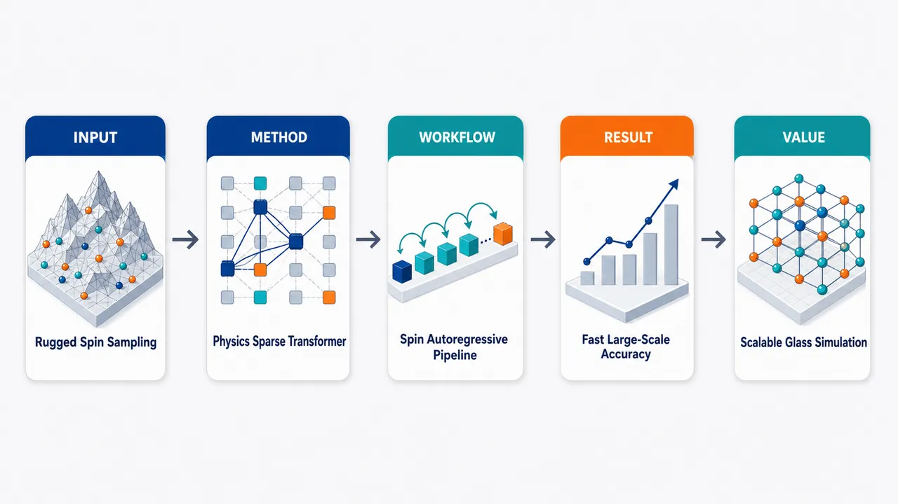
研究问题如何在阻挫、无序、能量景观崎岖的自旋玻璃中，高效学习 Boltzmann 分布并估计自由能、重叠分布和基态能量；核心瓶颈是传统 MCMC 在相变和低温附近混合极慢，已有 VAN/Transformer VAN 随系统变大性能不稳定、采样计算成本过高，难以扩展到数千自旋。创新方法提出 FlashVAN：把自旋系统视为“位置和相互作用拓扑主导、token 内容极少”的非语言序列，使用物理启发稀疏局域注意力替代全局注意力；2D 注意力窗口按边界长度 O(L) 截断，3D 按截面面积 O(L²) 截断；再结合拼接式自旋位置嵌入、FlashAttention-2、KV cache、Muon 优化器、温度退火、局域 Monte Carlo refinement 与 self-distillation，形成兼顾物理归纳偏置和 GPU 高效执行的 Transformer VAN。工作流程输入 SK 或 EA 自旋玻璃实例、耦合矩阵/晶格拓扑与温度；将 2D/3D 晶格按 raster scan 展平成自旋序列；每个 ±1 自旋与位置向量拼接嵌入；decoder-only Transformer 用因果稀疏注意力学习 qθ(σ)=∏qθ(σᵢ|σ<ᵢ)；通过 REINFORCE 最小化变分自由能并用 FlashAttention-2 加速训练；采样阶段用 KV cache 逐点生成配置；低温阶段加入温度退火、短程局域 MC 修正和自蒸馏损失；最终输出 Boltzmann 样本、自由能、overlap distribution 和基态能量。关键结果单张 NVIDIA H100 GPU 可扩展到 4096 spins；相对 vanilla VAN 最高接近两个数量级加速，SK 序列长度 512 时吞吐加速达 58.34×。SK 模型 N=64/128/256 的自由能收敛到热力学极限参考 F∞≈−1.5112，N=30 相对自由能误差约 10⁻⁶–10⁻⁴，方差低于 10⁻⁴。2D EA 在 L=8–60 上基态残差约 10⁻⁵–10⁻³。3D EA 在 L=10、T=1.92 到 T=0.1 的 overlap distribution 与 PT 参考最佳一致，优于 PA/GA 的低温或中温表现。应用价值为自旋玻璃提供一种可扩展神经采样范式，可在单 GPU 上同时完成有限温平衡分布重构、自由能估计、低温基态搜索和复杂 overlap 结构分析；有助于统计物理、组合优化和无序系统研究从小规模神经网络验证推进到数千自旋的有限尺寸分析，并展示了将 LLM 高效注意力内核迁移到科学计算模拟的实际路径。第一部分：核心概览
提出 FlashVAN：一种面向自旋玻璃的物理启发 Transformer 变分自回归网络，用稀疏局域注意力、自旋专用位置嵌入、FlashAttention-2 与 KV cache 同时解决表达能力、采样速度和大规模可扩展性问题。该框架在 SK、2D EA、3D EA 模型上解析自由能、Boltzmann 分布、重叠分布与基态能量，单张 NVIDIA H100 GPU 可扩展到 4096 spins，相对 vanilla VAN 最高实现近两个数量级加速，推动神经网络自旋玻璃模拟进入前所未有的系统尺度。
---
第二部分：结构化快速回顾
《Scalable Physics-Inspired Transformers for Spin Glasses》（None，）
背景
自旋玻璃中的阻挫、无序、崎岖能量景观使 Boltzmann 分布采样、自由能估计和基态搜索极具挑战。传统 MCMC 在相变附近相关时间极长；已有 VAN / Transformer VAN 缺乏稳定 scaling law，系统变大时性能下降，且计算代价高。
方法
构建 FlashVAN：以 Transformer decoder 为骨干，加入物理启发稀疏注意力、拼接式位置嵌入、FlashAttention-2 CUDA kernel、KV cache 自回归采样、Muon 优化器、温度退火、局域 Monte Carlo refinement 与 self-distillation loss。
结果
在 SK 模型中，N=64/128/256 的自由能收敛到热力学极限参考 F∞≈−1.5112，N=30 的相对自由能误差为 10⁻⁶–10⁻⁴，方差低于 10⁻⁴；吞吐最高加速 58.34×。在 2D EA 中，L=8–60 的残差能量约 10⁻⁵–10⁻³。在 3D EA 中，L=10 的 overlap distribution 在 T=1.92 到 T=0.1 均优于 PA/GA。
讨论
性能提升来自三个核心因素：自旋系统的信息主要在位置与相互作用拓扑而非 token 语义；局域哈密顿量允许把注意力截断到物理相关边界；低温训练需要避免 reverse-KL 式 mode collapse，因此引入 MC refinement 与 likelihood-like regularization。
局限
SK 全连接长程相互作用仍要求较强的位置表达；周期边界的 2D EA 在最大尺寸处残差略升；低温 overlap distribution 需额外局域 MC 与改造损失；论文未给出统计显著性 P 值，也未完整展示 Methods 与 Supplementary 的全部细节。
结论
FlashVAN 建立了面向阻挫自旋玻璃的可扩展神经采样范式，在单 GPU 上同时实现高精度热力学估计、低温基态搜索和复杂 overlap distribution 重构，超过多数既有机器学习方法的规模与效率边界。
---
第三部分：逐章节冷凝解析
Abstract
- Efficient Boltzmann sampling is the central target
自旋玻璃中的核心任务是高效采样 Boltzmann distribution，该问题同时属于统计力学与组合优化。摘要开篇明确问题地位：*"Efficient sampling of the Boltzmann distribution in frustrated spin glasses is central to statistical mechanics and combinatorial optimization."* 关键难点来自 frustrated spin glasses 的崎岖能量景观和多谷结构。
- Two bottlenecks motivate the architecture
已有机器学习方法存在两个持久问题：一是无法解释为什么变分模型不像大语言模型那样从规模增大中单调获益；二是大系统计算代价太高，抵消了相对经典采样方法的优势。原文直接指出：*"two issues persist: limited understanding of why variational models fail to benefit from increased scale, unlike the monotonic scaling law of large language models; and high computational cost on large systems that negates advantages over classical sampling methods."*
- FlashVAN combines sparse attention and spin-tailored position encoding
核心方法是一个物理启发 Transformer，包含可解释稀疏注意力与面向自旋的位置嵌入。摘要表述为：*"we develop a physics-inspired transformer with interpretable sparse attention and spin-tailored positional embeddings to address these challenges."* 这里的创新点并非简单套用 Transformer，而是把自旋相互作用拓扑显式编码进注意力结构。
- FlashAttention enables two-orders-of-magnitude acceleration
通过 FlashAttention 进行并行 ancestral sampling，模型相对 vanilla VAN 获得最高两个数量级的加速。关键证据为：*"By further leveraging FlashAttention for parallel ancestral sampling, it achieves up to two orders of magnitude speedup over vanilla variational autoregressive networks."* 该加速使单 GPU 上的大规模神经网络自旋玻璃模拟成为可能。
- Thermodynamic observables are resolved across models and temperatures
FlashVAN 能解析完整概率分布、自由能和 overlap statistics，覆盖 SK、2D EA、3D EA 模型。摘要给出范围：*"It can resolve full probability distributions, free energies, and overlap statistics across temperatures, for Sherrington-Kirkpatrick and 2D or 3D Edwards-Anderson models."* 该点意味着框架不仅做基态优化，也做有限温度平衡分布学习。
---
I Introduction
- Spin glasses remain a central hard problem
高维自旋玻璃的集体行为仍是统计力学与组合优化的核心难题，代表模型包括 Sherrington-Kirkpatrick (SK) 与 Edwards-Anderson (EA)。原文定位为：*"Understanding the collective behavior of high-dimensional spin-glass models remains a central problem in statistical mechanics and combinatorial optimization."* 这些模型具有 *"frustration, disorder, and rugged energy landscapes"*，导致概率分布解析随系统规模呈指数级困难。
- Classical MCMC struggles near transitions
传统采样方法包括 Markov chain Monte Carlo，在崎岖能量景观中难以平衡，尤其在相变附近相关时间极长。关键表述为：*"The conventional sampling approaches, including Markov chain Monte Carlo, often struggle to equilibrate in the rugged energy landscape, especially near phase transitions where correlation times become extremely long."* 这解释了为何需要非马尔可夫链式生成模型。
- VANs provide tractable autoregressive sampling but lack scalable gains
Variational autoregressive networks (VANs) 能以自回归分解直接采样 Boltzmann 分布，已用于平衡统计力学、量子多体与非平衡动力学。优势由原文概括为：*"VANs offer a powerful method by enabling parallel ancestral sampling from learned Boltzmann distributions."* 但关键限制在于 scale-up 后不稳定：*"autoregressive models for spin-glass systems show no clear scaling advantage."*
- Transformer depth or sophistication does not automatically help
不同于 LLM，给自旋玻璃 VAN 增加深度或换用复杂 Transformer 不一定提升性能，因为缺乏物理归纳偏置。原文强调：*"Deeper architectures or more sophisticated designs (e.g., transformers) do not necessarily yield better performance, while often lacking the physical inductive biases needed to capture spin correlations."* 因此过去实践多依赖 MADE 或 NADE，但这些模型随系统尺寸增大而退化。
- Ground-state search is also blocked by scalability
低温基态搜索同样受限于神经模型规模。已有 VAN-assisted Monte Carlo 在困难实例上表现挣扎，促使研究转向图神经网络或强化学习。原文写道：*"the scalability bottleneck also limits machine-learning methods in the task of searching for ground states at low temperature."* 强化学习方法的精度还存在争议：*"their accuracy was debated."*
- FlashVAN introduces physics-inspired sparse attention motivated by LLM efficiency
新框架受到 DeepSeek 等大语言模型稀疏注意力思路启发，但注意力结构显式编码自旋系统相互作用拓扑。核心句为：*"introducing a physics-inspired transformer built on an interpretable sparse-attention mechanism motivated by large language models such as DeepSeek."* 该注意力模式 *"explicitly encodes the interaction topology of spin systems"*，提升对晶格几何和耦合结构的表征。
- Hardware implementation is a central contribution, not an afterthought
框架引入 FlashAttention kernels 与 key-value (KV) caching，面向现代 Transformer 的硬件高效采样与训练。原文为：*"by leveraging FlashAttention kernels together with key-value (KV) caching for efficient autoregressive sampling ... the present framework makes training and sampling practical at substantially larger scales."* 该点把物理建模和 GPU 系统优化结合。
- Low-temperature robustness uses MC refinement and self-distillation
为了提升低温训练稳定性和探索多个低能谷的能力，训练结合局域 Monte Carlo refinement 与 self-distillation。原文指出：*"we introduce a training strategy that combines local Monte Carlo refinement with self-distillation, improving optimization stability while promoting exploration among low-energy valleys."* 这是解决低温 mode collapse 的关键设计。
- Single-GPU scale reaches 4096 spins
实验规模显著超过既有神经网络方法：*"On a single GPU, it scales to systems with 4,096 spins."* 表 1 给出最大系统尺寸对比：SK 中 VAN/VNA/ng-VAN/FlashVAN 分别为 100/100/30/256；2D EA 中 VNA/TwoBo/4N/FlashVAN 为 3600/1024/256/3600；3D EA 中 TwoBo/GA/FlashVAN 为 1728/2744/4096。
- Speed and accuracy exceed vanilla VAN and natural-gradient variants
计算性能上，FlashVAN *"achieves up to two orders of magnitude speedup over the vanilla VAN"*，并且 *"improves on recent natural-gradient variants."* 这将贡献从模型结构扩展到训练效率和可部署规模。
---
II Results
- Results cover SK and EA benchmark systems
结果部分围绕 SK 与 EA 两类范式模型展开，目标包括自由能、Boltzmann 分布、overlap distribution 与基态能量。整体结果由原文概括：*"The present framework accurately resolves free energies, Boltzmann and overlap distributions across temperatures for the paradigmatic SK and EA spin-glass models in both two and three dimensions."*
---
II.1 Framework
- Target distribution is the Boltzmann distribution
对大小为 N 的自旋系统，配置为 σ∈±1ᴺ，目标分布为
p(σ)=e⁻βE⁽σ⁾/Z，其中 β=1/T。原文公式说明：*"Consider a spin system of size N, whose configurations ... follow the Boltzmann distribution."* 这是所有自由能估计和采样任务的数学基础。
- VAN uses tractable autoregressive factorization
VAN 用
qθ(σ)=∏ᵢ qθ(σᵢ|σ<ᵢ)
近似目标分布，从而允许直接采样。原文表述为：*"The VAN can approximate this target distribution through a tractable autoregressive factorization ... allowing for direct sampling."* 该分解使 ln qθ(σ) 可精确计算，适合变分自由能优化。
- Existing VANs are limited in representational focus and scalability
原有 VAN 同时存在表征偏置错误与计算不可扩展。原文总结：*"existing VANs still exhibit notable limitations in both representational focus and computational scalability."* 这为 FlashVAN 的两条主线——物理结构化注意力与 GPU 高效实现——奠定问题定义。
- Spin tokens differ fundamentally from language tokens
自然语言 token 含有丰富语义；自旋 token 只是 +1/-1 符号，本身信息极少。原文明确区分：*"tokens in natural language carry rich semantic meaning, whereas spin tokens are merely symbolic states (+1/-1) conveying limited intrinsic information."* 因而自旋系统的关键信息在于位置、邻接与耦合关系，而非 token 内容语义。
- Position and relation define physical configurations
FlashVAN 的设计核心是：对自旋系统，决定物理配置的不是每个 token 的内容，而是位置与关系结构。原文句子非常关键：*"for spin systems, it is not the content of each token but its positional and relational structure that defines the physical configuration."* 这也是论文的主要科学洞察之一。
- Hardware inefficiency restricts existing transformer VANs
既有 Transformer VAN 未充分利用现代 LLM 中标准化的高效注意力算法，因此受二次注意力复杂度与显存开销限制。原文指出：*"existing VAN implementations, particularly those based on transformer architectures, have not leveraged the latest hardware-efficient algorithms that have become standard in large language models."* 直接结果是 *"scalability remains constrained by quadratic attention complexity and large memory overhead."*
- FlashVAN is position-aware, physics-inspired, and hardware-efficient
新模型被命名为 Flash Variational Autoregressive Network (FlashVAN)，强调加速性能与变分形式。原文定义：*"We term it Flash Variational Autoregressive Network (FlashVAN) to highlight its accelerated computational performance and its variational formulation."* 它结合 physics-inspired sparse attention 与自旋系统专用位置嵌入。
---
II.1.1 Physics-inspired sparse attention
- Attention sparsity is rooted in two-body locality
注意力机制建立在二体哈密顿量的局域性之上。原文开宗明义：*"The design of our attention mechanism is physically rooted in the locality of interactions inherent to two-body Hamiltonians."* 标准 Transformer 使用完整 causal self-attention，而晶格自旋模型的局域拓扑允许严格截断注意力范围。
- Local topology permits truncation without losing accuracy
对具有局域相互作用的自旋模型，完整历史并非都影响当前条件概率。原文写道：*"the local topological structure of lattice spin models allows for rigorous truncation of this attention span without compromising representational accuracy."* 这种截断和 TwoBo、tensor network Monte Carlo 的物理思路一致。
- 2D conditional probability is determined by boundary spins
对开边界 2D 自旋模型，条件概率 p(σᵢ|σ<ᵢ) 由已采样区域与未采样区域之间的边界自旋决定。原文：*"for a 2D spin model with open boundary conditions, the exact conditional probability ... is entirely determined by the boundary spins that separate the sampled region from the unsampled region."* 因此无需注意到从 i−1 到 1 的完整序列历史。
- Attention window scales as O(L) in 2D
2D 情况下关键物理依赖局限在最近 O(L) 个站点的 receptive field 内。原文表述：*"the essential physical dependencies are strictly localized within a receptive field that corresponds to the most recent O(L) sites."* FlashVAN 因此将稀疏注意力限制在窗口大小 L。
- Attention window scales as O(L²) in 3D
3D 晶格中，条件依赖由截面边界传播，窗口大小随横截面积缩放。原文指出：*"in a 3D lattice of linear size L, the effective boundary mediating conditional dependence scales with the cross-sectional area, which yields a requisite attention window of size O(L²)."* 这给出从 2D 到 3D 的物理可扩展规则。
- Sparse attention reduces memory and integrates with FlashAttention
结构化稀疏注意力减少显存占用和注意力块复杂度，并与 FlashAttention kernel 兼容。原文：*"This truncation reduces the memory footprint and computational complexity of the attention block."* 进一步地，*"this structured sparsity pattern integrates seamlessly with FlashAttention kernels."*
---
II.1.2 Positional embedding
- VAN performance is highly sensitive to positional representation
位置编码不是工程细节，而是决定训练稳定性的关键。原文直接给出经验发现：*"We find that the performance of VANs is highly sensitive to the representation of positional information."* 该结论支撑“自旋系统重位置、轻内容”的核心设计原则。
- Simple Ising lattices can use learnable absolute embeddings
对拓扑简单的 Ising 模型，可学习 additive absolute positional embedding 已足够。原文：*"For the Ising model, which is characterized by a simple lattice structure, a learnable additive (absolute) positional embedding is sufficient."* 说明位置嵌入复杂度应与物理拓扑复杂度匹配。
- SK model suffers from additive embedding instability at low temperature
对更复杂的 Sherrington–Kirkpatrick 全连接模型，加性嵌入在低温自由能收敛中产生明显振荡。原文：*"for the more intricate Sherrington–Kirkpatrick (SK) model, additive embeddings induce pronounced oscillations in the variational free-energy convergence at low temperatures."* 这表明 naive Transformer 位置编码不足以处理强无序长程相关。
- Relative positional information helps structured EA systems
对 2D/3D EA 这类结构化晶格系统，引入相对位置信息能带来额外经验收益。原文：*"for more structured spin systems, such as the 2D and 3D Edwards–Anderson (EA) models, incorporating relative positional information yields additional empirical gains."* 具体候选包括 2D or 3D RoPE。
- Additive offsets can conflate spatial and state information
当网络深度有限，仅通过加性偏移编码位置变化会混淆空间信息与自旋状态信息，影响模型区分单个自旋。原文解释：*"encoding positional variance solely through additive offsets tends to conflate spatial and state information, undermining the model’s ability to resolve individual spins and triggering these instabilities."*
- Concatenated positional embedding separates token and position vectors
FlashVAN 采用拼接式位置嵌入，把 token 向量与 position 向量整合为统一但可区分的表示。原文：*"we design a concatenated positional embedding ... that integrates token and positional vectors into a unified yet distinct representation."* 该设计改善宽温度范围内的收敛和精度。
- Performance gains come primarily from positional structure rather than content embeddings
对非语言模态，自旋模型的性能提升主要来自正确编码位置结构，而非像 NLP 那样强化内容语义。原文总结：*"in non-language modalities such as spin systems, performance gains may come primarily from properly encoding positional structure rather than from content-based embeddings as in natural language processing."*
---
II.1.3 Overall architecture
- FlashVAN follows a decoder-only transformer backbone
FlashVAN 骨干与标准 Transformer decoder 一致，由若干 decoder layers 堆叠而成，每层包含 self-attention 和 FFN。原文：*"The backbone of FlashVAN follows the standard transformer framework ... it consists of a stack of decoder layers, each containing a self-attention layer followed by a feed-forward network (FFN)."*
- Input spins are projected into d-dimensional embeddings
给定长度为 N 的自旋配置 σ=σ₁,...,σ_N，每个自旋通过拼接式位置嵌入线性投影到 d 维嵌入空间。原文：*"each spin is linearly projected into a d-dimensional embedding space using the concatenated positional embedding."*
- Higher-dimensional lattices are flattened by raster scan
对 N=L² 的 2D 和 N=L³ 的 3D 自旋系统，配置通过 raster-scan ordering 展平为一维序列。原文：*"the configuration is flattened into a 1D sequence using a raster-scan ordering over the spatial dimensions."* 这使多维模型可统一用自回归序列建模。
- Multi-head masked attention uses standard QKV projections
每层包含 masked multi-head attention。设头数为 nₕ、每头维度为 dₕ、输入为 hₜ∈R^d，查询、键、值由 W_Q, W_K, W_V 投影得到。原文公式说明：*"where ... are the projection matrices for queries, keys, and values, respectively."*
- Final output projection W_O is bypassed
与标准 Transformer 不同，FlashVAN 跳过最终输出投影 W_O。原文明确：*"Different from the standard transformer architecture, the final output projection W_O is bypassed."* 这是一个轻量化结构改动，减少不必要计算。
- FlashAttention-2 and KV cache are integrated
训练中使用 FlashAttention-2 CUDA kernel 降低内存带宽开销；采样中使用 KV cache 提升自回归生成效率。原文：*"we employ the FlashAttention-2 CUDA kernel for efficient attention calculation, which significantly reduces memory bandwidth overhead during training."* 同时：*"we integrate a key-value (KV) cache strategy to improve sampling efficiency."*
---
II.1.4 Optimization: free energy and ground state
- Optimization is reinforcement-learning-like and Markov-chain-free
训练采用类似强化学习的 scheme，直接从模型采样配置学习，不依赖 Markov chains。原文：*"The optimization follows a reinforcement learning style scheme, allowing the model to learn directly from sampled configurations without relying on Markov chains."* 这使 GPU 上独立并行采样成为主要优势。
- KL minimization gives an upper bound on true free energy
VAN 通过最小化 D_KL(qθ||p) 学习 Boltzmann 分布，且
D_KL(qθ||p)=β(F_q−F)≥0。原文公式给出：*"D_KL(qθ∥p)=...=β(F_q−F)≥0."* 因此最小化变分自由能 F_q 即给出真实自由能 F 的上界。
- Variational free energy combines energy and entropy terms
F_q=(1/β)∑σ qθ(σ)[βE(σ)+ln qθ(σ)]。该式中 βE(σ) 是能量项，ln qθ(σ) 对应熵相关项。原文说明：*"where the variational free energy is defined as..."* 并指出 *"minimizing F_q therefore provides an upper bound to the true free energy F."*
- REINFORCE with variance baseline is used
FlashVAN 使用 score-function estimator / REINFORCE 优化 F_q，并加入方差降低 baseline。原文：*"FlashVAN optimizes F_q using a score-function estimator (REINFORCE) with a variance-reduction baseline and hardware-efficient sampling."*
- Muon optimizer improves stable convergence
参数 θ 用 Muon 优化器训练，该优化器原本面向 LLM。原文：*"We optimize the parameters θ using Muon, a recently proposed optimizer originally developed for LLMs."* 实验中 Muon *"exhibits stable convergence while maintaining comparable computational efficiency."*
- Exact log probability is available by autoregressive factorization
自采样、自训练方法无需 Markov chains，并允许精确计算 ln qθ(σ)。原文：*"This self-sampling and self-training approach eliminates the need for Markov chains, enabling efficient and independent sampling directly on GPUs while allowing the exact computation of ln qθ(σ)."*
- Sampling dominates runtime and is accelerated by KV cache
每步训练的主要瓶颈是采样。原文指出：*"The runtime cost per training step is dominated by sampling, which constitutes the main bottleneck for scaling VANs to larger systems."* KV-cache sampling 通过缓存过去 key-value 向量避免重复计算：*"By caching past key-value vectors during autoregressive generation, we avoid redundant recomputation."*
- Concrete wall-clock runtimes are reported on a single H100
在单张 NVIDIA H100 GPU 上，SK 模型 N=256、4000 training steps 的总墙钟时间约 19.85 minutes；2D EA 模型 N=60²、6600 training steps 约 4.83 hours。原文证据：*"approximately 19.85 minutes for 4,000 training steps on the SK model (N=256)"*；*"about 4.83 hours for 6,600 training steps"*；*"All experiments are performed on a single NVIDIA H100 GPU."*
- Annealing converts free-energy minimization into energy minimization
基态能量估计使用同一训练框架并加入温度退火。当 T↓ 时，熵项逐渐消失，目标趋向 E_q[E(σ)]。原文：*"As temperature is annealed (T↓), the entropic contribution in F_q (proportional to T) vanishes, and the objective reduces to minimizing E_qθ[E(σ)]."*
- Low-temperature mode collapse requires extra stabilization
低温训练对 mode collapse 敏感；准确 overlap distribution 和可靠基态搜索同时需要探索竞争能谷并集中低能态。原文：*"At low temperatures, however, training is especially sensitive to mode collapse."* 因此结合 local Monte Carlo refinement 与 self-distillation loss，这是后续 3D EA 结果的关键。
---
II.2 Application to spin glass systems
- Benchmarks include SK and EA systems
FlashVAN 在多种经典统计物理系统上评估，包括 SK 与 EA 模型。原文：*"We have evaluated our FlashVAN on a variety of classical statistical physics systems, including the SK and EA models."*
- Key observables include Boltzmann distribution, free energy, and ground-state energy
实验显示 FlashVAN 能准确重构 Boltzmann 分布，并估计自由能与基态能量。原文：*"The experimental results show that FlashVAN achieves accurate reconstruction of the Boltzmann distribution and estimates key thermodynamic quantities such as the free energy and ground-state energy."*
---
II.2.1 Sherrington–Kirkpatrick model
- SK model is fully connected with Gaussian couplings
SK 模型包含 N 个二值自旋 σᵢ∈±1，哈密顿量为
H(σ)=−(1/√N)∑ᵢ<ⱼJᵢⱼσᵢσⱼ。耦合 Jᵢⱼ 是均值 0、方差 1 的独立高斯随机变量，并满足 Jᵢⱼ₌Jⱼᵢ, Jᵢᵢ₌₀。原文：*"where the off-diagonal couplings Jᵢⱼ for i<j are independent and identically distributed Gaussian random variables with mean zero and unit variance."*
- 1/√N scaling ensures a thermodynamic limit
SK 哈密顿量中的 1/√N 缩放使能量密度具有良好热力学极限。原文：*"With the 1/√N scaling, the energy density has a well-behaved thermodynamic limit."*
- Full connectivity creates many local minima
SK 的全连接和强阻挫使能量景观含有大量局部极小值，vanilla VAN 难以捕捉长程相关和复杂无序结构。原文：*"Owing to full connectivity and strong frustration, the SK energy landscape contains a profusion of local minima."* 并指出 vanilla VANs *"often struggle to capture the long-range correlations and complex disorder structure."*
- Free-energy convergence is tested at β=0.5 for N=64,128,256
固定非零温度下，FlashVAN 估计自由能用于检验 Boltzmann 分布拟合能力。图 2b 涉及 N=64,128,256，β=0.5，收敛值随 N 增大接近热力学极限参考 F∞≈−1.5112。原文：*"Fig. 2b shows the convergence of the estimated free energy during training for N=64,128,256."* 以及 *"the converged values move toward the thermodynamic-limit reference F∞≈−1.5112."*
- Runtime stays nearly constant with batch size
与传统 transformer-VAN 相比，FlashVAN 在测试 batch size 范围内运行时间几乎不变，而传统 transformer-VAN 随 batch size 快速增加。原文：*"the transformer-VAN runtime increases rapidly with batch size, whereas FlashVAN remains nearly constant over the tested range."*
- Throughput speedup reaches 58.34× at sequence length 512
FlashVAN 的 GFLOPs/s 吞吐持续更高，且序列越长加速越明显。关键数字：*"reaching up to 58.34× at a sequence length of 512."* 这为“大系统下 FlashVAN 优势更明显”提供直接硬件证据。
- Ground-state search uses annealing at N=256
SK 基态能量估计在 N=256 上展示，温度逐渐降至零。原文：*"Fig. 2d shows the evolution of the estimated energy density for N=256."* 训练从高温熵主导过渡到低温内能主导，并稳定在有限尺寸修正参考值附近。
- Same architecture is tested on three disorder instances
基态搜索使用相同配置：nₕₑₐds=4、dₜₒₖₑₙ₌₂、dₚₒₛ₌₂₅₄、nₗₐyers=2，测试 3 个独立 disorder instances。原文：*"Using the same training configuration (number of heads nₕₑₐds=4, token embedding dimension dₜₒₖₑₙ₌₂, position embedding dimension dₚₒₛ₌₂₅₄ and number of layers nₗₐyers=2), we test three independent disorder instances."* 三次均收敛到接近参考的基态能量。
- Free-energy variance remains below 10⁻⁴
在不同逆温 β 下，N=30 与 N=256 的估计自由能方差 Var[f] 均低于 10⁻⁴。原文：*"Var[f] for N=30 and N=256, which remains below 10⁻⁴ over the tested β range."*
- Exact enumeration at N=30 gives relative error 10⁻⁶–10⁻⁴
对 N=30，通过穷举计算 exact free energy，与 FlashVAN 比较得到相对误差 |f−fₑₓₐct|/|fₑₓₐct|≈10⁻⁶–10⁻⁴。原文：*"For N=30, we additionally compute the exact free energy fₑₓₐct by exhaustive enumeration."* 以及 *"the relative error ... stays on the order of 10⁻⁶ ∼ 10⁻⁴."*
- Finite-size scaling matches RSB thermodynamic-limit prediction
SK disorder-averaged ground-state energy density满足有限尺寸修正：
⟨e₀⟩_N≈⟨e₀⟩∞+A/N^ω。热力学极限 RSB 参考为 ⟨e₀⟩∞=−0.763(2)，拟合参数 A≈0.70(1)、ω=2/3。原文：*"the replica-symmetry-breaking (RSB) prediction provides the thermodynamic-limit ground state energy density ... = -0.763(2)"*；*"The FSC fit uses A≈0.70(1) and the correction exponent ω=2/3."*
- Disorder ensemble sizes are large and explicitly reported
FlashVAN 对 N=64,128,256 分别训练 n=3000, 726, 162 个独立 disorder instances。原文：*"We train FlashVAN for N=64,128,256, using n=3000, 726, 162 independent disorder instances, respectively."* 结果紧随有限尺寸修正趋势，支持可扩展性。
---
II.2.2 Edwards–Anderson model in 2D
- EA model uses nearest-neighbor Gaussian couplings
EA Ising 自旋玻璃在 D 维晶格上定义为
H=−∑⟨ᵢⱼ⟩Jᵢⱼσᵢσⱼ，其中 σᵢ∈±1，求和遍历 nearest-neighbor pairs，耦合 Jᵢⱼ 为独立零均值单位方差高斯变量。原文：*"The EA Ising spin-glass model is defined in general dimension D by..."*；*"The couplings Jᵢⱼ are independent Gaussian random variables with zero mean and unit variance."*
- Gaussian disorder gives almost-sure unique finite-size ground state up to global flip
对高斯无序，任意有限系统的基态几乎必然唯一，除了全局自旋翻转简并。原文：*"For Gaussian disorder, the ground state is almost surely unique up to a global spin flip for any finite system."*
- 2D system size is N=L²
2D EA 的系统大小为 N=L²。原文：*"we first present results for the 2D case, where the system size is N=L²."*
- Overlap q diagnoses equilibrium spin-glass structure
两个同温度、同 disorder instance 的独立 replica 的 overlap 定义为
q=(1/N)σ¹·σ²=(1/N)∑ᵢσᵢ¹σᵢ²。原文：*"The overlap distribution p(q) is a sensitive diagnostic of spin-glass structure and has been widely used to characterize equilibrium behavior."* 该分布比均值能量更能检验多谷概率结构。
- FlashVAN matches PT and Kac-Ward overlap distributions at T=0.31
图 3b 比较 FlashVAN 与 parallel tempering (PT)、Kac-Ward formula 在 T=0.31、4 个代表性 disorder instances 上的 overlap distributions。原文：*"Fig. 3b compares the overlap distributions obtained from FlashVAN with those generated by parallel tempering (PT) and Kac-Ward formula ... at temperature T=0.31 for four representative disorder instances."* FlashVAN 准确复现多峰结构：*"accurately reproduces the complex, multi-peaked structure of p(q)."*
- Ground-state energies are tested from L=8 to L=60
2D EA 基态能量测试覆盖 L=8 到 60，包含开边界和周期边界。原文：*"we consider system sizes spanning from L=8 to 60, with either open or periodic boundary conditions."*
- Exact references come from McGroundState
每个 instance 的预测基态能量 e₀^pred 与 McGroundState 得到的 exact value e₀^exact 比较。原文：*"compared against the exact value e₀^exact obtained using McGroundState."*
- Residual energy is 10⁻⁵–10⁻³
残差定义为 εᵣₑₛ₌|e₀^pred−e₀^exact|，结果保持在 10⁻⁵–10⁻³。原文：*"the residuals remain at the level of 10⁻⁵ ∼ 10⁻³, indicating FlashVAN’s consistent instance-wise accuracy."*
- Periodic boundaries are harder at largest size
最大系统尺寸下，周期边界残差略有上升，说明周期边界优化景观更难。原文：*"We observe a modest increase in the residuals for periodic boundary conditions at the largest system size, suggesting that periodic boundaries introduce a more challenging optimization landscape."*
- Compared with recent transformer samplers, FlashVAN covers more tasks with shorter training time
近期 Transformer 神经采样器已在 2D EA 有限温 Boltzmann 采样达到 64×64 spins；FlashVAN 训练更短，并同时覆盖温度相关 overlap distributions 与低温基态能量。原文：*"Recent transformer-based neural samplers have also been applied to 2D EA systems of comparable size, reaching 64×64 spins in finite-temperature Boltzmann-distribution sampling."*；*"FlashVAN provides substantially shorter training times ... while covering both temperature-dependent overlap distributions and low-temperature ground-state energy estimates."*
---
II.2.3 Edwards–Anderson model in 3D
- 3D EA is the more challenging benchmark
3D EA 被明确设定为更困难的情形。原文：*"We next consider the more challenging 3D EA model."* 其难度来自更复杂的玻璃相结构、更大的边界规模和更困难的低温平衡采样。
- Overlap distribution is the benchmark against PA, GA, and PT
性能评估使用 p(q)，并与 Population Annealing (PA)、Global Annealing (GA)、Parallel Tempering (PT) 对比。原文：*"We use the overlap distribution p(q) as the benchmark to evaluate the performance of FlashVAN and compare it with other algorithms."*
- FlashVAN matches PT from T=1.92 to T=0.1 at L=10
图 4b 使用 [20] 的设定，灰色直方图为 PT 平衡 overlap distribution。FlashVAN 在四个温度点上均与 PT 参考最佳一致，温度范围从 T=1.92 到 T=0.1。原文：*"FlashVAN achieves the best agreement with the PT reference across all four temperature points, ranging from the high-temperature regime (T=1.92) down to the low-temperature regime (T=0.1)."*
- PA fails at the lowest temperature
PA 在多数温度下与参考分布一致，但在最低温失效，不能复现正确峰权重和 q=0 symmetry。原文：*"Population Annealing (PA) agrees with the reference distribution at most temperatures but breaks down at the lowest temperature, failing to reproduce the correct peak weights and q=0 symmetry."*
- GA performs oppositely: weaker intermediate-temperature agreement but better low-temperature behavior
GA 在中间温度与参考的一致性较弱，但低温表现改善。原文：*"GA exhibits the opposite trend, with weaker agreement at intermediate temperatures but improved performance at low temperatures."*
- Reverse-KL-like loss causes low-temperature mode collapse
直接用 REINFORCE 式自由能梯度估计低温 overlap distribution 会导致 mode collapse。原文：*"directly applying this loss to estimate the overlap distribution at low temperatures leads to mode collapse."* 原因是目标类似 reverse KL，具有 mode-seeking 行为：*"an objective that resembles the reverse KL divergence, which is known to be mode-seeking."*
- Modified loss adds likelihood-like regularization
改造损失在 reverse-KL-driven exploration term 与 likelihood-based regularization term 之间插值。原文：*"the modified objective interpolates between a reverse-KL-driven exploration term and a likelihood-based regularization term."* 其梯度为
∇θF_q ∝ (1/M)∑ₘ(L(σ⁽m))−L̄)∇θlnqθ(σ⁽m)) − w·∇θlnqθ(σ⁽m))，其中 w 控制新增项权重。
- Local Monte Carlo refinement supplies teacher-like physical guidance
训练不直接使用 FlashVAN 原始样本，而是先用短程局域 Monte Carlo 过程 refine。原文：*"instead of using the raw samples generated by FlashVAN, we refine the raw samples by using a short local Monte Carlo procedure before evaluating the loss."* 这与损失改造共同构成 teacher distillation：*"Together, these two changes constitute a form of teacher distillation, in which local Monte Carlo dynamics provide physically inspired guidance during training."*
- Likelihood term increases probability on physically relevant configurations
新增 likelihood term 引导模型给物理相关配置更高概率，而原 reverse-KL-like 项保持探索。原文：*"The added likelihood term guides the model toward assigning higher probability to physically relevant configurations, while the original reverse-KL-like term maintains sufficient exploration."*
- 3D overlap results use N=10³
上述 overlap distribution 结果对应系统大小 N=10³。原文：*"All results discussed above correspond to a system size of N=10³."*
- Finite-size scaling covers N=4³ to 16³ with explicit disorder counts
图 4c 进行 ensemble-averaged ground-state energy 的有限尺寸 scaling。FlashVAN 覆盖 N=4³, 6³, 8³, 10³, 14³, 16³，对应 disorder instances 数为 n=1110, 651, 300, 50, 40, 20。图注给出：*"averaged over n=1110,651,300,50,40,20 disorder instances, respectively."*
- 3D ground-state scaling agrees with PT and RSB-based FSC
图 4c 中 open squares 为已有 PT benchmark，solid line 为基于 RSB 热力学极限值的 FSC fit。图注总结：*"The close agreement between the FlashVAN results and the FSC scaling curve demonstrates its scalability and high accuracy."*
---
第四部分：深度理解与语言支持
1. 术语解析
- Frustrated spin glasses
Frustration 指无法同时满足所有局域相互作用。例如三角形中若边耦合要求相邻自旋反平行，三个约束不可能全部满足。Spin glass 则强调随机耦合、无序和大量近简并低能态。短语 *"frustrated spin glasses"* 不只是“复杂磁体”，而是具有多谷能量景观、慢动力学、长相关时间和困难优化结构的物理系统。
- Rugged energy landscape
字面是“崎岖能量景观”，学术含义是能量函数中存在大量局部极小值、鞍点和能垒。采样算法容易困在局部谷底，尤其低温时跨越能垒概率极低。该词在自旋玻璃中通常暗示 MCMC mixing slow、equilibration hard、ground-state search difficult。
- Autoregressive factorization
指把联合分布分解为条件概率乘积：
qθ(σ)=∏ᵢqθ(σᵢ|σ<ᵢ)。它的微妙之处在于：采样是逐点生成，但训练和概率评估可以并行；同时 ln qθ(σ) 可精确计算，因此适合变分自由能优化。
- Mode collapse
在生成模型中指模型把概率质量集中到少数模式，忽略其他真实存在的重要模式。在自旋玻璃低温场景中，多个低能谷都可能有非忽略的 Boltzmann 权重；若模型只采样其中一个或几个谷，能量可能看似不错，但 overlap distribution p(q) 会严重错误。
- Overlap distribution
q=(1/N)∑ᵢσᵢ¹σᵢ² 衡量两个独立 replica 的相似度。p(q) 的形状反映玻璃相结构、多谷组织和 replica symmetry breaking 特征。相比平均能量，p(q) 对“是否真正学到完整平衡分布”更敏感。
2. 疑难查证
- 为什么自旋系统更需要位置嵌入，而不是 token 内容嵌入？
在语言模型中，“cat”“run”“because”等 token 自带语义，内容嵌入极其重要。自旋系统的 token 只有 +1 或 −1，单个 token 几乎不携带语义；真正决定物理的是“这个自旋位于哪里、与哪些自旋耦合、耦合强度是什么”。因此，如果 Transformer 把注意力主要用于比较 token 内容，就会把大量容量浪费在无意义的二值符号上。FlashVAN 的关键判断是：自旋玻璃的归纳偏置应放在位置、邻接、边界、耦合拓扑上。
- 为什么 2D 注意力窗口是 O(L)，3D 是 O(L²)？
以 raster scan 逐点生成 2D L×L 晶格时，已生成区域与未生成区域之间的“前沿边界”长度约为 L。由于 nearest-neighbor Hamiltonian 的条件依赖通过边界传递，当前自旋不需要看全部历史，只需看最近一条边界附近的信息。因此窗口是 O(L)。3D L×L×L 晶格的前沿边界是一个二维截面，面积约 L²，所以窗口自然变为 O(L²)。这不是任意剪枝，而是由局域相互作用结构决定的物理剪枝。
- 为什么低温 reverse KL 容易 mode-seeking？
最小化 D_KL(q||p) 时，如果 q 把某些真实模式漏掉，只要 q 在这些区域给零概率，损失中不直接惩罚“漏掉 p 的模式”；但如果 q 把概率放到 p 很小的区域，会被强烈惩罚。因此 reverse KL 倾向选择少数高概率峰，形成 mode-seeking。低温 Boltzmann 分布本来就高度尖锐，多谷之间能垒高，reverse-KL-like 训练更容易只占据某些低能谷，导致 overlap distribution 错误。FlashVAN 的 MC refinement 与 likelihood-like term 就是为缓解该问题。
- 为什么能量准确不代表分布准确？
基态能量只检验是否找到低能配置；多个算法都可能找到类似低能态。但有限温 Boltzmann 分布要求正确给每个能谷分配概率权重。若只找到一个谷，能量可能很低，但两个 replica 的 overlap 会高度集中，无法复现 PT 的多峰 p(q)。因此论文同时报告自由能、overlap distribution、基态能量，证据层次更完整。
---
第五部分：创新评估与关联
1. 创新性判断
- 从“更大 Transformer”转向“物理结构化 Transformer”
近 2–5 年的神经采样工作常尝试把 VAN、Transformer、GNN 或强化学习用于自旋玻璃，但核心障碍是规模扩大后不稳定、计算代价过高、低温分布难学。FlashVAN 的新颖性在于没有盲目堆叠 Transformer 深度，而是明确指出自旋 token 内容贫乏，核心信息来自位置与相互作用拓扑，因此用物理启发稀疏注意力和自旋专用位置嵌入重构归纳偏置。
- 把 LLM 系统优化真正迁移到物理采样
过去 Transformer VAN 往往只迁移了模型形式，没有充分迁移现代 LLM 的高效 kernel 与缓存机制。FlashVAN 把 FlashAttention-2、KV cache、Muon optimizer 引入变分自回归自旋采样，使单 GPU 上 4096 spins 的 3D EA 成为可行任务。该点解决了“模型理论上强，但采样太慢”的现实瓶颈。
- 解释并缓解 VAN scaling failure
论文的新颖贡献不只是性能提升，还给出一个机制解释：VAN 在自旋系统中难以随规模提升，是因为注意力与嵌入机制错误地偏向 token 内容，而自旋系统真正需要位置/关系结构。拼接式位置嵌入、相对位置设计和局域注意力共同提供了可检验的解决方案。
- 统一覆盖有限温分布和低温基态搜索
许多方法只擅长基态优化，或只做有限温采样。FlashVAN 同时处理 free energy estimation、Boltzmann distribution reconstruction、overlap distribution 与 ground-state energy，并在 SK、2D EA、3D EA 上展示。尤其 3D EA 中从 T=1.92 到 T=0.1 的 p(q) 对齐 PT，说明其不只是低能搜索器，而是高质量概率采样器。
- 低温训练策略针对 mode collapse 给出实用方案
相比单纯 reverse-KL 变分优化，FlashVAN 加入 local Monte Carlo refinement 与 self-distillation / likelihood-like regularization，在低温多谷结构下保持探索并提高物理相关配置概率。这直接解决了前人神经采样器在低温 overlap distribution 上容易崩溃的问题。
- 规模边界具有领域意义
表 1 中最大系统尺寸显示：FlashVAN 在 3D EA 达到 4096 spins，超过 TwoBo 的 1728 和 GA 的 2744；在 SK 达到 256，超过 vanilla VAN/VNA 的 100 与 ng-VAN 的 30；在 2D EA 达到 3600，与 VNA 的最大尺寸相当但训练时间更短且任务覆盖更广。该结果使神经网络自旋玻璃模拟从“小系统验证”推进到更接近物理有限尺寸分析的范围。
-
02
📊 含图深析
📖 展开分析 + 配图
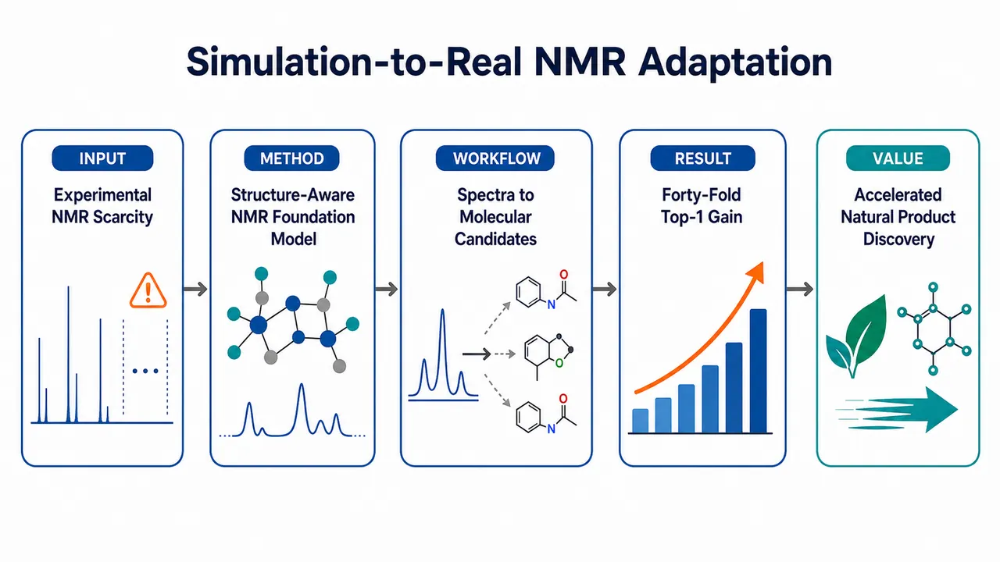
研究问题实验 NMR 谱图昂贵且稀缺，最大实验库仅百万级，远小于巨大化学空间，导致现有 NMR 深度学习模型多为单任务、低泛化；核心问题是如何利用大规模模拟 ¹H/¹³C 谱图，跨越模拟谱与真实实验谱之间的噪声、系统偏移和峰重叠差距，实现可迁移的分子结构分析。创新方法UltraNMR 构建 1.2 亿参数、16 层 Transformer NMR 基础模型，将连续化学位移用 Fourier feature 编码为可建模的谱图 token；Aha 点在于用 1.58 亿对模拟 ¹H/¹³C 谱图预训练，并把 NMR 物理化学知识嵌入训练目标：掩码化学位移序数回归、HSQC 启发的 ¹H–¹³C 键合相关预测、分子指纹监督、同分异构体对比学习，使谱嵌入从“峰位相似”升级为“结构相似”。工作流程输入模拟或实验 ¹H/¹³C NMR 化学位移 → Fourier feature 将峰位编码为高维正弦/余弦特征 → Transformer encoder 学习谱内依赖与 ¹H–¹³C 跨谱关系 → 通过多种预训练目标对齐化学结构语义 → 生成 768 维谱图向量 → 下游接入检索、官能团识别、天然产物超类分类或 Transformer 解码器生成 SMILES → 输出结构候选、类别、官能团和从头解析结果。关键结果模型建立覆盖约 9400 万 unique molecules 的 1.58 亿谱向量库；在 NMRGym 实验谱图库检索中，accuracy 和 recall 持续优于 Gaussian convolution 与 NMRSolver，错误候选也更接近真实结构；官能团识别达到 50.20% overall accuracy 和 65.14% macro-F1；从头结构解析中，相比无预训练基线，NMRGym 含立体化学 Top-1 accuracy 接近 40 倍提升，并在 NMRShiftDB 上 Top-1 accuracy 超过基线两倍。应用价值为 NMR 分子结构解析提供统一基础模型工具，可把真实实验谱图快速转化为结构感知向量，用于大规模库检索、官能团判断、天然产物分类和 SMILES 从头生成；在中国药典中药来源样品中辅助鉴定两个新天然产物，说明该方法能减少专家盲目推理范围，加速天然产物发现、药物小分子鉴定和计算辅助结构解析。第一部分：核心概览
UltraNMR 将 1.58 亿对模拟 ¹H/¹³C NMR 谱图用于预训练，构建了 1.2 亿参数 Transformer NMR 基础模型，通过掩码化学位移序数回归、¹H–¹³C 键合相关预测、分子指纹监督与同分异构体对比学习，学习可迁移的谱图表征。模型在实验谱图库检索、官能团识别、天然产物超类分类、从头结构解析中优于传统方法和任务专用模型，并支持两个新天然产物结构鉴定，体现出大规模模拟预训练弥合 simulation-to-real gap 的代表性范式。
---
第二部分：结构化快速回顾
《A large-scale foundation model enables simulation-to-real adaptation for nuclear magnetic resonance-based molecular structure analysis》（None，）
背景
NMR 谱学可提供小分子原子尺度结构信息，但实验谱图获取昂贵、数据库规模有限，导致深度学习方法多局限于单任务、低泛化场景。小分子化学空间估计超过 10⁶⁰，而 PubChem 仅约 10⁸ 化合物，实验 NMR 最大数据库也只有 3.3 million entries，与化学空间严重不匹配。
方法
UltraNMR 使用 1.58 亿对模拟 ¹H/¹³C NMR 谱图预训练，模型为 16 层 Transformer encoder、1.2 亿参数、768 维嵌入。预训练目标包括：掩码化学位移序数回归、受 HSQC 启发的 ¹H–¹³C 相关预测、分子指纹监督、同分异构体 contrastive learning。谱图中的化学位移先经 Fourier feature 编码，再输入 Transformer。
结果
UltraNMR 构建了覆盖约 9400 万 unique molecules 的 1.58 亿谱向量库。在 NMRGym 实验谱图检索中，UltraNMR 在 accuracy 与 recall 上持续优于 Gaussian convolution 和 NMRSolver。在官能团识别中达到 50.20% overall accuracy、65.14% macro-F1，优于 XGBoost 与 NMR2Struct。在从头结构解析中，相比无预训练基线，NMRGym 含立体化学 Top-1 accuracy 接近 40 倍提升。
讨论
UltraNMR 的谱嵌入不仅匹配谱峰信号，还捕捉结构相似性；UMAP 显示脂肪酸、卤代物、碳水化合物等类别在潜空间中形成化学上连续且有组织的拓扑。真实天然产物案例中，UltraNMR 将超类、官能团、库检索、从头生成结合，为专家结构解析提供候选约束与结构线索。
局限
当前模型主要处理 一维 ¹H 和 ¹³C 谱图，尚未纳入 HSQC、HMBC、COSY、NOESY、多重性、耦合常数等信息。对稀有骨架、细微结构差异、立体化学、数据库中缺少近邻参照的分子，精确结构解析仍困难。
结论
大规模模拟 NMR 预训练可有效建立可迁移谱图表征，并在实验 NMR 分析中实现 simulation-to-real adaptation。UltraNMR 提供了从谱图库检索到从头解析、官能团识别、天然产物分类和新化合物发现的统一基础模型路线。
---
第三部分：逐章节冷凝解析
Abstract
Experimental NMR scarcity limits generalizable spectral AI
实验 NMR 数据稀缺，使深度学习模型长期停留在窄任务、低泛化的应用层面。核心瓶颈不是模型结构单一，而是缺少足够规模的实验谱图支撑通用表征学习。原文明确指出：*"the scarcity of experimental NMR datasets has constrained deep learning in this domain to narrow, task-specific applications that lack broad generalization."* 这直接定义了 UltraNMR 的问题设定：用模拟谱图规模化预训练解决实验数据不足。
UltraNMR is positioned as a foundation model for NMR
UltraNMR 被定义为面向 NMR 的 large-scale foundation model，目标是学习可泛化谱图表征，而非只解决单个下游任务。核心机制依赖 NMR 谱图固有性质，尤其是谱内化学位移依赖和谱间 ¹H/¹³C 关联。原文写道：*"we introduce UltraNMR, a large-scale foundation model for NMR that leverages the intrinsic properties of NMR spectra to learn generalizable spectral representations."*
Pre-training scale reaches 158 million paired spectra
预训练数据规模达到 158 million paired simulated ¹H and ¹³C NMR spectra，这是模型成为 foundation model 的关键基础。原文给出精确规模：*"We collected 158 million paired simulated 1H and 13C NMR spectra to train UltraNMR, employing multiple domain-specific pre-training objectives."* 该规模远超现有实验 NMR 数据库量级。
Simulation-to-real adaptation is the central claim
UltraNMR 的核心能力是从模拟谱图学习后迁移到真实实验谱图。摘要中使用 *"enabling seamless simulation-to-real adaptation"* 表示模型能够跨越模拟数据与实验数据之间的系统差异。该命题在全文通过实验谱图库检索、NMRGym、NMRShiftDB、天然产物案例支撑。
Downstream tasks consistently reach state-of-the-art performance
模型经适配后，在多个真实实验 NMR 结构分析任务上取得 SOTA，并且优于没有模拟预训练、直接在下游数据训练的 UltraNMR 变体。原文表述为：*"adapting UltraNMR to a range of molecular structure analysis tasks on experimental NMR spectra consistently yields state-of-the-art performance and clearly outperforms UltraNMR variants trained directly on downstream data without simulation pre-training."*
A large-scale vector library covers 94 million unique molecules
UltraNMR 将模拟谱图编码为向量，构建 large-scale NMR spectral vector library，覆盖 94 million unique molecules。原文精确说明：*"covering 94 million unique molecules and enabling effective structure-aware retrieval."* 这里的关键不只是规模，而是 structure-aware retrieval，即检索依据从信号相似性升级为结构相关性。
Two unknown natural products are structurally elucidated
真实应用中，UltraNMR 支持从中国药典收录中药中鉴定两个此前未知天然产物。原文为：*"UltraNMR facilitates the structural elucidation of two previously unknown natural products from Chinese herbal medicines recorded in the Chinese Pharmacopoeia."* 这使工作从 benchmark 性能扩展到实际天然产物发现。
---
1 Introduction
Small molecules dominate drugs and require structural determination
小分子是化学多样性、生命信号、代谢路径和药物开发的核心对象。上市药物中小分子占比超过 90%，说明小分子结构解析具有直接临床意义。原文强调：*"In marketed drugs, small molecules account for over 90% of the total, demonstrating their clinical significance."* 结构决定功能，因此结构测定是利用小分子潜力的第一步：*"the first step is to determine their structures, as their functions are intrinsically linked to their structures."*
Chemical space is astronomically larger than known databases
小有机分子化学空间估计超过 10⁶⁰ molecules，而 PubChem 约 10⁸ compounds，二者相差约 52 个数量级。原文写道：*"the small organic chemical space has more than 10⁶⁰ molecules"*，同时 *"PubChem ... contains on the order of 10⁸ compounds."* 该差距意味着依赖已知库的结构识别天然受限。
NMR provides richer structural information than many spectroscopies
质谱提供碎片模式，红外光谱提示官能团，而 NMR 能给出结构和动力学的原子尺度信息。原文对比指出：*"Mass spectrometry provides insights into fragmentation patterns and infrared spectroscopy yields information about functional groups. In contrast, Nuclear Magnetic Resonance (NMR) spectroscopy offers comprehensive structural and dynamical atomic-scale information."* 因此 NMR 是小分子发现和鉴定中的强工具。
Chemical shifts and coupling constants encode local environment and connectivity
NMR 通过探测原子核磁性质，尤其是 ¹H 与 ¹³C，获得化学位移、耦合常数等参数。化学位移反映局部电子环境，spin-spin coupling constants 反映连接关系。原文表述为：*"chemical shifts that reflect local electronic environments and spin-spin coupling constants that reveal the connectivity."* UltraNMR 主要从一维 ¹H/¹³C 化学位移出发，但预训练目标试图恢复其中的连接信息。
Manual NMR interpretation remains slow and expertise-intensive
NMR 谱解释耗时且高度依赖专家，主要原因包括峰重叠和溶剂诱导位移遮蔽关键信息。原文指出：*"the interpretation of NMR spectra is time-consuming and requires expert knowledge due to the complexity of NMR spectral data where peak overlap and solvent-induced shifts can obscure critical structural information."* 自动化 NMR 分析由此成为高需求方向。
Existing spectral AI methods are powerful but task-specific
近期谱图 AI 可快速分析复杂 NMR 数据，但现有 NMR 分析主要分为 library search-based identification 与 de novo elucidation。前者与数据库中的参考谱或分子比较，后者不依赖预定义候选库直接推断结构。原文概括为：*"Current methods can be broadly categorized into library search-based identification and de novo elucidation."* 这些方法通常需要针对每个任务从头训练独立模型：*"each individual NMR interpretation task requires training a separate model from scratch."*
Foundation models offer a route to reusable NMR representations
基础模型通过学习通用数据表征，可微调到多种下游任务。原文定义为：*"foundation models, which learn general representations of data that can be fine-tuned for various downstream applications."* NMR 领域此前难以训练基础模型的核心障碍是实验数据稀缺：*"training a foundation model requires large-scale data, which remains scarce in the NMR domain due to the high cost and limited throughput of experimentally acquired spectra."*
Simulated spectra provide scalable training data
模拟 NMR 谱可通过物理方法和深度学习方法大规模生成，弥补实验数据不足。原文写道：*"simulated NMR spectra can be efficiently generated at scale using simulation techniques."* UltraNMR 数据来自 physics-based 与 deep-learning–based 两类模拟方法，形成 158 million paired proton and carbon spectra。
Pre-training objectives encode NMR-specific physics and chemistry
UltraNMR 的预训练不是普通自监督复制，而是引入 NMR 领域知识。第一目标通过 ordinal regression 预测掩码化学位移，学习谱内依赖；第二目标受 HSQC 启发，基于已知 C–H 键学习 ¹H/¹³C 化学位移相关。原文写道：*"The first objective is to predict masked chemical shifts by ordinal regression"*，以及 *"The second objective is inspired by Heteronuclear Single Quantum Coherence (HSQC) spectra, leveraging the known carbon–hydrogen (C–H) bonds."*
Molecular fingerprint supervision aligns spectra with structures
UltraNMR 将谱嵌入与分子结构相似性对齐，并用同分异构体数据进行对比学习以区分细微结构差异。原文指出：*"UltraNMR incorporates molecular fingerprint supervision, aligning spectral embeddings with chemical structures"*，并且 *"employ contrastive learning on a curated isomer dataset, enabling the model to distinguish structural nuances."* 这是模型从谱峰模式走向结构语义的重要设计。
The spectral vector library reaches 158 million embeddings and 94 million molecules
基于 UltraNMR 和模拟数据，构建 158 million spectra embedding vectors 的 NMR 库，覆盖约 94 million unique molecules。原文为：*"we construct a large-scale NMR spectra library containing 158 million spectra embedding vectors, with around 94 million unique molecules."* 该库支持结构感知检索，并在公共实验 NMR 数据集上达到 SOTA。
Real-world validation involves two Chinese Pharmacopoeia herbal medicines
真实案例来自 Vitex trifolia L. var. simplicifolia Cham. 与 Magnolia officinalis Rehd. et Wils. var. biloba Rehd. et Wils.，均为中国药典收录中药和活性天然产物来源。原文写道：*"we leverage UltraNMR to identify two previously unreported molecules ... both of which are valuable Chinese herbal medicines recorded in the Chinese Pharmacopoeia and rich sources of bioactive natural products."*
---
2 Results
2.1 Overview of UltraNMR
UltraNMR contains 120 million parameters and 16 transformer encoder layers
UltraNMR 是 120 million parameters 的大型 Transformer 模型，由 16 standard transformer encoder layers 组成，每层包含 multi-head self-attention 与 feed-forward neural networks。原文精确描述：*"UltraNMR is a large transformer-based neural network with 120 million parameters. It consists of 16 standard transformer encoder layers."* 这使其参数规模接近通用基础模型，而非传统小型任务模型。
Chemical shifts are treated as tokens and embedded into 768-dimensional vectors
模型将 NMR 化学位移视为 token，并编码成 768-dimensional vectors。全局谱图表征通过 mean pooling 获得。原文写道：*"UltraNMR treats chemical shifts as tokens, encoding them into fixed-dimensional embeddings (768-dimensional vectors), and utilizes mean pooling to aggregate these embeddings into global representations of NMR spectra."* 这一设计把谱图解析转化为序列建模问题。
Fourier features encode fine-grained spectral details
¹H 与 ¹³C 谱先用改造的 Fourier feature 方法编码。该方法把每个化学位移分解为预设 sine 与 cosine 频率，捕获整数和小数细节。原文指出：*"This method decomposes each chemical shift into predefined sine and cosine frequencies, capturing both integer and fractional components, thereby enhancing the representation of fine-grained spectral details."* 这解决连续化学位移直接输入 Transformer 难以建模高频细节的问题。
Masked chemical shift prediction uses ordinal regression instead of regression or classification
掩码化学位移预测借鉴 BERT 的 masked language modeling，但将连续位移离散成 bins，并采用 ordinal regression。标准回归对实验噪声和模拟-实验偏移过敏，标准分类忽略化学位移尺度的物理有序性。原文解释：*"We avoid standard regression because it is often overly sensitive to experimental noise and systematic simulation-to-experimental offsets"*，并指出分类问题为 *"penalizing a near-miss as severely as a distant category."* 序数回归可施加距离感知惩罚：*"UltraNMR enforces a distance-aware penalty."*
Proton–carbon correlation prediction is inspired by HSQC
第二个自监督任务受 HSQC spectroscopy 启发，直接学习相连 C–H 原子对应的 ¹H 与 ¹³C 化学位移关系。由于模拟谱中原子分配已知，模型可显式学习分子层面的直接键合关系。原文写道：*"Since atomic assignments corresponding to chemical shifts are known for simulated spectra, UltraNMR is trained to explicitly model the relationship between proton and carbon chemical shifts that are directly bonded at the molecular level."* 这对结构解析中的原子连接推断至关重要。
Molecular fingerprint supervision learns global topology
分子指纹监督将谱嵌入与化学结构对齐，使结构相似分子的谱嵌入在向量空间中更接近。原文表示：*"This supervision allows UltraNMR to learn global molecular topology, ensuring that spectra from structurally similar molecules are mapped closely in the embedding space."* 这使谱图嵌入具备结构语义，而不仅是峰位模式相似。
Contrastive learning improves isomer discrimination
同分异构体具有相同分子式但结构差异细微，NMR 结构解析中尤其困难。UltraNMR 从训练语料构建同分异构体数据集，用对比学习区分结构差别。原文为：*"we curate a specialized isomer dataset from the training corpus where we train the model to distinguish the structural differences between isomers by contrastive learning."* 目标是提升 fine-grained structural discrimination。
The simulated dataset combines NMRNet and Gaussian sources
数据集包含两个来源：主要子集为 SimNMR-PubChem Database，含 106 million NMR spectra，由高速深度学习模拟模型 NMRNet 生成；次级子集为 45 million molecules，来自 PubChem，并用 Gaussian software 进行物理模拟。原文给出：*"The primary subset is the SimNMR-PubChem Database, comprising 106 million NMR spectra simulated by NMRNet"*，以及 *"we collect a secondary subset of 45 million molecules ... simulated using Gaussian software."*
The final pre-training corpus contains 158 million paired spectra
两个来源整合后形成 158 million paired proton and carbon spectra。原文总结：*"Collectively, the constructed dataset contains 158 million paired proton (1H) and carbon (13C) spectra."* 这一规模为模型学习鲁棒、泛化的 NMR 嵌入提供基础。
---
2.2 Embedding vector visualization
UMAP reveals chemically organized latent topology
UMAP 可视化显示 UltraNMR 全局谱嵌入形成有组织拓扑，结构相关分子处于相邻区域。原文写道：*"the latent space exhibits a well-organized topology, where structurally related molecules occupy nearby regions, forming a continuous representation of chemical space."* 这说明嵌入不是任意聚类，而是反映化学结构连续性。
Fatty acids and halogenated compounds form separated clusters
脂肪酸在 UMAP 右侧形成明显独立簇，卤代物在左侧独立区域密集分布。原文细节为：*"fatty acids (blue) form a distinct and well-separated cluster on the far right of the projection, and halogenated compounds (pink) are densely concentrated in a separate region on the left."* 这些类别拥有鲜明的谱学与结构特征，被模型捕获。
Carbohydrate-related molecules show dispersed central manifolds
碳水化合物相关分子占据中心区域且更分散。含 N、S、P 的碳水化合物衍生物没有形成孤立簇，而是沿平滑流形分布。原文指出：*"carbohydrate-related molecules dominate the central area and display greater dispersion"*，并且 *"carbohydrates containing different heteroatoms (N, S, or P) do not form isolated clusters but instead distribute along smooth manifolds."*
Smooth transitions reflect hierarchical chemical modifications
从纯碳水化合物到氨基或磷酸取代衍生物，嵌入沿连续轨迹变化，反映化学修饰的层级性。原文解释为：*"This continuous transition reflects the hierarchical nature of chemical modifications."* 这种连续性支持 UltraNMR 保留内在结构相似性：*"Such connectivity indicates that UltraNMR preserves intrinsic structural similarities."*
---
2.3 Large-scale NMR library construction
Spectral library search simplifies CASE
谱图库检索是 computer-assisted structure elucidation, CASE 的关键策略，通过将查询谱与参考数据库比对推断分子结构。原文写道：*"Spectral library search serves as a vital approach in computer-assisted structure elucidation (CASE), simplifying the process of molecular identification without the need for complex and time-consuming deduction."* 其优势在于加速已知化学位移分子的鉴定。
Experimental NMR libraries are too small
实验 NMR 库受获取成本与时间限制，规模仍然有限。最大实验 NMR 数据库仅有 3.3 million entries。原文给出：*"the largest experimental NMR database contains only 3.3 million entries, representing only a small fraction of the entire chemical space."* 与 10⁶⁰ 化学空间相比，这一规模远不足以覆盖真实分子多样性。
Traditional peak matching does not guarantee structural similarity
传统谱库搜索如 peak-to-peak matching 主要检索信号层面高度相似的谱，但信号相似不一定意味着分子结构相似。原文指出：*"traditional spectral library search methods, such as peak-to-peak matching, primarily retrieve spectra with high signal-level similarity, which does not necessarily guarantee structural similarity between the corresponding molecules."* 这正是 UltraNMR 嵌入方法要解决的问题。
UltraNMR library contains 158 million vectors and 94 million unique molecules
将构建的 NMR 数据输入 UltraNMR 后，得到包含 158 million spectral vectors、约 94 million unique molecules 的大型模拟 NMR 库。每个谱图编码为 768-dimensional vector。原文为：*"we build a large-scale simulated NMR library that contains 158 million spectral vectors, with around 94 million unique molecules. In this library, each NMR spectrum is encoded as a 768-dimensional vector."*
Evaluation uses NMRGym, the largest experimental NMR benchmark
谱库在 NMRGym 上评估，该基准被称为目前最大实验 NMR 谱图 benchmark。原文写道：*"We evaluate our constructed NMR library on NMRGym, the largest experimental NMR spectra benchmark to date."* 这使检索实验能直接测试 simulation-to-real 迁移。
Baseline uses Gaussian convolution from NMR-Solver
UltraNMR 嵌入与 Gaussian convolution 方法对比，后者是 NMR-Solver 采用的传统谱向量化方式。原文为：*"We compare embeddings produced by UltraNMR with those obtained using the Gaussian convolution method adopted in NMR-Solver."* 查询谱包含配对 ¹H 与 ¹³C 信号，使用同分子式约束检索候选。
Retrieval is formula-constrained cosine similarity search
检索流程为：将查询谱编码为固定维向量；检索与查询具有相同分子式的候选谱；计算 cosine similarity；返回最高相似度对应分子。原文细节：*"We then retrieve candidate spectra whose molecules share the same molecular formula as the query. We compute the cosine similarity between the query embedding and each candidate embedding."* 分子式约束降低搜索空间并避免无关候选。
UltraNMR outperforms Gaussian convolution in accuracy and recall
在不同 retrieval depths 下，UltraNMR 在 accuracy 与 recall 上均持续优于 Gaussian convolution。原文表述：*"Across different retrieval depths, UltraNMR consistently outperforms Gaussian convolution in both accuracy and recall."* 这里 recall 被定义为库中实际存在且被成功检索的分子比例，反映库覆盖和嵌入质量。
UltraNMR outperforms NMRSolver under stereochemistry-aware and agnostic settings
在 NMRGym 测试子集上，UltraNMR 与 NMRSolver 比较时，在考虑立体化学和不考虑立体化学两种设置下均表现更好。原文为：*"UltraNMR consistently achieves higher retrieval accuracy than NMRSolver under both stereochemistry-aware and stereochemistry-agnostic evaluation settings."* 这表明优势不依赖于是否严格判定立体结构。
Tanimoto distributions show better structural relevance
Top-1、Top-5、Top-10 预测的 Tanimoto 相似度分布显示，UltraNMR 在高相似区域比例更高，而 Gaussian convolution 低相似匹配更多。原文写道：*"UltraNMR yields a higher proportion of predictions in the high-similarity regime, while Gaussian convolution exhibits a larger fraction of low-Tanimoto matches."* 这说明 UltraNMR 更可能检索到结构接近真实分子的候选。
Failure case asymmetry favors UltraNMR
Top-1 错误案例按 Tanimoto 区间分析后，UltraNMR 高相似、Gaussian 低相似的情况多于相反情况。具体例子：UltraNMR 得到 0.6–0.8 Tanimoto 而 Gaussian 得到 0.0–0.2 的情况有 235 cases；反向仅 139 cases。原文给出：*"UltraNMR achieves a Tanimoto similarity of 0.6–0.8 while Gaussian convolution yields 0.0–0.2 in 235 cases, whereas the reverse occurs in only 139 cases."*
Representative failure case illustrates structure-aware advantage
某个查询谱中，两种方法 Top-1 都未检索到精确目标，但 UltraNMR 候选与真实结构 Tanimoto score = 0.83，Gaussian convolution 候选仅 Tanimoto score = 0.10，尽管 Gaussian signal-level similarity 达 0.79。原文写道：*"UltraNMR retrieves a candidate with high structural similarity to the target (Tanimoto score = 0.83), whereas Gaussian convolution retrieves a molecule with much lower structural similarity (Tanimoto score = 0.10), despite exhibiting a high signal-level spectral similarity (Gaussian similarity = 0.79)."* 该案例说明单纯信号相似会误导结构检索。
Gaussian candidate has low UltraNMR embedding similarity
Gaussian convolution 检索的低结构相似候选在 UltraNMR 嵌入空间中相似度也低，仅 UltraNMR similarity = 0.32。原文指出：*"the molecule retrieved by Gaussian convolution also shows low similarity in the UltraNMR embedding space (UltraNMR similarity = 0.32)."* 这进一步证明 UltraNMR 嵌入更贴近结构语义。
---
2.4 Transfer learning to NMR interpretation tasks
UltraNMR transfers to three structure-centric tasks
作为 foundation model，UltraNMR 被迁移到三类结构中心任务：天然产物超类分类、官能团识别、从头分子结构解析。原文写道：*"We evaluate UltraNMR on three structure-centric tasks: superclass classification of natural products, functional group identification and de novo molecule structure elucidation."* 这覆盖从粗粒度类别到细粒度完整结构生成的任务谱系。
Experimental benchmark and from-scratch baseline test pre-training value
使用 NMRGym 与 SOTA 方法比较，同时加入无预训练、从头训练的 UltraNMR 变体作为基线。原文说明：*"We also include an UltraNMR variant trained from scratch (without pre-training) as a baseline to evaluate the effectiveness of pre-training."* 这能区分模型架构优势与大规模模拟预训练贡献。
Task-specific decoders are attached and entire model is fine-tuned
每个任务添加任务特异解码器并微调整个模型。官能团和超类分类使用 simple linear head；从头结构解析使用 Transformer decoder。原文为：*"For each task, we attach a task-specific decoder to UltraNMR and fine-tune the entire model."* 以及 *"For de novo structure elucidation, we adopt a transformer-based decoder."*
Data leakage is explicitly prevented
为防止数据泄漏，下游测试集中出现的分子从模拟训练数据中剔除。原文写道：*"To prevent data leakage, we excluded any molecules present in the downstream test sets from the simulated training data."* 所有结果为 three independent runs with different random seeds 的平均值：*"All results are reported as the average of three independent runs with different random seeds."*
Functional group labels are 20-dimensional binary vectors
官能团识别中，每个谱图标签为 20-dimensional binary vector，每个维度表示一个特定官能团存在或不存在。原文为：*"each spectrum is labeled with a 20-dimensional binary vector where each dimension indicates the presence (1) or absence (0) of a specific functional group."* 这是多标签分类任务，而非单标签分类。
UltraNMR reaches 50.20% overall accuracy in functional group identification
UltraNMR 在官能团识别中达到 50.20% overall accuracy，超过此前最好方法 XGBoost 的 45.68%。原文给出：*"it reaches an overall accuracy of 50.20%, surpassing the previous best method (45.68% by XGBoost)."* 该提升说明预训练表征在化学局部功能识别上有效。
Macro-recall and macro-F1 improve strongly
UltraNMR 的 macro-recall 比此前最好方法 NMR2Struct 高约 5%，macro-F1 达到 65.14%，超过 XGBoost 的 55.47%。原文为：*"It improves macro-recall by about 5% over the previous best method (NMR2Struct), and increases macro-F1 to 65.14%, higher than the strongest baseline (55.47% by XGBoost)."* macro 指标提升说明稀有官能团也受益，而非只提升高频类别。
UltraNMR embeddings outperform Gaussian-vectorized spectra by 10% accuracy
用同样任务解码器比较 UltraNMR 嵌入与 Gaussian 向量化谱图，UltraNMR accuracy 高 10%。原文写道：*"UltraNMR outperforms the Gaussian vector with a 10% higher accuracy."* 这证明嵌入捕获 high-level chemical semantics，而不是仅复制原始谱峰模式：*"capture high-level chemical semantics rather than just raw spectral patterns."*
Superclass classification uses NPClassifier and 74 superclasses
天然产物超类分类使用 NPClassifier 标注，对应分子被分为 74 distinct superclasses，无法被 NPClassifier 分类的谱图被过滤。原文为：*"spectra are categorized into 74 distinct superclasses based on their corresponding molecules. We filter out the spectra whose corresponding molecules cannot be classified by NPClassifier."*
UltraNMR improves common superclass performance, especially aromatic classes
对于测试样本超过 500 的 common superclasses，UltraNMR 相比基线均有提升；相对提升超过 20% 且测试样本超过 100 的类别主要为芳香族化合物。原文写道：*"UltraNMR shows improved performance over the baseline model across all common superclasses (those with more than 500 test samples)."* 以及 *"these classes predominantly correspond to aromatic compounds."* 这说明模型尤其擅长捕获芳环和共轭体系谱学模式：*"characteristic spectral patterns associated with aromatic ring systems and conjugated structures."*
De novo elucidation generates SMILES from spectra with molecular formulas
从头结构解析任务中，UltraNMR 在给定 NMR 谱与分子式条件下生成 SMILES。原文为：*"we generate SMILES from NMR spectra with molecular formulas using UltraNMR with attached transformer decoder layers."* 分子式作为约束显著降低生成空间，但仍需要从谱图推断结构连接。
Two-stage training uses simulated seq2seq then downstream fine-tuning
从头解析采用两阶段训练：先在大规模模拟谱上进行 sequence-to-sequence 训练，学习谱图到 SMILES 映射；再在下游数据集微调。原文写道：*"large-scale sequence-to-sequence training on simulated spectra to learn how to map spectra to SMILES, followed by fine-tuning on downstream datasets."*
NMRGym scaffold split creates a hard out-of-distribution setting
NMRGym 使用 scaffold-based split，训练集和测试集属于不同分布，难度高。原文指出：*"Since the NMRGym dataset utilizes a scaffold-based split, the training and test sets represent distinct distributions."* 在该设定下，基线表现差，而预训练模型 NMRMind 和 UltraNMR 显著提升。
UltraNMR outperforms NMRMind by about 2% on NMRGym
在 NMRGym 从头解析任务中，UltraNMR 在所有指标上超过 NMRMind，提升约 2%。原文为：*"UltraNMR consistently outperforms NMRMind across all metrics, with about 2% improvement."* 相比无预训练基线，含立体化学结构 Top-1 accuracy 近 40-fold increase：*"UltraNMR achieves a nearly 40-fold increase in Top-1 accuracy for structures including stereochemistry."*
NMRShiftDB random split is easier but still benefits from pre-training
NMRShiftDB 使用 random split，因此评估难度低于 NMRGym scaffold split。原文写道：*"we adopt a random split, which results in a less challenging evaluation setting compared to the scaffold-based split used in NMRGym."* 在此设置下，基线已较强，甚至超过 NMRMind，但 UltraNMR 预训练和 seq2seq 仍带来大幅提升。
UltraNMR more than doubles baseline Top-1 accuracy on NMRShiftDB
在 NMRShiftDB 上，UltraNMR 对含立体化学和不含立体化学任务的 Top-1 accuracy 均超过基线两倍。原文为：*"UltraNMR more than doubles the Top-1 accuracy of the baseline model for both stereochemical and non-stereochemical tasks."* Tanimoto 相似度也明显提升，表明模型不只是生成精确匹配更多，也更理解化学空间：*"exhibits a deeper understanding of chemical space."*
UltraNMR maintains Tanimoto advantages across molecule sizes
按分子大小比较 NMRShiftDB 上 Tanimoto 分数，UltraNMR 在 Top-1 和 Top-10 均比 NMRMind 有更高 median scores，并且高相似区域分布更集中。原文写道：*"UltraNMR consistently achieves higher median Tanimoto scores and more concentrated distributions in the high-similarity region compared to NMRMind."* 优势在 1–20 atoms 小分子中特别明显，并在 60–100 atoms 更复杂分子中保持鲁棒：*"particularly pronounced in smaller molecules (1-20 atoms) and remains robust as molecular complexity increases (60-100 atoms)."*
---
2.5 Structure elucidation of novel natural products
Natural products are structurally complex and hard to elucidate
天然产物结构复杂、多样，常需要专家级知识和大量手工分析。原文指出：*"Natural products often exhibit highly complex and diverse molecular structures, which makes their structural elucidation particularly challenging."* 这使天然产物成为验证 UltraNMR 实用价值的高难度场景。
UltraNMR integrates four complementary prediction modes
UltraNMR 可同时执行超类分类、官能团识别、谱图库检索和从头结构解析。原文为：*"UltraNMR can simultaneously perform superclass classification, functional group identification, spectral library search, and de novo structure elucidation."* 多任务信息整合后，专家可从穷举探索转向目标化推理：*"allows experts to focus on targeted deduction rather than exhaustive exploration."*
Candidate generation is constrained by molecular formula and filtered by predicted chemistry
两个案例均先在分子式约束下，通过谱图库检索与从头解析生成候选池；再根据 UltraNMR 的超类和官能团预测筛选；最后交由专家评估。原文写道：*"we first generate a candidate pool under molecular formula constraints using spectral library search and de novo molecule structure elucidation. We then refine this candidate set based on the superclass and functional group predictions."*
Case 1 identifies a novel diterpene from Vitex trifolia
第一个新分子来自 Vitex trifolia。UltraNMR 正确预测为 diterpene superclass，并预测含 ketone 与 alkene 官能团。原文为：*"UltraNMR correctly predicts the diterpene superclass, with ketone and alkene groups."* 筛选后，原本 de novo 第一候选因分子式不符被排除，第二候选升为第一并被确认为正确结构：*"the originally second-ranked de novo structure becomes the top-ranked candidate and is confirmed as the correct molecule."*
Case 1 shows de novo generation is crucial when the library lacks close references
第一个案例中，库检索最佳候选与真实结构 Tanimoto 均低于 0.2，说明数据库缺乏近邻参考。原文写道：*"the best candidates retrieved via library search all exhibit low structural similarity to the ground truth, with Tanimoto scores below 0.2."* 因此从头结构生成成为关键：*"de novo prediction plays a critical role in elucidating the correct structure."*
Case 2 identifies a novel lignan-related molecule from Magnolia officinalis
第二个分子来自 Magnolia officinalis。UltraNMR 未直接恢复精确结构，可能因为结构复杂度更高；但正确预测 lignan superclass 及芳环、醇、烯烃、醚等官能团。原文为：*"UltraNMR correctly predicts the lignan superclass, along with functional groups including aromatic rings, alcohols, alkenes, and ethers."*
Case 2 uses high-similarity library candidates to guide expert deduction
筛选后，库检索前两个候选与目标分子结构相似度较高，Tanimoto 均为 0.62。它们与真实结构仅在氧杂环大小上有微小差异。原文写道：*"The top two candidates from library search after filtering exhibit high structural similarity to the target molecule, with Tanimoto scores of 0.62."* 以及 *"These candidates differ from the true structure only in minor structural variations, specifically the size of the oxygen heterocycle."* 这些近邻候选提供结构线索：*"effectively guiding experts toward the correct structure."*
Novel natural product cases demonstrate multi-task practical utility
两个案例说明 UltraNMR 并非单一自动判定器，而是将粗分类、局部官能团、检索近邻和从头生成结合的专家辅助系统。原文总结：*"These cases suggest the potential of UltraNMR to integrate multi-task predictions for the identification of novel natural products."*
---
3 Discussion
UltraNMR is designed specifically for NMR foundation modeling
UltraNMR 是专为 NMR 谱学设计的基础模型，核心数据为 158 million paired proton and carbon spectra。原文开篇总结：*"UltraNMR, a foundation model specifically designed for Nuclear Magnetic Resonance (NMR) spectroscopy."* 其表征学习来自自监督目标和分子指纹监督：*"through a combination of self-supervised objectives and molecular fingerprint supervision."*
The learned representations capture intra-spectral and inter-atomic relationships
预训练目标使模型同时捕获谱内依赖、原子间关系，并将谱嵌入与化学结构对齐。原文写道：*"These objectives enable the model to capture intra-spectral dependencies and inter-atomic relationships while aligning spectral embeddings with chemical structures."* 这解释了为什么模型能同时胜任检索、分类与生成。
UltraNMR embeddings are chemically meaningful and generalizable
大量实验表明，UltraNMR 学得的表征具有化学意义且高度泛化。原文为：*"Extensive experiments demonstrate that the representations learned by UltraNMR are both chemically meaningful and highly generalizable."* 这由 UMAP 拓扑、Tanimoto 检索分布、下游任务 SOTA 和真实天然产物案例共同支撑。
Library search improves from signal-level matching to structure-aware retrieval
在大型谱库检索中，UltraNMR 超越传统信号相似方法，能检索到更接近真实结构的分子。原文写道：*"UltraNMR outperforms traditional signal-level similarity methods, retrieving molecules that are structurally closer to the ground truth."* 这是全文最重要的方法论升级之一。
Fine-tuning achieves state-of-the-art performance on experimental benchmarks
在多种下游实验 NMR 任务微调时，UltraNMR 均达到 SOTA。原文表述：*"when fine-tuned on diverse downstream tasks, UltraNMR consistently achieves state-of-the-art performance on experimental NMR benchmarks."* 这直接支撑 simulation-to-real adaptation 的有效性。
Real-world applications validate practical compound discovery
UltraNMR 促进从中国药典中药中鉴定两个新分子。原文为：*"UltraNMR facilitates the identification of two novel molecules from valuable Chinese herbal medicines recorded in the Chinese Pharmacopoeia."* 该结果展示模型在 benchmark 之外的实际天然产物发现潜力：*"demonstrating its potential to accelerate the identification of novel compounds from natural sources."*
Limitation 1: current input is restricted to one-dimensional ¹H and ¹³C spectra
当前 UltraNMR 主要关注 one-dimensional ¹H and ¹³C spectra，而实际结构解析常依赖 HSQC、HMBC、COSY、NOESY、多重性和耦合常数。原文指出：*"UltraNMR currently focuses on one-dimensional 1H and 13C spectra, whereas practical structure elucidation often benefits from complementary NMR information such as HSQC, HMBC, COSY, NOESY, multiplicity, and coupling constants."* 这限制其解析复杂异构体和立体构型的能力。
Limitation 2: exact structure determination remains hard for rare scaffolds
即使 UltraNMR 改善检索与从头解析，面对稀有骨架、细微结构差异、训练或检索库中表示不足的分子，精确结构确定仍困难。原文写道：*"exact structure determination remains difficult for molecules with rare scaffolds, subtle structural differences, or limited representation in the training and retrieval libraries."*
Future work should integrate multimodal spectra and uncertainty
未来方向包括整合多维、多模态谱学数据，提高解析困难异构体、立体化学和复杂天然产物的能力。另一个方向是结合不确定性估计与迭代候选生成。原文为：*"Future work could combine UltraNMR with uncertainty estimation and iterative candidate generation to further improve reliability."* 目标是从强表征模型发展为更完整实用的自动结构分析平台：*"evolve from a powerful representation model into a more comprehensive and practical platform."*
---
4 Method
4.1 Model architecture
UltraNMR has two main modules and objective-specific heads
UltraNMR 由 Fourier feature layer 和 transformer encoder layers 两个主要模块组成，并通过任务目标特异的 heads 输出不同预训练任务结果。原文写道：*"UltraNMR consists of two main modules: a Fourier feature layer and transformer encoder layers, and produces diverse outputs via objective-specific heads."* 这种模块化设计支持多个 NMR 领域预训练目标并行学习。
Fourier feature layer maps continuous chemical shifts into high-dimensional vectors
Fourier feature 层将输入的质子和碳化学位移 δH 与 δC 映射为高维向量，使其可被 Transformer 处理。原文为：*"The Fourier feature layer maps input proton and carbon chemical shifts (δH and δC) into high-dimensional vectors, providing a compatible representation for the subsequent transformer architecture."* 这一步是连续谱数据与离散序列模型之间的接口。
Transformer self-attention captures spectral dependencies
Transformer encoder 通过 self-attention 捕获 NMR 谱内依赖。原文写道：*"The transformer encoder layers then employ self-attention mechanisms to capture the dependencies inherent in NMR spectra."* 这种依赖包括同一谱图中不同化学位移之间的共现关系，也包括 ¹H/¹³C 合并输入后的跨谱关系。
Objective-specific heads preserve chemical significance
目标特异 heads 将学习表征映射到各预训练目标，使模型同时学习谱内、谱间关系并保留化学意义。原文表述为：*"the objective-specific heads map the learned representations to the curated pre-training objectives, enabling the model to comprehensively learn both intra- and inter-spectral relationships while preserving the underlying chemical significance of the spectra."*
Continuous chemical shifts are unsuitable as direct transformer inputs
NMR 化学位移是连续值，直接输入 Transformer 不理想，因为 Transformer 难以学习高频函数。原文指出：*"Since NMR chemical shifts are continuous, they are not suitable as direct input to a transformer model, which has difficulty learning high-frequency functions."* Fourier feature mapping 用于克服该限制并捕获精细谱图细节：*"To overcome this limitation and capture fine-grained spectral details."*
Fourier mapping uses sine and cosine frequency features
给定化学位移 δ，Fourier 映射 Φ: ℝ → [-1,1]²F，由 F 个预定义频率参数化。特征计算为：
[
Φ(δ)ᵢ₌sin(2π fᵢδ),quad Φ(δ)ᵢ₊₁=o̧s(2π fᵢδ)
]
原文公式写道：*"Φ(δ)i = sin(2πfiδ), Φ(δ)i+1 = cos(2πfiδ)"*。每个频率对应谱域的一个尺度：*"where each frequency fi corresponds to a specific scale of the spectral domain."*
Available method text is truncated after Fourier feature description
所给材料在 4.1 的 Fourier feature 公式解释处中断，未包含后续训练超参数、损失函数权重、优化器、batch size、学习率、数据划分细节、硬件配置等完整 Methods 信息。因此无法从给定内容中提取这些具体数值。
---
第四部分：深度理解与语言支持
1. 术语解析
Foundation model
Foundation model 指通过大规模数据预训练得到的通用表征模型，随后可适配多个下游任务。语境中不是简单“大模型”，而是强调 reusable representation 与 fine-tuning transferability。原文定义为 *"learn general representations of data that can be fine-tuned for various downstream applications."* 在 NMR 场景中，UltraNMR 的 foundation 属性体现在同一谱嵌入可用于检索、官能团识别、超类分类和 SMILES 生成。
Simulation-to-real adaptation
Simulation-to-real adaptation 指模型在模拟数据上预训练后，能有效迁移到真实实验数据。这里的难点是模拟谱与实验谱存在系统偏移、噪声、溶剂效应、峰重叠等 domain gap。UltraNMR 通过序数回归、结构监督和真实下游微调来缓解该差距。原文核心表达为 *"bridge the simulation-to-real gap."*
Ordinal regression
Ordinal regression 介于回归与分类之间，适合标签具有天然顺序的任务。化学位移被分箱后，邻近 bin 的错误比远距离 bin 的错误更轻。相比标准分类，ordinal regression 保留尺度顺序；相比标准回归，它对噪声和模拟-实验偏移更稳健。原文关键句为 *"standard classification is unsuitable ... penalizing a near-miss as severely as a distant category."*
Intra-spectral and inter-spectral dependencies
Intra-spectral dependencies 指同一谱图内部不同化学位移峰之间的依赖，如同一分子中不同官能团或骨架环境导致的共现规律。Inter-spectral dependencies 在此主要指 ¹H 与 ¹³C 谱之间的对应关系，尤其是直接 C–H 键合关系。UltraNMR 同时建模这两类关系，因此能从一维谱图中恢复结构信息。
Structure-aware retrieval
Structure-aware retrieval 指检索结果不仅谱峰相似，而且对应分子结构相似。传统 peak matching 更接近 signal-level similarity；UltraNMR 嵌入则通过分子指纹监督和对比学习让相似结构在向量空间中靠近。Tanimoto 分布向高相似区间移动，是 structure-aware retrieval 的直接证据。
---
2. 疑难查证
为什么模拟谱图能帮助真实实验谱图？
模拟谱图和实验谱图不完全一致，但它们共享化学规律：相同局部电子环境会导致相似化学位移，相同 C–H 连接会产生相关 ¹H/¹³C 信号，相似分子拓扑会带来相似谱学模式。UltraNMR 预训练并非要求精确拟合每一个实验峰位，而是学习这些稳定的结构-谱图映射规律。
关键在于 ordinal regression。如果模型用普通回归预测化学位移，模拟谱与实验谱之间 0.1–0.5 ppm 的偏移可能造成严重误差；若用序数分箱并考虑距离，模型更关注“大致在什么化学环境区间”，从而减少 domain gap 的破坏性。
为什么信号相似不一定等于结构相似？
NMR 谱是一种结构投影。不同结构可能产生相似的一维 ¹H/¹³C 峰分布，尤其当峰重叠、对称性、溶剂偏移或官能团重复时。传统 Gaussian convolution/peak matching 会认为峰位接近就是相似，但这可能忽略结构连接方式。
UltraNMR 通过 HSQC 式 C–H 相关预测、分子指纹监督和同分异构体对比学习，将谱峰模式映射到结构空间。代表性案例中，Gaussian convolution 的候选谱信号相似度 0.79，但结构 Tanimoto 仅 0.10；UltraNMR 候选 Tanimoto 达 0.83。这说明结构感知嵌入比峰位匹配更适合结构解析。
为什么同分异构体特别难？
同分异构体具有相同分子式，因此质量、元素组成甚至某些谱峰数量都可能接近，但原子连接不同会导致功能和结构完全不同。在库检索中，如果只用分子式约束，候选集中大量都是同分异构体；模型必须识别微小谱学差异对应的连接变化。
UltraNMR 专门构建同分异构体数据集，并用 contrastive learning 让正确分子指纹接近谱嵌入、错误同分异构体远离。这相当于把最难区分的负样本显式加入训练。
为什么 NMRGym scaffold split 比 NMRShiftDB random split 更难？
Random split 会让训练集和测试集可能共享相似骨架，模型可通过相似结构模式泛化。Scaffold-based split 则按分子骨架划分，测试集包含训练中未见过的骨架，更接近真实发现未知分子的场景。NMRGym scaffold split 中无预训练基线表现差，说明小规模下游训练难以泛化到新骨架；UltraNMR 的大规模预训练提供更广泛化学先验。
---
第五部分：创新评估与关联
1. 创新性判断
从任务专用 NMR AI 转向 NMR foundation model
过去 2–5 年的 NMR 深度学习多针对单一任务：谱库检索、官能团预测、天然产物分类或 SMILES 生成。UltraNMR 的新颖性在于把这些任务统一到一个大规模预训练谱表征框架中。此前方法通常需要 *"training a separate model from scratch"*；UltraNMR 则通过同一编码器迁移到多个任务。
用 1.58 亿模拟 ¹H/¹³C 谱实现规模化预训练
实验 NMR 数据库最大仅百万级，而 UltraNMR 利用模拟数据扩展到 158 million paired spectra、约 94 million unique molecules。这一规模使 NMR 领域首次接近视觉、语言、组学等领域 foundation model 的数据范式。创新点不只是“数据多”，而是用模拟数据系统性解决实验谱图稀缺。
预训练目标深度嵌入 NMR 领域知识
UltraNMR 没有直接套用通用 MLM，而是设计了适合 NMR 的目标：
- masked chemical shift prediction by ordinal regression：适应化学位移连续、有序、受噪声影响的性质；
- proton–carbon correlation prediction inspired by HSQC：显式学习 C–H 键合关系；
- molecular fingerprint supervision：让谱嵌入与结构相似性对齐；
- isomer contrastive learning：提升细微结构差异识别。
这些目标解决了前人模型通常只学习输入-输出映射、缺少结构语义约束的问题。
将谱图库检索从 peak-level similarity 推进到 structure-aware embedding retrieval
传统 NMR 检索依赖峰位匹配或 Gaussian convolution，容易出现谱峰相似但结构不相似的错误。UltraNMR 通过结构监督嵌入，使检索结果在 Tanimoto 相似度上更接近真实结构。代表性失败案例中，UltraNMR 错误候选仍达到 0.83 Tanimoto，而 Gaussian 仅 0.10。这体现了检索目标从“谱像不像”转向“结构像不像”。
真实天然产物新结构解析增强外部效度
很多方法只在标准数据集上报告指标。UltraNMR 进一步用于中国药典中药来源的未知天然产物解析，支持发现 Hypoglycin N 与 Magdiligol G。第一个案例中库检索无近邻、de novo 解析成功；第二个案例中直接生成未命中但高相似候选辅助专家推理。这说明模型可作为实际结构解析工作流的一部分，而非单纯 benchmark 模型。
解决了前人未充分解决的三个问题
- 实验 NMR 数据稀缺导致模型泛化不足：通过大规模模拟谱预训练解决。
- 信号相似与结构相似脱节：通过分子指纹监督和结构感知嵌入解决。
- 单任务模型难以复用：通过 foundation model + task-specific decoder 统一多任务解决。
仍未完全解决的问题
- 多维 NMR 信息缺失：HSQC、HMBC、COSY、NOESY、耦合常数等尚未纳入输入。
- 立体化学和复杂天然产物精确解析仍难：一维谱图信息不足，稀有骨架和细微异构差异仍会失败。
- 模型可靠性评估不足：尚需不确定性估计、候选置信度校准和交互式迭代生成。
-
03
📖 展开分析 + 配图
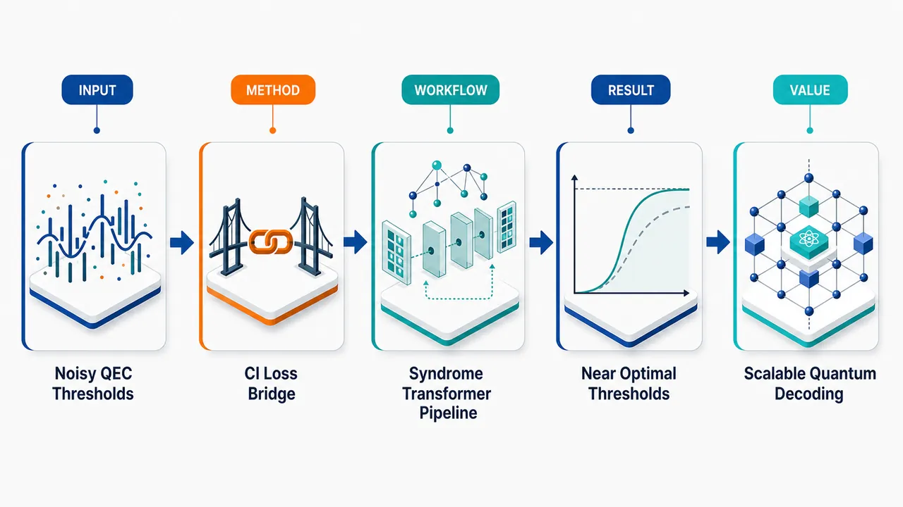
研究问题量子纠错码在噪声超过阈值时会失去保护逻辑量子信息的能力；核心问题是如何用机器学习准确估计表面码的量子纠错阈值，并让神经网络解码器的训练损失对应明确的信息论极限，而不是仅作为经验优化指标。创新方法将相干信息 CI 与神经网络解码器的二元交叉熵损失直接建立理论连接，证明 CI 是追踪噪声信道中逻辑算符时可达到损失的尖锐下界；同时构建基于最大似然解码思想的 Transformer 解码器，学习 syndrome 到逻辑陪集后验概率的映射，并提出基于置信度过滤的软后选择机制。工作流程输入表面码在 code capacity、phenomenological、circuit-level 三类噪声模型下产生的 syndrome 数据；Transformer 编码空间或时空 syndrome 模式；网络输出逻辑算符或逻辑陪集的概率与置信度；用二元交叉熵训练并由其估计相干信息；进一步从 CI 曲线得到阈值估计，并用高置信输出执行解码或软后选择。关键结果Transformer 能准确预测相干信息，并给出接近已知理论极限的表面码阈值估计；作为解码器时，其逻辑错误率显著低于经典最小权完美匹配 MWPM 解码器；基于 MLD 陪集的软后选择在降低逻辑错误率的同时控制 abort probability，并被证明具有最优性。应用价值该研究把量子信息论极限、神经网络训练目标和实际量子纠错解码统一到同一框架中，使机器学习不仅能做黑箱解码，还能用于阈值诊断、相干信息估计和置信度驱动的可扩展后选择，为容错量子计算中的高性能解码器设计提供理论依据和数值工具。第一部分：核心概览
该研究把相干信息（coherent information, CI）与神经网络解码器训练中的二元交叉熵损失（binary cross-entropy loss）直接连接起来，证明 CI 构成追踪噪声信道中逻辑算符的解码器可达到损失的尖锐下界。基于最大似然解码（maximum likelihood decoding, MLD）思想构建的Transformer 神经网络可估计表面码在三类噪声模型下的 CI，并给出接近已知理论极限的阈值估计。作为解码器时，该模型在逻辑错误率上显著优于最小权完美匹配（MWPM）。此外，研究提出基于置信度过滤的软后选择（soft post-selection）方案，并证明基于 MLD 陪集的后选择策略具有最优性，为机器学习辅助量子纠错阈值估计和可扩展后选择提供了新的理论—数值框架。
---
第二部分：结构化快速回顾
《Machine Learning Optimal Quantum Error Correction Thresholds》（None，）
背景
量子计算机易受噪声影响，量子纠错（QEC）是保持逻辑信息的核心机制。QEC 码在超过特定噪声阈值后保护能力失效，这些阈值代表量子信息可靠传输的根本限制。相干信息（CI）可作为信息论指标，用于刻画噪声量子信道中逻辑信息的最大可靠传输率。
方法
建立 CI 与神经网络解码器训练中 binary cross-entropy loss 的直接关系；证明 CI 是追踪逻辑算符的解码器可实现损失的尖锐下界。构建基于 maximum likelihood decoding 的 Transformer-based neural network model，用于估计 CI，并在表面码（surface code）上测试三类噪声模型：code capacity noise、phenomenological noise、circuit-level noise。
结果
网络能够准确预测 CI，并给出与已知理论极限高度接近的阈值估计。作为解码器时，相比 minimum weight perfect matching decoder，Transformer 解码器在逻辑错误率（logical error rate）上表现显著更优。
讨论
CI 与交叉熵损失之间的联系把信息论极限和可训练机器学习目标统一起来，使神经网络训练损失具有明确的物理含义。基于 MLD 陪集的后选择策略不仅可降低逻辑错误率，还能以置信度方式处理两个独立逻辑算符的不确定性。
局限
所给材料未包含完整实验表格、模型超参数、训练集规模、具体阈值数值、统计误差、置信区间、P 值、消融实验或计算资源消耗。无法核验“accurately predicts”“closely match”“significantly outperforms”等表述对应的具体数值强度。
结论
Transformer 架构可作为 QEC 阈值估计、CI 学习和高性能解码的有效工具。MLD-based soft post-selection 获得理论最优性证明，并给出数值可扩展性的初步证据。
---
第三部分：逐章节冷凝解析
Abstract
Noise thresholds define fundamental QEC limits
量子纠错阈值被定位为 QEC 码保护逻辑信息能力的根本边界。噪声强度超过阈值后，QEC 码性能崩溃，不能继续可靠保存量子逻辑信息。摘要明确指出，量子计算机仍对噪声敏感，QEC 对维持计算中的逻辑信息不可或缺：*"As quantum computers remain susceptible to noise, QEC is essential for preserving logical information during computations."* 阈值的根本性体现在：*"the performance of QEC codes breaks down beyond certain noise thresholds, revealing fundamental limits on their ability to protect quantum information."*
可提取的具体信息：
- 研究对象：quantum error correction codes。
- 核心问题：噪声超过阈值后 QEC 失效。
- 阈值意义：保护量子信息能力的 fundamental limits。
- 未给出具体阈值数值、码距、噪声概率范围或有限尺寸标度参数。
Coherent information serves as an information-theoretic threshold diagnostic
相干信息（coherent information, CI）被用作刻画噪声量子信道可传输逻辑信息能力的信息论量。其功能并非单纯作为经验指标，而是与量子信道的可靠传输率相关：*"These limits can be characterized using information-theoretic measures such as the coherent information, which quantifies the maximum rate at which logical information can be reliably transmitted through a noisy quantum channel."*
可提取的具体信息：
- CI 的理论角色：information-theoretic measure。
- CI 的物理含义：量化逻辑信息经噪声信道可靠传输的最大速率。
- 与 QEC 阈值的关系：用于刻画 QEC 失效边界。
- 未给出 CI 的数学定义、归一化方式、有限尺寸估计方法或误差条。
Binary cross-entropy loss is directly connected to coherent information
研究的核心理论贡献是建立 CI 与神经网络训练中 binary cross-entropy loss 的直接关系。该关系使机器学习损失函数不再只是优化代理目标，而具有信息论下界意义：*"we establish a direct connection between the CI and the binary cross-entropy loss used when training neural network decoders."*
更强的表述是，CI 对追踪逻辑算符的解码器可达到损失构成尖锐下界（sharp lower bound）：*"Specifically, we show that the CI constitutes a sharp lower bound on the achievable loss for decoders that track logical operators across noisy channels."*
可提取的具体信息：
- 连接对象：coherent information 与 binary cross-entropy loss。
- 解码器类型：追踪噪声信道中 logical operators 的神经网络解码器。
- 理论命题：CI 是 achievable loss 的 sharp lower bound。
- “sharp” 意味着该下界不仅有效，而且在最优情形下可达到。
- 未给出证明细节、定理编号、假设条件、损失函数显式形式或 CI—loss 公式。
Transformer-based neural network implements maximum-likelihood-inspired decoding
方法上构建了一个基于 maximum likelihood decoding（MLD） 的 Transformer 神经网络模型。该模型被用于估计 CI，并可作为实际解码器：*"To this end, we develop a transformer-based neural network model based on maximum likelihood decoding."* 训练目标是估计 CI：*"We train this network to estimate the CI"*。
可提取的具体信息：
- 模型类型：transformer-based neural network model。
- 解码原则：基于 maximum likelihood decoding。
- 训练目标：估计 coherent information。
- 任务场景：量子纠错中的神经网络解码。
- 未给出 Transformer 层数、注意力头数、嵌入维度、参数量、优化器、学习率、batch size、训练步数或数据生成规模。
Surface code evaluation covers three progressively realistic noise models
实验对象是 surface code，噪声模型覆盖三类常见 QEC 场景：code capacity、phenomenological、circuit-level noise。摘要给出：*"evaluate its performance on the surface code under three noise models: code capacity, phenomenological, and circuit-level noise."*
可提取的具体信息：
- 量子纠错码：surface code。
- 噪声模型数量：3 类。
- 噪声模型名称：
- code capacity noise：通常只考虑数据量子比特错误，假设 syndrome 测量完美。
- phenomenological noise：同时考虑数据错误与 syndrome 测量错误，但不完全展开门级电路。
- circuit-level noise：最贴近实际硬件，考虑纠错电路中门、测量、制备、空闲等噪声来源。
- 未给出各噪声模型的具体错误通道，如 depolarizing、X/Z biased、erasure、measurement flip probability 等。
- 未给出 surface code 距离、边界类型、round 数、logical operator 定义或 syndrome 表示方式。
Threshold estimates closely match known theoretical limits
实验结果显示，网络对 CI 的预测准确，并产生接近已知理论极限的阈值估计：*"Our results demonstrate that the network accurately predicts CI and yields threshold estimates that closely match known theoretical limits."*
可提取的具体信息：
- 输出量一：CI prediction。
- 输出量二：threshold estimates。
- 性能评价：准确预测 CI；阈值接近已知理论极限。
- 关键科学价值：把机器学习估计与理论阈值基准对齐。
- 未给出具体阈值，例如 code capacity surface code 常见阈值约 10.9% 一类的数值是否被复现无法由所给材料确认。
- 未给出“closely match”的误差幅度、置信区间或有限尺寸缩放结果。
Transformer decoder outperforms MWPM in logical error rate
作为解码器时，该 Transformer 网络相比经典基线 minimum weight perfect matching（MWPM）decoder 在 logical error rate 上显著更优：*"When used as a decoder, the network significantly outperforms the minimum weight perfect matching decoder in terms of logical error rate."*
可提取的具体信息：
- 对照基线：minimum weight perfect matching decoder。
- 性能指标：logical error rate。
- 结论强度：significantly outperforms。
- 未给出 MWPM 的实现版本、权重设定、噪声匹配假设、逻辑错误率曲线、提升倍数、码距依赖或统计显著性检验。
- “significantly” 在摘要中更可能表示性能差距显著，而非统计学 P 值意义；所给材料未包含 P 值。
Soft post-selection treats logical-operator uncertainty independently
提出新的 soft post-selection 方案，核心机制是独立处理两个逻辑算符的不确定性，并基于网络输出置信度进行过滤：*"We also introduce a novel soft post-selection scheme that independently treats uncertainty in both logical operators and relies on confidence-based filtering of the network's output."*
可提取的具体信息：
- 新方案：soft post-selection scheme。
- 后选择依据：网络输出的 confidence。
- 处理对象：两个 logical operators 的不确定性。
- 关键区别：独立处理每个逻辑算符的不确定性，而不是用单一硬阈值整体接受/拒绝。
- 未给出置信度定义、过滤阈值、abort probability 计算公式、不同阈值下的 trade-off 曲线。
MLD-coset-based post-selection is proven optimal
后选择策略的理论贡献在于证明基于 MLD cosets 的后选择最优：*"We prove that such post-selection strategies, based on the MLD cosets, are optimal."* 这里的 coset 指在稳定子码中，不同物理错误可共享相同 syndrome，但按逻辑作用分成不同等价类；MLD 的目标不是找最可能的单个物理错误，而是找最可能的逻辑陪集。
可提取的具体信息：
- 最优性对象：post-selection strategies。
- 最优性基础：MLD cosets。
- 作用目标：通过选择高置信输出降低 logical error rate。
- 未给出最优性定义，例如固定 abort probability 下最小 logical error rate，或固定 logical error rate 下最小 abort probability。
- 未给出定理条件，如是否假设精确后验概率、独立同分布噪声、完美 syndrome 采样等。
Scalability is demonstrated through logical error rate and abort probability
数值结果声称后选择方案在 logical error rate 与 abort probability 两个指标上具有可扩展性：*"and demonstrate their scalability in terms of both logical error rate and abort probability."*
可提取的具体信息：
- 可扩展性指标一：logical error rate。
- 可扩展性指标二：abort probability。
- 物理含义：后选择不能只降低错误率而导致接受率趋零；理想方案需要在码距增大时同时保持合理拒绝概率和错误率抑制。
- 未给出码距序列、abort probability 数值、scaling exponent、threshold under post-selection 或 asymptotic 形式。
Transformer architectures are positioned as powerful QEC tools
结论性定位是，Transformer 架构可成为 QEC 中强有力工具，并首次提供支持 MLD-based post-selection 最优性和可扩展性的数值证据：*"These findings establish transformer-based architectures as powerful tools for QEC and provide the first numerical evidence supporting the optimality and scalability of MLD-based post-selection."*
可提取的具体信息：
- 方法学定位：transformer-based architectures 是 QEC 的 powerful tools。
- 证据类型：first numerical evidence。
- 支持对象：optimality and scalability of MLD-based post-selection。
- 学术地位：把神经网络解码、信息论阈值估计、MLD 后选择三条线索整合。
- 未给出与其他神经网络架构如 CNN、RNN、GNN、MLP、union-find neural decoder 的系统比较。
---
Metadata
Bibliographic identity
论文题名为 Machine Learning Optimal Quantum Error Correction Thresholds，arXiv 编号为 2606.22194，学科分类为 Quantum Physics (quant-ph)，同时关联 Disordered Systems and Neural Networks (cond-mat.dis-nn)。元数据给出：*"arXiv:2606.22194 (quant-ph)"*，并列出：*"Subjects: Quantum Physics (quant-ph) ; Disordered Systems and Neural Networks (cond-mat.dis-nn)"*。
具体信息：
- arXiv ID：2606.22194。
- 主分类：quant-ph。
- 交叉分类：cond-mat.dis-nn。
- DOI：https://doi.org/10.48550/arXiv.2606.22194。
- DOI 状态：*"arXiv-issued DOI via DataCite (pending registration)"*。
- 提交日期：*"Submitted on 20 Jun 2026"*。
- 版本记录：*"[v1] Sat, 20 Jun 2026 19:04:49 UTC"*。
- PDF 文件大小：3,409 KB。
Authorship
署名作者为 Dominik Seip, Luis Colmenarez, Markus Schmitt, Markus Müller。元数据列出：*"Authors: Dominik Seip , Luis Colmenarez , Markus Schmitt , Markus Müller"*。
具体信息：
- 作者数量：4。
- 第一作者：Dominik Seip。
- 共同作者：Luis Colmenarez、Markus Schmitt、Markus Müller。
- 所给材料未包含作者单位、通讯作者信息、基金支持或利益冲突声明。
---
第四部分：深度理解与语言支持
1. 术语解析
Coherent information
Coherent information 是量子信息论中的信道能力相关量，常用于衡量量子信息通过噪声信道后仍能保留多少可恢复的量子相干性。摘要中的定义是：*"quantifies the maximum rate at which logical information can be reliably transmitted through a noisy quantum channel."*
语境中的微妙点：
- 它不是普通经典互信息。
- 它关注的是量子逻辑信息的可靠传输。
- 在 QEC 阈值问题中，它可作为失效边界的理论诊断量。
- 与神经网络 loss 连接后，CI 获得了机器学习可估计的形式。
Binary cross-entropy loss
Binary cross-entropy loss 是二分类概率预测常用损失函数。这里用于训练神经网络解码器判断逻辑算符或逻辑错误类别。关键句为：*"the binary cross-entropy loss used when training neural network decoders."*
语境中的微妙点：
- 它不是随意选择的经验损失，而是与 CI 有严格联系。
- 若网络输出可解释为后验概率，交叉熵损失可衡量预测分布与真实逻辑错误分布之间的差异。
- “CI constitutes a sharp lower bound” 表明最优网络也不能低于该信息论极限。
Sharp lower bound
Sharp lower bound 指一个下界不仅数学上成立，而且在某些最优条件下可达到。摘要表述为：*"the CI constitutes a sharp lower bound on the achievable loss."*
语境中的微妙点：
- “lower bound” 只说明不能低于。
- “sharp” 进一步说明该界不是松散估计，而是紧的。
- 对机器学习解码器而言，训练 loss 接近该下界意味着模型接近信息论最优。
Maximum likelihood decoding
Maximum likelihood decoding（MLD） 指根据观测到的 syndrome，选择最可能导致该 syndrome 的错误类别或逻辑陪集。摘要中模型为：*"a transformer-based neural network model based on maximum likelihood decoding."*
语境中的微妙点：
- 在稳定子码中，真正重要的通常不是最可能的单个物理错误，而是最可能的逻辑等价类 / coset。
- MLD 在理论上性能优越，但精确求解通常计算复杂。
- Transformer 在这里可被看作学习近似 MLD 后验分布的模型。
Soft post-selection
Soft post-selection 是基于置信度的接受/拒绝机制。摘要表述为：*"confidence-based filtering of the network's output."*
语境中的微妙点：
- “soft” 表示不是简单地只在某类 syndrome 上硬性拒绝，而是依据概率置信度连续调节。
- 同时独立处理两个逻辑算符的不确定性：*"independently treats uncertainty in both logical operators"*。
- 目标是在降低 logical error rate 的同时控制 abort probability。
---
2. 疑难查证
CI 为什么能成为神经网络 loss 的下界？
高层逻辑如下：
- QEC 解码器看到 syndrome 后，需要判断实际发生了哪个逻辑错误或逻辑算符翻转。
- 若神经网络输出的是逻辑错误的概率分布，那么 binary cross-entropy loss 衡量预测概率与真实逻辑标签之间的平均不匹配。
- 理想情况下，最优预测应等于真实后验概率。
- 即使预测完全最优，仍然存在 syndrome 本身无法区分的逻辑不确定性。
- 这种不可消除的不确定性正是信息论限制，与 coherent information 相关。
- 因此 loss 不可能无限下降；CI 给出可达到损失的下界。
直观比喻：syndrome 是带噪声的线索，解码器是侦探。即使侦探推理完美，如果线索本身无法区分两个案件版本，剩余不确定性仍无法消除。CI 描述的正是这种根本信息限制。
MLD coset 为什么比最可能单个错误更重要？
稳定子码中，许多不同物理错误对编码态的影响等价。两个错误如果只相差一个稳定子，它们对逻辑信息没有区别。解码真正需要判断的是错误属于哪个逻辑陪集（logical coset），而不是哪一个微观错误链。
例子：
- 错误 A 和错误 B 物理位置不同；
- 但 A 与 B 相差一个稳定子；
- 它们导致相同 syndrome，且对逻辑态作用相同；
- 解码器选择 A 或 B 都可成功。
因此，MLD 的最佳形式是选择后验概率最大的逻辑陪集，而不是概率最大的单个错误。这也是摘要中 *"based on the MLD cosets"* 的关键含义。
后选择为什么能降低逻辑错误率但引入 abort probability？
后选择的思想是：当网络很不确定时，拒绝接受该轮结果。这样保留下来的样本更可靠，逻辑错误率下降。但代价是部分结果被丢弃，形成 abort probability。
核心权衡：
- 置信度阈值低：接受更多样本，abort probability 低，但 logical error rate 较高。
- 置信度阈值高：只接受高置信样本，logical error rate 低，但 abort probability 高。
- 最优后选择要求在固定拒绝率下尽量降低错误率，或在固定错误率下尽量减少拒绝率。
摘要中的创新点在于，后选择不是只看单个整体置信度，而是分别处理两个逻辑算符的不确定性。
---
第五部分：创新评估与关联
1. 创新性判断
将信息论极限与机器学习训练目标直接统一
过去几年 QEC 机器学习解码研究常见目标是降低 logical error rate、逼近 MWPM 或 MLD、提高泛化到大码距的能力。该研究的新颖性在于把 coherent information 与 binary cross-entropy loss 建立直接理论联系，并给出 sharp lower bound。这使训练损失本身获得物理意义：loss 不只是优化指标，而是可反映 QEC 信道的信息论极限。
解决的问题：
- 传统神经网络解码器的 loss 与 QEC 阈值之间关系不够清晰。
- CI 估计通常偏理论或数值物理，未必与神经网络训练目标直接相连。
- 该工作把二者连接，使神经网络可用于阈值估计和信息论诊断。
用 Transformer 估计 QEC 阈值与 CI
Transformer 在序列建模和长程依赖学习上有优势，适合处理 surface code syndrome 中的空间—时间相关结构。该研究使用 transformer-based neural network model 估计 CI，并在 code capacity、phenomenological、circuit-level 三类噪声模型中测试，覆盖从理想化到更硬件现实的场景。
解决的问题：
- MWPM 对某些噪声模型或相关错误不一定最优。
- 精确 MLD 难以扩展。
- 传统有限尺寸阈值估计需要大量蒙特卡洛和专门分析。
- Transformer 可学习复杂 syndrome—logical posterior 映射，并输出可解释为置信度的概率。
超过 MWPM 的逻辑错误率表现
摘要明确声称：*"the network significantly outperforms the minimum weight perfect matching decoder in terms of logical error rate."* 这代表机器学习解码器不仅用于估计 CI，还能作为实际解码器获得优于经典基线的性能。
新颖性取决于完整实验细节，但从摘要可见其贡献在于：
- 同一框架兼具 CI 估计、阈值预测、解码三种功能。
- 性能对比对象是 QEC 中最经典的 MWPM decoder。
- 覆盖三类噪声模型，而不仅是单一理想化噪声。
提出并证明 MLD-based soft post-selection 的最优性
后选择在量子实验和纠错中常见，但基于 MLD cosets 的后选择最优性证明及其可扩展数值证据构成重要创新。摘要称：*"provide the first numerical evidence supporting the optimality and scalability of MLD-based post-selection."*
解决的问题：
- 过去后选择策略可能依赖启发式置信度阈值。
- 对于固定接受率或拒绝率下何种样本应被拒绝，理论最优性不总是明确。
- 该研究把后选择与 MLD 陪集后验概率联系起来，给出最优准则。
- 同时关注 logical error rate 与 abort probability，避免只追求错误率而牺牲可用率。
相对于近年相关工作的可能定位
近 2–5 年相关方向包括：
- 基于 CNN/GNN/RNN/Transformer 的神经网络 QEC 解码；
- differentiable decoder 或 neural belief propagation；
- 使用机器学习估计 threshold 或 logical error rate；
- surface code 在 circuit-level noise 下的高性能解码；
- 后选择、flagging、erasure-aware 或 confidence-aware decoding。
该研究的区别在于：
- 理论连接更强：CI 与 binary cross-entropy loss 直接相连。
- 目标不止解码：同时估计 CI、阈值、逻辑错误率。
- 架构现代化：使用 Transformer 学习 syndrome 中复杂依赖。
- 后选择有最优性声明：基于 MLD cosets，而非纯启发式置信度。
- 噪声模型覆盖更广：从 code capacity 到 circuit-level。
受限于所给材料，无法确认其相对于具体论文的定量领先幅度、是否首次使用 Transformer 估计 CI、是否在所有三类噪声模型均超过当代最强解码器，以及是否与 BP-OSD、union-find、tensor-network decoder、exact MLD、小样本神经解码器进行了完整公平比较。
-
04
📊 含图深析
📖 展开分析 + 配图
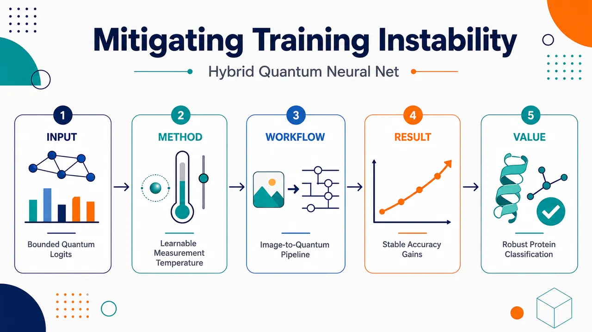
研究问题混合量子神经网络把 Pauli 测量期望值直接当作 softmax 分类 logits，但这些输出被物理限制在 [-1,1]，像被压扁的刻度尺一样无法拉开类别间距；在多分类中导致最高置信度受限、loss 无法继续下降、梯度信号变弱，形成“测量诱导的 logit 收缩”训练不稳定问题。创新方法提出可学习的 Quantum Measurement Temperature（QMT）：在量子测量输出进入 softmax 前执行 z/T 缩放，用一个训练期温度旋钮把被 Pauli 测量压缩的 logit 空间重新“解压”。Aha 点是：不改变量子线路、ansatz、深度或测量算符，只在“量子测量—经典损失”接口处恢复 loss 敏感度；理论上 logit 梯度放大 1/T，参数梯度方差放大 1/T²。工作流程输入荧光显微蛋白图像或视觉基准图像 → 经典卷积层提取并压缩特征 → 特征通过 Pauli 旋转门角度编码到量子线路 → 多层可变量子线路进行数据重上传、单比特旋转和 CZ 纠缠 → 每个类别读取一个 Pauli 期望值作为原始 logit → QMT 将 z 缩放为 z/T → softmax 交叉熵计算损失 → 经典参数、量子参数和温度 T 端到端联合优化 → 输出更稳定、更高置信度的分类结果。关键结果QMT 显著扩大有效 logit 范围、降低 loss、提高分类 margin、增强梯度范数和梯度方差，并减少随机初始化导致的训练崩溃。在蛋白 ONE microscopy 数据中，CF=2、QB=6、QL=4 的 Hybrid QNN 测试准确率从 81.44 ± 5.76% 提升到 91.98 ± 0.44%；CF=4、QB=6、QL=4 时从 83.29 ± 6.68% 提升到 94.54 ± 0.61%。Fashion MNIST 与 Overhead MNIST 上也获得约 6%–11% 的准确率提升，梯度方差提升超过 10 倍，跨 trial 波动降至 1% 以下。应用价值该研究为量子神经网络分类器提供一种简单、架构无关、可解释的训练稳定化组件，尤其适合高噪声、低 margin 的真实生物显微图像分类。它把 QNN 可训练性改进从“修改量子线路内部结构”扩展到“修复量子测量与经典损失函数接口”，可作为未来混合量子—经典视觉模型的通用 logit 解压模块。第一部分：核心概览 (Overview)
混合量子神经网络在多分类中常将 Pauli 测量期望值直接作为 softmax 交叉熵 logits，但这些 logits 被物理约束在 [-1, 1]，导致类别置信度、最小可达损失与梯度强度受到结构性限制。该研究将这一训练退化机制命名为 measurement-induced logit contraction，并提出可学习标量 Quantum Measurement Temperature, QMT，在测量输出进入 softmax 前执行缩放。理论上，QMT 将 logit 梯度放大 1/T、参数梯度方差放大 1/T²；实验上，在蛋白荧光显微图像、Fashion MNIST、Overhead MNIST 中显著提升准确率与稳定性。其领域地位在于把 QNN 可训练性问题从“量子线路内部”扩展到“量子测量—经典损失接口”。
---
第二部分：结构化快速回顾
《Mitigating Measurement-Induced Training Instability in Hybrid Quantum Neural Networks for Protein Classification》（None，）
背景
混合量子神经网络常用于分类任务，但训练稳定性不足。既有研究主要关注 barren plateaus、线路表达性、纠缠增长、噪声等线路内部梯度消失机制；该研究聚焦一个此前缺乏系统刻画的瓶颈：有界量子测量输出与 softmax cross-entropy 对 logit 尺度敏感性之间的不匹配。
方法
提出 Quantum Measurement Temperature (QMT)：对量子测量输出 (zₖ) 进行 (tilde zₖ₌zₖ/T) 缩放，(T>0) 为可学习参数，与经典卷积层、量子线路参数联合优化。QMT 不改变量子 ansatz、线路深度或测量算符。
结果
在 12,000 张蛋白 ONE microscopy 图像、Fashion MNIST 前 6 类、Overhead MNIST 上，QMT 扩大有效 logit 范围、降低 loss、提高 margin、增强梯度范数与梯度方差，并显著减少随机初始化导致的训练崩溃。蛋白数据中 CF=2、QB=6、QL=4 配置下，Hybrid QNN 测试准确率由 81.44 ± 5.76% 提升至 91.98 ± 0.44%。
讨论
QMT 的作用不是后验校准，而是训练期间改变 loss 对量子测量输出的敏感性。对经典神经网络影响较小，因为经典 logits 本身无界；对混合 QNN 影响显著，因为 Pauli 测量自然压缩 logit 动态范围。
局限
实验基于 statevector-based simulations in PennyLane，未验证真实量子硬件噪声、有限 shots、读出误差与硬件漂移下的稳定性。理论分析主要针对 Pauli 测量、有界 observables、softmax cross-entropy 多分类设置。
结论
QMT 是一种简单、架构无关、理论可解释的 QNN 可训练性增强机制，直接修复量子测量输出有界性造成的 loss 敏感性不足，使混合 QNN 更适合实际图像分类任务，尤其是高噪声、低 margin 的荧光显微蛋白识别。
---
第三部分：逐章节冷凝解析 (Section-by-Section Condensing)
Abstract
- Measurement-induced logit contraction is identified as a new trainability bottleneck
混合 QNN classifiers 的 logits 来自量子测量算符期望值，标准 Pauli measurements 将输出限制在 [-1, 1]，直接进入 softmax cross-entropy 后，loss 对 logit 差异的敏感性不足，导致梯度被压制。核心机制被命名为 measurement-induced logit contraction，即 *"a previously uncharacterized source of trainability degradation in hybrid QNNs"*。
- QMT rescales bounded quantum measurements during training
Quantum Measurement Temperature (QMT) 是可学习缩放参数，在 loss 前对测量输出进行重标定，不是训练后的校准。关键差异在于 *"Unlike post-hoc calibration, QMT acts during training and compensates for the physically imposed bounds on quantum measurement outputs"*。
- Gradient strength and variance are explicitly targeted
QMT 的机制不是改变线路结构，而是提升 loss 对 logits 的响应性，从而提高梯度强度与方差。摘要明确指出该缩放 *"increases gradient magnitude and variance, thereby improving loss sensitivity"*。
- Architecture-agnostic design preserves quantum circuit structure
QMT 不修改 quantum ansatz、circuit depth 或 measurement operators，因此可插入多种混合 QNN。原文表述为 *"architecture-agnostic and does not modify the quantum ansatz, circuit depth, or measurement operators"*。
- Empirical validation spans biological microscopy and benchmark vision data
实验覆盖 fluorescence microscopy images 与 six-class Fashion MNIST，显示 QMT 改善 logit separation、gradient strength、training stability 与 accuracy。证据表述为 *"consistently enhances logit separation, strengthens gradients, stabilizes training across random initializations, and improves classification accuracy"*。
---
1 Introduction
- Hybrid QNNs remain closer to feasibility demonstrations than robust learners
混合量子神经网络结合 variational quantum circuits 与经典优化，已有分类应用多为可行性展示而非稳定学习系统。原文定位为 *"explored for classification tasks mainly as feasibility studies rather than as robust learning systems"*。
- Training instability remains a central obstacle
尽管线路设计、数据编码与优化策略已有进展，training instability 仍阻碍 QNN 实际应用。关键判断为 *"training instability remains a major obstacle in utilizing quantum neural networks (QNNs) for practical applications"*。
- Prior trainability theory emphasizes circuit-level mechanisms
既有机制包括随机初始化、global cost、高表达性、纠缠增长导致的 barren plateaus 与梯度集中。相关表述为 *"random parameter initialization, global cost functions, high expressivity, and entanglement growth can lead to vanishing gradients through concentration of measure"*。
- Loss-interface distortion is the missing mechanism
既有研究默认线路参数梯度可通过经典 loss 正常传播，但混合 QNN 不满足这一假设。原文指出过去分析 *"implicitly assumes that the gradients computed for the model parameters are propagated properly through the classical loss function without introducing distortion"*。
- Bounded Pauli measurements mismatch unbounded classical logits
经典深度学习 logits 可无界扩展，而 QNN 的 Pauli 测量期望值固定在 [-1, 1]。这一结构差异被描述为 *"predictions are derived from the expectation values of quantum measurement operators, which are intrinsically bounded to the interval [-1,1] for standard Pauli measurements"*。
- Softmax cross-entropy depends critically on logit scale
softmax probability assignment 与 cross-entropy loss 假设 logits 可动态拉开；当 logits 被压缩，loss 对输入差异的敏感性下降。关键句为 *"This creates a structural mismatch between bounded quantum measurement outputs and a loss function whose sensitivity depends critically on logit magnitude"*。
- Failure mode differs from barren plateaus
梯度抑制来自 post-measurement processing，不同于线路内部的 circuit-level gradient collapse。证据为 *"The resulting failure mode is distinct from previously studied circuit level gradient collapse mechanisms"*。
- Four main contributions define the paper’s scope
贡献包括识别 measurement-induced logit compression、提出 QMT、给出 temperature scaling 的理论刻画、在显微图像与视觉基准中验证。原文列出 *"Identification of a measurement-induced logit compression mechanism"*, *"Introduction of Quantum Measurement Temperature"*, *"Analytical characterization"*, 以及 *"Experimental validation microscopy image classification and standard vision benchmarks"*。
---
2 Related Work and Motivation
- Gradient magnitude is the central quantity in VQA/QNN trainability
可训练性主要由优化期间的梯度强度决定。原文直接表述为 *"The trainability of variational quantum algorithms (VQAs) and quantum neural networks (QNNs) is determined primarily by the strengths of gradients during optimization"*。
- Barren plateaus establish exponential gradient variance decay
McClean 等提出的 barren plateau 显示，高表达性或随机 ansätze 中，梯度方差随 qubit 数指数衰减。原文为 *"the variance of gradients decays exponentially with the number of qubits"*。
- Known vanishing-gradient sources are diverse but circuit-centered
已知因素包括 global versus local cost functions、过度表达性、纠缠增长、噪声驱动梯度崩溃、线路生成元代数结构。原文列举 *"dependence on global versus local cost functions"*, *"excessive expressivity"*, *"entanglement growth"*, *"noise driven gradient collapse"*, and *"algebraic structure of the circuit generators"*。
- Data and encoding also influence trainability
新近研究显示 data structure、encoding schemes、task-dependent observables 也影响 QNN 梯度统计。原文为 *"data structure, encoding schemes, and task-dependent observables also influence QNN trainability"*。
- Architecture modifications aim to preserve non-vanishing gradients
QCNN、tensor-network-inspired designs、problem-dependent ansätze、quantum kernels 等方法主要通过控制 locality、expressivity 或参数几何维持梯度。原文描述为 *"aim to maintain non vanishing gradients by controlling locality, expressivity, or parameterization geometry"*。
- Classification QNNs produce a vector of bounded expectation values
分类场景下，模型输出不是单一 scalar observable，而是作为 logits 的 expectation-value vector。关键区分为 *"the model output is not a scalar observable but a vector of expectation values that serve as logits for a classical loss function"*。
- Bounded logits have no classical analogue
标准 Pauli measurements 将每个 logit 限制在狭窄区间，这是经典网络没有的物理边界。原文指出 *"each logit is confined to a narrow interval, introducing a physically imposed bound that has no analogue in classical neural networks"*。
- Prior temperature scaling does not address this optimization instability
经典 ML 中 temperature scaling 主要用于训练后校准；量子 ML 中 temperature 多用于 contrastive/self-supervised similarity sharpness 或 Boltzmann/Gibbs 热分布。核心空白为 *"None of these approaches addresses the optimization instability arising from the interaction between bounded quantum measurement outputs and softmax-based cross entropy loss sensitivity"*。
- QMT targets the measurement-loss interface directly
QMT 是测量与经典 loss 接口处的可学习 scalar，作用于 bounded measurements and loss sensitivity。原文为 *"QMT directly targets the interaction between bounded measurements and loss sensitivity, restoring gradient strength without modifying the quantum circuit itself"*。
---
2.1 Hybrid QNNs on expansion microscopy protein data
- Real fluorescence microscopy remains underexplored for hybrid QNNs
与标准数据集不同，真实荧光显微蛋白图像在混合量子—经典模型中的适用性仍不充分。原文为 *"their applicability to real fluorescence microscopy imaging remains largely unexplored"*。
- Protein microscopy data are a stress test for bounded-logit effects
荧光显微蛋白数据具有 strong intensity fluctuations、photon shot noise、variable point spread functions 与结构异质性，会放大量子 logit 有界带来的梯度抑制。原文描述为 *"strong intensity fluctuations, photon shot noise, variable point spread functions, and the intrinsic heterogeneity of protein structures"*。
- ONE microscopy provides nanometer-level protein images
采用 ONE microscopy，结合 expansion microscopy 与 fluorescence fluctuation analysis，将光学显微镜分辨率提高到纳米尺度。关键证据为 *"ONE microscopy increases the resolution of optical microscopes to the nanometer level, thereby enabling the analysis of protein shapes"*。
- Protein heterogeneity creates a natural classification challenge
图像包含不同构象和位置的蛋白，因而适合作为方法压力测试。原文说明 *"The images obtained are heterogeneous, indicating proteins in different conformations and positions and therefore serve as an optimal test case"*。
- QMT is positioned as a solution to trainability collapse in microscopy QNNs
蛋白图像中 measurement-induced logit contraction 严重限制梯度强度，QMT 提供解决路径。原文写作 *"measurement-induced logit contraction severely restrict gradient strength on such data, and QMT scaling provides solution to the traianability collapse"*。
---
3 Method
- Hybrid architecture combines classical feature extraction and quantum classification
方法采用经典卷积特征提取器加 variational quantum classifier，将图像映射到与量子输入维度兼容的固定维特征。原文为 *"combines classical convolutional feature extraction with a variational quantum classifier"*。
- Quantum measurement outputs serve as multi-class logits
VQC 的测量输出被用作多分类 logits。关键句为 *"The measurement outputs of the VQC acts as logits for multi class classification"*。
- Joint optimization includes classical, quantum, and temperature parameters
经典参数、量子线路参数与 QMT 温度参数共同通过梯度优化。原文为 *"Classical parameters, quantum circuit parameters, and temperature introduced in this work are optimized jointly"*。
---
3.1 Hybrid classical-quantum neural network
- Classical frontend compresses images into quantum-compatible features
输入图像经 classical component 映射为固定维度特征，满足量子输入维度限制。原文为 *"maps input images to a fixed dimensional feature vector compatible with the quantum input dimension"*。
- Pauli rotation gates encode classical features
特征通过 Pauli rotation gates 进入 VQC，属于角度编码范式。原文为 *"These features are encoded as data using Pauli rotation gates in a variational quantum circuit"*。
- End-to-end gradient training is used
全模型使用梯度优化完成训练。原文为 *"The full model is trained using gradient based optimization"*。
---
3.2 Variational quantum circuit
- Parameterized quantum circuit acts on (n) qubits
量子分类器由作用于 (n) qubits 的参数化量子线路构成。原文为 *"The quantum classifier consists of a parameterized quantum circuit acting on n qubits"*。
- Angle encoding with data reuploading increases data injection capacity
输入特征通过 angle encoding with data reuploading 嵌入，即多层反复注入数据。原文为 *"Input features are embedded using angle encoding with data reuploading"*。
- Each variational layer combines data rotations, trainable rotations, and entanglement
每层包含 data-dependent rotations、trainable single-qubit rotations 与 qubit 间纠缠。原文为 *"Each variational layer comprises data-dependent rotations, trainable single-qubit rotations, and entanglement among qubits"*。
- Neighbor entanglement uses alternating connectivity
相邻 qubits 通过 two-qubit entangling gates 连接，采用 alternating connectivity scheme。原文为 *"Entanglement is applied between neighboring qubits using two-qubit entangling gates in an alternating connectivity scheme"*。
- One expectation value per class
输出为 Pauli observables 期望值向量，每个类别一个 scalar。原文为 *"producing one scalar output per class"*。
---
3.3 Measurement-induced logit contraction
- Each class logit is a bounded expectation value
类别 (k) 的 logit (zₖ) 是对应 measurement operator 的 expectation value，因此满足 (zₖᵢₙ[-1,1])。原文为 *"Since these outputs are expectation values of bounded observables, each logit satisfies"* (zₖᵢₙ[-1,1])。
- Logit contraction is caused solely by measurement bounds
measurement-induced logit contraction 指有界测量输出导致有效 logit 范围缩小。原文定义为 *"The reduction of the effective range of logits due to bounded measurement outputs is termed measurement-induced logit contraction"*。
- The mechanism is independent of circuit depth and initialization
该机制与线路深度、纠缠结构、参数初始化无关。原文强调 *"It arises solely from the quantum measurement process and is independent of circuit depth, entanglement structure, or parameter initialization"*。
- Softmax cross-entropy enters a low-sensitivity regime
类别 logit separation 被限制，使交叉熵对输入变化不敏感。原文为 *"placing the cross entropy loss in a low-sensitivity regime with respect to its inputs"*。
---
3.4 Quantum Measurement Temperature (QMT)
- QMT rescales measurement logits before softmax
给定 (z=(z₁,dots,z_K))，QMT 执行 (tilde zₖ₌zₖ/T)，其中 (T>0) 为可学习参数。原文公式为 *"(tildezₖ=fraczₖT), where (T>0) is a learnable parameter"*。
- Rescaled logits enter softmax and cross-entropy
(tilde z) 被送入 softmax，再用于交叉熵。原文为 *"The rescaled logits (tildez) are passed to the softmax function and then used to compute associated cross entropy loss"*。
- Temperature is trained jointly with all other parameters
QMT 与 classical weights、quantum circuit parameters 联合优化。原文为 *"All model parameters, including classical weights, quantum circuit parameters, and the temperature parameter T, are optimized jointly"*。
---
4 Mathematical Analysis
- VQC logits are expectation values of measurement operators
数学分析从 (zᵢ₍ₓ,θ)=łangleψ(x,θ)|Oᵢ|ψ(x,θ)ångle) 出发，这些输出作为 logits。原文为 *"VQC use the measurement operator’s output ... as logits"*。
- Pauli observables impose intrinsic bounds
标准 Pauli observables 的特征值在 [-1, 1]，使 logits 内在有界。原文为 *"standard Pauli observables have eigenvalues in [-1,1], these logits are intrinsically bounded in this range"*。
- Analysis covers confidence, loss, gradient sensitivity, and trainability
该部分系统分析有界 logits 对 gradient sensitivity、loss dynamics、trainability 的影响，以及 QMT 如何改变这些性质。原文为 *"analyze the consequences of bounded logits on gradient sensitivity, loss dynamics, trainability"*。
---
4.1 Measurement Induced Logit Compression
- Bounded logits limit maximum achievable confidence
若 (|z|ᵢₙftyłe a)，正确类 softmax 概率满足
[
p_c(z)łe frace^ae^a+(K-1)e⁻a.
]
原文定理为 *"the maximum probability for the correct class ... is given by"* 该上界。
- Bounded logits impose a nonzero minimum loss
交叉熵最小值满足
[
mathcal L(z,y)ge łog(1+(K-1)e⁻²a).
]
原文表述为 *"the minimum loss is given by"* 该下界。
- Six-class Pauli case cannot exceed about 60% confidence
对 K=6、a=1，最大正确类概率
[
p_cmax=frace²e²⁺⁵approx frac7.3912.39approx0.597.
]
原文解释为 *"the model cannot be more than 60% confident on a 6 class classification task if logits are restricted to the interval [-1,1]"*。
- Six-class Pauli case cannot reduce loss below about 0.516
对 K=6、a=1，
[
mathcal Lₘᵢₙge łog(1+5e⁻²)approx łog(1.675)approx0.516.
]
原文结论为 *"the loss cannot fall below approximately 0.52 with standard measurements for this configuration"*。
- Increasing class count worsens the structural bound
类别数越多，最小 loss 越高，最大正确类概率越低。原文为 *"the more we increase the number of classes, the minimum loss value will be larger and the maximum probability for the correct class will be lesser"*。
---
4.2 QMT for Logit Range Expansion
- Temperature decompression makes unreachable confidence reachable
QMT 通过 (z/T) 扩大有效 logit 范围，使原本不可达的 confidence 与 loss values 可达。原文为 *"allows the model to reach confidence levels and loss values that were previously unattainable under bounded measurements"*。
- Maximum confidence under QMT depends on (a/T)
正确类最大概率变为
[
p_cmax(a,T)=fracea/Tea/T+(K-1)e⁻a/T.
]
原文命名为 *"Proposition 1 (Temperature Decompression)"*。
- Minimum loss under QMT decays with smaller (T)
最小 loss 变为
[
mathcal Lₘᵢₙ(a,T)=łog(1+(K-1)e⁻²a/T).
]
当 (T→0)，(p_cmax→1)、(mathcal Lₘᵢₙ→0)。原文为 *"as (T→ 0), (p_cmax(a,T)→ 1) and (Lₘᵢₙ(a,T)→ 0)"*。
- QMT is geometric decompression, not circuit modification
QMT 对 logit 空间执行几何解压缩，不改变量子线路。原文为 *"QMT therefore acts as a geometric decompression operator, expanding logit variation without modifying the quantum circuit itself"*。
---
4.3 Gradient Sensitivity with Respect to Logits
- Logit gradients are amplified by (1/T)
对 (tilde z=z/T)，
[
fracpartialmathcal L⁽T⁾partial zᵢ=frac1T(pᵢ⁽T⁾-yᵢ₎.
]
原文称 *"if the learned temperature T becomes a fractional value, it strengthens logit level gradients by 1/T factor"*。
- Fractional temperature creates more informative gradients
当 (T<1)，更宽有效 logit 范围让优化器获得更强信号。原文为 *"the broader logit range gives the optimizer more informative gradients to work with"*。
---
4.4 Gradient Variance Improvement
- Gradient variance across examples measures useful directional information
梯度方差反映优化器获得的样本依赖方向信息。原文解释为 *"it determines how much useful directional information the optimizer receives during training"*。
- Too-small variance causes stagnation
方差太小时，参数更新难以区分，学习停滞。原文为 *"When the variance is too small, parameter updates become indistinguishable, and learning stagnates"*。
- QMT scales parameter gradients through the quantum Jacobian
若 (J(θ)=partial z/partialθ)，则
[
nabla_θmathcal L⁽T⁾=frac1TJ(θ)^→p(p⁽T⁾-y).
]
原文为 *"For QMT scaling"* 后给出该公式。
- Parameter gradient variance scales by (1/T²)
样本维度上的方差满足
[
Var[nabla_θmathcal L⁽T⁾]=frac1T²Var[J(θ)^→p(p⁽T⁾-y)].
]
原文总结为 *"QMT improves parameter gradient variance by (1/T²) and recovers from training collapse caused by bounded measurement outputs"*。
---
4.5 Temperature and Loss Geometry
- Loss Lipschitz constant scales as (L/T)
若 (mathcal L) 对 logits 是 (L)-Lipschitz，(mathcal L⁽T⁾(z)=mathcal L(z/T))，则
[
|mathcal L⁽T⁾(z)-mathcal L⁽T⁾(tilde z)|łefracLT|z-tilde z|.
]
原文为 *"the Lipschitz constant of the loss scales inversely with temperature"*。
- Small logit differences become more consequential
有界量子测量产生的小 logit 差异会被 QMT 放大，使 loss 更敏感。原文解释为 *"the loss becomes (1/T) times more responsive to the small logit differences created by bounded quantum measurements"*。
---
4.6 Uniform Bound on Quantum Parameter Gradients
- QMT amplifies gradients in a controlled rather than unbounded way
虽然 QMT 放大梯度，但理论上存在 uniform bound。原文为 *"QMT provides controlled amplification rather than unbounded gradients"*。
- Single-parameter Pauli rotations yield a (K/T) bound
对 (zᵢ₍θ)in[-1,1])、single parameter Pauli rotations 与 bounded observables，有
[
łeft|fracpartialmathcal L⁽T⁾partialθₖi̊ght|łefracKT.
]
原文定理为 *"Theorem 2 (Uniform Parameter Gradient Bound)"*。
- Parameter-shift rule bounds Jacobian entries
Pauli-generated rotations 满足 parameter shift rule，shifted expectation 仍在 [-1,1]，故 (|partial zᵢ/partialθₖ|łe1)。原文为 *"Pauli generated rotations satisfy the parameter shift rule and because each shifted expectation remains in [-1,1], the Jacobian entries also follow"*。
- Gradient magnitude and data-dependent variability are both strengthened
结合 (1/T²) 方差缩放，QMT 同时增强梯度大小与样本依赖变化。原文结论为 *"temperature directly strengthens both the magnitude and the data dependent variability of gradients, improving trainability in Hybrid QNNs"*。
---
5 Experiments
- Model architecture uses two convolutional layers, one fully connected layer, and QNN
实验模型由 two classical convolutional layers、a fully connected layer 与可配置 qubits/layers 的 QNN 组成。原文为 *"consisting of two classical convolutional layers, a fully connected layer, and a quantum neural network with a configurable number of qubits and quantum layers"*。
- Representative configuration uses 4 filters, 6 qubits, 4 quantum layers
示例 pipeline 中 classical frontend 使用 four convolutional filters，QNN 使用 six qubits and four quantum layers。原文为 *"the classical frontend uses four convolutional filters, and the quantum network consists of six qubits and four quantum layers"*。
- Quantum gates include (R_Y), (R_X), and CZ entanglement
数据编码使用 (R_Y) rotations，随后为参数化 (R_X) rotations 与 CZ gates。原文为 *"data-encoding gates implemented using (R_Y) rotations, followed by parameterized (R_X) rotations and entangling CZ gates"*。
- Measurements match class count
测量算符数量等于输出类别数；四分类任务使用四条测量 wires。原文为 *"The number of measurement operators is set equal to the number of output classes"*。
- Training protocol is fixed and repeated over five trials
训练 30 epochs，batch size 64，Adam optimizer，learning rate (5×10⁻³)，cosine annealing，(ηₘᵢₙ=1×10⁻⁵)，结果报告 mean ± standard deviation over 5 independent trials。原文为 *"Models are trained for 30 epochs with batch size 64 using the Adam optimizer (learning rate (5×10⁻³)) and a cosine annealing learning-rate schedule with (ηₘᵢₙ=1×10⁻⁵)"*。
- All experiments are statevector simulations in PennyLane
结果来自无 shot noise 的 statevector simulation。原文为 *"All experiments were conducted using statevector-based simulations in PennyLane"*。
---
5.1 Datasets
- Protein dataset uses a 70/30 train-test split
所有实验采用 70%/30% train-test split。原文为 *"A 70%/30% train-test split is used in all experiments"*。
- Protein data contain four classes and 12,000 images
蛋白数据包括 GABA_A、GFP、Otoferlin 三类蛋白结构与一个 background noise 类，共 4 classes；每类 3000 images，总计 12,000 images。原文为 *"Each class contains 3000 images, and a total of 12,000 images"*。
- ONE microscopy enables nanometer-resolution optical imaging
数据由 one-step nanoscale expansion microscopy 获取，可用光学显微镜实现纳米级蛋白结构成像。原文为 *"enables nanometer resolution imaging of protein structures using an optical microscope"*。
- Benchmark datasets test generality
标准视觉基准包括 Fashion MNIST 与 Overhead MNIST 的前六类。原文为 *"the first six classes of Fashion MNIST and Overhead MNIST are utilized as multi class classification benchmarks"*。
---
6 Results
- Result sequence follows six empirical questions
结果依次分析 logit/measurement output range、loss reduction、classification margin、training collapse/stability、parameter gradient strength、architecture/dataset generality。原文列出 *"(i) Observation of Logits or Measurement output range, (ii) Reduction in the Loss value, (iii) Improvement in classification margin..."*。
---
6.1 Observation of Logits or Measurement output range
- Hybrid QNN raw logits are visibly capped by the Pauli measurement interval
固定 (T=1) 时，hybrid QNN 输出满足 (zₖᵢₙ[-1,1])，raw logit range 最大为 2。原文为 *"constraining the raw logit range to at most 2"*。
- Classical models freely explore larger logit ranges
经典模型无该测量约束，训练中可形成更大 logit range。原文为 *"Classical models do not exhibit this constraint and therefore explore a larger logit range during optimization"*。
- QMT expands effective logit space only where needed
对 hybrid QNN，(tilde zₖ₌zₖ/T) 扩大有效 logit range；对 classical models，learned (T) 对优化影响较小且数据依赖。原文为 *"When QMT is enabled, the rescaled logits ... expand the effective logit range for hybrid QNNs"*。
- Test-set behavior mirrors training-set behavior
训练后测试集上也观察到 classical logits 超过 2，而 fixed-T hybrid QNN 仍受限，learned QMT 才扩展。原文为 *"Classical models produce logit ranges well beyond 2, whereas hybrid QNNs remain confined under fixed (T=1) and expand their effective logit range only when QMT is learned"*。
---
6.2 Reduction in the Loss value
- Temperature barely changes classical optimization trajectories
经典模型 fixed (T=1) 与 learned (T) 的 loss curves 近乎相同。原文为 *"the loss trajectories under fixed (T=1) and learned (T) are nearly identical across epochs"*。
- QMT accelerates and deepens QNN loss convergence
hybrid QNN 在 learned QMT 下收敛更快、最终 loss 更低。原文为 *"hybrid QNNs with learned QMT converge faster and reach a significantly lower loss than their fixed-T counterparts"*。
- Empirical loss reduction matches Theorem 1 and Proposition 1
观测与理论中 logit range expansion 提升 loss sensitivity 的预测一致。原文为 *"consistent with the theoretical analysis in Theorem 1 and Proposition 1"*。
---
6.3 Improvement in classification margin
- Classification margin measures true-class separation from strongest competitor
测试集 margin 定义为
[
m(x)=z_y(x)-maxₖₙₑ yzₖ₍ₓ₎.
]
原文为 *"classification margin (m(x)=z_y(x)-maxₖ≠ yzₖ₍ₓ₎)"*。
- QMT shifts QNN margins toward positive values
hybrid QNN learned QMT 后 margin 分布向更大正值移动，表示 true class 与最强竞争类更分离。原文为 *"learned QMT shifts the margin distribution toward larger positive values"*。
- Margin gains are much larger in QNNs than classical models
classical models 平均 margin 约增加 1–1.5×，hybrid QNN 约增加 8–10×。原文为 *"approximately 1–1.5×"*, and *"approximately 8–10× relative to fixed (T=1)"*。
- Improved margin indicates higher prediction confidence
QMT 不仅改善优化，还提升 hybrid QNN prediction confidence。原文为 *"QMT improves not only optimization but also the confidence of hybrid QNN predictions"*。
---
6.4 Overcoming Training Collapses and establishing Training Stability
- QMT directly addresses training collapse and instability
learned QMT 的主要优势是克服 training collapse 并稳定训练。原文为 *"QMT can overcome the training collapses and can provide stability in training along with improvement in the performance"*。
- Five random initializations reveal instability without QMT
实验使用相同模型与数据集，跨 five trials 比较训练准确率。原文为 *"using the same model and the same dataset across five trials"*。
- Classical models are largely insensitive to temperature mode
classical fixed-T 与 learned-T 运行行为类似。原文为 *"fixed-T and learned-T runs exhibit similar behavior across trials"*。
- Hybrid QNNs without QMT show trial-to-trial variability and collapse
fixed (T=1) 的 hybrid QNN 出现显著随机种子依赖与偶发崩溃。原文为 *"show pronounced trial-to-trial variability and occasional training collapse"*。
- Learned QMT consistently improves accuracy and reduces variability
learned QMT 在两个数据集、所有 trials 中实现更高 training accuracy 与更低 variability。原文为 *"consistently achieve higher training accuracy with substantially reduced variability across all trials and both datasets"*。
---
6.5 Improvement in parameter gradient strengths
- Gradient diagnostics connect QMT to optimization mechanism
实验跟踪 gradient norm 与 gradient variance，验证 Proposition 2 的梯度增强效应。原文为 *"We observe how gradient norm and gradient variance of the parameters behave during the course of training"*。
- Mean gradient norm and variance are computed explicitly
mean gradient norm 通过 parameters 与 mini-batches 上的 per-parameter gradient norms 平均计算；gradient variance 使用每个 epoch 第一个 batch 的所有 training examples。原文为 *"The mean gradient norm is computed by averaging per parameter gradient norms across parameters and mini-batches"*。
- QMT increases gradient variance by more than 10×
Fig. 7 显示使用 QMT 后 gradient variance 提升超过 10 times。原文为 *"gradient variance gets improved by more than 10 times while using QMT scaling"*。
- No-QMT gradient variance is approximately (10⁻²)
未使用 QMT 时，gradient variance 过低，约为 (10⁻²)。原文为 *"the gradient variance is too low ((approx10⁻²)) when no QMT is used"*。
- Gradient restoration aligns with convergence and stability gains
梯度方差恢复与 Fig. 4 loss convergence、Fig. 6 training stability 一致。原文为 *"This restoration of gradient variance aligns with the improved convergence and training stability"*。
---
6.6 Impact while varying QNN architecture and Datasets
- QMT improves accuracy and stability across architecture configurations
Fig. 8 改变 convolutional filters (CF)、qubits (QB)、quantum layers (QL)，在蛋白分类中 learned temperature 始终优于 fixed (T=1)。原文为 *"Across all configurations, hybrid QNNs with learned temperature consistently outperform their fixed (T=1) counterparts in both accuracy and stability"*。
- Without QMT, standard deviation exceeds 5.8% in several settings
fixed-T hybrid QNN 在多个配置下试验间波动显著，test accuracy 标准差超过 5.8%。原文为 *"the standard deviation of test accuracy exceeding 5.8% in several settings"*。
- With QMT, variability drops below 1%
learned QMT 将跨 trials variability 降至 below 1%，同时提高 mean accuracy。原文为 *"learning QMT reduces this variability to below 1% across trials while simultaneously improving mean accuracy"*。
- Scaling circuit size does not solve instability without QMT
更深更宽线路如 10 qubits and 8 quantum layers 仍不能自动消除训练不稳定。原文为 *"architectural scaling does not resolve training instability without QMT"*。
- Classical capacity cannot compensate for missing QMT
仅增加 classical filters 不能替代 QMT；带 QMT 且 2 convolutional filters 的 hybrid QNN 高于无 QMT 且 4 filters 的同类模型。原文为 *"increasing classical capacity does not compensate for the lack of temperature scaling"*。
- Protein dataset, CF=2 QB=6 QL=4: large Hybrid QNN gain
蛋白数据中 hybrid QNN 从 81.44 ± 5.76% test accuracy 提升到 91.98 ± 0.44%；训练准确率从 81.78 ± 5.76% 提升到 92.06 ± 0.74%；learned (Tₘₑₐₙ=0.05)，(Tₛₜd=0.011)。表中对应 *"CF = 2, QB = 6, and QL = 4"*，并总结 *"Learned QMT improves mean test accuracy by 10.5%"*。
- Protein dataset, CF=4 QB=6 QL=4: QMT closes and surpasses classical baseline
hybrid QNN fixed (T=1) 为 83.29 ± 6.68% test accuracy；learned QMT 为 94.54 ± 0.61%，接近并略高于 classical learned temperature 的 94.06 ± 0.37%。表中参数量分别为 hybrid 650/651、classical 654/655，保证规模可比。
- Fashion MNIST, CF=2 QB=6 QL=4: test accuracy improves from 83.88% to 90.18%
hybrid QNN fixed (T=1)：83.88 ± 0.50%；learned QMT：90.18 ± 0.53%，learned (Tₘₑₐₙ=0.052)，(Tₛₜd=0.009)。原文总结 *"Learned QMT improves mean test accuracy by ... 6.3%"*。
- Fashion MNIST, CF=4 QB=6 QL=4: instability sharply reduced
hybrid QNN fixed (T=1) test accuracy 84.32 ± 4.53%；learned QMT 92.53 ± 0.56%，训练准确率 84.95 ± 4.48% 到 93.41 ± 0.32%，显示准确率和稳定性同时改善。
- Hard protein samples benefit most from QMT
Fig. 9 显示低 margin 样本中，baseline 因 logits 近似退化而误分类，QMT 通过增强有效 logit separation 修复。原文为 *"QMT gains occur predominantly on low-margin samples, where baseline predictions are uncertain due to nearly degenerate logits"*。
- Overhead MNIST generalization is strong
Overhead MNIST 中，CF=2 QB=6 QL=4 test accuracy 从 79.21 ± 3.73% 提升至 90.53 ± 0.48%；CF=4 QB=8 QL=4 从 82.94 ± 4.07% 到 92.69 ± 0.22%。原文总结为 *"these effects of QMT also generalize to standard benchmarks, including Overhead MNIST and Fashion MNIST"*。
- Benchmark configurations show >8.5% test accuracy improvement
在 CF=4、QB=8、QL=4 配置下，learned QMT 相比 fixed (T=1) 测试准确率提升超过 8.5%。原文为 *"configurations with CF = 4, QB = 8, and QL = 4 achieve more than 8.5% improvement in test accuracy"*。
---
第四部分：深度理解与语言支持 (Understanding & Nuance)
1. 术语解析
Measurement-induced logit contraction
字面意思是“测量诱导的 logit 收缩”。在经典神经网络中，logits 可以变成很大正数或负数，从而让 softmax 输出高置信度；在 Pauli 测量 QNN 中，每个 logit 是期望值，天然限制在 [-1, 1]。这种压缩不是优化器没学好，也不是线路表达性不足，而是测量物理本身造成的输出范围限制。
微妙点：contraction 强调“动态范围变窄”，不是简单的“数值小”。即使线路能产生不同类别的输出，softmax 看到的差距仍可能太小。
Measurement-loss interface
指量子测量输出与经典损失函数之间的接口。QNN 先产生 expectation values，再把这些数交给 softmax cross-entropy。很多 QNN 可训练性研究关注量子线路内部梯度，但这里的问题发生在“输出进入 loss 的地方”。
微妙点：这不是 quantum-only 问题，也不是 classical-only 问题，而是 hybrid interface problem。
Temperature decompression
传统 temperature scaling 常用于校准置信度；这里的 temperature decompression 指通过除以较小的 (T)，把 ([-1,1]) 内的测量输出映射到更宽的有效 logit 范围。例如 (T=0.05) 时，(z=1) 变成 (20)，softmax 可以产生极高置信度。
微妙点：这里 (T) 越小，softmax 越“尖锐”；不是物理温度升高，而是数学缩放。
Gradient variance
梯度方差衡量不同样本或参数方向上的梯度差异。梯度范数大但所有样本方向类似，学习仍可能受限；梯度方差太小则优化器难以获得区分类别的方向信息。
微妙点：论文强调 QMT 不只放大梯度 magnitude，还增加 data-dependent variability，即样本相关的方向信息。
Post-hoc calibration
训练完成后对模型输出置信度做校准，常见于经典深度学习。QMT 与此不同：它在训练中参与梯度传播，改变优化过程。
微妙点：同样是 temperature scaling，但 post-hoc calibration 目标是校准概率，QMT 目标是恢复可训练性。
---
2. 疑难查证
为什么 bounded logits 会让 softmax cross-entropy 不敏感？
softmax 的本质是比较 logits 的相对差距。若正确类 logit 比其他类大很多，softmax 会给正确类接近 1 的概率，交叉熵接近 0。但在 Pauli 测量 QNN 中，每个 logit 最多为 1，最小为 -1，因此任意两个类别最大差距只有 2。
六分类时最理想情况是正确类为 1，其他五类为 -1：
[
p_c=frace¹e¹⁺⁵e⁻¹=frace²e²⁺⁵approx0.597.
]
也就是说，即使模型“做到物理允许的最好”，softmax 仍只能给正确类约 59.7% 概率。交叉熵也无法低于约 0.516。优化器会持续看到一个无法突破的 loss 下界，梯度信号又受限，训练就容易停滞或不稳定。
为什么 QMT 能提升梯度？
QMT 执行：
[
tilde z=fraczT.
]
若 (T=0.05)，原本 ([-1,1]) 的 logits 变成有效范围 ([-20,20])。softmax 能区分很小的原始测量差异，交叉熵对 (z) 的导数变成：
[
fracpartialmathcal L⁽T⁾partial zᵢ=frac1T(pᵢ⁽T⁾-yᵢ₎.
]
因此 (T<1) 时，梯度直接被放大。参数梯度还通过 quantum Jacobian 传播：
[
nabla_θmathcal L⁽T⁾=frac1TJ(θ)^→p(p⁽T⁾-y),
]
所以方差层面出现 (1/T²) 缩放。
为什么这不同于 barren plateau？
Barren plateau 是量子线路内部的问题：参数化线路在高维 Hilbert 空间中因 concentration of measure 导致梯度均值接近 0、方差指数衰减。QMT 处理的是另一个位置的问题：即使线路内部还能产生可用梯度，测量输出进入 softmax loss 后，因为 logits 被限制在 ([-1,1])，loss 对这些差异不够敏感，导致最终回传梯度被压小。
简化地说：
- barren plateau：线路内部已经没有梯度；
- measurement-induced logit contraction：线路输出有差异，但 classical loss 不够“放大”这些差异；
- QMT：在测量—loss 接口恢复尺度。
---
第五部分：创新评估与关联 (Synthesis & Novelty)
1. 创新性判断
新颖性一：把 QNN 可训练性瓶颈定位到 measurement-loss interface
过去 2–5 年 QNN trainability 研究主要围绕 barren plateaus、local/global cost、ansatz expressivity、entanglement、noise、data encoding、dataset-induced barren plateaus、quantum kernels 等。该研究的新增视角是：即使线路内部梯度不完全消失，Pauli 测量输出作为 softmax logits 的物理有界性也会造成训练退化。
这一点解决了前人较少处理的问题：QNN 分类器输出不是无界 logits，而是 bounded expectation values；经典交叉熵默认 logits 可以自由扩展。该结构性错配在多分类中尤其严重。
新颖性二：QMT 是训练期机制，不是后验温度校准
经典 temperature scaling 常用于 post-hoc calibration，目的是让预测概率更符合真实置信度。QMT 在训练时参与反向传播，目标是恢复 loss sensitivity 与 gradient strength。两者形式相似，但优化目标和作用阶段不同。
新颖性三：理论上量化了 bounded measurements 对 confidence 和 loss 的硬上限
Theorem 1 直接给出 bounded logits 下的最大正确类概率与最小 loss：
[
p_cmaxłefrace^ae^a+(K-1)e⁻a,quad
mathcal Lₘᵢₙgełog(1+(K-1)e⁻²a).
]
这使“QNN logits 太小”从经验观察变成可计算结构限制。六分类 (a=1) 时最大置信度约 0.597、最小 loss 约 0.516，非常直观地说明多分类 Pauli-readout QNN 的先天瓶颈。
新颖性四：给出 QMT 对梯度强度和方差的解析缩放关系
QMT 对 logit 梯度产生 (1/T) 放大，对参数梯度方差产生 (1/T²) 放大，同时有 (|partialmathcal L⁽T⁾/partialθₖ|łe K/T) 的 uniform bound。这使 QMT 不只是 heuristic trick，而是具有可解释的优化几何机制。
新颖性五：真实荧光显微蛋白分类作为 QNN 应用压力测试
多数混合 QNN 图像分类实验集中在 MNIST 类简化数据。该研究使用 ONE microscopy 蛋白图像，包含 GABA_A、GFP、Otoferlin、background noise 四类，每类 3000 张，总计 12,000 张。数据具有 photon shot noise、intensity fluctuation、point spread function variability、protein structural heterogeneity，更接近实际生物成像场景。
解决的前人未解决问题
- 前人问题：QNN 多分类中 softmax logits 有界，但 cross-entropy 默认无界 logits。
解决方式：QMT 在 loss 前恢复有效 logit 动态范围。
- 前人问题：QNN 训练崩溃常被归因于 barren plateau，但部分崩溃来自测量输出尺度不足。
解决方式：定义并验证 measurement-induced logit contraction。
- 前人问题：提升 QNN 可训练性常需改变 ansatz、降低 expressivity、调整 cost locality 或增加结构先验。
解决方式：QMT 不改线路结构，仅增加一个可学习 scalar。
- 前人问题：真实显微蛋白数据上的混合 QNN 可用性不清楚。
解决方式：在 nanometer-resolution fluorescence microscopy protein classification 中展示明显性能提升与稳定性增强。
-
05
📊 含图深析
📖 展开分析 + 配图
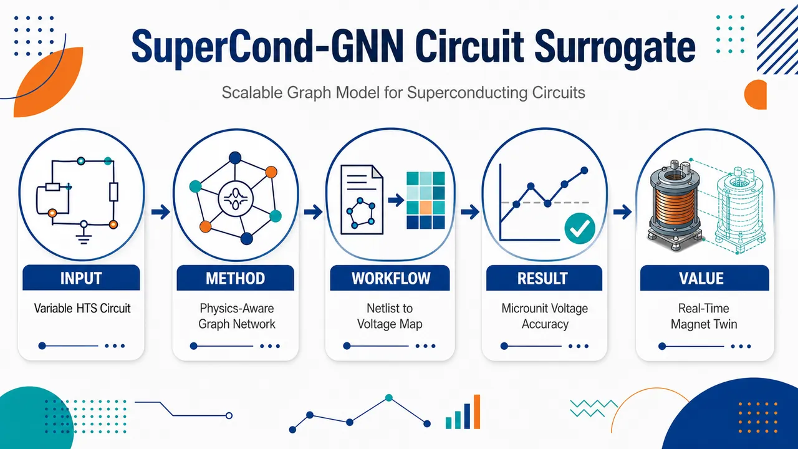
研究问题如何让高温超导 REBCO 磁体/电缆的集总电路仿真从“固定拓扑、固定输入维度”的慢速 SPICE 求解，转变为可处理不同 tape 数、segment 数和元件数量的快速节点电压预测；核心难点是 HTS 电路拓扑会变、超导元件强非线性、电流共享路径复杂，而实时数字孪生和 quench 保护需要空间分辨的节点电压分布。创新方法将 HTS tape stack 电路直接画成图：电路节点变为图节点，电阻、超导段、电流源变为图边；用 MeshGraphNet 的 encoder–message passing–decoder 结构预测每个非接地节点电压。Aha 点在于模型固定的是“节点/边特征维度”，不是电路规模，因此同一个 GNN 可跨 1×1 到 10×6 拓扑工作；同时加入 Kirchhoff 电流定律物理正则，并用 supernode merging 把低压差超导边视为理想短路，避免病态的超导 I–V 反演。工作流程输入 tape stack 架构参数：tapes 数、每根 tape 的 segments 数、接触/端接电阻、Ic、n 值和输入电流；生成 SPICE .cir 网表并进行 DC 电流扫描，得到 ngspice 节点电压真值；同时把网表解析为图，节点携带 ground/input 标记、度、到 ground/input 的距离，边携带元件类别、R、Ic、n、Iin、Iin/Ic；SC-GNN 编码节点与边特征，多层消息传递聚合邻域电路信息，解码输出非 ground 节点电压；训练时用尺度归一化 MSE，并可叠加 KCL 电流守恒损失。关键结果在覆盖 1–10 tapes、1–6 segments per tape 的完整拓扑空间上训练和测试：训练集 2000 个电路，验证集 200 个电路，测试集 3000 个电路。最优基线模型使用 6 层 message passing、64 hidden dimension、Adam、batch size 64、学习率 6.89×10⁻⁴，850 epochs 后收敛，训练耗时 3.58 小时。测试平均 RMSE 为 0.04 ± 0.01 μV，平均 MAPE 为 4.30 ± 0.66%；中大型拓扑误差稳定在约 0.03–0.04 μV 和 3–5% MAPE，误差不随电路规模单调变差，说明图消息传递具有良好扩展性。应用价值为 HTS 磁体数字孪生、实时监测、quench 早期保护、电流重分配分析和设计空间探索提供可扩展仿真替代方案；相比 SPICE，更适合大量参数扫描和快速推理；相比固定输入神经网络，更能适应不同电缆/磁体拓扑。节点级电压分布还能进一步转化为局部运行状态、异常热点和电流共享路径的可视化诊断信息。第一部分：核心概览 (Overview)
SuperCond-GNN 将 HTS 磁体/电缆的集总电路仿真转化为图神经网络节点电压预测问题，突破传统前馈 surrogate 只能处理固定维度、固定拓扑输入的限制。模型以 REBCO tape stack 为概念验证对象，在 1×1 到 10×6 拓扑空间内实现 0.04 μV RMSE、4.30% MAPE，并引入 Kirchhoff’s current law 物理正则化以提升物理一致性。其领域地位在于：面向 HTS 数字孪生、实时保护、设计空间探索，提供了比 SPICE 更可扩展、比固定架构 ML surrogate 更拓扑无关的仿真替代框架。
---
第二部分：结构化快速回顾
《SuperCond-GNN: Scalable Graph Neural Network Surrogate for Superconducting Circuit Simulations》（None，）
背景
HTS REBCO 磁体具备高场、聚变、加速器应用潜力，但因慢正常区传播、高热容量、电流共享复杂性，传统电压式 quench 检测通常滞后。SPICE 集总电路模型可准确模拟稳态与瞬态行为，但在电缆和整磁体尺度上计算复杂度迅速上升，难以用于实时数字孪生。
方法
SuperCond-GNN 将 tape stack 电路表示为 graph：电路节点对应图节点，电阻、超导元件、电流源对应边。节点特征包含 ground/input 标记、归一化度、到 ground/input 的归一化距离；边特征包含元件类别、R、Ic、n、输入电流、输入电流与 Ic 比值。模型采用 MeshGraphNet encoder–processor–decoder 架构，输出每个非 ground 节点的电压。
结果
基线模型在 2000 个训练电路、200 个验证电路、3000 个测试电路上评估，覆盖 1–10 tapes、1–6 segments per tape。最优模型使用 6 层 message passing、64 hidden dimension、Adam、batch size 64、learning rate 6.89×10⁻⁴，训练 850 epochs，耗时 3.58 h。测试平均 RMSE = 0.04 ± 0.01 μV，平均 MAPE = 4.30 ± 0.66%。
讨论
模型在中大型拓扑上误差稳定，说明 message passing 可随图规模扩展；误差未随电路规模单调恶化。低 tape 数拓扑，尤其 1×1，误差较高，可能源于小电路对参数扰动更敏感，且 message passing 可聚合邻域信息较少。
局限
概念验证仅覆盖 最多 10 tapes、最多 6 segments per tape 的稳态 tape stack 电路，训练参数来自指定均匀分布；物理约束训练仍处初步阶段，Stage 2 “currently ongoing”。超导元件 KCL 处理依赖 εSC = 0.01·Vc 的 supernode merging 阈值。
结论
图表示使 HTS 电路 surrogate 具备拓扑无关性和可扩展性；节点级电压预测为电流重分配、局部运行状态、quench 保护和实时数字孪生提供基础。相比固定输入维度神经网络，SC-GNN 更适合可变规模 superconducting circuit simulation。
---
第三部分：逐章节冷凝解析 (Section-by-Section Condensing)
Abstract
Topology-agnostic GNN surrogate for HTS voltage prediction
核心贡献是提出 SuperCond-GNN，用于预测 high-temperature superconducting magnets 中的节点电压分布。HTS 磁体被建模为 lumped-element equivalent circuits，再映射为图结构，使 message passing GNNs 能学习电路拓扑、材料参数和工作电流共同决定的电响应。摘要直接定义目标：*"This paper presents SuperCond-GNN, a graph neural network-based surrogate model for predicting the voltage distribution in high-temperature superconducting (HTS) magnets."*
Proof-of-concept scope and quantitative accuracy
概念验证范围为最多 10 tapes 的 tape stack，不同 circuit topologies 与 operating conditions 下训练和测试。监督数据来自 circuit simulations，核心指标为 mean MAPE = 4.3%。精度声明为：*"As a proof of concept, tape stacks of up to 10 tapes are considered across a range of circuit topologies and operating conditions."* 以及 *"The surrogate is trained on data generated from circuit simulations and achieves a mean MAPE of 4.3% within the prescribed design space."*
Fast inference for redistribution and local operation
模型输出的节点电压可进一步推断电流重分配与局部运行条件，面向大量电路配置的快速推理。摘要给出的应用定位是：*"The predicted nodal voltages enable fast and scalable inference of current redistribution and local operating conditions across a wide range of circuit configurations."*
Physics-informed and generalization assessment
模型评估不仅包括纯数据驱动预测，还包括 Kirchhoff’s current law regularization 的影响，以及对未见拓扑的 zero-shot inference 和 few-shot fine-tuning。摘要明确指出：*"The effect of incorporating physics-informed regularization via Kirchhoff’s current law is also evaluated, and generalizability to unseen topologies is assessed through zero-shot inference and few-shot fine-tuning."*
Extensibility beyond tape stacks
虽然实验对象是 tape stack circuits，图框架本身被设计为拓扑无关，可扩展到更复杂的 HTS cable 与 magnet configuration。应用包括 design space exploration、current sharing analysis、real-time magnet monitoring。摘要表述为：*"the graph-based framework is topology-agnostic and naturally extensible to more complex HTS cable and magnet configurations, offering a scalable alternative to conventional circuit solvers"*。
---
1 Introduction
HTS magnet protection remains difficult despite superior performance
REBCO-based HTS magnets 在 accelerator、fusion、high-field applications 中性能突出，但保护仍是核心挑战。原因包括慢正常区传播和高热容量削弱传统保护策略，电压检测往往只能在 quench 已经发生后识别异常。原文直接指出：*"High-temperature superconducting (HTS) magnets based on REBCO conductors offer unprecedented performance for accelerator, fusion, and high-field applications, but protecting them remains a major challenge."* 以及 *"voltage-based detection systems often identify a quench only after it has already occurred."*
Current sharing makes global voltage-current interpretation difficult
HTS cable 与 coil 中的电流共享受 termination resistance、contact resistance、conductor non-uniformity、local defects、magnet history、architecture-dependent redistribution pathways 共同影响。这些因素会延迟 quench onset，并使全磁体层面的 V-I 特性难以解释。关键句为：*"current sharing in cable and coil systems which is governed by a complex interplay of termination resistance, contact resistance, conductor non-uniformity, local defects, magnet history, and architecture-dependent redistribution pathways."* 以及 *"make global voltage-current characteristics exceedingly difficult to interpret at the global magnet level."*
Predictive protection requires real-time physics-capable digital twins
从 reactive protection 转向 predictive protection，需要更好的传感与能够实时捕捉磁体状态的模型，目标是提前预判 failure。该需求指向 AI-enabled, physics-informed digital twin。原文表述为：*"Transitioning from reactive to predictive protection requires both improved sensing and real-time models capable of capturing the magnet’s state to anticipate failure."* 以及 *"developing an AI-enabled, physics-informed digital twin for the diagnostics, protection, and control of HTS magnet systems."*
SPICE models are accurate but not scalable for real-time digital twins
Lumped-element circuit models 和 SPICE simulators 是当前理解 HTS 行为的标准工具，已用于 steady-state 和 transient regimes；在参数准确时可可靠预测真实器件行为。然而，扩展到 cable 和 full magnet 会显著增加 circuit complexity 和 simulation cost；参数扫描还需要 thousands of simulations。原文证据包括：*"Currently, lumped-element circuit models implemented in SPICE simulators are a standard tool for understanding and predicting these behaviors in both steady-state and transient regimes."* 以及 *"scaling these models from individual tapes to cables and full magnets drastically increases circuit complexity and simulation cost."*
GPU SPICE acceleration does not solve nonlinear superconducting circuits
GPU-accelerated CUSPICE 仅限于 linear circuit components，因此不足以准确表示 superconducting circuits。原文给出限制：*"GPU-accelerated implementations like CUSPICE are restricted to linear circuit components, making them insufficient for accurately representing superconducting circuits."*
Existing HTS ML work focuses more on quench signal forecasting than physics surrogates
ML surrogate 已广泛用于加速仿真与补充实验，但 HTS magnet 领域已有工作主要聚焦从实验传感器信号进行 quench detection forecasting，而非可部署于数字孪生的 true physics surrogate。原文对现状的判断为：*"In the context of HTS magnets, existing work has focused primarily on forecasting models for quench detection from experimental sensor signals."* 以及 *"relatively little work has addressed true physics surrogates capable of real-time deployment within a broader digital twin framework."*
Fixed-dimensional neural surrogates are design-specific
Xiao et al. 的 FEM surrogate 可预测 REBCO solenoids 中 current density distributions，但 conventional architectures，如 feedforward neural networks，需要固定维度输入，必须把整磁体或电路编码为预设大小向量。因此只能在训练拓扑和参数空间内插值。原文指出：*"conventional architectures such as feedforward neural networks employed in [19] operate on fixed-dimensional input spaces"*，并进一步强调：*"such surrogate models are inherently design-specific, trained for a fixed magnet topology and capable only of interpolating within the parameter space seen during training."*
Variable circuit dimensionality is fundamental, not cosmetic
从单根 REBCO tape 到两根 tape stack，输入维度会因新增 Ic、n、contact resistances Rc 而改变；高保真模拟还要求沿 tape 分段以捕捉局部 Ic 和 n 变化。Figure 1 展示 nₜ tapes、mₜ segments 的电路模型与变量数量增长。原文用单 tape 例子说明固定输入维度的失效：*"Extending this model to a stack of two tapes alters the required input dimensionality by introducing an entirely new set of Ic and n values, alongside contact resistances (Rc) that dictate current sharing between the tapes."* 以及 *"the total parameter space grows rapidly with the addition of tapes and segments."*
Arbitrary maximum size or separate models are impractical
传统神经网络若处理可变电路，要么人为设定最大电路规模来固定输入维度，要么为每种几何训练单独模型；二者都不可推广。删去参数以固定输入维度也不符合物理，因为节点电压取决于全局电路交互。原文结论明确：*"employing a conventional neural network would require either imposing an arbitrary maximum circuit size to fix the input dimensionality, or training a separate model for every distinct geometry."* 以及 *"omitting parameters to artificially enforce a fixed input size is physically unsound, as nodal voltages depend on the global interaction of all circuit elements."*
GNNs naturally handle arbitrary-size graph-structured circuits
GNNs 通过 permutation-invariant aggregation 处理任意大小图，只要求节点和边特征位于固定 feature space，而不要求节点数或边数固定。message passing 可学习组件间关系并进行 node、edge 或 graph-level 预测，因此适合作为 generalizable circuit surrogate。原文定义优势：*"GNNs can process graphs of arbitrary size without architectural modification"* 以及 *"making them a natural fit for a truly generalizable circuit surrogate."*
Relevant prior GNN circuit work supports node-level voltage prediction and few-shot transfer
Hakhamaneshi et al. 使用 deep graph convolutional network 预测 resistor-based 和 operational-amplifier circuits 的 DC nodal voltages，并展示了从小电路预训练到更大未见拓扑的 few-shot transfer 能力。原文表述：*"Hakhamaneshi et al. employed a deep graph convolutional network to predict DC nodal voltages in resistor-based and operational-amplifier circuits."* 以及 *"a model pretrained on smaller circuits could be successfully transferred to larger, unseen topologies through fine-tuning on a substantially reduced dataset."*
SC-GNN targets steady-state HTS cable and magnet behavior
SC-GNN 是基于 GNN 的 surrogate，用于预测以 lumped-element circuit models 表示的 HTS magnets and cables 的稳态行为。概念验证选择 REBCO tape stack cables，因为它们包含 practical HTS systems 的关键电流共享和非线性电阻行为。原文给出范围：*"This work presents SuperCond-GNN (SC-GNN), a graph neural network (GNN)-based surrogate model for predicting the steady-state behavior of HTS magnets and cables represented as lumped-element circuit models."* 以及 *"REBCO tape stack cables are considered, which capture the essential current-sharing and nonlinear resistive behavior characteristic of practical HTS systems."*
Nodal voltage is both simulation-native and protection-relevant
目标量是节点电压分布，它既是 circuit simulations 的自然输出，也是实验测量量；对 voltage-based quench detection 直接相关。原文说明：*"The target quantity of interest is the nodal voltage distribution, which is the natural output of circuit simulations as well as measurements."* 以及 *"Predicting these voltages is directly relevant to voltage-based quench detection systems."*
Four stated contributions
四项贡献为：图式 HTS tape stack circuit representation、KCL regularized physics-informed GNN、与 ngspice 的完整拓扑空间 benchmark、zero-shot/few-shot out-of-distribution generalizability assessment。原文列明：*"The key contributions of this work are: (i) a graph-based circuit representation for HTS tape stacks enabling topology-agnostic surrogate modeling, (ii) a physics-informed GNN trained with Kirchhoff’s current law (KCL) regularization, (iii) comprehensive benchmarking against ngspice across the full topology space, and (iv) an assessment of zero-shot and few-shot generalizability to out-of-distribution circuit configurations."*
---
2 Methodology
2.1 Electric-circuit model of tape stack cable
2D network model discretizes each REBCO tape into segments
电路模型采用 Martínez et al. 的 2D network model，用于 steady-state simulation of a tape stack cable。包含 nₜ 根 REBCO tapes，每根 tape 被分成 mₜ 个 segments，导体由串联的电流依赖电压源表示。原文说明：*"The circuit model employed in this work is the 2D network model developed by Martínez et al. for steady-state simulation of a tape stack cable consisting of nt REBCO tapes."* 以及 *"Each tape is divided into mt segments, such that the conductor is represented as a serial chain of current-dependent voltage sources."*
Superconducting voltage follows power-law I–V relation
每个超导元件的电压由 power law 给出：
[
Vᵢ,ⱼ(Iᵢ,ⱼ)=V_cłeft(fracIᵢ,ⱼI_cᵢ,ⱼi̊ght)ⁿᵢ,ⱼ
]
其中 i 是 tape index，j 是 segment index，Iᵢ,j 为元件电流，Icᵢ,j 为 critical current，nᵢ,j 为 n-value。原文为：*"governed by the power law relation describing the current-voltage characteristics of an HTS conductor"*，并定义：*"where i and j denote the tape and segment indices, respectively, Ii,j is the current flowing in that element, Ici,j is the critical current, and ni,j the n-value for that element."*
Criterion voltage derives from 1 μV/cm and 10 cm tape length
Vc 来自标准电场判据 1 μV/cm，假设每根 tape 总长 10 cm，并均分为 segments；所有 tapes 长度相同。原文为：*"The criterion voltage Vc is derived from the standard electric field criterion of 1 μV/cm, applied under the assumption that each tape has a total length of 10 cm divided into equal segments."* 以及 *"All tapes within the stack are assumed to be of equal length."*
DC ngspice simulation produces nodal voltages and V-I curves
仿真使用 ngspice DC analysis，无时间依赖；transport current 被 ramp 到目标值
[
Iₜₐᵣgₑₜ=0.8× nₜ I_c
]
该设置捕捉 stack transition，同时保证 nonlinear solver convergence。原文细节为：*"Circuits are simulated using DC analysis in ngspice, an open source SPICE simulator, with no time dependence."* 以及 *"The transport current is ramped to a target value, Itarget = 0.8 × ntIc, that captures the transition of the stack while ensuring numerical convergence of the nonlinear solver."*
---
2.2 Graph representation of circuits for GNNs
Circuit nodes map to graph nodes and components map to edges
图表示采用经典电路图论形式：circuit nodes → graph nodes，circuit elements → graph edges。该选择优先于其他电路 GNN 编码方式，因为更直观且物理基础更强。原文指出：*"The most intuitive and physically grounded approach follows classical graph theory, in which circuit nodes map to graph nodes and circuit elements map to edges, and this convention is adopted here in preference to alternative representations."*
Node features encode boundary conditions and topology
节点特征共 5 个：ground node binary indicator、input node binary indicator、normalized node degree、normalized ground distance、normalized current source distance。前两个编码 boundary conditions；ground voltage 已知为 0 V。后三个编码局部与全局拓扑信息。原文为：*"Two binary node features are defined to encode boundary conditions which identifies whether a node serves as the ground reference, or the terminal at which the external current is injected."* 以及 *"three additional features are introduced: normalized degree of the node, normalized distance from the ground and normalized distance from the current source."*
Distances provide global current-flow path information
到 ground 与 current source 的距离通过 breadth-first search 计算，并按图中最大距离归一化。遍历沿 tape 内 segments 而非跨 tapes。原文解释：*"The normalized degree captures the local connectivity of a node, while the latter two features convey global structural information by quantifying the node’s distance from the ground node and the current-injection node."* 以及 *"These distances are computed via breadth-first search (traversing along segments within a tape rather than across tapes)."*
Edge features encode element type and physical parameters
边特征共 8 维：resistor、superconductor、current source 三个 one-hot 类别位，以及 R、Ic、n、Iin、Iin/Ic。未使用字段设为 0。原文说明：*"Edge features encode the physical properties of the components in the circuit."* 以及 *"Each edge is, therefore, described by an eight-dimensional feature vector jointly encoding the element type and its governing physical parameters."*
Normalized operating ratio captures nonlinear superconducting regime
对 superconducting elements，特征包括 critical current Ic、power-law exponent n、normalized operating ratio Iin/Ic；后者是无量纲接近临界电流程度的指标，帮助表征非线性工作区间。原文为：*"For superconducting elements, the critical current Ic, the power-law exponent n, and the normalized operating ratio Iin/Ic are specified"*，并解释：*"the latter provides a dimensionless measure of how close the element is to its critical current and thus captures its nonlinear operating regime."*
Undirected connectivity is stored as bidirectional COO edges
图连通性使用 Coordinate List (COO) 格式，每条边是 node index pair。由于边被视为 undirected，每个 coordinate pair 出现两次，对应两个方向。原文为：*"Connectivity is defined using a Coordinate List (COO) format, where each edge is represented as a pair of node indices."* 以及 *"each coordinate pair appears twice in the COO table, once for each direction."*
---
2.3 Model architecture
SC-GNN follows MeshGraphNet encoder–processor–decoder design
模型基于 MeshGraphNet architecture，包含 encoder、processor、decoder 三阶段。encoder 将 raw node/edge features 投影到共同 latent space；processor 进行 iterative message passing；decoder 将更新后的节点 embedding 映射为 nodal voltages。原文为：*"The surrogate model in this study, SuperCond-GNN (SC-GNN), is based on the MeshGraphNet architecture originally developed for learning mesh-based simulations."* 以及 *"The architecture consists of three stages: an encoder that projects raw node and edge features into a shared latent space, a processor that performs iterative message passing... and a decoder."*
Node and edge encoders are two-layer MLPs with ReLU and layer normalization
节点和边原始特征分别由 dedicated two-layer MLPs 投影到 hidden dimension (dₕ)，使用 ReLU activation 和 layer normalization。统一 hidden dimension 使 processor 可无视原始特征长度差异进行操作。原文为：*"the node feature vector and edge feature vector are each independently projected into a common hidden dimension dh through dedicated two-layer multilayer perceptrons (MLPs) with ReLU activation and layer normalization."*
Processor updates edge embeddings before node embeddings
每个 message-passing layer 先进行 edge update：连接 source node embedding、destination node embedding 和 current edge embedding，输入 edge MLP，并加 residual connection：
[
e'ᵢⱼ=MLPₑdgₑ([hᵢ|hⱼ|mathbfeᵢⱼ])+mathbfeᵢⱼ
]
原文为：*"Within each processor layer, the edge update is performed first."* 以及 *"A residual connection is applied by adding the input edge embedding to the MLP output."*
Node updates aggregate messages by summation
更新后的 edge features 与 neighboring node features 拼接为 messages，在 destination node 处用 summation operator 聚合，从而对任意 degree 产生固定大小 message vector。节点更新公式为：
[
h'ᵢ₌MLPₙₒdₑ([hᵢ|mᵢ])+hᵢ
]
原文为：*"These messages are aggregated at each destination node using a summation operator, producing a fixed-size aggregated message vector for each node irrespective of its degree."*
Residual connections stabilize training and improve gradient flow
edge 和 node update 都使用 residual connection，作用是稳定训练并帮助梯度穿过多层 processor。原文直接指出：*"The residual connections in both the edge and node updates stabilize training and facilitate gradient flow through the processor layers."*
Node-level prediction is preferred over graph-level prediction
目标为节点电压，因此 SC-GNN 以 node-level 输出为主；ground node 因电压已知为 0 V 被 mask out。尽管 graph-level prediction 也被探索用于 cable-level V-I characteristics，节点级预测更有信息量，能提供空间分辨电压分布，对 protection-based development 的 local fault detection 关键。原文为：*"the SC-GNN formulation operates at the node level, with the ground node masked out since its voltage is a known constant of 0 V."* 以及 *"node-level predictions are more informative, as they provide spatially resolved voltage distributions across the circuit."*
Decoder is a three-linear-layer MLP producing scalar voltage per node
经过 L 轮 message passing 后，final latent node embeddings 输入 decoder MLP；decoder 包含 three linear layers，前两层之间有 ReLU，最终层无 activation，使输出覆盖物理电压范围。原文为：*"the final latent node embeddings are passed through a decoder MLP consisting of three linear layers with ReLU activations between the first two and no activation on the final layer."* 以及 *"The decoder produces a scalar output per node corresponding to the predicted nodal voltage."*
Scale-normalized MSE addresses sparse near-zero superconducting voltages
由于 superconducting circuit nodal voltages 通常稀疏且接近 0，raw MSE 在 batch 间变化大，可能导致 vanishing gradients 和 poor optimization。设计空间内 target values 位于 ((0,10⁻⁵))，由 Ec = 1 μV/cm 和 10 cm tape length 决定。原文解释：*"Since nodal voltages in superconducting circuit simulations are typically sparse and concentrated near zero, raw MSE can vary significantly across batches, which leads to vanishing gradients and poor optimization."* 以及 *"target values lie in the range (0, 10−5), determined by the critical electric field Ec = 1 μV/cm and the tape length of 10 cm."*
Loss masks ground node and normalizes by mean absolute target voltage
损失只在非 ground nodes 集合 (M) 上计算：
[
Ldₐₜₐ=frac1MsumᵢᵢₙMłeft(frachatvᵢ-vᵢsi̊ght)²
]
其中
[
s=frac1MsumᵢᵢₙM|vᵢ|
]
是 masked nodes 上的 mean absolute target voltage。原文为：*"A mask is applied to exclude nodes whose voltages are prescribed as boundary conditions (ground node) from the loss computation."* 以及 *"s is the scaling factor equal to the mean absolute target voltage over the masked nodes."*
---
2.4 Physics-based loss
KCL regularization penalizes current conservation violations
物理损失基于 Kirchhoff’s Current Law (KCL)，与 data-driven regression loss 一起使用，惩罚每个节点处电流守恒违背。原文为：*"To enforce physical consistency in the model predictions, a physics-informed loss term based on Kirchhoff’s Current Law (KCL) is incorporated alongside the data-driven regression loss."* 以及 *"This term penalizes violations of current conservation at each node."*
Currents are computed from predicted voltages and known element laws
每条边的 voltage difference 由预测节点电压计算；电阻元件使用 Ohm’s law (I=V/R)，current source 使用 prescribed source current。原文为：*"The current at each node is calculated using the predicted nodal voltages and the known constitutive relations of each circuit element."* 以及 *"Element-wise currents are then derived according to the governing relation for each element type, i.e., Ohm’s law I = V/R for resistive elements, and the prescribed source current for current source elements."*
Superconducting I–V inversion is ill-conditioned near zero voltage
超导元件关系 (V=V_c(I/I_c)ⁿ) 不能稳定反演为电流。sub-critical regime 中，0 到近 (I_c) 的宽电流范围都会产生接近 0 的电压；用 (I=I_c(V/V_c)¹/ⁿ) 反演时，微小电压差会映射为巨大电流差，且梯度几乎无效。原文为：*"Superconducting elements require fundamentally different treatment because their constitutive relation V = Vc(I/Ic)n cannot be directly inverted to obtain current from voltage in a numerically stable manner."* 以及 *"Minute differences in the predicted voltage map to extremely different currents, and the gradient of the inverse with respect to voltage becomes vanishingly small."*
Supernode merging treats subcritical superconductors as ideal shorts
为规避不稳定反演，当 superconducting edge 的预测 voltage difference 小于阈值 (ǎrepsilonSC=0.01ḑot V_c) 时，两端节点视为 electrically equivalent 并合并为 supernode。这对应 sub-critical superconductor 近似 ideal short circuit。原文为：*"if the predicted voltage difference across a superconducting edge falls below a threshold voltage, εSC (set to 0.01 · Vc), the two nodes connected by that edge are treated as electrically equivalent and merged into a single 'supernode'."* 以及 *"a superconductor carrying sub-critical current behaves as an ideal short circuit, imposing equal potential at both terminals."*
KCL is evaluated on unique directed edges with fixed flow convention
KCL 前，edge list 被过滤为 unique directed edges，并采用固定 current flow convention：source node index 小于 target node index，即 (u<v)，除 ground node 与 current input node 之间的边外。原文为：*"Prior to the KCL evaluation, the edge list is filtered to unique directed edges with a fixed current flow convention, such that the source node always has a smaller index than the target node, i.e. u < v."*
Supernode mapping redirects short-circuited targets
supernode mapping 初始化为 (φ:imapsto i)。对每条短路超导边 ((u,v))，若 (Vᵤ,ᵥ<ǎrepsilonSC)，设置 (φ(v)=u)，使二者共享 representative。随后 edge list 中每个节点替换为其 representative。原文为：*"First, a supernode mapping ϕ : i ↦ i is initialized such that every node represents itself."* 以及 *"For each short-circuited superconducting edge (u, v), i.e. the Vu,v < εSC, the target node is redirected by setting ϕ(v) = u."*
Physics loss is normalized by mean source current
KCL residual 定义为
[
rᵢ₌Iₒᵤₜ,ᵢ-Iᵢₙ,ᵢ
]
ground node 因 boundary condition 被排除。residuals 被 mean source current (Iₐᵥg) 归一化，使不同工作尺度的电路损失可比较：
[
Lₚₕyₛᵢcₛ=frac1MsumᵢᵢₙMłeft(fracrᵢIₐᵥgi̊ght)²
]
原文为：*"The KCL residual at each node (or supernode) i is, therefore, defined as ri = Iout,i − Iin,i."* 以及 *"The residuals are normalised by the mean source current Iavg present in the circuit to make the loss dimensionless and comparable across circuits of different operating scales."*
Combined objective delays physics loss to avoid early domination
总损失为
[
L=Ldₐₜₐ+łambdaLₚₕyₛᵢcₛ
]
由于训练早期预测随机，KCL residuals 可能任意大，physics loss 会淹没 regression signal，因此先进行固定 epoch 的纯数据训练，之后再加入物理损失。原文为：*"This term is added to the primary regression loss with a tunable weight λ."* 以及 *"the physics loss is only introduced after an initial training phase of fixed epochs, once the network has learned a basic fit to the data."*
---
2.5 Dataset generation
Training data come from mixed discrete–continuous design space
监督数据由底层仿真生成，覆盖代表性的 circuit configurations and parameters。离散变量 ((nₜ,mₜ₎) 使用 full factorial grid，连续参数随机采样。原文为：*"Training a supervised surrogate model requires a dataset of input-output pairs generated by running the underlying simulation across a well-define representative range of circuit configurations and parameters."* 以及 *"The training dataset is constructed from a mixed discrete–continuous design space."*
Discrete topology covers 1–10 tapes and 1–6 segments
离散拓扑覆盖：
[
(nₜ,mₜ₎ᵢₙ1,dots,10×1,dots,6
]
连续参数范围为 (Rₜ,R_cin[10⁻⁹,10⁻⁸],Ømega)，(I_cin[100,500]) A，(nin[10,25])。原文公式为：*"∀(nt,mt) ∈ 1,...,10 × 1,...,6"*，参数范围见：*"𝒰(10−9,10−8) × 𝒰(10−9,10−8) × 𝒰(100,500) × 𝒰(10,25)."*
Critical current includes Gaussian local variation
每条 tape 先采样 nominal critical current，再加入 additive Gaussian noise 反映 tape 内和 stack 间真实局部变化：
[
I_cłeftarrow I_c+ϵ,quad ϵsimN(0,σ²⁾
]
其中 (σ=3) A，约为平均 source current (E[I_c]=300) A 的 1%。原文为：*"For each tape, a nominal critical current Ic is first sampled and then perturbed to reflect realistic local variations along the tape and across the stack."* 以及 *"σ = 3 A, corresponding to approximately 1% of the mean source current E[Ic] = 300 A."*
Training and validation circuit counts are 2000 and 200
为了覆盖 1×1 到 10×6 的拓扑，训练集中每个 configuration 抽取 K=20 个连续参数样本，合计 2000 circuits；验证集中 K=2，合计 200 circuits。原文为：*"K = 20 samples are drawn per configuration, yielding a training set of 2000 circuits."* 以及 *"Validation uses K = 2 samples per configuration, corresponding to 200 circuits in total."*
Each circuit is swept over 50 operating points
电流 ramp 被离散为 T 个 operating points，第 t 点输入电流为
[
Iᵢₙ=fractTIₜₐᵣgₑₜ
]
当前研究中 T=50。同一电路的拓扑不变，只有 edge features 中的 (Iᵢₙ) 和 (Iᵢₙ/I_c) 变化。原文为：*"The sweep is discretized into T operating points."* 以及 *"For the current study, T is set at 50."*
Graph data are stored with features, edge index, voltages, and metadata
编码为图后，每个电路保存为 Python dictionary，包括 node features、edge features、edge index、nodal voltages、circuit metadata；训练时转换为 PyTorch Geometric 格式并标准化数值特征。原文为：*"Once encoded as graphs, each circuit is stored as a Python dictionary containing node features, edge features, edge index, nodal voltages, and circuit metadata."* 以及 *"For training, these are converted to PyTorch Geometric (PyG) format, where the numeric features are standardized."*
---
2.6 Workflow and training
Pipeline starts from tape stack architecture and SPICE netlist generation
流程从预定义 tape stack architecture 开始，指定 tapes 数与每 tape segments 数，生成 SPICE-formatted .cir netlist，用于 DC operating point simulation，并将电流 sweep 到 (Iₜₐᵣgₑₜ) 的 T steps。原文为：*"The pipeline begins with a predefined architecture for a tape stack, specifying the number of tapes and segments per tape, from which a netlist file is generated."* 以及 *"The netlist corresponds to SPICE formatted .cir file for DC operating point simualtion where the current is swept to Itarget in T steps."*
Netlist is simultaneously parsed into graph instances
同一 netlist 被解析为 circuit graph (G=(V,E))，表示为 T 个 graph instances，对应 current sweep 中不同 operating points。原文为：*"Simultaneously, the netlist is parsed into a circuit graph 𝒢 = (𝒱, ℰ), represented as a set of T graph instances."*
Training compares predicted voltages against SPICE ground truth
SC-GNN 通过 encoder、message-passing processor、decoder 输出 predicted nodal voltages；训练时与 SPICE-simulated ground truth values 比较，通过 loss function 和 backpropagation 更新参数。原文为：*"During training, predicted nodal voltages are compared against SPICE-simulated ground truth values via a loss function, and model parameters are updated through backpropagation using a gradient-based optimizer."*
Training hardware uses LBNL Lawrencium with NVIDIA A40
训练运行在 LBNL Lawrencium cluster GPU partition，节点配置为 AMD EPYC 7742 processor，4 cores，NVIDIA A40 GPU。原文为：*"All model training was performed on the GPU partition of LBNL’s Lawrencium cluster, utilizing a node equipped with an AMD EPYC 7742 processor (4 cores) and an NVIDIA A40 GPU."*
Hyperparameter optimization uses Optuna in two stages
超参数优化使用 Optuna。Stage 1 不含 physics-based loss，建立 baseline model，也是主要贡献；Stage 2 引入 physics-informed loss，目前仍在进行，给出 preliminary results 以展示物理先验潜力。原文为：*"Hyperparameter optimization was performed using the Optuna framework to efficiently explore the model hyperparameter search space across two stages."* 以及 *"Stage 1, the GNN was optimized without a physics-based loss term, establishing the baseline model and representing the primary contribution of this work."*
---
3 Results
3.1 Inference performance of baseline model
Optimized baseline uses 6 message-passing layers and 64 hidden dimension
Stage 1 最优超参数为：L=6 message passing layers，hidden dimension (dₕ₌₆₄)，learning rate = 6.89×10⁻⁴，weight decay = 2.85×10⁻⁶，batch size = 64，optimizer = Adam。表格给出：*"Message passing layers (L): 6"*，*"Hidden dimension (dh): 64"*，*"Learning rate: 6.89 × 10−4"*，*"Batch size: 64"*，*"Optimizer: Adam"*。
Physics-stage hyperparameters include 50 warmup epochs and λ = 5.62×10⁻³
Stage 2 的物理损失超参数包括 warmup epochs for physics loss = 50，physics loss weight (łambda=5.62×10⁻³)。表格内容为：*"Warmup epochs for physics loss: 50"* 以及 *"Physics loss weight (λ): 5.62e × 10−3."*
Baseline converges after 850 epochs in 3.58 h
最优 Stage 1 baseline model 训练 850 epochs 后通过 early stopping 收敛，early stopping patience 为 10 epochs on validation loss，总 wall time 为 3.58 h。原文为：*"The best Stage 1 model, i.e., baseline model, trained using the optimized hyperparameters in Table 3, converged after 850 epochs with early stopping (patience of 10 epochs on validation loss) and a total wall time of 3.58 h."*
Validation follows training loss without significant overfitting
训练和验证 loss 曲线显示 validation loss closely follows training loss，说明泛化良好，无明显过拟合。原文为：*"The validation loss closely follows the training loss indicating the model generalizes well and there is no significant overfitting."*
Held-out test set covers full topology space with 3000 circuits
测试覆盖 full topology space，从 1×1 到 10×6 tapes × segments per tape。每个 topology 使用 K=50 个独立采样 circuit parameter sets，共 3000 circuits。原文为：*"held-out test data spanning the full topology space of tapes and segments per tape, with circuit parameters sampled uniformly within the design space using K = 50 samples per topology, yielding 3,000 circuits in total."*
Evaluation metrics are RMSE and MAPE over non-ground nodes
模型预测通过 RMSE 与 MAPE 评估：
[
RMSE=sqrtfracsumᵢᵢₙM(vᵢ₋hatvᵢ₎²M
]
[
MAPE=frac1MsumᵢᵢₙMłeft|fracvᵢ₋hatvᵢvᵢi̊ght|×100
]
原文为：*"Model predictions were evaluated using the root mean squared error"* 以及 *"the mean absolute percentage error."*
Overall accuracy reaches 0.04 μV RMSE and 4.30% MAPE
总体平均性能为 RMSE = 0.04 ± 0.01 μV，MAPE = 4.30 ± 0.66%。中大型拓扑通常保持 RMSE = 0.03–0.04 μV，MAPE = 3–5%。原文为：*"Overall, the model achieves a mean RMSE of 0.04 μV (± 0.01 μV) and a mean MAPE of 4.30% (± 0.66%)."* 以及 *"RMSE values typically in the range 0.03–0.04 μV and MAPE values between 3–5%."*
Performance does not monotonically degrade with circuit size
随着电路变大，误差没有单调恶化；部分大型拓扑甚至优于中等拓扑，说明 message passing framework 随图规模扩展有效。原文为：*"performance does not degrade monotonically with circuit size"* 以及 *"suggesting the message passing framework scales effectively with graph size."*
Tape-axis performance stabilizes above four tapes
边际分布显示，沿 tape axis，当 tapes 数 ≥4 时，mean MAPE 基本稳定；沿 segment axis，误差较平坦，没有明显系统趋势。原文为：*"Along the tape axis, mean MAPE remains broadly stable for configurations with 4 or more tapes."* 以及 *"Along the segment axis, the marginal distributions are comparatively flat with no strong systematic trend."*
Low tape-count circuits show modest degradation
低 tape 数电路误差略高，1×1 topology 达到 RMSE up to 0.10 μV 和 MAPE up to 6.18%。1-tape row 的所有 segment configurations 都偏高，MAPE 范围为 4.48–6.18%，说明 degradation 主要由 tape count 而非 segment count 驱动。原文为：*"A modest degradation in performance is observed for circuits with low tape counts, where RMSE reaches up to 0.10 μV and MAPE up to 6.18% for the 1×1 topology."* 以及 *"the 1-tape row exhibits consistently elevated errors across all segment configurations (MAPE ranging from 4.48–6.18%)."*
Small circuits are more sensitive and provide less message-passing context
低 tape 数误差可能来自两个因素：小电路中单个 segment 从 superconducting 到 resistive state 的切换对整体 operating point 影响更大；图结构中邻居节点更少，message passing 可聚合的 local context 有限。原文为：*"This may reflect the greater sensitivity of small circuits to parameter variations, where a single segment transitioning between the superconducting and resistive state has a proportionally larger effect on the overall operating point."* 以及 *"The graph structure for these small circuits provides fewer neighboring nodes from which to aggregate information during message passing."*
---
第四部分：深度理解与语言支持 (Understanding & Nuance)
1. 术语解析
Surrogate model
Surrogate model 指用机器学习模型近似昂贵物理仿真器的输入–输出映射。这里不是简单分类器，也不是经验拟合曲线，而是用 SC-GNN 替代 ngspice 对电路节点电压的求解。语境中的关键微妙点在于：surrogate 必须保留足够物理信息，才能用于 design space exploration、digital twin、real-time monitoring。
Topology-agnostic
Topology-agnostic 直译为“拓扑无关”，但含义不是模型完全不关心拓扑，而是同一个模型架构无需因电路节点数、边数、tape 数、segment 数变化而改变。拓扑仍通过 graph connectivity 与 node/edge features 输入模型。该词强调对 variable-size configurations 的适应性。
Message passing
Message passing 是 GNN 中节点和边交换信息的机制。每个节点从邻居及连接边接收 messages，通过聚合更新自身 latent representation。对电路而言，这相当于让节点预测不仅依赖本地元件，还能通过多轮传播感知更远处的电阻、超导段、电流源和边界条件。
Physics-informed regularization
Physics-informed regularization 指在普通数据拟合损失外加入物理约束损失，使模型预测不仅接近训练数据，还尽量满足物理定律。这里的物理约束是 KCL current conservation。它不是直接把 KCL 写进模型结构，而是在训练目标中惩罚 KCL residual。
Zero-shot / few-shot generalizability
Zero-shot inference 指模型直接应用到训练中未见过的拓扑或配置，不进行额外训练；few-shot fine-tuning 指只用少量新拓扑数据微调模型。两者都用于评估模型是否真正学习到可迁移的电路物理，而非记住训练拓扑。
---
2. 疑难查证
为什么普通神经网络不适合 HTS 电路 surrogate？
普通 feedforward neural network 需要固定长度输入向量。例如单根 tape 可能输入 (Iᵢₙ, Rₜ, I_c, n)；两根 tape 需要两套 (I_c,n)，还要加入 contact resistances；如果每根 tape 再分成多个 segments，则每个 segment 都有自己的 (I_c,n)，contact network 也随之扩展。输入维度随 topology 改变。
强行解决有三种方式：
- 设定最大电路规模，小电路补零；
- 每种 topology 训练一个模型；
- 删除某些参数以固定输入维度。
三者都有问题：补零引入人为结构；单独训练不可扩展；删除参数违反物理，因为节点电压由全局电路交互决定。GNN 的优势在于固定的是节点/边特征维度，不是节点/边数量。
---
为什么预测节点电压比直接预测整体 V-I 曲线更重要？
整体 V-I 曲线只给出 cable-level 或 magnet-level 响应，无法定位哪个局部区域异常。HTS quench protection 关心的是局部发热、局部电压升高、局部 current redistribution。节点电压分布可进一步计算支路电流、电压梯度和局部 operating regime，因此更适合保护系统和数字孪生。
---
为什么超导元件的 KCL 不能简单用 (I=I_c(V/V_c)¹/ⁿ) 反推电流？
在 (n=10–25) 的 power-law 中，subcritical 区域的电压几乎为零。假设 (V/V_c) 从 (10⁻¹²) 变到 (10⁻¹⁰)，看似只是极小电压变化，但经过 (1/n) 次方后，电流变化可能明显；反之，神经网络预测电压中的微小数值噪声会被放大成巨大的电流误差。梯度也难以提供稳定学习信号。
因此使用 supernode merging：若超导边两端电压差小于 (0.01V_c)，直接认为它像理想导线，两端等电位，把两个节点合并，再在合并后的 supernode 上检查 KCL。该方法避免在数值病态区域反演超导 I–V 关系。
---
为什么小电路反而更难预测？
直觉上小电路更简单，但 GNN 依赖邻域信息聚合。小图邻居少、路径少，message passing 能形成的上下文有限。同时，在 1-tape 或低 tape 数情况下，单个 segment 状态变化会对整体电压产生更大比例影响；大型拓扑中局部变化可能被多个通道、电流重分配路径和并联结构平滑掉。因此 1×1 出现最高 MAPE 6.18% 并不矛盾。
---
第五部分：创新评估与关联 (Synthesis & Novelty)
1. 创新性判断
从固定拓扑 surrogate 转向可变拓扑 HTS circuit surrogate
过去 2–5 年内，HTS 领域 ML 工作主要集中在实验信号驱动的 quench detection forecasting，或固定几何 FEM surrogate。此类模型通常要求固定维度输入，只能在给定 magnet topology 或固定参数空间中插值。SC-GNN 的新颖性在于：把 HTS lumped-element circuit 表示为 graph，使同一模型能处理不同 tape 数、segment 数和元件数量的电路。
核心突破不是“用神经网络预测电压”本身，而是预测对象从固定向量空间变为可变规模电路图。
将 superconducting circuit physics 显式编码为 node/edge features
边特征不仅标记 resistor、superconductor、current source，还包含 (R)、(I_c)、(n)、(Iᵢₙ)、(Iᵢₙ/I_c)。其中 (Iᵢₙ/I_c) 是关键物理归一化量，直接刻画超导元件接近 critical current 的程度。相比黑箱输入向量，这种编码更接近电路真实构成。
节点级电压预测服务于保护，而非只输出整体性能指标
许多 surrogate 关注 graph-level regression，例如整体性能指标或总电压。SC-GNN 选择 node-level voltage distribution，能支持局部 fault detection、current sharing analysis、real-time magnet monitoring。这与 HTS quench protection 的实际需求更一致。
KCL physics-informed loss 面向超导非线性做了专门处理
KCL 正则化本身并非全新，但在超导电路中直接从电压反演电流会病态。SC-GNN 使用 supernode merging 处理 near-zero-voltage superconducting edges，把 subcritical 超导元件视为 ideal short，再计算 KCL residual。这是针对 HTS power-law I–V 特性的关键方法创新。
在完整拓扑网格上系统 benchmark
实验覆盖 1–10 tapes × 1–6 segments 的 full topology space，测试时每 topology K=50，共 3000 circuits。这种评估比只在单一拓扑或少数案例上展示 surrogate 更能说明拓扑泛化能力。结果显示平均 4.30% MAPE，且误差不随电路规模单调恶化，支持 GNN 对 variable-size HTS circuits 的可扩展性。
解决前人未解决的问题
前人尚未充分解决的问题包括：
- HTS surrogate 的 variable topology 输入问题：传统 NN/FEM surrogate 固定维度，难以适配 tape 数、segment 数变化。
- 实时数字孪生所需的快速节点级电压场预测：SPICE 准确但慢，传统 ML surrogate 不够通用。
- 非线性超导元件下的物理一致性约束：KCL 计算必须绕开 subcritical I–V inversion 的数值病态。
- 从小规模电路到更复杂 HTS cable/magnet 的可扩展路径：图框架天然支持更复杂连接结构，如 CORC cables 或 full magnet subcircuits。
-
06
📊 含图深析
📖 展开分析 + 配图
研究问题高精度量子化学方法如 CCSD、CISD 计算极慢，传统 ML 势依赖大规模预训练且难跨理论层级；核心问题是：LLM agent 能否不再只把模拟器当黑箱调用，而是在测试时直接进入电子结构求解器内部，发现并实现可控误差的近似算法来加速计算。创新方法提出 LADeQ：一个由 LLM 引导的测试时算法发现流程。Aha 点在于 LLM 读取 PySCF 源码和基准结果，定位真实运行瓶颈，跨域借用 Krylov/DIIS、SpAMM 块筛选、Nyström 低秩近似、约束保持投影降阶、circulant embedding+FFT 等思想，自动生成代码 patch，并用相关能误差与运行时间反馈反复修正；它不是选择已有工具，而是在模拟器内部创造可检查的近似实现。工作流程输入：未修改的 PySCF CCSD/CISD 代码、测试分子 C15H32/STO-3G、基准能量与计时。流程：① LLM 分析张量操作、内存/计算主导项和瓶颈 section，生成每个方法 20 个近似想法；② 每个想法进行 10 次独立代码实现，将近似嵌入瓶颈区域，并加入日志、轻量 profiling、中间量检查等插桩；③ 运行近似版本，对比 baseline 的 wall-clock time 与 correlation-energy error；④ 若不达标，将执行日志、误差、计时反馈给 LLM，最多 10 轮 refinement；⑤ 输出满足误差阈值且加速的可读代码实现和分子测试结果。关键结果CCSD 与 CISD 各有 12/20 个想法至少产生一个达标实现，想法级成功率均为 60%。在开发体系 C15H32/STO-3G 上，CCSD 最佳 idea₀₆ 总运行时间减少 39.4%，其主要瓶颈 Section-4 从 98 s 降到 35 s，缩短 64%；CISD 最佳 idea₁₉ 总运行时间减少 22%，Section-2 缩短 85%。跨分子测试中，CCSD idea₁₈ 在 C15H32、C20H42、coronene、porphyrin 上均约 30% 加速且相关能误差 <0.01%；CISD idea₁₉ 平均加速约 23%，误差 <0.01%。应用价值为材料发现中的昂贵电子结构验证提供一种无需任务专门预训练、无需 curated 数据集的加速路径；生成的近似算法是透明代码 patch，可定位误差来源、调节精度—效率权衡，并可作为研究者继续改造的算法种子。该研究把科学 LLM agent 从工作流自动化推进到求解器内部算法设计，适合未来扩展到更大基组、强关联、开壳层、多参考和周期体系。第一部分：核心概览（Overview）
LADeQ 提出一种测试时（test-time）由 LLM 引导的量子化学近似算法发现流程，不依赖预训练数据集或固定工具库，而是在现有 PySCF 电子结构代码内部定位瓶颈、生成近似思想、实现代码并用误差—耗时反馈迭代优化。该流程在 CCSD 与 CISD 上分别发现多种可运行近似，实现最高 39.4% 与 22% 的开发集加速，并在部分跨分子测试中保持 <0.01% 相关能误差。其领域地位在于把 LLM agent 从“自动化调用模拟器”推进到“直接参与模拟器内部算法设计”，形成可检查、可追踪误差的算法发现范式。
---
第二部分：结构化快速回顾
《LLM-Guided Test-Time Discovery of Quantum-Chemical Approximation Algorithms》（None，）
背景
量子化学模拟是材料发现中的核心验证步骤，但 CCSD、CISD 等高精度波函数方法计算成本随体系规模急剧上升。现有 MLIP 依赖大规模预训练和固定理论层级，agentic AI 多停留在工作流自动化，通常把模拟器当作黑箱工具。
方法
LADeQ 使用现成 LLM，在测试时对 PySCF 的 CCSD/CISD 代码进行三阶段处理：瓶颈分析与近似思想生成、近似代码生成与插桩、基于相关能误差和 wall-clock time 的迭代 refinement。每个方法生成 20 个近似想法，每个想法进行 10 次独立实现试验，每次最多 10 次 refinement，共 200 次实现试验/方法。
结果
在 C15H32/STO-3G 开发体系上，CCSD 与 CISD 均有 12/20 个想法至少产生一个达标实现，想法级成功率均为 60%。CCSD 最佳想法 idea₀₆ 达到 39.4% 总运行时间缩减；CISD 最佳 idea₁₉ 达到 22% 缩减。瓶颈分解显示 CCSD 的 Section-4 从 98 s 降至 35 s，CISD 的 Section-2 缩短 85%。
讨论
不同近似机制对分子类别敏感。利用局域性和稀疏性的策略在饱和烷烃上表现更稳，但在 π 共轭体系上可能退化；同时也发现了可跨分子迁移的策略，例如 CCSD idea₁₈ 在四个测试分子上约 30% 加速且误差 <0.01%。
局限
实验仅覆盖 STO-3G 基组、四个分子、单线程 CPU、基态相关能、CCSD/CISD 两类方法。尚未验证大基组、强关联、开壳层、多参考方法、周期体系与嵌入框架。
结论
LLM 可在无任务特定预训练和无 curated data 条件下，生成透明、可检查、可量化误差的量子化学近似实现。LADeQ 代表 agent-driven algorithm discovery 在量子化学中的早期具体样例。
---
第三部分：逐章节冷凝解析（Section-by-Section Condensing）
Abstract
Simulation bottleneck motivates algorithmic discovery
量子化学模拟支撑现代材料发现，但高计算成本和固定近似方案限制其影响力；摘要直接给出核心背景：*"Quantum chemistry simulations underpin modern materials discovery, yet their impact is limited by steep computational cost and dependence on fixed approximation schemes."* 这里的关键问题不是单次模拟慢，而是材料生成模型可产生大量候选结构后，可靠性质评估仍需昂贵电子结构计算。
Foundation models accelerate but lack frontier adaptability
机器学习原子间势等 foundation models 可加速部分流程，但其依赖大规模预训练，在稀疏数据和方法创新前沿适应性不足；原文明确指出：*"Foundation models, such as machine-learned interatomic potentials, have accelerated parts of this workflow, but their reliance on large-scale pretraining restricts adaptability at the frontier of chemical space, where methodological innovation and sparse data are the norm."* 关键对照是 pretraining-heavy surrogate 与 test-time algorithm design。
Agentic AI remains tool-bound
现有 agentic AI 能自动化模拟管线，但受限于预定义工具和算法：*"Agentic AI systems can automate existing simulation pipelines, yet they remain constrained by the predefined tools and algorithms they orchestrate."* 这一区分奠定 LADeQ 的创新点：不是调用工具，而是修改或创造模拟器内部近似。
LADeQ discovers and implements approximations at test-time
LADeQ 被定义为一种 LLM-guided workflow，可在现有量子化学代码中发现、实现、基准测试候选近似算法：*"we introduce LADeQ, an LLM-guided workflow that discovers, implements, and benchmarks candidate approximation algorithms at test-time within existing quantum chemistry codes."* “test-time”意味着不需要为特定任务训练模型，而是在具体目标和代码上下文中即时生成算法。
Cross-domain techniques expand design space
LADeQ 不从预设库中选择近似，而是按需构造方案，并借鉴空间统计、电路模拟、核方法等领域：*"Rather than selecting from a predefined repertoire, LADeQ constructs candidate approximation schemes on demand, drawing on techniques from disciplines such as spatial statistics, circuit simulation, and kernel methods that have had little prior presence in electronic-structure theory."* 该点对应 Table 2 中 Nyström approximation、constraint-preserving projection、circulant embedding 等跨域机制。
No task-specific pretraining and transparent error control
LADeQ 基于 out-of-the-box language model，不需要特定预训练或 curated data；生成实现透明、可检查，误差可追踪：*"Because it builds on an out-of-the-box language model, LADeQ requires no task-specific pretraining or curated data, and the resulting implementations are transparent and inspectable, with explicitly traceable approximation errors that enable principled control of accuracy–efficiency trade-offs."* 这是与 MLIP 黑箱替代模型 的核心差异。
Demonstrated acceleration for CCSD and CISD
实验对象为 CCSD 和 CISD，目标是保持相关能误差在用户指定容忍度内并加速计算：*"We show that LADeQ accelerates coupled cluster singles and doubles (CCSD) and configuration interaction singles and doubles (CISD) calculations while keeping correlation-energy errors within user-specified tolerances."* 这说明方法在两类不同数值结构中均有初步有效性：非线性迭代方程与线性本征值问题。
---
1 Introduction
Generative molecular design increases demand for reliable simulation
生成模型已经能大规模生成分子、药物和晶体候选结构：*"Recent advances in generative models for molecules, drugs, and crystalline materials have enabled the in silico generation of vast numbers of candidate structures for materials discovery."* 但候选生成并不等于有用材料发现，因为可用性取决于目标性质评估：*"the generation of candidate materials and automation of workflows alone does not guarantee the discovery of useful materials."*
Target properties require expensive quantum chemical evaluation
材料效用最终由目标性质决定，而可靠评估通常依赖量子化学模拟：*"Utility is ultimately determined by target properties, whose reliable evaluation typically relies on quantum chemical simulations."* 这些模拟是材料发现管线中的主要计算瓶颈：*"These simulations remain a dominant computational bottleneck in materials discovery pipelines due to their high cost."*
Approximation choice controls plausibility and reliability
近似算法需要在精度和效率之间权衡，且近似方法选择直接影响预测材料的可信度：*"practical discovery hinges on approximation algorithms that balance accuracy and efficiency."*；*"The choice of approximation method has a decisive impact on the plausibility and reliability of predicted materials."* 因此，算法近似不是辅助工程细节，而是材料筛选可靠性的核心决定因素。
MLIPs provide speed but face domain and theory-level limits
Machine-learning interatomic potentials (MLIPs) 通过从大规模数据学习量子化学模拟替代表示实现快速推理：*"MLIPs enable rapid inference and have proven effective for large systems, long time scales, and many-body simulations."* 但其两项基础限制是：验证域外可靠性、跨理论层级灵活性：*"MLIPs face two fundamental limitations: reliability outside their validated domain and flexibility across levels of theory."*
Out-of-domain certification remains hard
即使有不确定性估计和主动学习，化学或结构新颖候选的预测认证仍困难：*"certifying predictions for chemically or structurally novel candidates remains challenging."* 高层级量子化学仍常用于最终验证：*"high-level quantum chemistry simulations are often still required for final validation."* 这意味着 surrogate 不能完全替代高精度电子结构计算。
Fixed theory level fragments datasets and models
MLIP 数据集通常在单一固定理论层级生成以保持一致性：*"MLIP datasets are usually generated at a single, fixed level of theory to ensure consistency."* 若适配其他电子结构方法，通常需要新参考数据、重训和验证：*"adapting them to alternative electronic-structure methods generally requires new reference data, retraining, and validation."* 多量子化学方法混合训练还会带来异质性并降低性能：*"Incorporating multiple quantum chemistry methods into training datasets introduces heterogeneity that degrades predictive performance."*
Wavefunction methods remain important but costly
DFT 因成本—精度平衡被广泛用于数据构建，但高层级波函数方法在 benchmark、validation 和方法学发展中仍重要：*"high-level wavefunction-based methods play an important role as reference calculations for benchmarking, validation, and methodological development."* 其成本随体系规模急剧上升：*"Their computational cost grows steeply with system size."*
Current agentic systems automate workflows but not algorithms
ChemCrow、Coscientist、LLMatDesign、MDAgent、DynaMate、MDCrow、El Agente 等系统提升工作流效率，但把模拟器作为黑箱工具：*"they treat simulators as black-box tools and do not modify the underlying computational algorithms."* 结果是核心瓶颈仍未改变：*"the core bottleneck–the simulator itself–remains unchanged."*
Central research question shifts agents from orchestration to approximation design
核心问题被定义为：LLM agent 能否超越工作流自动化，直接为电子结构求解器内部近似设计作贡献：*"whether LLM agents can move beyond workflow automation and contribute directly to approximation design inside electronic-structure solvers."* 该问题明确把 LLM 的角色从“planner/operator”转为“algorithm designer”。
LADeQ dynamically constructs target-specific algorithms
LADeQ 不是选择现有模拟器，而是动态构造新近似算法以直接打击瓶颈：*"Rather than selecting existing simulators as black boxes, LADeQ dynamically constructs new approximation algorithms tailored to the computational objective."* 其不需要预训练、数据集构建或模型维护：*"The agent requires no pretraining, dataset construction, or model maintenance."*
Inspiration spans beyond quantum chemistry
LADeQ 借鉴空间统计、图像压缩、流体动力学模拟等领域：*"The agent draws acceleration strategies from diverse scientific domains–including spatial statistics, image compression, and fluid dynamics simulation–that have been rarely explored in electronic-structure theory."* 这为跨域算法迁移提供了机制基础。
Three-phase workflow links code analysis, implementation, and benchmarking
Figure 1 概括三阶段：Phase 1 分析电子结构代码、定位瓶颈、提出近似；Phase 2 将想法转化为 PySCF 多个具体实现；Phase 3 用相关能误差、wall-clock time 和 runtime traces 评估并反馈迭代：*"LADeQ operates in three phases."*；*"this feedback is used for iterative refinement and selection of effective ideas under prescribed accuracy constraints."*
Transparency contrasts with black-box MLIPs
所有发现算法完全透明，误差显式可追踪：*"all discovered algorithms are fully transparent, with explicitly traceable approximation errors, in contrast to black-box MLIP approaches."* 这使得使用者能评估 accuracy–efficiency trade-off，而非仅接受模型输出。
---
2 Results
Central hypothesis targets implementable approximations for correlated wavefunction methods
实验检验 LADeQ 是否能为相关波函数方法生成可实现近似策略，在控制相关能误差的同时降低计算成本：*"We tested the central hypothesis that LADeQ can generate implementable approximation strategies for correlated wavefunction methods, reducing computational cost while controlling the error introduced into the correlation energy."*
CCSD and CISD represent distinct numerical regimes
选取 CCSD 与 CISD 是因为二者常用、昂贵且数值结构不同：*"CCSD involves nonlinear iterative amplitude equations, whereas CISD is formulated as a large linear eigenvalue problem."* 因而结果可测试 LADeQ 是否针对目标方法数值结构生成不同策略，而非套用单一启发式。
Development molecule and basis are fixed
所有近似开发实验使用线性烃 C15H32 与 STO-3G 基组：*"All approximation-development experiments were conducted on the linear hydrocarbon C15H32 with the STO-3G basis set."* 这一设置利于快速迭代，但限制外推范围。
Search protocol yields 200 implementation trials per method
每个目标方法先生成 20 个近似想法；每个想法进行 10 次独立实现试验；每次最多 10 次 refinement iterations：*"For each target method, LADeQ first generated 20 approximation ideas."*；*"For each idea, we then ran 10 independent implementation trials."*；*"up to a maximum of 10 refinement iterations."* 总量为 200 implementation trials per target method：*"This protocol yielded 200 implementation trials per target method."*
Generalization benchmark spans size and electronic structure
跨分子测试包括 C20H42、coronene C24H12、porphyrin C20H14N4：*"C20H42 was chosen as a controlled size-transfer test within the same saturated hydrocarbon family as C15H32, whereas coronene C24H12 and porphyrin C20H14N4 were chosen as electronically distinct π-conjugated systems."* 设计目的是区分同类分子迁移与跨电子离域模式迁移。
DLPNO provides expert-designed comparison
引入 DLPNO 作为成熟专家设计局域相关近似框架：*"we compared the discovered approximations with the domain-based local pair natural orbital (DLPNO) method–an established, expert-designed acceleration framework based on a fixed locality principle."* 该比较用于评估 LADeQ 是否能构造不同且有竞争力的 runtime–accuracy trade-off。
---
2.1 Quantitative analysis
Success criteria combine speed and accuracy
成功实现定义为：相对 baseline 运行时间减少 ≥2%，相关能误差 ≤10%：*"the success rate of each LLM-proposed idea, defined as the fraction of its implementations that achieved a runtime reduction of ≥2% relative to the baseline while maintaining a correlation-energy error ≤10%."* 2% 阈值避免把运行波动误判为真实加速。
Idea-level success rate reaches 60% for both CCSD and CISD
CCSD 与 CISD 各有 12/20 个想法至少产生一个达标实现，想法级成功率均为 60%：*"12 of the 20 proposed ideas for each method yielded at least one implementation trial satisfying the predefined runtime–accuracy thresholds, corresponding to an idea-level success rate of 60% for both CCSD and CISD."* 这表明多数高层近似概念可被转化为有效实现。
Best speedups are 39.4% for CCSD and 22% for CISD
Figure 2 显示每个想法在误差约束下的最佳实现。CCSD 最大运行时间缩减为 39.4%，来自 idea₀₆；CISD 最佳 idea₁₉ 为 22%：*"For CCSD, the largest runtime reduction reached 39.4% (idea₀₆₎, while for CISD the best-performing idea (idea₁₉₎ achieved a 22% reduction."*
Multiple distinct ideas achieve substantial acceleration
并非单一 heuristic 驱动全部成功：*"multiple distinct ideas produced substantial speedups for both methods, demonstrating that LADeQ does not rely on a single dominant heuristic but instead identifies diverse, method-dependent acceleration strategies."* 该点尤其重要，因为 CCSD 和 CISD 数值结构不同。
Runtime breakdown shows targeted bottleneck reduction
为了验证加速不是偶然散布于代码各处，运行时间被分解为 PySCF 内部计时 section：*"we decomposed the total runtime into individual computational sections and examined which sections were shortened by the LLM-generated approximations."* 这可判断近似是否作用于具体瓶颈。
CCSD top implementations reduce Section-4
CCSD top 3 近似均缩短最大 baseline 瓶颈 Section-4，其他 section 几乎不变：*"For CCSD, all of the top three approximate implementations reduced the runtime of the largest baseline bottleneck, Section-4, while non-target sections remained nearly unchanged."* 最快 idea₀₆ 中 Section-4 从 98 s 降至 35 s，缩短 64%：*"the time spent in Section-4 decreased from 98 s in the baseline to 35 s, corresponding to a 64% reduction."*
CISD top implementation selectively reduces Section-2 by 85%
CISD 最大运行时间缩减发生于 Section-2，该 section 是受 LLM 修改影响的主要部分：*"For CISD, the largest runtime reduction occurred in Section-2."* 最快 idea₁₉ 中 Section-2 缩短 85%：*"In the fastest implementation, idea₁₉, the runtime of Section-2 was reduced by 85%."* 因此 CISD 加速来自主要可削减组件，而非全局小幅变化。
Best-so-far trajectories saturate after around eight trials
Figure 4 检查 10 次独立实现试验中的 best-so-far 加速。CCSD 使用主瓶颈 section，CISD 使用 Section-2：*"For CCSD, the reduction is measured in the primary bottleneck section, whereas for CISD it is measured in Section-2."* 两个方法约 8 次试验后趋于饱和：*"the best-so-far reduction largely saturates after approximately eight trials."*
Ten trials per idea are reasonable under current protocol
在当前误差标准下，每个想法 10 次实现尝试足以识别强加速候选：*"10 independent trials per idea are sufficient for identifying strong runtime-reduction candidates under the present search protocol."* 尽管更多尝试可改善精度，尤其在更严格误差阈值下：*"additional attempts can still be beneficial for improving accuracy, especially when targeting stricter error thresholds."*
Implementation attempts are parallelizable but API-cost limited
独立尝试可完全并行，主要限制为 API 成本：*"attempts are mutually independent and therefore fully parallelizable, the primary limiting factor is the API-cost budget."* 每次实现尝试平均 7.4 次 LLM API 调用、平均 1.1 USD：*"one implementation attempt... results in 7.4 LLM API calls on average and an average API cost of 1.1 USD per attempt."*
Benchmark set tests molecule-specific overfitting
由于近似设计受 Test01 反馈引导，需要验证是否泛化而非特异性调参：*"we need to assess whether the resulting approximation strategy generalizes beyond the development test case, rather than reflecting molecule-specific tuning."* 四个分子为 Test01–04：C15H32、C20H42、coronene、porphyrin。
All benchmarks use STO-3G and single-thread setting
跨分子 benchmark 均采用 STO-3G 基组和单线程：*"All benchmarks used the STO-3G basis set and were performed in a single-thread setting."* 这保证了对不同近似的相对比较一致性。
CCSD idea₀₆ performs poorly on π-conjugated systems
CCSD 中部分对饱和烷烃有效的实现，在 π 共轭分子上退化。idea₀₆ 对 Test03 和 Test04 显著增加运行时间：*"idea₀₆ increased the runtime substantially for Test03 and Test04."* Table 1 中 idea₀₆ 在 Test03、Test04 的 runtime reduction 为 −36.2% 与 −47.0%，即比 baseline 更慢；但能量误差仍为 <0.01%。
CCSD idea₁₃ fails to converge for coronene
idea₁₃ 在 Test03 未能于 CCSD 默认最大 50 次 amplitude-update loop iterations 内收敛：*"idea₁₃ failed to reach the CCSD convergence criterion within the default maximum of 50 iterations in the amplitude-update loop for Test03."* Table 1 标记为 N/A。
CCSD idea₁₈ transfers robustly with <0.01% error
idea₁₈ 在所有四个分子上达到约 30% 运行时间缩减，相关能误差低于 0.01%：*"idea₁₈ achieved a comparable runtime reduction of approximately 30% across all benchmark molecules... while keeping the correlation energy error below 0.01%."* Table 1 数值为 Test01 29.8%、Test02 31.5%、Test03 31.5%、Test04 30.7%，能量误差均 <0.01%。
CISD selected implementations reduce runtime across all molecules
CISD 三个选中实现均在全部测试分子上加速：*"For CISD, all selected implementations yielded runtime reductions for all test molecules."* idea₁₉ 平均运行时间缩减 23%，相关能误差 <0.01%：*"idea₁₉ achieved an average runtime reduction of 23% while maintaining the correlation-energy error within 0.01%."* Table 1 中 idea₁₉ 的 runtime reduction 为 23.0%、20.0%、23.1%、26.7%。
DLPNO comparison is within-framework, not absolute
DLPNO 使用 ORCA，而 LADeQ 实现使用 PySCF，因此比较是各自 baseline 内部的速度—精度评估，不是绝对性能直接比较：*"this comparison should be viewed as a within-framework speed–accuracy assessment rather than a direct comparison of absolute performance."*
DLPNO gives largest CCSD speedups but higher errors
DLPNO 在 CCSD benchmark 中实现全部分子超过 90% 加速：*"DLPNO achieved the largest CCSD speedups in our benchmark, exceeding 90% for all molecules."* Table 1 中 CCSD DLPNO runtime reduction 为 95.8%、95.8%、98.7%、98.7%；能量误差为 0.05%、0.05%、0.06%、0.06% 以及表格排列中对应 0.26%、0.26%、0.07%、0.07% 的重复排版信息需谨慎解读。总体结论为 DLPNO 更快但误差高于最精确 LADeQ 实现。
CISD DLPNO is not uniformly faster
CISD DLPNO 对四个分子中三个加速，但 Test03 变慢：*"For CISD, DLPNO reduced runtime for three of the four molecules but increased runtime for Test03."* Table 1 中 CISD DLPNO Test03 runtime reduction 为 −10.7%，误差 1.30%；而 LADeQ 的 idea₁₈/idea₁₉ 在所有测试分子上保持中等加速且误差 <0.01%。
Runtime–accuracy trade-off lacks single dominant winner
Figure 6 显示 DLPNO 位于高加速、高误差区域；LADeQ 若干近似位于较低误差、中等加速区域：*"DLPNO tends to fall in a high-speedup region with higher errors, whereas several LLM-generated approximations, notably idea₁₈ for CCSD and idea₁₉ for CISD, achieve much smaller errors with moderate speedups."* 结论是 trade-off，而不是单一方法全面优越。
---
2.2 Qualitative analysis
Top ideas combine multiple approximation and acceleration techniques
Table 2 汇总 CCSD 与 CISD 各前三表现想法。LLM 提出的想法通常是多种近似/加速技术组合：*"the ideas proposed by the LLM often consisted of combinations of multiple approximation and acceleration techniques."* 表格聚焦贡献运行时间缩减的核心组件及其来源领域。
CCSD idea₀₆ rediscoveres Krylov/DIIS-like acceleration
CCSD idea₀₆ 包含 Krylov acceleration，通过最近迭代历史外推下一步以加速非线性 fixed-point iterations：*"Krylov acceleration... accelerates nonlinear fixed-point iterations by extrapolating the next iterate from a short history of recent iterates."* 这在量子化学中对应常见 DIIS：*"corresponds to the approach commonly known as DIIS in quantum chemistry."*
CCSD idea₁₃ and idea₁₈ use SpAMM-like block screening
CCSD idea₁₃、idea₁₈ 通过层次化矩阵划分，并基于范数界丢弃 block products 来加速矩阵乘法：*"accelerate matrix–matrix multiplication by hierarchically partitioning matrices and discarding block products based on a norm-based bound with a tunable threshold."* 其概念上等价于量子化学中的 Schwarz screening：*"Conceptually, this is equivalent to Schwarz screening for two-electron integrals."*
SpAMM provides tunable accuracy through threshold τ
Table 2 对 SpAMM 的机制给出数学条件：当块矩阵满足 `‖Aik‖F ‖Bkj‖F ≤ τ` 时跳过乘积：*"skipping AikBkj when ‖Aik‖F ‖Bkj‖F ≤ τ, thereby controlling the accuracy via τ (recovering the exact product at τ = 0)."* 这说明误差可通过阈值连续控制。
CISD idea₀₈ imports Nyström approximation from kernel methods
CISD idea₀₈ 使用 Nyström approximation，用于大型对称半正定核/协方差矩阵的低秩近似：*"A low-rank approximation for a large symmetric positive semidefinite (PSD) kernel/covariance matrix K."* 其形式为 `K̃ = C W† Cᵀ`：*"K̃ = CW†Cᵀ, where C contains sampled columns of K and W is the corresponding sampled submatrix."*
CISD idea₁₈ imports constraint-preserving model order reduction
CISD idea₁₈ 来源于电路模拟中的 constraint-preserving projection-based model order reduction，在压缩大型线性电路模型时保持稳定性相关结构约束：*"enforces stability-related structural constraints during compression."* 其目的是避免降阶引入非物理行为：*"This prevents unphysical behavior introduced by reduction."*
CISD idea₁₉ imports circulant embedding from spatial statistics
CISD idea₁₉ 使用 circulant embedding，通过把大型相关/协方差矩阵扩展为周期形式，使 FFT 可对角化：*"Exploit translation-invariant structure by extending a large correlation/covariance matrix to a periodic form that FFT can diagonalize."* 计算复杂度可转为 `O(n log n)`：*"This turns repeated costly matrix operations into fast O(n log n) computations."*
LADeQ both rediscovers known quantum chemistry techniques and transfers external ones
定性分析表明 LADeQ 既能重新发现量子化学已有方法，也能系统迁移外部领域技术：*"our proposed pipeline can not only rediscover known techniques but also systematically transfer established approximation techniques from other domains as viable candidates."* 这使其不仅是代码优化器，也是跨域算法搜索器。
---
3 Discussion and perspective
3.1 Transferability across molecular classes.
Locality and sparsity approximations are molecule-class dependent
跨分子 benchmark 揭示：依赖张量稀疏性或空间局域性的近似在饱和、电子紧凑体系如烷烃中自然有效，但在扩展 π 共轭分子如 coronene 中会退化或失稳：*"Approximations that exploit tensor sparsity or spatial locality... tend to degrade or lose stability when applied to extended π-conjugated molecules such as coronene."*
Orbital delocalization suppresses exploitable sparsity
π 共轭体系中轨道离域会使相关贡献扩散到分子骨架各处，从而削弱近似依赖的稀疏性：*"orbital delocalization spreads correlation contributions broadly across the molecular framework and suppresses the sparsity the approximation relies upon."* 这解释了 idea₀₆ 在 Test03/Test04 上变慢、idea₁₃ 在 Test03 不收敛的机制。
Failure modes are informative deployment signals
近似失效不是纯粹缺陷，而是目标分子电子结构与近似机制耦合的信号：*"This is not merely a limitation but an informative signal."* 有效部署方式不是追求单一普适策略，而是识别哪类近似机制适合哪类分子：*"not to seek a single universally transferable strategy, but to identify which approximation mechanisms are well-matched to a given molecular class."*
Transferable strategies can still emerge in the same search
即使某些策略类别依赖分子，LADeQ 搜索仍能发现可迁移方案。CCSD idea₁₈ 在四个分子、包括 π 共轭体系上保持约 30% 加速且精度损失可忽略：*"idea₁₈ maintained an approximately 30% runtime reduction with negligible accuracy loss across all four benchmark molecules, including the delocalized π systems."*
---
3.2 Comparison to established approximation frameworks.
DLPNO reflects mature fixed-family expert engineering
DLPNO 是成熟专家工程化局域相关框架，其在 benchmark 中 CCSD 端到端加速超过 90%：*"DLPNO represents sustained development within a fixed approximation family, and its ability to deliver end-to-end CCSD speedups exceeding 90% in our benchmarks reflects the payoff of that investment."* 这体现长期领域优化的优势。
LADeQ is a search procedure rather than a refined final approximation
LADeQ 当前产物是一次探索中的早期候选，而非多年调优的成熟近似：*"LADeQ, by contrast, is not a refined approximation but a search procedure, and the implementations reported here are early-stage candidates from a single round of exploration."* 因而应评价其搜索能力和设计空间，而非只比较单次绝对速度。
Key contrast is mechanism openness and design-space breadth
关键差异不是速度高低，而是类型不同：*"The more consequential contrast is one of kind rather than degree."* DLPNO 是封闭源实现并绑定预定局域性原则；LADeQ 直接在开源代码中操作，不绑定单一机制：*"DLPNO is a closed-source implementation committed to a predetermined locality principle, whereas LADeQ operates directly within open-source code and is bound to no single mechanism."*
Cross-domain design space exceeds fixed approximation families
LADeQ 可从空间统计、电路模拟、核方法等更广设计空间抽取技术：*"LADeQ can draw from a substantially broader design space, as evidenced by the appearance of techniques from spatial statistics, circuit simulation, and kernel methods among its top-ranked discoveries."* 这些领域在传统量子化学近似中存在感较低。
Inspectable implementations can seed human research
生成实现完全可检查和修改，可作为研究者扩展或组合近似策略的起点：*"the generated implementations are fully inspectable and modifiable, they can serve as a starting point for researchers seeking to extend or combine approximation strategies."* 这区别于 opaque black box。
Test-time approximation distinguishes LADeQ from MLIP surrogates
MLIP 需要数据构建、预训练、模型维护；LADeQ 在测试时构造近似，不需预训练或 curated data：*"LADeQ instead constructs approximations at test-time, requiring no pretraining or curated data."* 其适用性尤其面向稀疏数据和方法层级变化场景。
---
3.3 Limitations and outlook.
Evaluation scope is deliberately narrow
当前实验为受控评估而刻意限定范围：*"The present study is deliberately scoped to enable controlled evaluation."* 条件包括 STO-3G basis set、ground-state correlation energies、four molecules、single-threaded setting：*"All experiments use the STO-3G basis set, target ground-state correlation energies, and benchmark four molecules in a single-threaded setting."*
Broader validation requires realistic bases and methods
稳健性与普适性需要更大、更真实的基组，更广分子 benchmark，并扩展到 multireference methods、periodic codes、embedding frameworks：*"Establishing the robustness and generality of the approach will require larger and more realistic basis sets, a broader molecular benchmark, and extension beyond CCSD and CISD to multireference methods, periodic codes, and embedding frameworks."*
Strongly correlated and open-shell regimes are especially important
强关联与开壳层体系中标准平均场方法失效，高层波函数处理更关键：*"Particularly important are the strongly correlated and open-shell regimes where standard mean-field methods break down."* 这些场景也最需要 adaptive, on-demand approximation design：*"it is precisely there that adaptive, on-demand approximation design stands to be most valuable."*
Current approximations target individual bottlenecks rather than whole pipelines
当前报告的近似主要作用于单个瓶颈：*"The approximations reported here target individual bottlenecks."* 未来可迭代应用 LADeQ，每轮针对前一轮优化后剩余瓶颈，以实现接近成熟框架的端到端加速：*"applying LADeQ iteratively... offers a path toward end-to-end speedups comparable to those of mature frameworks."*
Out-of-the-box LLM benefits from external model progress
LADeQ 不需要任务特定训练，因此底层 LLM 的进步会直接增强瓶颈分析、想法生成和代码可靠性：*"Because the workflow requires no task-specific training, advances in the underlying model translate directly into stronger bottleneck analysis, broader ideation, and more reliable code generation."*
Open question concerns genuinely new mechanisms
更广泛的问题是跨域迁移能否从适配已有技术推进到创造真正新的近似机制：*"whether cross-domain transfer can be pushed beyond the adaptation of existing techniques toward genuinely new approximation mechanisms."* 这是从“搜索已知技术组合”走向“算法原创”的关键路线。
---
4 Conclusion
LADeQ designs approximations inside existing quantum chemistry codes
LADeQ 被总结为在现有量子化学代码内部设计近似的 LLM-guided workflow：*"We introduced LADeQ, an LLM-guided workflow for designing approximations within existing quantum chemistry codes."*
Workflow combines bottleneck localization, ideation, code generation, and refinement
给定 baseline 电子结构实现，LADeQ 让 LLM 定位主导瓶颈、生成候选近似、转化为代码，并基于精度与计时反馈迭代 refinement：*"LADeQ prompts an LLM to localize dominant bottlenecks, generate candidate approximation ideas, translate them into concrete code, and iteratively refine each implementation against accuracy and timing feedback."*
CCSD and CISD experiments produce speedups with preserved accuracy
应用于 CCSD 和 CISD 后，流程自主产生多个降低 wall-clock time 且保持精度的实现：*"the pipeline autonomously produced multiple implementations that reduced wall-clock time while preserving accuracy."* 若干近似可跨不同尺寸和电子结构分子迁移：*"with several approximations transferring across molecules of differing size and electronic character."*
Discovered strategies extend beyond quantum chemistry expertise
一些发现策略源自量子化学之外领域：*"A number of the discovered strategies originated in fields outside quantum chemistry."* 这表明 LLM agent 可暴露超出单个研究者专业范围的近似技术：*"an LLM agent can surface approximation techniques beyond the reach of any individual researcher’s expertise."*
Broader validation remains necessary
仍需在更大基组、更丰富分子和更多电子结构方法上验证：*"broader validation across larger basis sets, more diverse molecules, and additional electronic-structure methods remains necessary."*
Agent-driven algorithm discovery becomes concrete in quantum chemistry
结果证明 LLM-guided approximation design 可产生可检查实现、可测加速和可量化精度损失：*"LLM-guided approximation design can yield inspectable implementations with measurable speedups and quantifiable accuracy loss."* 这是量子化学中 agent-driven algorithm discovery 的早期具体步骤：*"an early but concrete step toward agent-driven algorithm discovery in quantum chemistry."*
---
5 Methods
5.1 Overview of the LADeQ workflow
LADeQ operates at algorithmic and numerical levels
LADeQ 使用 LLM 自动为量子化学代码设计算法层与数值层近似：*"a workflow that uses a large language model (LLM) to automatically design approximations for quantum-chemical codes at both the algorithmic and numerical levels."* 目标是在规定误差容忍度内识别加速方案：*"with the goal of identifying accelerations that remain within a prescribed error tolerance."*
Three phases define the experimental pipeline
三阶段包括：baseline code 瓶颈分析与近似想法生成；近似集成代码和插桩机制生成；基于误差和 wall-clock time 对比 baseline 的迭代 refinement：*"LADeQ consists of three phases: (i) bottleneck analysis... (ii) generation of approximation-integrated code together with instrumentation... and (iii) iterative refinement."*
Evaluation metrics are correlation-energy error and runtime
应用对象为 PySCF 的 CCSD/CISD，并以相关能误差与运行时间评价：*"evaluate the resulting approximation implementations in terms of correlation-energy error and runtime."* 相关能作为波函数相关方法的核心精度指标。
---
5.2 Target methods and baseline implementations
Baseline is unmodified PySCF CCSD/CISD
目标方法为 PySCF 中 CCSD 与 CISD 参考实现：*"The target methods are the reference implementations of CCSD and CISD in PySCF."* 未修改实现称为 baseline，LLM 近似修改版本称为 approximate implementation：*"we refer to the unmodified PySCF implementation as the baseline and the modified implementation with an LLM-proposed approximation as the approximate implementation."*
Baseline correctness is verified before approximation
在近似实验前确认 baseline 可复现实验体系参考相关能：*"We verified in advance that the baseline reproduces the reference correlation energy for the test system."* 这保证后续误差归因于近似修改而非 baseline 配置错误。
Hardware and software setup are fixed
开发 benchmark 使用 C15H32/STO-3G：*"All benchmarks were performed on a linear hydrocarbon molecule, C15H32... with the STO-3G basis set."* 硬件为 Intel Xeon Platinum 8480+ CPU，单线程，无 GPU：*"All calculations were performed on CPU only (Intel Xeon Platinum 8480+) using a single thread."* LLM 为 OpenAI GPT-5，访问时间 2025 年 9 月至 12 月：*"The LLM used in this study was GPT-5 by OpenAI (accessed Sep. 2025 to Dec. 2025)."*
---
5.3 Phase 1: Bottleneck analysis and approximation-idea generation
Phase 1 generates diverse candidate approximation approaches
第一阶段目标是让 LLM 分析 baseline code 并提出多种有前景近似：*"we aim to generate multiple promising approximation approaches by having the LLM analyze the baseline code and propose acceleration ideas."*
LLM receives source code and baseline results
输入包括 baseline 源代码和测试分子 baseline 结果如能量：*"We provided the LLM with the baseline source code and the baseline results for the test molecule (e.g., energies)."* 这使 LLM 同时拥有程序结构和数值行为上下文。
Bottleneck analysis targets tensor operations and memory/computational terms
LLM 被要求分析 CCSD/CISD 计算工作流，识别主要张量操作、计算与内存成本主导项，并定位主导运行时间的 kernels/loops：*"identify major tensor operations, determine the dominant terms in computational and memory cost, and localize the dominant bottlenecks."*
Ideas are curated into structured text
LLM 基于瓶颈分析提出加速主导瓶颈的近似想法，并被整理记录为结构化文本描述：*"The LLM proposed approximation ideas aimed at accelerating the dominant bottlenecks. We curated and recorded each idea as structured text descriptions."*
Diversity is enforced iteratively until 20 ideas per method
分析结果和已有想法被反馈给 LLM，要求生成额外非冗余、设计原则不同的近似：*"generate additional, non-redundant approximation ideas with distinct design principles."* 过程重复至每个方法 20 个近似想法：*"until 20 approximation ideas were obtained for each method."*
---
5.4 Phase 2: Code generation with approximations and instrumentation
LLM converts each idea into PySCF code patches
第二阶段中，LLM 将每个近似想法实现为对 PySCF baseline 的具体代码修改：*"the LLM implemented each approximation idea as concrete code modifications to the PySCF baseline."* 代码 patch 被集成到瓶颈区域：*"generated a concrete patch that integrates the approximation into the bottleneck region(s)."*
Instrumentation is added for debugging and traceability
生成代码同时加入 instrumentation，以诊断近似行为和性能：*"augmented the resulting code with instrumentation to enable diagnosing approximation behavior and performance."* 插桩包括 logging、轻量 profiling、中间量检查：*"logging, lightweight profiling, and intermediate-quantity checks."*
Instrumentation adequacy is refined up to five iterations
每个近似实现在测试分子上运行后，检查 trace 是否足以定位误差来源或失败模式：*"examined whether the instrumentation outputs were sufficient to analyze the approximation behavior."* 若不足，则让 LLM 增补 debugging/trace code；最多 5 次：*"This loop was performed up to five times."*
Ten independent implementation trials promote diversity
每个近似想法进行 10 次独立实现试验，从同一 baseline 和同一想法描述开始，但 LLM 生成轨迹独立：*"each approximation idea was realized through 10 independent implementation trials."*；*"used an independent LLM generation trajectory."* 因此每个方法有 200 次 implementation trials：*"yielding 200 implementation trials per target method."*
---
5.5 Phase 3: Benchmarking and iterative refinement
Phase 3 evaluates accuracy and speed against baseline
第三阶段将每个 approximate implementation 与 baseline 比较，并迭代 refinement：*"we benchmarked each approximate implementation against the baseline and iteratively refined it until it achieved both acceptable accuracy and a measurable speedup."*
Acceptance requires ≤10% correlation-energy error and ≥2% speedup
接受条件为相关能相对误差在 10% 内，且 wall-clock time 至少比 baseline 短 2%：*"An implementation was accepted if (i) the correlation-energy relative error was within 10% and (ii) the wall-clock time was at least 2% shorter than that of the baseline."* 2% 阈值用于排除典型运行间波动：*"The 2% threshold was chosen to exclude timing differences within typical run-to-run variability."*
Refinement loop uses failure feedback
若未满足接受条件，则把执行日志、计时、相关能误差和运行行为反馈给 LLM，由 LLM 修改代码；结果部分说明每个 implementation trial 最多 10 次 refinement iterations：*"Within each trial, the implementation was iteratively refined using execution logs, timing measurements, and correlation-energy errors, up to a maximum of 10 refinement iterations."*
---
第四部分：深度理解与语言支持（Understanding & Nuance）
1. 术语解析
#### Test-time discovery
Test-time discovery 指不在训练阶段学习固定模型，而是在遇到具体测试任务、具体代码和具体精度约束时即时生成算法。语境中的关键句是 *"discovers, implements, and benchmarks candidate approximation algorithms at test-time"*。其微妙之处在于：这里不是 test-time inference，也不是 test-time adaptation of parameters，而是 test-time algorithm construction。
#### Approximation algorithm
Approximation algorithm 在量子化学语境中不是随意近似，而是有明确误差—效率权衡的计算替代方案。LADeQ 的近似包括跳过小贡献矩阵块、低秩近似、迭代外推、FFT 可对角化结构利用等。其核心要求是 correlation-energy error 可测、可控，而不是只追求快。
#### Correlation-energy relative error
Correlation energy 是电子相关效应相对于平均场近似的能量修正。相关能相对误差衡量近似方法对 CCSD/CISD 核心物理量的破坏程度。文中多处使用 ≤10% 作为开发接受阈值，但 Table 1 中优良方案达到 <0.01%，说明实际筛出的强候选远好于最低接受线。
#### Runtime–accuracy trade-off
Runtime–accuracy trade-off 指加速和精度损失之间的可选择曲线，而非单一最优值。DLPNO 在 CCSD 中加速超过 90% 但误差较高；LADeQ 的 idea₁₈/idea₁₉ 加速中等但误差更低。语境中的微妙点是：更快不必然更优，尤其在高精度参考计算中，小误差可能比极限加速更重要。
#### Inspectable implementation
Inspectable implementation 强调生成代码和近似机制可读、可修改、可追踪。它与 MLIP 这类黑箱 surrogate 区分明显：MLIP 输出预测结果，但内部误差来源难直接对应到电子结构计算步骤；LADeQ 生成的是对现有求解器的具体代码修改，可定位哪个 section、哪个矩阵操作、哪个阈值造成误差或加速。
---
2. 疑难查证
#### 为什么 CCSD 和 CISD 能检验“方法依赖”而非单一启发式？
CCSD 是非线性振幅方程迭代：每轮更新 cluster amplitudes，收敛行为和张量 contractions 是核心。适合的加速机制可能是 Krylov/DIIS-like nonlinear acceleration 或张量块筛选。
CISD 则是大规模线性本征值问题：需要在配置空间中构造或作用 Hamiltonian，并求解低能本征态。适合机制可能是 low-rank approximation、projection-based reduction、FFT/circulant embedding。
若同一个 LLM 只会简单“删掉小元素”或“减少循环”，两个方法会呈现相似修改模式。但结果显示 CCSD top ideas 与 CISD top ideas 的来源机制不同，说明 LADeQ 至少在一定程度上感知了数值结构差异。
#### 为什么 π 共轭体系会破坏局域性近似？
饱和烷烃中电子相对局域，远距离轨道或张量块贡献常快速衰减，因此可以安全跳过小范数 block products。π 共轭体系中 p 轨道形成离域 π 网络，电子相关贡献可跨越较大分子范围。原先在烷烃中“小到可忽略”的块，在共轭体系中可能变得分散但累计重要。结果表现为两类风险：
- 加速失败：跳过逻辑不再减少关键计算，甚至带来 overhead，如 idea₀₆ 在 Test03/Test04 变慢。
- 数值稳定性失败：近似扰动改变迭代收敛路径，如 idea₁₃ 在 coronene 上 50 次内不收敛。
#### 为什么 DLPNO 更快但不必然“更好”？
DLPNO 是长期优化的专家系统，围绕局域 pair natural orbitals 构造，天然可获得巨大加速；在该 benchmark 中 CCSD 加速超过 90%。但它固定在局域相关假设上，且实现为 ORCA 内部框架。LADeQ 的优势不是马上击败 DLPNO 的绝对速度，而是：
- 不绑定单一近似机制；
- 可在开源代码内部生成可检查 patch；
- 可优先搜索“误差极小但适度加速”的区域；
- 可借鉴非量子化学领域技术。
因此两者对应不同使用目标：DLPNO 是成熟生产级近似；LADeQ 是可扩展的算法发现流程。
#### 为什么“无预训练”不等于“无知识”？
LADeQ 不需要针对 CCSD/CISD 近似任务进行专门训练，也不需要生成新的量子化学 reference dataset。但底层 LLM 已经在大规模通用语料中获得程序设计、数值算法和科学文献知识。因此“no task-specific pretraining”强调免除任务级数据构建与模型维护，而不是 LLM 完全没有先验知识。
---
第五部分：创新评估与关联（Synthesis & Novelty）
1. 创新性判断
#### From workflow automation to solver-internal algorithm discovery
过去 2–5 年的科学 LLM agent 多聚焦于自动化：文献检索、实验规划、数据库查询、模拟输入生成、运行监控、结果解释。ChemCrow、Coscientist、LLMatDesign、MDAgent、DynaMate、MDCrow、El Agente 等代表的是“把已有工具串起来”。LADeQ 的新颖性在于直接进入 electronic-structure solver 内部，修改计算瓶颈并构造新近似。核心转变是从 tool orchestration 到 algorithm modification/discovery。
#### Test-time approximation design avoids MLIP retraining bottleneck
近年 MLIP 和 simulation foundation models 在材料筛选中非常成功，但通常需要大量 DFT 或高层数据、固定理论层级、训练—验证—维护流程。LADeQ 避开了这一范式：给定代码、目标分子和误差阈值，即时生成近似实现。它解决了 MLIP 难以处理的两个问题：
- frontier chemical space 中数据稀疏；
- 不同电子结构理论层级之间切换需要新数据和重训。
#### Cross-domain algorithm transfer becomes systematic rather than accidental
传统量子化学算法创新通常依赖研究者个人熟悉的数学、物理或计算领域。LADeQ 通过 LLM 调用广泛跨域知识，把 spatial statistics、circuit simulation、kernel methods、CFD、numerical linear algebra 中的技术映射到 CCSD/CISD 瓶颈。Table 2 中的 circulant embedding、constraint-preserving model order reduction、Nyström approximation 体现了这种系统性迁移。
#### Generated algorithms are transparent, not black-box surrogates
近年 AI-for-science 中大量方法用神经网络替代物理模拟器，速度快但可解释性和误差归因较弱。LADeQ 生成具体代码 patch，可通过 section-wise timing、日志、中间量检查和相关能误差定位行为。它解决的问题是：如何让 AI 参与加速，同时保留传统数值算法的可检查性与误差控制。
#### Search protocol quantifies implementation-level stochasticity
每个想法 10 次独立实现、每个方法 200 次 trial 的设计将 LLM 代码生成的不确定性纳入实验统计。不是只展示一次成功 demo，而是评估想法级成功率、best-so-far 轨迹和 API 成本。这一点对 LLM-driven scientific coding 很关键，因为 LLM 的成功常依赖采样路径。
#### Method-dependent discoveries support nontrivial reasoning
CCSD top ideas 与 CISD top ideas 不同，且运行时间缩减集中在不同 section：CCSD Section-4 从 98 s 到 35 s；CISD Section-2 缩短 85%。这表明 LADeQ 并非只做通用代码微优化，而是在一定程度上对目标方法的数值结构作出响应。
#### Limitations define clear next frontier
当前创新仍处于早期。实验基组为 STO-3G，分子数为 4，方法限于 CCSD/CISD，运行设置为 single-thread CPU。未来若能在 cc-pVDZ/cc-pVTZ 等更实际基组、过渡金属、强关联体系、开壳层、多参考方法、周期边界和 GPU/并行环境中保持有效，LADeQ 才能从 proof-of-concept 走向通用量子化学算法发现平台。
-
07
📊 含图深析
📖 展开分析 + 配图
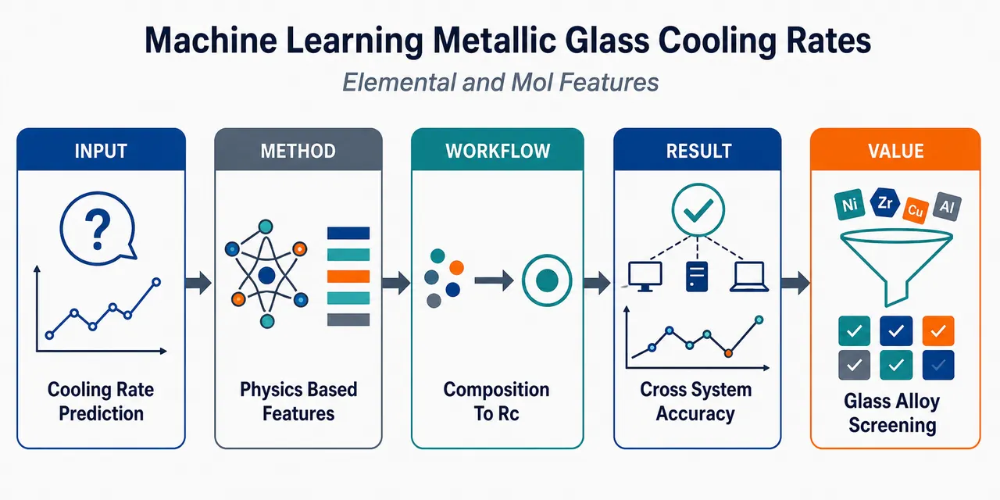
研究问题如何在不依赖已制备金属玻璃实验表征的前提下，跨不同化学体系准确预测金属玻璃临界冷却速率 Rc；核心难点是传统组成/元素特征在未知合金体系外推时失效，而 Rc 又决定熔体需要多快冷却才能避开晶化、形成非晶玻璃。创新方法将“低成本元素特征”与“模拟生成的物理特征”融合，用 ab initio 数据训练 MTP 机器学习势，再通过分子动力学提取热容变化、局部 Voronoi 结构、黏度/扩散等信息，并结合 Materials Project 凸包计算晶化驱动力。Aha 点是最佳模型只需 4 个可解释特征：理想混合熵、凸包上方能量、热容变化、类二十面体 Voronoi 多面体比例，把成分复杂度、晶化热力学、液体热响应、短程结构四个物理维度压缩成一个跨体系预测器。工作流程输入合金成分与 Rc 数据库；先计算元素性质特征如理想混合熵；再用 ab initio 熔融-冷却轨迹训练 MTP 势函数，并通过主动学习修正不稳定构型；随后进行 1000 原子 MTP-MD 淬火，提取势能-温度曲线、ΔC、1500 K Voronoi 多面体、黏度和自扩散特征；另用 MLP 淬火生成无定形结构，经 ab initio 弛豫后与 Materials Project 晶体凸包比较得到 Eabove；最后把特征输入机器学习模型，用“完整化学体系留出”交叉验证输出 log10(Rc) 预测。关键结果在 34 个合金、20 个化学体系、19 种元素上，最佳 4 特征模型在严格的完整化学体系留出验证中达到 R²=0.78、MAE=0.76 log10(K/s)。结果显示，加入物理模拟特征后模型能比纯元素/组成描述符更好外推到未见过的化学体系；SHAP 分析表明关键特征影响方向符合材料物理：Eabove 表征晶化驱动力，ΔC 关联脆性，ICO-like Voronoi 比例反映抗晶化短程序，Smix 表征多组元混合复杂度。应用价值该框架可用于在大量候选合金中预筛选低 Rc、高玻璃形成能力的金属玻璃成分，减少“先制备再测试”的实验循环；同时为高强度、耐腐蚀、磁性器件、生物结构材料等金属玻璃应用提供可解释的计算设计路线，并可推广到其他复杂成分材料的高通量性质预测。第一部分：核心概览（Overview）
该研究建立了面向金属玻璃临界冷却速率 (R_c) 的机器学习预测框架，将元素性质特征与基于ab initio、机器学习势、分子动力学获得的物理特征结合，在34 个合金、20 个化学体系上实现跨化学体系验证。最佳模型仅依赖 4 个特征：理想混合熵、凸包上方能量、热容变化、类二十面体 Voronoi 多面体比例，在留出完整化学体系交叉验证中达到 (R²⁼⁰.78)、MAE=0.76 (łog₁₀(K/s))，强调了物理可解释特征对跨体系泛化的重要性。
---
第二部分：结构化快速回顾
《Machine learning metallic glass critical cooling rates through elemental and molecular simulation based featurization》（None，）
背景
金属玻璃缺乏长程原子有序性，具有高硬度、高强度、耐腐蚀、低磁滞、高电阻等优势，但工程应用受限于玻璃形成能力 GFA。临界冷却速率 (R_c) 是比 (Dₘₐₓ)、(Zₘₐₓ) 更内禀的 GFA 指标。既有实验温度特征如 (T_g)、(Tₓ)、(Tₗ) 需要先制备玻璃，限制了预测性；纯元素特征模型在跨化学体系外推时性能下降明显。
方法
构建两类特征：一类来自元素性质代数组合，如 (Sₘᵢₓ)、(δ)、(Hₘᵢₓ)；另一类来自模拟，包括MTP 分子动力学得到的黏度、自扩散、热容变化、Voronoi 结构特征，以及结合 MLP+ab initio 得到的无定形形成能 (Efₒᵣₘ) 与凸包上方能量 (Eₐbₒᵥₑ)。模型使用严格的按完整化学体系留出交叉验证评估。
结果
最佳模型由 4 个特征组成：(Sₘᵢₓ)、(Eₐbₒᵥₑ)、(Δ C)、ICO-like Voronoi polyhedra fraction。在 34 个合金、20 个化学体系上，留出完整化学体系交叉验证得到 (R²⁼⁰.78) 与 MAE=0.76 (łog₁₀(K/s))。
讨论
物理特征提升了跨化学体系泛化能力。SHAP 分析显示最重要特征对预测的影响方向符合物理预期，支持模型并非单纯数值拟合，而是在一定程度上捕捉了与晶化驱动力、液体热力学、局部结构有联系的 GFA 机制。
局限
高成本模拟使完整研究只覆盖 34/177 个可用 (R_c) 数据点。MTP 训练主要基于液体和无定形结构，晶体相信息需额外通过 ab initio 与 Materials Project 凸包近似补充。Voronoi 温度、VP 类型和结构阈值未系统优化。
结论
基于物理启发模拟特征 + 少量元素特征的机器学习框架能够较可靠预测金属玻璃 (R_c)，并具备优于简单组成/元素特征模型的跨化学体系潜力。该策略可推广至其他复杂成分材料的高通量性质预测。
---
第三部分：逐章节冷凝解析（Section-by-Section Condensing）
> 给定材料包含 Abstract、1 Introduction、2 Methods 及 2.1–2.8 开头；未给出完整 Results、Discussion、Conclusion 正文章节。以下严格覆盖可见原始章节标题。
---
Abstract
Machine learning target is critical cooling rate
核心目标是用机器学习预测金属玻璃的临界冷却速率 (R_c)，并且预测特征不是单纯组成，而是来自计算材料性质。摘要开头明确给出：*"We have developed a machine learning model for critical cooling rates for metallic glasses based on computational properties."* 这意味着目标变量是 (R_c)，特征空间强调可计算物理量。
Feature comparison spans elemental and simulation-derived descriptors
特征来源被设计为两大层次：容易计算的元素性质函数，以及更复杂的、由物理机制驱动的模拟特征。证据为：*"We compare results for features derived from easy-to-compute functions of elemental properties to more complex physically motivated properties using ab initio, machine-learning potentials, and empirical potential molecular dynamics methods."* 其中涉及 ab initio、machine-learning potentials、empirical potential molecular dynamics 三类模拟工具。
Dataset covers 34 alloys from 20 chemical systems
模型开发中用于复杂模拟特征分析的样本规模为 34 个合金，覆盖 20 个化学体系。摘要写明：*"Analysis of various features for 34 alloys from 20 chemical systems shows that the best model for critical cooling rates was learned from one elemental property-based feature and three simulated features."* 样本虽不大，但化学多样性较强。
Best model uses four physically interpretable features
最佳模型只使用 1 个元素性质特征 + 3 个模拟特征：
- 理想混合熵 (Sₘᵢₓ)；
- 凸包上方能量 (Eₐbₒᵥₑ)；
- 热容变化 (Δ C)；
- 类二十面体 Voronoi 多面体比例 ICO-like VP fraction。
摘要原文给出：*"The elemental property-based feature is an ideal entropy value based on alloy stoichiometry. The simulated features were acquired from estimates of energies above the convex hull, changes in heat capacity, and the fraction of icosahedra-like Voronoi polyhedra."*
Validation deliberately avoids easy random splits
模型评估采用更严格的交叉验证，即反复将完整化学体系作为测试集留出，而不是随机 k-fold。摘要称：*"Models were assessed through a demanding cross validation test based on repeatedly leaving out full chemical systems as test sets"*。这种设置直接检验跨化学体系外推能力。
Predictive accuracy is competitive under harsh validation
在严格跨体系交叉验证下，最佳模型达到 (R²⁼⁰.78)，平均绝对误差 MAE=0.76 ([łog₁₀(K/s)])。摘要明确给出：*"had an (R²) of 0.78 and a mean average error of 0.76 in units of ([łog₁₀(K/s)])."*
SHAP analysis supports physical consistency
解释性分析使用 SHAP，验证重要特征对预测的影响方向是否符合物理直觉。摘要写道：*"We demonstrate with Shapley additive explanation analysis that the most impactful features have physically reasonable influence on model predictions."* 这将预测性能与物理合理性连接起来。
---
1 Introduction
Metallic glasses are defined by absence of long-range atomic order
金属玻璃与晶态金属的根本区别是缺乏长程原子有序性。开篇定义为：*"Unlike their crystalline counterparts, metallic glasses are a type of metallic material characterized by a lack of long-range atomic order."* 这一结构特征是后续讨论 GFA、局域结构与 Voronoi 多面体的基础。
Metallic glasses offer multiple engineering advantages
金属玻璃相较晶体金属可表现出高硬度、高强度、优异耐腐蚀性、更小磁滞、更高电阻率。原文列举：*"Metallic glasses can have exceptional hardness, increased strength, superior corrosion resistance, smaller magnetic hysteresis, and higher resistivity when compared to their crystalline counterparts."* 应用场景包括人体结构支撑、电压变压器、高尔夫球杆：*"structural supports within the human body... voltage transformers... and golf clubs"*。
Glass formation depends on composition and processing path
金属玻璃能否形成取决于材料成分与加工过程中是否避免晶化。原文指出：*"Each of these applications depend on the composition of the material in question and the ability for that composition to form a glass instead of a crystal during processing."* 因而 GFA 预测本质上是成分—加工—相选择问题。
Size limitation is caused by crystallization during melt quenching
金属玻璃难以大尺寸制备，主要因为晶态相热力学上更稳定；熔体淬火中若散热不够快，将形成晶体相。原文写道：*"One significant obstacle to the more widespread adoption of metallic glasses for engineering applications is their size limitation, which is primarily due to the greater thermodynamic stability of their crystalline counterparts."* 以及：*"heat must be quickly dissipated from samples or else crystalline phases are formed"*。
Critical cooling rate is an intrinsic GFA metric
临界冷却速率 (R_c) 被定义为能形成玻璃的最慢冷却速率，是 GFA 的内禀度量。原文给出：*"The slowest rate at which a molten material can be cooled to produce a glass is called the critical cooling rate (denoted by (R_c)) and is an intrinsic measure of glass forming ability (GFA)."* 与 (Dₘₐₓ)、(Zₘₐₓ) 相比，(R_c) 更少依赖具体淬火方法。
Maximum glass size metrics are useful but less intrinsic
可制备玻璃尺寸通常用 (Zₘₐₓ) 或圆柱样品直径 (Dₘₐₓ) 表征。原文说明：*"This size is typically quantified by the maximum potential length of the shortest sample section of a produced glass before nucleation of crystalline phases occurs"*，并补充：*"If the geometry is cylindrical, then the diameter, (Dₘₐₓ), can be referenced specifically."* 但这些指标会受制备方法影响：*"can depend on the quenching method and are not as intrinsic to the material as (R_c)."*
Characteristic-temperature GFA models require glass formation first
既有 GFA 经验模型常使用 (T_g)、(Tₓ)、(Tₗ) 的代数组合，但最大问题是必须先形成玻璃才能测量 (T_g) 与 (Tₓ)。原文指出：*"Many previous efforts to quantify GFA relied on arithmetic operations of the glass transition ((T_g)), crystallization ((Tₓ)), and the liquidus ((Tₗ)) temperatures"*，同时强调：*"A significant limitation of these methods is the prerequisite formation of a glass to measure (T_g) and (Tₓ)."*
Rheology is important but not sufficient alone
黏度与弛豫时间常用于解释 GFA，因为冷却过程中原子运动受限有利于维持非晶结构。原文称：*"The rheology of a material, typically characterized by viscosity or relaxation time, is suggested by other studies to play a pivotal role in explaining GFA."* 二者近似可互换：*"Relaxation time and viscosity are frequently used interchangeably because they are directly proportional to each other."*
Fragility captures temperature dependence near glass transition
脆性 (m) 表征接近 (T_g) 时黏度或弛豫时间随温度变化的快慢。定义为：*"The change in viscosity (or relaxation time) with respect to temperature when the material is near (T_g) is called fragility, (m)."* 常规理解是高 (m) 对应差玻璃形成能力，低 (m) 对应好玻璃形成能力：*"The conventional understanding is that high (m) indicates poor glass formers, while low (m) suggests favorable glass formers."*
Fragility-GFA relation has known exceptions
脆性并不能单独描述 GFA。尤其在 MgCuY 系统中，高 GFA 与高 (m) 可共存。原文写道：*"However, (m) alone does not describe GFA."* 并举例：*"In the studied MgCuY system, many compositions displayed high GFA despite having high (m) values."* 这说明单一流变指标不足以预测 (R_c)。
Combining (T_g), (Tₗ), and (m) can yield very strong correlations but needs experiments
已有研究用 (T_g)、(Tₗ)、(m) 预测 (Dₘₐₓ)，得到极高拟合质量 (R²⁼⁰.980)。原文给出：*"Ref. [25] uses (T_g), (Tₗ), and (m) to predict (Dₘₐₓ)"*，结果为：*"produced a model for (łog₁₀(Dₘₐₓ²)) with a coefficient of determination of (R²=0.980)."* 但这些特征仍依赖实验测量：*"any correlation based on experimentally measured values has a severe limitation of needing to make and characterize the material to predict (R_c)."*
Composition-only or elemental-feature models degrade under chemical extrapolation
基于组成或元素性质的 GFA 模型在普通 k-fold CV 下表现较好，但跨化学体系测试会显著退化。Ward 等模型在 10-fold CV 下相关系数 (R=0.89)，MAE 0.21 mm；二元体系留出测试时 MAE 升至 0.81 mm，增加 286%。原文细节为：*"built a (Dₘₐₓ) model with a correlation coefficient (not (R²)) of (R=0.89) when assessing their model through 10-fold cross validation"*，以及：*"the (MAE) rises to 0.81 mm for tests (a 286% increase)."*
Approximate (R_c) database enabled larger-scale learning but validation gap remains
Afflerbach 等整合 (Zₘₐₓ)、(Dₘₐₓ)、(R_c)、(T_g)、(Tₓ)、(Tₗ) 和熔纺带信息，为 2,125 种材料生成近似 (R_c)，记为 (Rₐ)。原文写道：*"produce approximate (R_c) values (denoted as (Rₐ) here) for 2,125 materials."* 对部分非晶和晶态熔纺带分别赋值 (10⁵.⁵) 与 (10⁷) K/s：*"assigned (R_c) values of (10⁵.⁵) and (10⁷) [K/s] for partially amorphous and fully crystalline ribbons, respectively."* 按完整化学体系留出时 MAE 为 0.82 (łog₁₀(K/s))，5-fold CV 下为 0.36 (łog₁₀(K/s))：*"a (MAE) of 0.82"* 与 *"A lower (MAE) of 0.36... was obtained from a 5-fold CV assessment because it is a less demanding test."*
Physically motivated features improve extrapolation
物理启发特征相较数值暴力生成特征具有更好外推能力。原文总结：*"models constructed using physically motivated features exhibit greater extrapolation capabilities compared to models built with features acquired through numerical brute force."* 在更困难化学差异测试中，物理特征模型识别材料能力比元素特征模型高 20 倍，组成模型识别为零：*"models built from physically motivated features correctly classified 20 times more materials of interest than models built from elemental features. Models built from compositions alone identified none."*
Voronoi polyhedra encode short-range order relevant to GFA
从结构角度看，Voronoi 多面体 VP 可描述玻璃短程序。原文说明构造方式：*"To construct VPs bisecting planes are positioned between an atom and its nearest neighbors."* VP 类型由面数及边数确定：*"The type of VP is determined by the number of faces and their corresponding edges that enclose the atom."*
Icosahedra-like local structures may slow dynamics and enhance GFA
类二十面体 VP 被定义为具有至少 10 个五边形面的结构。原文给出：*"ICO-like, characterized by having at least 10 faces with 5 edges each."* 既有研究显示 ICO-like VP 在冷却中运动缓慢，从而增强 GFA：*"ICO-like VPs exhibit slow movement during cooling, consequently enhancing GFA."*
Previous MD-based GFA regression was promising but chemically limited
已有工作使用 MD 计算 (R_c)，再用模拟材料性质预测 (łog₁₀(R_c))，验证 (R²⁼⁰.769)。原文写道：*"Molecular dynamics (MD) was used to measure (R_c) by studying crystallization rates"*，并说明：*"the model validation yielded an (R²) of 0.769."* 但模拟 (R_c) 受计算限制，通常高于 (10¹¹) K/s：*"the simulated values were limited by computational constraints to above (10¹¹) [K/s]."*
Classical potentials constrain accessible chemical space
既有 MD 与特征工程工作依赖经典原子间势，而高质量势函数构建困难、耗时，限制化学空间。原文指出：*"Both Ref. [2] and [44] relied on classical interatomic potentials, which are difficult and time-consuming to construct."* 进一步说明：*"The need to have acceptably accurate potentials available for each system being studied greatly limited the chemical space accessible to the studies."*
Machine learning potentials enable near-ab initio simulations at practical scales
机器学习势 MLPs 允许从 ab initio 数据快速构建较准确势函数，在必要长度与时间尺度上接近 ab initio 精度。原文写道：*"recent developments in machine learning potentials (MLPs), which allow for the rapid construction of accurate potentials."* 以及：*"Employing MLPs constructed from ab initio data with machine learning can enable practical simulations at the necessary length and time with near ab initio accuracy."*
Central methodological contribution combines best practices with computable physics descriptors
研究策略是整合以往 GFA 量化经验，构建可计算的物理描述符，扩展 MLP 可获得属性的化学域。原文概括：*"we integrate the best practices of previous efforts to quantify GFA and use them to guide developing descriptors from material properties that are computationally accessible."* 同时：*"We extend the previous chemical domain of properties that can be obtained with MLPs."*
Reported performance under chemical-system leave-out CV is (R²⁼⁰.78), MAE=0.76
跨完整化学体系留出验证得到较强性能。原文写道：*"a cross validation test based on repeatedly leaving out full chemical systems yielding an (R²) of 0.78 and (MAE) of 0.76 in units of ([łog₁₀(K/s)])."* 该数值与摘要一致，是论文核心定量结果。
SHAP provides physically interpretable model explanations
SHAP values 用于解释每个特征对预测的贡献，并判断相关性是否符合物理预期。原文定义：*"SHAP values quantify the contribution of each feature to a machine learning model’s prediction, based on game theory principles."* 该解释性工具连接了机器学习预测与材料物理机制。
---
2 Methods
2.1 Software
MTP fitting uses MLIP-2
机器学习原子间势采用 MLIP-2 软件包构建，势函数形式为 moment tensor potential, MTP。原文写道：*"The MLPs in this study were constructed using the Machine-Learning Interatomic Potentials 2 (MLIP-2) package, which fits a moment tensor potential (MTP)."*
General machine learning uses MAST-ML and scikit-learn
除 MLP 拟合外，其他机器学习任务使用 MAST-ML 与 scikit-learn。原文为：*"For all other machine learning tasks, MAST-ML was employed along with scikit-learn."*
Ab initio and classical MD use VASP and LAMMPS
第一性原理计算使用 VASP，经典 MD 使用 LAMMPS。原文写道：*"Ab initio calculations were carried out using the Vienna Ab initio Simulation Package (VASP) and classical MD simulations utilized the Large-scale Atomic/Molecular Massively Parallel Simulator (LAMMPS)."*
Voronoi analysis uses OVITO Python API
VP 类型通过 OVITO Python API 计算。原文为：*"OVITO was used for the calculation of VP types through its python application program interface (API)."*
---
2.2 Database
Two (R_c) data sources are merged
(R_c) 数据来自两类来源：一个包含 299 条记录、借助大语言模型整理的数据集；另一个来自人工整理的金属玻璃数据库。原文写道：*"One dataset contained 299 entries (where some are duplicates) gathered with the assistance of large language models."* 以及：*"Another set of data was taken from a metallic glass database containing (R_c) and other properties from Ref. [51]."*
Duplicate handling prioritizes manually curated database
若两个来源存在重复成分，保留 Ref. [51] 数据；同一数据集内部重复成分则取平均 (R_c)。原文说明：*"If duplicates existed across both sources of data, then the entry from Ref. [51] was kept and the other was discarded."* 以及：*"For duplicate compositions within each dataset, the mean (R_c) was taken to produce a one-to-one mapping between composition and (R_c)."*
Merged database contains 177 unique entries
合并去重并平均后，数据库包含 177 条成分—(R_c) 映射。原文明确：*"The merged data set contained 177 entries."*
Expensive simulation is restricted to 34 compositions
由于 MLP 拟合与模拟成本高，完整模拟特征只在 34/177 个条目上进行。原文写道：*"For the portion of the study that includes fitting MLPs and computationally expensive simulations, only 34 out of the 177 entries were studied."*
The 34 simulated compositions are all from the manually curated source
用于高成本模拟的 34 个成分均来自 Ref. [51]，不含 LLM 辅助抽取的数据。原文说明：*"The subset of 34 compositions was acquired from Ref. [51], and none of them originated from the data obtained using large language models."*
---
2.3 Summary of Explored Properties
Feature sets are organized into elemental, MTP, crystalline, total, and best subsets
特征集被划分为 (Xₗₒₙg)、(Xₘₜₚ)、(Xcᵣyₛ)、(Xₘₐₛₜₘₗ)、(Xₜₒₜ)、(Xbₑₛₜ)。表格说明：*"Due to the extensive number of features and potential for confusion in feature nature and naming conventions, we present a comprehensive summary of features and their corresponding descriptions in Table 1."*
Elemental features include Long-style alloy descriptors
(Xₗₒₙg) 包括 Pauling 电负性加权平均 (barx)、原子半径函数 (γ)、混合焓 (Hₘᵢₓ)、尺寸失配 (δ)、平均原子半径 (barr)、理想混合熵 (Sₘᵢₓ)。表中给出 (Sₘᵢₓ) 公式：*"(-Rsumᵢ₌₁Ncᵢln(cᵢ)), where (c) is the atomic fraction, (R) is the gas constant, and (i) is the element in question."*
MTP simulation features include thermodynamic, rheological, and structural quantities
(Xₘₜₚ) 包括 (Δ C)、(T_f)、(Tₛ)、基于自扩散和黏度的 (Tₐ)、(T_g)、(T_c)，MYEGA 参数 (Dₐ,D_b,D_c,ηₐ,η_b,η_c)，MD 脆性 (Dₘ,ηₘ)，以及 ICO-like VP fraction 与 VP variance。表中将 (Δ C) 定义为：*"Difference in (dE/dT) between a frozen glass and liquid."*
Crystalline-energy features approximate amorphous stability and crystallization driving force
(Xcᵣyₛ) 包括 无定形形成能 (Efₒᵣₘ) 与 凸包上方能量 (Eₐbₒᵥₑ)。表中定义为：*"The formation energy for the amorphous phase"* 与 *"The energy above the convex hull."*
Total and best feature sets are nested
总特征集为 (Xₜₒₜ=Xₗₒₙgu̧p Xₘₜₚu̧p Xcᵣyₛ)，最佳特征集是其子集。表中写明：*"(Xₗₒₙgu̧p Xₘₜₚu̧p Xcᵣyₛ)"* 以及 *"(Xbₑₛₜsubset Xₜₒₜ)."*
---
2.4 Creation and Validation of MLP Fitting Methodology
MLP validation focuses on viscosity, diffusion, and energy-temperature behavior
MLP 必须在黏度、自扩散、势能随温度变化方面接近训练来源，才可认为足够可靠。原文写道：*"Our properties of interest stem from the relationships between viscosity, self-diffusion, and potential energies with respect to temperature."* 并要求：*"Any MLP must have almost the same behavior across these properties when compared to first principles MD for its training to be considered accurate."*
EAM potentials provide ground truth for validation because ab initio viscosity is impractical
由于 ab initio 难以完整计算黏度等关键性质，验证阶段以 EAM 势函数作为可控“真实”系统。原文解释：*"This ruled out validating on ab initio data since some key properties, like viscosity, were not practical to compute fully with ab initio."* 因此：*"we fit MLPs to data from embedded atom method (EAM) potentials and compared the MLP predictions to those from EAM potentials."*
Three validation compositions cover NiP, PdSi, and AlCuZr
验证体系为 (Ni₈₀P₂₀)、(Pd₇₅Si₂₅)、(Al₁₀Cu₄₀Zr₅₀)。原文写道：*"three materials: (Ni₈₀P₂₀), (Pd₇₅Si₂₅), and (Al₁₀Cu₄₀Zr₅₀)."*
Training data generation mimics feasible ab initio MD
训练数据生成采用短 MD：随机立方结构，3000 K 熔化 1 ps，再 3000 K 保持 1 ps，之后每次降温 300 K 并保持 1 ps，直到 300 K。原文详细说明：*"Materials were created randomly in a cubic configuration, then melted at 3,000 [K] for 1 [ps]. Then, materials were held for another 1 [ps] at 3,000 [K] and iteratively cooled by 300 [K] with 1 [ps] holds until a final temperature of 300 [K] was reached."*
Equation-of-state volume perturbations use 61 configurations and ±15% side-length changes
每个等温段开头采集 61 个体积膨胀/收缩配置，立方边长变化 ±15%。原文写道：*"At the beginning of each hold, 61 configurations with volumes expanded and contracted by (± 15%) the cubic side length were taken."* 目的是覆盖较宽能量与力范围：*"to ensure that the training data for potentials encompassed a broad range of energies and forces."*
Using only five volume configurations degraded results
61 个 EOS 配置看似过多，但减少到 5 个会显著损害表现。原文指出：*"The 61 configurations making out the equation of state might seem particularly excessive but we found that just using a modest number like five configurations significantly degraded the results."*
MTP level 08 training uses 724 MD frames
所有模拟步长为 1 fs。从体积扰动数据和等温保持每 100 帧采样构建训练数据，用于拟合 level 08 MTP；最终训练帧数为 724。原文写道：*"All simulation was done with a time step of 1 [fs]."* 以及：*"The final number of MD frames used for training was 724."*
Training configurations exclude crystalline structures
MLP 训练只使用液体和固态非晶相，不含晶体结构信息。原文强调：*"All configurations used for building MLPs were from amorphous phases (liquid and solid). None of the potentials have crystalline information used in the fitting."*
Validation uses independent melt-quench runs and compares energies and forces
构建 MTP 后，使用独立熔融淬火轨迹验证，对每个原子构型比较 MTP 与 EAM 的能量和力。原文写道：*"For each set of atomic positions, we used MTPs to predict the energies and forces. We then compared them directly to values from classical EAM potentials."*
Property validation uses 1,000 atoms and 10 independent runs
能量、自扩散、黏度随温度的趋势比较使用 1,000 原子系统；每个势函数对每个体系做 10 次独立运行并求平均。原文为：*"Trends for these properties were compared between the MLP and EAM potentials for simulated systems of 1,000 atoms."* 以及：*"averaged over 10 independent runs separately for each potential to assume robust converged values."*
---
2.5 Applying MLP Fitting Methodology to Materials of Interest
The main simulated set contains 34 compositions from 20 chemical systems
主研究选择 34 个成分、20 个化学体系进行 MLP 拟合。原文写道：*"We selected 34 compositions from 20 different chemical systems for fitting MLPs."*
Selected (R_c) values span eight orders of magnitude
这 34 个成分的 (R_c) 覆盖 8 个数量级，并覆盖二元到六元合金。原文说明：*"The (R_c) for the chosen compositions span eight orders of magnitude and exhibit variations in the number of constituent element types."* 以及：*"The smallest systems studied comprised two elements, while the largest system investigated involved six elements."*
Chemical diversity includes 19 species and 20 chemical systems
总计涉及 19 种化学元素，形成 20 个化学体系。原文为：*"The total number of chemical species considered in this study amounted to 19 and formed 20 chemical systems."*
Ab initio MD training uses VASP with Γ-point and default ENMAX cutoff
训练数据由 VASP ab initio MD 生成，k 点为 1×1×1 Γ mesh，能量截断取 POTCAR 中最大 ENMAX。原文写道：*"We employed a 1x1x1 (Γ) mesh for the k-points in our calculations."* 以及：*"The energy cutoffs were determined by selecting the largest value of ENMAX defined in the POTCAR file for each composition."*
Ab initio training changes from NPT to NVT due to VASP thermostat limitations
与 EAM 验证不同，ab initio 训练使用 NVT 而非 NPT，原因是 VASP 中 NPT 兼容的 Langevin thermostat 需要各元素摩擦系数，难以泛化。原文解释：*"The only notable difference between the ab initio and EAM training approaches was a switch from the NPT to the NVT ensemble."* 以及：*"determining these coefficients for all atomic species across the 34 studied compositions was impractical for generalized approaches."*
Zero-pressure volumes are selected from volume expansion/contraction grids
NVT 保持阶段通过体积膨胀/收缩网格找到每个等温保持对应的零压体积。原文写道：*"the grid of volumetric contractions/expansions were used to find the zero pressure volume that was used for each respective isothermal hold."*
Active learning solves MLP instability
部分 ab initio 训练 MLP 不稳定，可能与 ensemble 改变有关。通过主动学习补充不确定构型的 ab initio 计算解决。原文写道：*"Some MLPs trained on the ab initio data obtained in this manner were unstable"*，并说明：*"The issue of MLP instability was solved with the use of active learning."*
Active learning uses 100 ps NPT holds and uncertainty-triggered ab initio calculations
主动学习中使用 LAMMPS-MLIP-2 接口进行 NPT 运行，等温保持从 1 ps 延长到 100 ps；当构型被默认准则判定为不确定时，执行额外 ab initio 计算并加入训练集。原文写道：*"NPT runs described in Sec. 2.4 with isothermal holds of 100 [ps] instead of 1 [ps] were simulated using the MLIP-2 interface with LAMMPS."* 以及：*"Whenever a configuration of atoms was considered uncertain... an additional ab initio calculation was carried out on that configuration."*
Training set size varies by composition
由于主动学习触发次数不同，每个成分最终使用的训练构型数不同。原文说明：*"Because of this process, differing number of training configurations were used for each composition."*
All MD uses 1 fs timestep
整项研究 MD 时间步统一为 1 fs。原文给出：*"All MD in this study was conducted with a time step of 1 [fs]."*
---
2.6 Features Generated from MLP MD
MLP MD extracts features for 34 compositions
该节描述如何从 34 个成分模拟中提取用于学习 (R_c) 的属性。原文开头为：*"This section describes how we extracted properties from simulations of 34 compositions to be used to machine learn (R_c)."*
Self-diffusion is included because it tracks atomic mobility
除黏度外，自扩散也被纳入特征，因为它可从相同 MD 中获得，并表征原子运动性。原文写道：*"As self-diffusion data can be obtained from the same MD simulations used for measuring viscosity and signifies the mobility of atoms within a system, we incorporate it into our set of properties of interest."*
Each material uses averages over five independent simulations
黏度、自扩散、能量等属性来自每个材料 5 次独立模拟的平均。原文明确：*"viscosity, self-diffusion, energies, etc. were acquired from the average of 5 independent simulations for each of the 34 studied materials."*
Quench protocol starts at 2000 K with 100 ps equilibration
每个成分先在 2000 K 平衡 100 ps，系统大小 1000 原子。原文写道：*"Each composition of interest underwent an initial equilibration at 2,000 [K] for 100 [ps] with a system size of 1,000 atoms."*
Temperature decreases by 50 K with 110 ps holds down to 100 K
随后每次瞬时降温 50 K，保持 110 ps，直到 100 K。前 10 ps 作为平衡丢弃。原文说明：*"materials were iteratively quenched by decreasing the temperature by 50 [K] instantaneous decrements and holding for 110 [ps] until a final temperature of 100 [K]."* 以及：*"The first 10 [ps] were used for equilibration and were discarded from any data analysis."*
Average cooling rate is approximately 0.45 K/ps
该降温协议平均冷却速率约为 0.45 K/ps。原文给出：*"The average cooling rate was approximately 0.45 [K/ps]."*
NPT ensemble uses Nose-Hoover thermostat and barostat
淬火过程在 NPT ensemble 下进行，使用 Nose-Hoover thermostat and barostat。原文为：*"All these processes were conducted under the NPT ensemble and the potential energy was measured for each temperature."* 以及：*"A Nose-Hoover thermostat and barostat were used for the NPT ensemble."*
Fictive temperature (T_f) and dynamic slowdown temperature (Tₛ) come from piecewise linear fits
势能—温度曲线通过 PWLF 拟合为三个最优线性段，斜率突变给出 (T_f) 与 (Tₛ)。原文写道：*"Both (T_f) and (Tₛ) were determined by fitting the data with three optimal linear segments using the PieceWise Linear Functions (PWLF) package."* 低温突变为 (T_f)，高温突变为 (Tₛ)：*"the two most drastic changes in the slope of potential energy with respect to temperature denote (T_f) and (Tₛ), with (T_f) occurring at a lower temperature than (Tₛ)."*
(Δ C) is derived from energy-temperature slopes above and below (T_f)
热容变化特征 (Δ C) 本质上是 (T_f) 上下势能对温度斜率差。原文写道：*"The difference between slopes of total energies with respect to temperature above and below (T_f) effectively gives change in the heat capacity, (Δ C)."*
(Δ C) is physically linked to fragility via random first order transition theory
(Δ C) 纳入模型的物理依据是其与脆性 (m) 的理论联系。原文说明：*"(Δ C) was used as a feature for learning (R_c)."* 并指出：*"This feature was included based on arguments made in Ref. [4], which relate change in heat capacity to (m) with random first order transition theory."* 一般关系为：*"an increase in (Δ C) results in a higher value of (m) and vice versa."*
Voronoi features are measured at 1500 K
VP 结构特征在 1500 K 的原子位置上测量，该温度接近 Ref. [52] 的 1478 K，且高于研究中的所有 (T_f)。原文写道：*"We included two features regarding VPs by measuring atom positions at 1,500 [K] for each composition."* 以及：*"the atom positions at 1,500 [K] were near the temperature of 1,478 [K] used in Ref [52] and is above all (T_f) explored in our study."*
ICO-like VP is defined by more than nine five-edged faces
ICO-like VP 定义为五边形面数量大于 9 的 Voronoi 多面体。原文写道：*"ICO-like VP are VP whose number of faces with 5 edges are greater than 9."*
VP variance quantifies distribution spread across VP types
VP 方差定义为
[
var(VP)=frac1Gsumᵢ^G(fᵢ₋μ)²
]
其中 (i) 是 VP 类型，(fᵢ) 是该类型比例，(G) 是 VP 类型数，(μ) 是平均比例。原文写道：*"Variance of VP (denoted as (var(VP))) is defined by (var(VP)=frac1GsumGᵢ(fᵢ-μ)²)"*。
OVITO uses an edge threshold of 0.1 Å
VP 计算使用 OVITO Python API，边阈值为 0.1 Å。原文写道：*"The python3 API from OVITO was used to calculate VP with an edge threshold of 0.1 [Å]."*
VP choices are acknowledged as not necessarily optimal
VP 类型、温度、阈值等未被系统优化，因为全面探索成本过高。原文承认：*"These are not necessarily the optimal types of VPs, temperatures to explore VPs, etc. for predicting GFA."* 并说明：*"such detailed exploration would involve an impractical level of effort."*
Rheology simulations extend temperatures above (1.1T_f) for 10 ns
对于高于 (1.1T_f) 的温度，每个温度继续进行 10 ns NVT 模拟，用于测量黏度和自扩散。原文为：*"For each of the explored temperatures above (1.1T_f), simulations were extended for 10 [ns] under the NVT ensemble and were used to measure self-diffusion and viscosity."*
Viscosity is calculated by Green-Kubo integration of pressure tensor autocorrelation
黏度使用 Green-Kubo formalism，对压力张量分量 (Pₓy,Pₓz,Pyz) 的自相关积分，并求三者平均。原文写道：*"Viscosity can be determined using the Green-Kubo formalism."* 以及：*"The integrals of (Pₓy), (Pₓz), and (Pyz) were averaged together."*
Self-diffusion is obtained from the long-time MSD limit
自扩散由均方位移 MSD 的长时间极限得到。原文写道：*"To measure self-diffusion, the long-time limit of mean squared displacement (MSD) was taken."* 公式为：
[
D=łimₜ→ᵢₙfₜyfrac16Ntłeft<sumᵢ₌₁N[rᵢ₍ₜ₎₋ᵣᵢ₍ₜ₌₀₎]²ⁱ̊ght>
]
MYEGA is used instead of VFT due to better extrapolation
高温自扩散与黏度随温度变化均用 MYEGA equation 拟合。原文称：*"The MYEGA function is a three parameter model that has superior extrapolation properties compared to the more commonly used Vogel-Fulcher-Tammann (VFT) equation."* 公式为：
[
łog₁₀(ν)=νₐ₊fracν_bTeν_c/T
]
MYEGA parameters become model features
自扩散和黏度的 MYEGA 三参数均作为特征：(Dₐ,D_b,D_c) 与 (ηₐ,η_b,η_c)。原文写道：*"From the rheological data, we derived various features. The fitting parameters from the MYEGA function for self-diffusion and viscosity for each composition were obtained."*
Glass transition temperatures are extrapolated using viscosity and diffusion cutoffs
基于黏度 (10¹²) Pa·s 与自扩散 (10⁻¹²) Å/ps 的外推温度定义 (Tg_ᵥᵢₛc) 与 (Tg_dᵢff)。原文写道：*"we employed MYEGA to extrapolate self-diffusion values to (10⁻¹²) [Å/ps] and viscosity to (10¹²) [Pa·s]."* 并说明：*"The temperatures corresponding to these extrapolated values were designated as the glass transition temperatures."*
Fragility proxies are slopes near (T_g)
在 (Tg_ᵥᵢₛc) 和 (Tg_dᵢff) 前的斜率作为实验脆性 (m) 的代理。原文说明：*"The slopes immediately preceding (Tg_ᵥᵢₛc) and (Tg_dᵢff) were adopted as a proxy for experimental (m)."*
(T_c) cutoffs are selected to avoid excessive extrapolation
(T_c) 特征使用自扩散 (10⁻⁴.⁰) Å/ps 与黏度 (10².⁰) Pa·s 的温度。原文写道：*"We extracted the temperatures at which self-diffusion and viscosity reach values of (10⁻⁴.⁰) [Å/ps] and (10².⁰) [Pa·s], respectively."* 选择这些值是为避免 MYEGA 对多数成分过度外推：*"The chosen values ensured that the functions from Eq. 4 were not significantly extrapolated beyond the temperature range used to fit the equation’s parameters for most compositions."*
Arrhenius-deviation temperatures are included for both viscosity and diffusion
黏度偏离 Arrhenius 行为的温度对应 (Tₐ)；扩散也加入类似温度，虽无明确命名约定。原文写道：*"Additionally, deviations from Arrhenius behavior for self-diffusion and viscosity were measured."* 以及：*"For viscosity, this matches the definition of the temperature denoted as (Tₐ)."*
All MD-derived features are grouped as (Xₘₜₚ)
该节所有模拟特征归入 (Xₘₜₚ)。原文收束为：*"The features discussed so far will be denoted as (Xₘₜₚ) as they all come from the MTPs."*
---
2.7 Features Generated by Mixing MLP Potential and Ab Initio Energies
(Efₒᵣₘ) and (Eₐbₒᵥₑ) approximate amorphous stability
无定形形成能 (Efₒᵣₘ) 与凸包上方能量 (Eₐbₒᵥₑ) 构成 (Xcᵣyₛ)，用于近似无定形相稳定性。原文写道：*"Enthalpy of formation, (Efₒᵣₘ), and energy above the convex hull, (Eₐbₒᵥₑ), constitute the feature set (Xcᵣyₛ) and are an approximation of the stability of the amorphous phase."*
Phase energy differences are motivated by prior GFA models
相间能量差在既有 GFA 模型中已被证明重要。原文说明：*"Differences between energies of phases have previously been shown to be important for GFA models as seen by the top features in Ref. [2]."*
Crystalline information requires ab initio because MLPs were not trained on crystals
由于 MLP 训练不包含晶体结构，晶体相关能量需加入 ab initio。原文写道：*"We added pure ab initio because the MLPs were not fit to any crystalline structures and might be unreliable for those atomic arrangements."*
Amorphous structures are generated by MLP quenching then relaxed by ab initio
所有模拟使用 100 原子。无定形结构从 3000 K 以 0.5 K/fs 淬火到 100 K，再用 ab initio 弛豫获得无定形焓 (Eₐₘₒᵣₚₕ)。原文为：*"All simulations were conducted with 100 atoms."* 以及：*"Amorphous structures were obtained through simulated quenches from 3,000 [K] down to 100 [K] at 0.5 [K/fs] using MLPs."*
Each material averages three amorphous enthalpy calculations
每个材料重复该过程 3 次，得到平均 (Eₐₘₒᵣₚₕ)。原文写道：*"This process was repeated 3 times for each material to give an average (Eₐₘₒᵣₚₕ)."*
Formation energy uses FCC elemental references
(Efₒᵣₘ) 使用每个元素的 FCC 晶体参考能量计算。原文写道：*"(Efₒᵣₘ) was calculated with a face-centered cubic (FCC) crystal reference for each element in the compound."* 公式为：
[
Efₒᵣₘ=Eₐₘₒᵣₚₕ-sumᵢ^N Eᵢ
]
Convex hull uses Materials Project crystal structures
每个化学体系的估计凸包来自 Materials Project database of crystal structures。原文写道：*"For each chemical system, an estimated convex hull was generated using the Materials Project database of crystal structures."*
(Eₐbₒᵥₑ) approximates crystallization driving force
将特定成分的无定形形成焓与凸包能量比较得到 (Eₐbₒᵥₑ)，可视为晶化驱动力近似。原文明确：*"Comparing the enthalpy of formation for each specific composition to the hull energy gives the resulting (Eₐbₒᵥₑ) for each amorphous material, which can be taken as an approximation to the driving force for crystallization."*
---
2.8 Elemental Property Based Features
Elemental features are designed as algebraic functions of constituent elements
该节开头说明，简单元素特征通过合金组成中各元素性质的函数构造。原文为：*"Here we discuss the more easily computed features based on elemental properties."* 以及：*"For an alloy, one can take functions of the constituent elements in ways that represent the alloy."*
Visible text truncates before full 2.8 methodology
给定材料在句子 *"Specifically,"* 后中断，未包含 2.8 后续具体元素特征生成细节、模型训练流程、特征选择流程、结果图表与讨论正文。可见信息仅能确认该节主题是基于元素性质的低成本特征工程，并与表 1 中的 (Xₗₒₙg)、(Xₘₐₛₜₘₗ) 相对应。
---
第四部分：深度理解与语言支持（Understanding & Nuance）
1. 术语解析
#### Critical cooling rate (R_c)
学术含义：熔体能够形成玻璃而不晶化所允许的最慢冷却速率。数值越低，说明材料越容易形成玻璃，因为即使慢冷也能避免晶化。
语境差别：(R_c) 是比 (Dₘₐₓ)、(Zₘₐₓ) 更内禀的 GFA 指标；后两者受样品几何与淬火方法影响更强。
核心原文：*"The slowest rate at which a molten material can be cooled to produce a glass is called the critical cooling rate."*
#### Glass forming ability, GFA
学术含义：材料在冷却过程中形成非晶玻璃而非晶体的能力。
微妙点：GFA 不是单一结构或热力学量决定的，而是热力学晶化驱动力、动力学扩散/黏度、局部结构稳定性等共同决定。
在该研究中，GFA 被操作化为预测 (R_c)。
#### Fragility (m)
学术含义：接近玻璃转变温度 (T_g) 时，黏度或弛豫时间随温度变化的陡峭程度。
微妙点：传统观点认为低 (m) 对应好玻璃形成能力，高 (m) 对应差玻璃形成能力；但 MgCuY 等系统出现高 GFA 与高 (m) 共存，说明 (m) 不是充分描述符。
核心原文：*"However, (m) alone does not describe GFA."*
#### Energy above the convex hull (Eₐbₒᵥₑ)
学术含义：某个相或结构相对于同成分热力学稳定晶体组合的能量高出量。
在该语境中：无定形结构的 (Eₐbₒᵥₑ) 越高，通常表示越强晶化驱动力，可能对应更差玻璃形成能力和更高 (R_c)。
核心原文：*"can be taken as an approximation to the driving force for crystallization."*
#### Voronoi polyhedra / ICO-like Voronoi polyhedra
学术含义：Voronoi 多面体用邻近原子的垂直平分面划分局部空间，用以刻画液体或非晶中的短程序。
ICO-like VP 指接近二十面体局部结构的多面体；该研究中定义为五边形面数大于 9。
微妙点：ICO-like 不是完美二十面体，而是“类二十面体”局部环境指标，因此是结构倾向而非严格晶体学相。
---
2. 疑难查证
#### 为什么按“完整化学体系”留出比普通 k-fold CV 更严格？
普通 k-fold CV 会把相近成分随机分到训练集和测试集。例如训练集中有 (Zr₄₉Cu₅₁)，测试集中有 (Zr₅₀Cu₅₀)，模型只需局部插值即可表现很好。跨完整化学体系留出则要求模型在训练中完全没见过某一元素组合时仍能预测，这更接近真实材料发现任务。
这种差别在已有工作中非常明显：5-fold CV 可给出较低误差，而化学体系留出误差显著升高。该研究采用后者，是为了检验模型是否学到了跨体系物理规律，而不只是记住局部成分趋势。
#### 为什么 MLP 能缓解 ab initio 与经典势之间的矛盾？
ab initio 精度高、通用性强，但时间和长度尺度太小，难以计算黏度、扩散、长时间冷却等性质。经典势计算快，但每个化学体系都需要专门构建，且跨元素组合泛化差。MLP 使用 ab initio 数据训练后，可在 MD 尺度上运行，速度接近经典势，精度接近 ab initio。关键挑战是训练数据必须覆盖相关构型；因此该研究加入主动学习来补充不确定构型。
#### 为什么 (Eₐbₒᵥₑ)、(Δ C)、ICO-like VP fraction 可以同时进入最佳模型？
三者对应 GFA 的不同物理维度：
- (Eₐbₒᵥₑ)：热力学维度，表示无定形相相对晶体稳定性的不足，近似晶化驱动力。
- (Δ C)：热力学—动力学耦合维度，与脆性 (m) 相关，影响冷却时液体动力学减速方式。
- ICO-like VP fraction：局部结构维度，类二十面体短程序通常与慢动力学和抗晶化有关。
- (Sₘᵢₓ)：成分熵维度，多组元混合可提高构型复杂度，常被认为有利于扰乱晶体成核。
这四类特征互补：一个描述成分复杂度，一个描述晶化热力学驱动力，一个描述冷却热容变化，一个描述局部结构阻碍晶化能力。
#### 为什么模拟的黏度和扩散需要 MYEGA 外推？
MD 可直接模拟的时间尺度通常远短于实验玻璃转变所涉及的时间尺度。实验 (T_g) 常对应黏度约 (10¹²) Pa·s，而 MD 在可承受时间内只能可靠测量较高温度下的低黏度状态。因此需要用温度依赖模型外推。MYEGA 相比 VFT 被认为外推性质更好，因此用于从高温数据推断 (T_g)、(T_c)、脆性代理等特征。
---
第五部分：创新评估与关联（Synthesis & Novelty）
1. 创新性判断
#### 从实验依赖 GFA 描述符转向可计算物理描述符
过去许多 GFA 模型依赖 (T_g)、(Tₓ)、(Tₗ)、(Dₘₐₓ) 等实验量，存在“必须先做出玻璃才能预测玻璃形成能力”的循环限制。该研究把目标转向可由计算获得的物理特征，尤其是 MTP-MD 与 ab initio 组合得到的 (Δ C)、ICO-like VP、(Eₐbₒᵥₑ)，降低了对实验制备的依赖。
#### 解决了经典势方法化学空间受限的问题
近年 MD-GFA 工作常依赖经典原子间势，但每个化学体系都需要可用且可靠的势函数。该研究使用由 ab initio 数据训练的 MTP/MLP，并通过主动学习提高稳定性，使 34 个成分、20 个化学体系、19 种元素的跨体系模拟成为可能。相较只在少数合金族中研究 VP、黏度或扩散，这是化学覆盖度上的推进。
#### 严格采用完整化学体系留出验证，避免随机 CV 过度乐观
材料机器学习中，随机交叉验证常高估性能，因为相近成分可同时出现在训练和测试中。该研究使用“完整化学体系留出”作为核心评估方式，在更接近外推任务的条件下仍达到 (R²⁼⁰.78)、MAE=0.76 (łog₁₀(K/s))。这一点比单纯报告随机 k-fold 分数更有领域价值。
#### 最佳模型极简且物理可解释
最佳模型不是高维黑箱，而是 4 个特征：(Sₘᵢₓ)、(Eₐbₒᵥₑ)、(Δ C)、ICO-like VP fraction。这些特征分别对应成分熵、晶化驱动力、热容/脆性关联、局部短程序。相对于大规模自动元素特征库，这种小特征集更容易解释、验证和迁移。
#### SHAP 连接预测性能与物理合理性
SHAP 不仅用于排序特征重要性，还用于判断特征对 (R_c) 预测的影响方向是否符合材料物理预期。该策略增强了模型可信度，尤其适合小样本、高成本模拟、跨化学体系外推场景。
#### 未完全解决的问题
- 样本量仍小：高成本模拟只覆盖 34 个成分，难以充分训练复杂模型或覆盖广泛组成空间。
- 模拟协议未系统优化：VP 温度固定为 1500 K，ICO-like 定义和 edge threshold 未做高通量敏感性分析。
- MLP 晶体泛化不足：MTP 未用晶体结构训练，因此晶体相关能量需通过 ab initio 与 Materials Project 凸包间接补充。
- 实验 (R_c) 数据本身存在不确定性：不同文献测量与定义可能有差异，且合并数据库只有 177 条唯一条目。
- 可见材料未包含完整结果章节：最佳模型性能和 SHAP 结论主要来自摘要与引言概述，完整统计细节、特征选择过程、模型超参数与误差分布未出现在给定文本中。
-
08
📊 含图深析
📖 展开分析 + 配图
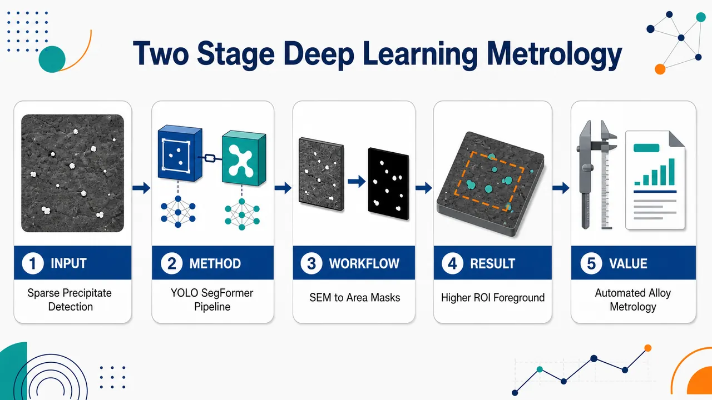
研究问题如何在仅有24张SEM图像的小样本条件下，自动、准确地识别铬基超合金中低面积占比、变对比度、受噪声干扰的B2–NiAl析出相，并测量其面积与尺寸分布。创新方法提出DT-SegNet两阶段深度神经网络：先用YOLOv5l在整幅SEM图像中快速定位析出相边界框，再将检测框扩张为含背景上下文的ROI，输入SegFormer进行像素级精细分割；核心Aha点是“先找目标、再精修边界”，用CNN提升小样本检测效率，用Transformer提升边缘分割精度。工作流程输入单通道SEM图像→统一缩放至1280×1280→YOLOv5l检测析出相位置并输出边界框与置信度→按置信度过滤误检→将边界框扩张约50%形成ROI→ROI缩放至512×512→SegFormer输出像素级析出相掩膜→计算析出相面积、位置、面积分数与等效半径。关键结果数据集包含24张SEM图像、2272个手工标注析出相；ROI显著提高前景比例，训练集析出相面积占比由9.69%升至23.21%，验证集由6.34%升至21.86%，测试集由9.73%升至25.64%；DT-SegNet在accuracy、precision、recall、F1-score等指标上显著优于Weka和ilastik，并比多种单阶段分割模型更适合稀疏小目标析出相。应用价值为Cr–NiAl铬基超合金提供自动化显微组织定量工具，可大幅减少人工测量析出相的时间，支持高通量热处理样品分析，并为析出相粗化速率、界面能、扩散系数、CALPHAD与ICME材料建模提供可靠数据基础。第一部分：核心概览 (Overview)
DT-SegNet 将 YOLOv5 目标检测与 SegFormer 语义分割串联，用于铬基超合金 SEM 图像中 B2–NiAl 析出相的自动识别、分割与面积测量。核心贡献在于：面向仅 24 张 SEM 图像、2272 个析出相的小样本材料数据，构建两阶段端到端流程，先以 CNN 检测提升数据效率，再以 Vision Transformer 分割提升边界精度。该方法针对传统阈值法、Weka、ilastik 在背景噪声、变对比度和大规模人工测量中的不足，提供了可用于高通量合金研发的自动化显微组织定量工具，在材料图像智能分析与 Cr-superalloy 析出相粗化研究之间建立了直接连接。
---
第二部分：结构化快速回顾
《Accurate identification and measurement of the precipitate area by two-stage deep neural networks in novel chromium-based alloys》（None，）
背景
高温合金性能强烈依赖显微组织，尤其是析出相的 体积分数、尺寸分布与形貌。Cr–NiAl 基铬基超合金是镍基超合金的潜在替代材料，但其 B2–NiAl 析出相粗化动力学和结构—性能关系仍不清楚。传统 EM 图像处理依赖固定阈值，面对背景噪声和变对比度图像鲁棒性不足，且人工测量耗时。
方法
提出 DT-SegNet 两阶段深度学习框架：第一阶段使用 YOLOv5l 在 1280 × 1280 px 输入图像上检测析出相边界框；第二阶段将检测框扩大并裁剪为 ROI，再输入 SegFormer 对析出相进行像素级分割。数据来自 4 类 Cr-superalloy 样品，共 24 张 SEM 图像，按 6:2:2 划分训练、验证和测试集。
结果
数据集包含训练集 15 张图像、1674 个析出相，验证集 4 张、355 个析出相，测试集 5 张、243 个析出相。ROI 中析出相面积占比显著高于原图：训练集由 9.69% 提升至 23.21%，验证集由 6.34% 提升至 21.86%，测试集由 9.73% 提升至 25.64%。DT-SegNet 被设计为在 accuracy、precision、recall、F1-score 等指标上优于 Weka 和 ilastik。
讨论
两阶段设计使检测阶段利用 CNN 的小样本训练效率，分割阶段利用 Transformer 的多尺度特征表达和边缘感知能力。检测框膨胀操作为分割网络提供更多背景上下文，缓解误检和变对比度问题。相比单阶段分割，先定位再精分割更适合析出相面积占比较低、目标尺度差异明显的 SEM 图像。
局限
数据集规模很小，仅 N = 24 张 SEM 图像；Weka 和 ilastik 由于在线训练与有限 GPU 支持，无法直接使用完整像素级标注，需要重新标注，可能降低对比公平性。模型主要面向球形或近球形析出相，复杂形貌、跨材料体系泛化能力仍需进一步验证。
结论
DT-SegNet 为 Cr-superalloy 中析出相识别、分割和面积测量提供了自动化方案，可用于高通量热处理样品的显微组织定量分析，并为后续粗化速率、界面能、扩散系数和 CALPHAD/ICME 物理建模提供数据基础。
---
第三部分：逐章节冷凝解析 (Section-by-Section Condensing)
Abstract
Microstructure controls extreme-environment material performance
高温极端环境材料的服役性能由显微组织支撑，尤其是 纳米到微米级强化相的尺寸与空间分布。核心对象是 Cr-based superalloys 中强化析出相的定量识别。原文强调：*"The performance of advanced materials for extreme environments is underpinned by their microstructure, such as the size and distribution of nano- to micro-sized reinforcing phase(s)."*
Chromium-based superalloys require precipitate quantification
铬基超合金被定位为传统 face-centred-cubic superalloys 的替代方案，应用场景包括 Concentrated Solar Power。其开发依赖 EM 图像中析出相 体积分数与尺寸分布的测定，因为这些指标控制热稳定性和力学性能。原文指出：*"Their development requires the determination of precipitate volume fraction and size distribution using Electron Microscopy (EM), as these properties are crucial for the thermal stability and mechanical properties of chromium superalloys."*
Threshold-based EM processing lacks robustness
传统 EM 图像处理依赖固定对比度阈值，面对背景噪声和不同材料体系时泛化性弱，并且大数据集上的人工测量成本极高。原文表述为：*"Traditional approaches to EM image processing utilise filtering with a fixed contrast threshold, which leads to weak robustness to background noise and poor generalisability to different materials."* 以及 *"It also requires an enormous amount of time for manual object measurements on large datasets."*
DT-SegNet combines YOLOv5 and SegFormer
DT-SegNet 是端到端两阶段深度学习流程，第一阶段使用 YOLOv5 做目标检测，第二阶段使用 SegFormer 做分割。该架构同时利用 CNN 检测训练效率和 Vision Transformer 分割精度。原文给出核心设计：*"based on YOLO v5 and SegFormer structures, this study proposes an end-to-end, two-stage deep learning scheme, DT-SegNet, to perform object detection and segmentation for EM images."* 其优势是：*"benefit from the training efficiency of Convolutional Neural Networks at the detection stage ... and the accuracy of the Vision Transformer at the segmentation stage."*
Performance exceeds Weka and ilastik
实验比较指标包括 accuracy、precision、recall、F1-score。DT-SegNet 显著优于 Weka 与 ilastik。原文声称：*"Extensive numerical experiments demonstrate that the proposed DT-SegNet significantly outperforms the state-of-the-art segmentation tools offered by Weka and ilastik regarding a large number of metrics, including accuracy, precision, recall and F1-score."*
---
1 Introduction
ICME and MGI motivate high-throughput microstructure analysis
现代冶金研发依赖 显微组织—成分表征、性能评价和数值工具的整合，背景框架包括 Integrated Computational Materials Engineering (ICME) 与 Materials Genome Initiative (MGI)。这种整合不仅服务合金设计，也要求高通量实验图像处理能力。原文表述：*"The integration of microstructural and chemical characterization, property evaluation, and numerical tools is essential in modern-day metallurgy to enhance the design, development, and deployment of alloys."* 以及 *"This integration is facilitated using the Integrated Computational Materials Engineering (ICME) frameworks and the Materials Genome Initiative (MGI)."*
Learning-based materials modelling already supports CALPHAD
机器学习已经进入 CALPHAD、从头算建模、相边界识别和动力学建模，用于材料设计空间的高通量搜索。原文给出：*"learning-based approaches have been incorporated into the CALculation of PHAse Diagram (CALPHAD) models to enable the high-throughput calculations for ab initio modelling, phase boundary identification, and kinetics modelling."*
Secondary phases dominate engineering alloy behaviour
许多工程合金和新型合金中的 secondary phases 控制力学行为，因此其 体积分数、尺寸、形状是关键参数。原文指出：*"In the microstructure of many engineering alloys and novel alloys, secondary phases are known to be influential on mechanical behaviour."* 以及 *"The volume fraction, size and shape of secondary phases or particles in alloys are, therefore, important parameters."*
Accurate segmentation is essential for microstructure recognition
利用光学显微镜或更常用的 Electron Microscopy (EM) 可快速获得显微组织图像，但必须进行图像驱动的二相/颗粒信息提取。分割质量决定后续定量可靠性。原文明确：*"image-driven microstructure analysis is an essential step to obtain the information of second phases or particles."* 并强调：*"Accurate segmentation is thus of the utmost importance for microstructure recognition."*
Manual and global thresholding fail under varying contrast
材料科学中最常用的显微组织分割是手动阈值或全局阈值，例如 ImageJ，但对 multi-modal histogram images 和 TEM varying background contrast 不适用。原文写道：*"The most used microstructure segmentation method in material science is the manual selection of thresholds, such as using the most popular free software ImageJ"*，同时指出其问题：*"it is not suitable for many cases, especially subtle thresholds for multi-modal histogram images, in other words, images with varying background contrast."*
Classical computer vision methods remain noise-sensitive
边缘检测、区域分割、偏微分方程和 watershed segmentation 等方法依赖人工设计特征，虽可提高准确性，但对噪声敏感且难以用于大规模数据。原文概括：*"they all present limitations such as sensitivity to noise and impractical use for a large amount of data."*
Machine learning segmentation has expanded across domains
机器学习分割已广泛用于 cell tracking、brain tumour segmentation、autonomous driving、geographic segmentation，并进入材料科学。原文列举：*"machine-learning-based segmentation techniques have been widely applied not only to cell tracking, brain tumour segmentation, autonomous driving, and geographic segmentation, but also to material science."*
Prior material microstructure models include SVM, FCNN, DCNN, DeepLab, DefectSegNet and Mask-RCNN
已有材料显微组织分析方法包括：DeCost 的 bag of visual features + SVM，Azimi 的 FCNN 低碳钢显微组织分类，DeCost 的 DCNN 复杂组织分割，Ma 的 DeepLab 改进，Roberts 的 DefectSegNet，Cohn 的 Mask-RCNN 金属粉末实例分割。原文包括：*"DeCost et al. adopted the 'bag of visual features' image representation for an Support Vector Machine (SVM) model to perform microstructure classification."* 以及 *"Inspired by U-Net, Roberts et al. proposed the CNN-based DefectSegNet to perform crystallographic defects segmentation in structural alloys."*
Precipitate analysis using machine learning is an emerging topic
析出相分析正成为机器学习材料图像的重要应用方向，包括 γ′ 析出相粗化描述符识别、U-Net 形貌参数预测、δ 相检测与面积估计、ilastik/Weka 像素分类。原文总结：*"Recently, the segmentation for precipitate analysis using the machine learning tool has been attracting increasing attention."* 并评价：*"This emerging topic is attracting increasing attention, and it holds promise for precipitate analysis."*
Previous precipitate models did not use state-of-the-art architectures
已有模型虽取得成功，但算法并非最新，YOLO 和 SegFormer 有望提高效率和准确性。原文直接指出：*"Although previous models yielded successful segmentation results, the algorithms used in these models were not state-of-the-art."* 接着提出：*"We propose the implementation of state-of-the-art models like the You Only Look Once (YOLO) detection model and SegFormer segmentation model, which will allow for higher efficiency and accuracy in segmentation."*
Precipitate size measurement is required for ageing and coarsening kinetics
析出相尺寸随时效热处理演化，决定粗化速率；因此高效准确测量尺寸是研究热处理响应的前提。原文强调：*"Efficient and accurate measurement of precipitate size is imperative for the analysis of precipitate size evolution during the ageing heat treatment, which determines their coarsening rate."*
Regular precipitate shape enables general training datasets
由于析出相通常呈规则形状，如球形或立方体，可从已有材料样品构建多条件显微组织通用数据集，用于训练能迁移到新数据的深度学习模型。原文表述：*"Given that precipitates have, in general, a regular shape, e.g. spherical or cuboidal, a general dataset containing different conditions of microstructures can be created from existing samples of materials to train a deep learning model."*
High-temperature superalloys depend on precipitation strengthening
镍基和钴基 fcc 超合金通过热处理产生析出相强化，析出相体积分数和尺寸分布决定强度与抗蠕变性能。原文写道：*"High-temperature materials, including face-centred-cubic (fcc) nickel-based and cobalt-based superalloys, undergo precipitation during heat treatment, leading to precipitate strengthening."* 以及 *"the precipitate volume fraction and size distribution after different heat treatments are crucial for the strength and creep resistance of such alloys."*
Cr-superalloys are promising alternatives to nickel-based superalloys
Cr-superalloys 主要由 A2 无序 bcc Cr 基体和 B2 有序 bcc NiAl 金属间化合物组成，被视为镍基超合金和先进奥氏体钢在高温应用中的替代材料。原文定义：*"Cr-superalloys, principally Chromium (Cr)–Nickel–Aluminide (NiAl) alloys consisting of a disordered bcc Cr matrix with an A2 structure strengthened by ordered bcc NiAl intermetallics with a B2 structure, have been identified as potential alternatives to nickel-based superalloys and advanced austenitic steels for high-temperature applications."*
Fe additions target advanced concentrated solar power applications
含 Fe 的 Cr-superalloys 在欧洲项目 COMPASsCO2 中进一步开发，面向先进 Concentrated Solar Power。原文说明：*"Cr-superalloys with Iron (Fe) additions have been further developed in the framework of a European project COMPASsCO2 for advanced Concentrated Solar Power applications."*
Chromium provides melting-point, cost, oxidation and density advantages
Cr 的材料优势包括 高熔点、低成本、良好抗氧化性、低密度。原文简洁表述：*"Cr offers advantages such as a high melting point, low cost, good oxidation resistance, and low mass density."*
Cr–NiAl coarsening kinetics remain unknown
Cr–NiAl 合金仍是新兴材料，B2 析出相粗化动力学尚未建立。原文指出：*"Cr–NiAl alloys are a nascent class of materials, and their precipitate coarsening kinetics are yet to be investigated."*
B2 precipitate size and morphology control mechanical behaviour
NiAl 强化合金中 B2 析出相尺寸与形貌影响高屈服强度和抗蠕变性能。原文写道：*"The size of the B2 precipitates and their morphology are important for the mechanical behaviour of these NiAl-strengthened alloys, such as achieving a high yield strength or creep resistance."*
Coarsening data support physical parameters for CALPHAD and ICME
粗化速率研究可反推界面能、扩散系数等材料参数，并输入 CALPHAD 和 ICME 物理模型。原文表述：*"Studying the coarsening rate also contributes to the evaluation of material parameters of new alloys, such as interfacial energy and diffusion coefficients, which will be utilised in physical models for CALPHAD and ICME."*
Traditional coarsening measurement is laborious
计算粗化速率需要大量不同温度和时效时间样品的析出相尺寸测量，传统方法非常耗时。原文指出：*"calculating coarsening rates requires the measurement of precipitate size in numerous samples aged at various temperatures and ageing times, which is laborious through traditional methods."*
Four declared objectives define the paper contribution
四个目标分别为：制备多热处理 Cr-superalloys、开发两阶段 DNN DT-SegNet、测定析出相面积分数和尺寸分布、证明 F1-score 优于现有方法。原文列明：*"manufacture of Cr-superalloys with various heat treatments to produce an A2-B2 microstructure with B2–NiAl sizes varying from the nm to μm scale"*；*"development of an end-to-end object segmentation model using a two-stage Deep Neural Network (DNN) DT-SegNet"*；*"application of the DT-SegNet to determine the area fraction and size distribution of precipitates in Cr-superalloys"*；*"demonstration that the developed DT-SegNet can outperform the state-of-the-art segmentation methods in terms of F1-score."*
---
2 Material and methodology
2.1 Studied materials
Four Cr-superalloy conditions were investigated
样品包含 4 类合金/热处理条件：Cr–5Ni–5Al，Cr–5Ni–5Al–10Fe，以及两种 Cr–10Ni–10Al–20Fe 时效条件。表 1 中对应标签为 5-5、5-5-10、10-10-20-4h、10-10-20-100h。原文表头说明：*"Cr-superalloy sample compositions in atomic percent (at.%) and their respective heat treatment conditions."*
Heat treatments combine homogenisation and ageing
热处理包括 1400°C 均匀化 20 h，以及不同温度/时间时效：1200°C 4 h、1000°C 100 h、1200°C 100 h。表注给出：*"H: Homogenisation at 1400°C for 20 hours"*；*"A1: Ageing at 1200°C for 4 hours"*；*"A2: Ageing at 1000°C for 100 hours"*；*"A3: Ageing at 1200°C for 100 hours."*
All samples exhibit A2/B2 matrix–precipitate microstructures
所有样品预期相组成为 A2/B2，SEM 观察类型为 Matrix - precipitates。表中对每个样品均标示：*"Phases Expected SEM Observation"* 下为 *"A2/B2 Matrix - precipitates."*
B2–NiAl precipitates are spherical after ageing
时效后所有样品在 SEM 中均可观察到 B2–NiAl spherical precipitates。原文陈述：*"After ageing, B2–NiAl spherical precipitates are observed in the Scanning Electron Microscope (SEM) in all samples."*
Precipitate size spans nano-scale to micro-scale
析出相尺寸随时效条件变化，从纳米尺度到微米尺度。原文为：*"The size of precipitates varies from nano-scale to micro-scale depending on ageing conditions."*
Contrast varies with polishing and precipitate size
析出相与基体相之间的对比度会因抛光效应和析出相尺寸不同而变化，这构成固定阈值方法的挑战。原文指出：*"The contrast of the precipitates and matrix phases also varies due to the polishing effect on different precipitate sizes."*
Six SEM images per sample were used for training
每个样品采集 6 张 SEM 图像，放大倍数选择为能包含几十个析出相，并用于模型训练。4 类样品合计 24 张 SEM 图像。原文写道：*"Six SEM images, taken at a suitable magnification to contain tens of precipitates, are captured for each sample and used to train the model."*
Manual labelling defines precipitate boundaries for supervised learning
训练图像中的析出相及其边界经过仔细识别和人工标注。原文表述：*"precipitates with their boundaries were carefully identified and manually labelled for the training of the models."*
Equivalent radius is derived from measured area
大多数析出相近似球形，因此尺寸用等效半径计算，公式为 r = √(A/π)，其中 A 是测得面积。原文为：*"Since most precipitates had a spherical morphology, their sizes were approximately calculated as a function of their radius r = √A/π with A being the measured area."*
---
2.2 The proposed model: DT-SegNet
DT-SegNet is an end-to-end detection–segmentation framework
DT-SegNet 由 Detection stage 和 Segmentation stage 组成，专门用于 EM 图像中析出相识别和测量。原文定义：*"we proposed a novel end-to-end two-stage deep learning scheme combining a Detection (DT) stage and a Segmentation stage Network, termed as DT-SegNet."*
The two stages use YOLOv5 and SegFormer
第一阶段基于 YOLOv5 检测析出相，第二阶段基于 SegFormer 分割析出相。原文说明：*"the network is designed for precipitate identification and measurement in two stages: a detection stage based on YOLO v5 and a segmentation stage based on SegFormer."*
YOLO accelerates detection through grid-region prediction
YOLO 将图像划分为小网格区域，并基于局部权重预测边界框和置信度，从而提高速度和检测精度。原文描述：*"The YOLO model is an end-to-end object-detection model which processes the images in the form of small grid regions."* 以及 *"Calculating the target bounding boxes and confidences based on weights in smaller regions is crucial to accelerating and enhancing detection accuracy."*
SegFormer combines hierarchical Transformer and lightweight MLP decoding
SegFormer 包括 hierarchical Transformer Encoder backbone、all-MLP decoder neck 和 MLP segmentation head，能够多尺度提取特征并降低计算成本。原文写道：*"The SegFormer is a segmentation network consisting of a hierarchical Transformer Encoder backbone, an all-Multi-Layer Perceptron (MLP) decoder neck, and an MLP segmentation head."* 其优势是：*"effective multi-scale extraction and utilisation of critical features without using complex decoders to improve performance and reduce computational costs."*
Detection input is resized to 1280 × 1280 px
检测阶段输入 EM 图像统一调整为 1280 px × 1280 px。原文给出：*"In this stage, the input shape of EM images is resized to 1280px × 1280px."*
Data augmentation addresses limited training data
检测阶段使用 random scaling、random flipping、mosaic、normalisation 等增强，以缓解小样本导致的泛化不足。原文表述：*"Appropriate data augmentations (such as random scaling, random flipping, mosaic and normalisation) are applied to alleviate the lack of generalisation caused by limited training data."*
Confidence threshold filters false detections
第二阶段先根据置信度阈值过滤候选区域，减少背景噪声导致的误检。原文写道：*"regions are filtered by a hyper-parameter of the confidence threshold to remove falsely detected regions caused by background noises."*
Bounding boxes are dilated by 50% before segmentation
检测框被扩大 50%，以包含背景信息，再裁剪成 ROI 输入 SegFormer。原文描述：*"To include background information, detected regions are then dilated by 50% of the original size."* 以及 *"the new region with extra background information is referred to as the Region of Interest (ROI)."*
SegFormer outputs pixel-wise precipitate masks
SegFormer 对 ROI 执行语义分割，输出每个析出相的像素级掩膜，最终生成析出相区域、位置和面积信息。原文指出：*"The segmentation model then performs the semantic segmentation task, producing a pixel-wise mask of each precipitate."* 以及 *"a list of all detected precipitates with their regions, positions and masks can be used to perform precipitate area calculations and other downstream tasks."*
---
2.2.1 Detection stage
Two-stage region proposal methods are computationally heavier
传统 Mask R-CNN 等区域建议网络先生成边界框再分类，计算成本更高且全局特征感知不足。原文指出：*"Traditional region proposal neural networks, like Mask R-CNN and Convolutional Neural Network (CNN), use bounding boxes and classify detected objects in two stages, resulting in a more extensive computation cost and less awareness of global features."*
Sliding-window approaches require predefined windows
传统多尺度滑窗需要预定义窗口数量，固定模板可能导致区域检测不满意。原文写道：*"as they scan the whole image with a multi-scale sliding window, the number of windows needs to be pre-defined."* 以及 *"Unsatisfactory regions may be detected if only a fixed number of window templates are applied."*
YOLO directly regresses confidence and bounding boxes
YOLO 作为 one-stage 模型，通过联合网格回归直接预测置信度和边界框，因此速度极快并能学习更通用的目标特征。原文表述：*"the one-stage YOLO model directly uses joint grid regression to predict both the confidence and the bounding box, which is extremely fast and can learn more generic features of the target object."*
YOLOv5 improves implementation and speed
YOLOv5 是首个使用 PyTorch 而非 Darknet 的 YOLO 实现，具备自适应 anchor boxes、6×6 Conv2d、SPPF 等设计。原文写道：*"YOLO v5 is the first YOLO implementation using the PyTorch framework instead of the Darknet framework."* 以及 *"Its novel design includes adaptive anchor boxes, allowing the network to select the most optimal anchor box that fits the dataset."*
YOLOv5 architecture contains CSP-Darknet53, SPPF, PANet and three heads
YOLOv5 包括 CSP-Darknet53 backbone、SPPF and PANet neck、以及 three YOLOv3 heads。原文说明：*"YOLO v5 is a CNN-based one-stage object detection network consisting of a backbone of CSP-Darknet53, a neck of SPPF and Path Aggregation Network (PANet), and three YOLO v3 heads."*
YOLOv5l with 1280 × 1280 input was selected
在多网络测试后，检测阶段选择 pre-trained YOLOv5l，输入尺寸为 1280 px × 1280 px。原文给出：*"After comparing each network, the backbone based on the pre-trained YOLOv5l model with an input size of 1280px × 1280px is selected for the detection stage."*
Detection input and output are explicitly defined
检测阶段输入为单通道 2D 图像；输出为每个析出相的 anchor box 列表，YOLO 格式为 x-centre, y-centre, width, height, confidence。原文表述：*"The input of the detection stage is a single-channel 2D image."* 以及 *"Each anchor box, with corresponding confidence, is represented in the YOLO format (x-centre, y-centre, width, height, and confidence)."*
Mosaic augmentation improves small-object detection
YOLOv5 使用 Mosaic 和 Mixup 等增强，其中 Mosaic 将 4 张训练图像拼接，使模型学习普通上下文之外的目标特征。原文写道：*"Mosaic ... and Mixup ... significantly improve the detection accuracy of small objects."* 以及 *"four training images are concatenated to allow object detection outside their ordinary context."*
Mixup is excluded because it damages precipitate edge cues
析出相信息集中在边缘及内外部差异上，Mixup 会损失这些关键属性，因此未使用。原文明确：*"since the information of precipitates lies on their edge and internal-external difference, the mixup operation causes a loss of these essential attributes."* 因此：*"the mixup operation is excluded from our data augmentation method set."*
---
2.2.2 Segmentation stage
SegFormer segmentation stage uses four Transformer modules
分割阶段网络由 4 个 Transformer 模块编码器、MLP decoder neck 和 MLP segmentation head 组成。原文描述：*"SegFormer consists of an Encoder of four Transformer modules as the backbone, an MLP decoder as the neck and an MLP segmentation head."*
Backbone extracts both coarse- and fine-grained features
4 个 Transformer 模块提取粗粒度和细粒度特征，MLP neck 融合特征，head 输出语义分割掩膜。原文指出：*"Four Transformer modules’ backbone extracts coarse-grained and fine-grained features."* 以及 *"the neck fuses the extracted features and passes them to the segmentation head so that the head can make a final prediction of the semantic segmentation mask."*
SegFormer captures edges and internal textures
DT-SegNet 中 SegFormer 可捕获析出相 边缘、内部纹理等关键特征，提升边缘像素分类精度并增强抗噪性。原文写道：*"essential features such as edges and internal textures are captured and generalised, enabling more precise pixel classification and segmentation on edges with good noise resistance."*
Vision Transformer can outperform traditional CNNs but has cost issues
ViT 直接用于图像时表现优于传统 CNN，但柱状结构计算成本高，且输出固定分辨率特征图可能影响分割精度。原文表述：*"Research on Vision Transformer (ViT) has suggested that a Transformer directly applied to images performs significantly better than traditional CNN networks."* 同时指出：*"the columnar structure of such a model makes it computationally expensive"*，以及 *"ViT only outputs feature maps of a fixed resolution, which can cause inaccuracy in the segmentation task."*
SegFormer reduces computational burden with lightweight MLP decoders
SegFormer 通过 Transformer 与轻量 MLP decoder 结合，在保持合理计算成本的同时取得性能提升。原文说明：*"SegFormer proposed a simple and efficient design that unifies the Transformer module with lightweight MLP decoders."* 以及 *"This design achieves excellent performance gains while maintaining a reasonable computation cost."*
Dilation provides edge and background context
析出相虽然形状、内部纹理和边缘亮度不同，但多数可以通过边缘检测。分割前扩张图像区域有助于提取边缘并获取背景上下文。原文指出：*"Although the shape, internal texture, and edge brightness vary between precipitates, most can be detected by their edges."* 因此：*"fully extracting the edge and perceiving more background information can help distinguish edges from the background."*
ROI is resized to 512 × 512 px for SegFormer
每个检测框边界在宽高方向扩大，再调整为 512 px × 512 px 输入分割网络。原文给出：*"the boundary of each target anchor box is expanded twice in both width and height, then resized to 512px × 512px."* 扩张后的区域定义为 ROI：*"The dilated region with extra background information is named ROI."*
---
3 Dataset
The dataset contains 24 SEM two-dimensional images
实验数据集为研究中生成的 N = 24 张 SEM 二维图像。原文明确：*"This article conducts experiments on the dataset generated in this study, which contains N = 24 SEM two-dimensional images."*
Hold-out split uses a 6:2:2 ratio
数据按 训练集:验证集:测试集 = 6:2:2 划分，并人工保证相似图像特征分布到不同集合。原文说明：*"The data is split into training, validation and test sets (in a 6:2:2 ratio) using the hold-out method to ensure even distribution in each set."* 以及 *"images with similar image features were manually assigned into different sets."*
Dataset statistics show 2272 labelled precipitates
三部分总计析出相数为 1674 + 355 + 243 = 2272。训练集 15 张图像、1674 个析出相；验证集 4 张、355 个析出相；测试集 5 张、243 个析出相。表 2 给出：*"Training 15 1674"*，*"Validation 4 355"*，*"Test 5 243."*
ROI increases foreground precipitate area ratio
ROI 中析出相面积占比显著高于原图，有利于缓解类别不平衡。训练集原图 9.69%、ROI 23.21%；验证集原图 6.34%、ROI 21.86%；测试集原图 9.73%、ROI 25.64%。表 2 说明：*"The precipitate area ratio in ROI was significantly higher than in the raw input image."*
Most precipitates occupy less than 0.2% of image area
三个数据集中多数析出相面积占总图像面积低于 0.2%，说明目标尺度小且存在强烈前景稀疏性。原文指出：*"in all the datasets, most of the precipitate area percentage is under 0.2%."* 图注也写道：*"All three datasets have the most precipitates with areas under 0.2% of the total area."*
Training set and test set include large-scale aberrant or irregular precipitates
训练集中有少量相对尺度大于 0.2% 的异常析出相；测试集中多数低于 0.2%，但包含较大不规则样本。原文说明：*"the training set has few aberrant precipitates with relative scales larger than 0.2%."* 以及 *"The test set contains a set of images where most of the precipitate scales are below 0.2%, whereas some irregular samples with large scales exist."*
Ground truth production follows three stages
标注流程包括：使用 PaddleSeg 交互式标注；用 Adobe Photoshop 手动细化形状与边界；用 flood-filling algorithm 转换为 YOLO anchor boxes；最后用 LabelImg 修正重叠框。原文为：*"A three-phase process is followed to produce ground truth for this dataset."* 具体包括：*"images are labelled interactively using PaddleSeg, and then manually refined using Adobe Photoshop."*；*"segmentation labels are converted into YOLO-format anchor boxes using the flood-filling algorithm."*；*"The final stage comprises a precipitate region correcting step using LabelImg."*
Overlapping anchor boxes are separated manually
LabelImg 修正阶段将重叠 anchor boxes 分离为单个对象框，提升检测标签质量。原文写道：*"In this process, overlapping anchor boxes are separated into individual anchor boxes."*
---
4 Results and discussion
Evaluation covers model configuration, comparisons and visualisation
结果部分包括三类实验：YOLOv5 与 SegFormer 配置选择；与 Weka、ilastik 和四种端到端深度分割模型比较；对 4 张测试图像进行可视化分析。原文概括：*"this article first experiments with multiple sets of settings on both the YOLOv5 network and the SegFormer network to find the most optimised backbone configuration."* 以及 *"selects five representative methods implemented in two software and four state-of-the-art CNN models"*，最后 *"performs a visualisation analysis on four test images."*
---
4.1 Implementation details
Implementation uses PyTorch YOLOv5 and PaddleSeg
DT-SegNet 基于 official PyTorch YOLOv5 v6.1 和 PaddleSeg v2.7 实现，后者运行于 PaddlePaddle 框架。原文说明：*"This model is implemented based on the official PyTorch YOLOv5 v6.1 implementation and PaddleSeg v2.7 using the PaddlePaddle framework."*
Detection training uses 300 minimum epochs and early stopping
检测阶段自动检测 batch size，训练最少 300 epochs，early-stopping patience 为 150 epochs，每个 epoch 保存 checkpoint。原文写道：*"At the detection stage, auto-detection of the batch size is used."* 以及 *"Minimum epochs of 300 are performed with an early-stopping regularisation of 150-epoch patience."*
Detection loss and optimiser are specified
检测阶段使用包含 objectness score、class probability score、bounding box regression score 的复合损失函数；优化器为 SGD，学习率 0.01；学习率调度器为 LambdaLR。原文给出：*"A compound cost function of objectness score, class probability score, and bounding box regression score, a Stochastic Gradient Descent (SGD) optimiser of 0.01 learning rate and a learning rate scheduler of LambdaLR are used."*
Detection augmentation includes mosaic and photometric transforms
检测阶段增强包括 mosaic、copy-paste、random scaling、flipping、hue、saturation adjustment、normalisation。原文列出：*"data augmentation of mosaic, copy-paste, random scaling, flipping, hue, saturation adjustment, and normalisation processes are used."*
COCO 2017 pretraining compensates small dataset size
检测网络使用 COCO 2017 官方预训练模型，以获得更通用目标特征。COCO 包含 80 类，如 human、bicycle、traffic light、bird、food、book。原文说明：*"Due to the limitation in the dataset scale, the official pre-trained model on the Common Objects in Context (COCO) 2017 dataset is used for the model to learn more general object features."* 以及 *"This dataset includes 80 classes of images with labels such as human, bicycle, traffic light, bird, food, and book."*
Segmentation training uses 80000 epochs and batch size 1
分割阶段 batch size 为 1，最大训练 80000 epochs，checkpoint 间隔 200。原文给出：*"At the segmentation stage, a batch size of 1, a maximum of 80000 training epochs, and a checkpoint save interval of 200 are used."*
Segmentation optimisation uses CrossEntropyLoss and AdamW
SegFormer 分割训练采用 CrossEntropyLoss、AdamW，参数为 β1 = 0.9、β2 = 0.999、weight decay = 0.01，学习率调度为 PolynomialDecay，学习率 0.00006。原文为：*"CrossEntropyLoss cost function, the AdamW optimiser (β1 = 0.9, β2 = 0.999, weight decay = 0.01) and a PolynomialDecay learning rate scheduler with learning rate 0.00006 are adopted."*
Segmentation uses ImageNet-1K pretrained MixVisionTransformer
分割阶段使用 ImageNet-1K 预训练的 MixVisionTransformer。原文写道：*"Pretrained MixVisionTransformer models on ImageNet-1K dataset are used."*
Varying contrast is handled by normalisation and encoder learning
变对比度指前景与背景像素差异在图像间变化。传统固定阈值或 Gaussian window cross-correlation 方法难以处理。该方法通过归一化扩大类别像素间隔，再由编码器学习不同对比度下的检测和分割。原文解释：*"The 'varying contrast' means the difference between foreground and background pixels varies."* 以及 *"Traditional methods that apply a constant threshold or a cross-correlation with a Gaussian window ... struggle to handle this problem well."* 对策为：*"we used normalisation in the data pre-processing pipeline to maximise the margin of different classes of pixels."*
---
4.2 Baseline approaches
Baselines include Weka, ilastik and deep segmentation networks
对比方法包括 Weka 中 FRF、MLP，ilastik 中 LDA、RF、MLP/SVC，以及 U-Net、UNet 3+、DeepLabV3+、SegFormer。原文说明：*"several widely utilised machine learning methodologies, namely, Fast Random Forest (FRF) and MLP in the Weka software, and Linear Discriminant Analysis (LDA), Random Forest (RF), and MLP in ilastik software, are deemed as foundational models for comparison purposes."* 还包括：*"U-Net, UNet 3+, DeepLabV3+ and SegFormer."*
RF and FRF are decision-tree ensemble methods
RF 通过多个决策树集成提升泛化；FRF 是加速和节省内存的 Random Forest 变体。原文指出：*"RF is a decision-tree-based learning method."* 以及 *"FRF is similar to the standard RF algorithm, but with some modifications to accelerate its speed and reduce memory usage."*
MLP and LDA represent neural and linear statistical baselines
MLP 是多层全连接神经网络，通过反向传播调整权重；LDA 寻找最大化类间分离的线性组合。原文说明：*"MLP is a type of neural network composed of multiple layers of fully-connected artificial neurons."* 以及 *"LDA is a statistical technique that finds a linear combination of input features that maximises the separation between different classes."*
SVC uses soft-margin classification
SVC 使用正则化参数 C 平衡间隔最大化和分类错误最小化。原文写道：*"Support Vector Machines C-Support (SVC) is a soft-margin classification algorithm using a regularisation parameter of C to control the balance between maximising the margin and minimising the classification error."*
U-Net preserves spatial resolution via skip connections
U-Net 由收缩路径、扩张路径和 skip connections 组成，可实现高精度并保留空间分辨率。原文描述：*"It consists of a contraction path, an expansion path, and skip connections that allow the expanding path to use information from the contracting path."* 以及 *"This enables it to achieve high accuracy and preserve the original spatial resolution."*
UNet 3+ adds dense skip connections and deep supervision
UNet 3+ 在 U-Net 基础上增加更多编码器/解码器层、dense skip connections 和 deep supervisions。原文写道：*"By adding more encoder and decoder layers and introducing dense skip connections and deep supervisions, it has achieved state-of-the-art performance on several medical image segmentation benchmarks."*
DeepLabV3+ captures multi-scale context with atrous spatial pyramid pooling
DeepLabV3+ 使用 modified atrous spatial pyramid pooling 捕获多尺度上下文，并用 decoder 输出像素级预测。原文说明：*"DeepLabV3+ is a CNN model that uses a modified atrous spatial pyramid pooling module to capture contextual information over multiple scales and uses a decoder module to produce pixel-wise predictions."*
Weka configuration uses specific Gaussian and structural features
Weka 版本为 3.3.2，Fiji ImageJ 1.53t；Gaussian filter σ 为 1.0、2.0、4.0、8.0、16.00；特征包括 Gaussian blur、Sobel filter、Hessian、Difference of Gaussians、membrane projections，后者 kernel size 为 19 × 19。原文给出：*"Weka trainable segmentation version 3.3.2 with Fiji ImageJ 1.53t is used."* 以及 *"the default set of standard deviation σ ... 1.0, 2.0, 4.0, 8.0, and 16.00."*
Weka FRF and MLP hyperparameters are specified
FRF 使用 unlimited max depth、输出两位小数、随机选择 2 个属性、生成 200 trees。MLP 使用 batch size 10000、learning rate 0.3、momentum 0.2、validation size 20、threshold 20。原文包括：*"the FRF parameter of unlimited max depth ... two attributes in the random selection is used to generate 200 trees."* 以及 *"the MLP parameter settings of a batch size of 10000, disabled decay, a learning rate of 0.3, momentum of 0.2..."*
Ilastik uses default parameters and seven sigma scales
ilastik 版本为 1.4.0rc6，由于无调参接口，参数使用默认值；σ 为 0.30、0.70、1.00、1.60、3.50、5.00、10.00。原文写道：*"In this study, ilastik version 1.4.0rc6 is used."* 以及 *"As ilastik does not provide an interface to tune parameters, all parameters are set as the default value."*
Single-stage deep models are trained in PaddleSeg
U-Net、UNet 3+、DeepLabV3+、SegFormer 均用 PaddleSeg v2.7 训练和推理，checkpoint 间隔 100。原文说明：*"Four single-stage segmentation models are trained and inferred using PaddleSeg v2.7 on the PaddlePaddle framework, with a checkpoint save interval of 100."*
Deep model training settings vary by architecture
U-Net：batch size 4、最大 40000 epochs、无预训练、deconvolution disabled。UNet 3+：batch size 2、最大 40000 epochs、无预训练、batch normalisation enabled、classification-guided module disabled、deep supervision disabled。DeepLabV3+：batch size 2、最大 80000 epochs、ImageNet-1K 预训练 ResNet50ᵥd、dilation rate (1,12,24,36)。SegFormer B0/B1：batch size 1、最大 80000 epochs。原文逐项给出：*"U-Net is trained with a batch size of 4, a maximum of 40000 training epochs..."*；*"DeepLabV3+ is trained with a batch size of 2, a maximum of 80000 training epochs, ImageNet-1K pre-trained ResNet50ᵥd backbone, a dilation rate of (1, 12, 24, 36)."*
---
4.3 Training environment
Deep models run on AMD EPYC and RTX A5000 server
DT-SegNet 和深度模型训练/推理硬件为 AMD EPYC 7543 CPU、NVIDIA RTX A5000、32 GB memory。软件环境为 Ubuntu 20.04、Python 3.8、CUDA 11.6、PyTorch 1.13.1、PaddlePaddle 2.4。原文列出：*"All models are trained and inferred on a server with AMD EPYC 7543 CPU, an NVIDIA RTX A5000 graphics card and 32 GB Memory."* 以及 *"Ubuntu 20.04 ... Python 3.8 ... CUDA 11.6 ... PyTorch 1.13.1 and PaddlePaddle 2.4."*
Weka and ilastik run on Windows desktop
Weka 和 ilastik 基线在 Windows 10 22H2 桌面机上训练，硬件为 Intel Core i5-9600KF CPU、NVIDIA Geforce GTX 1080 GPU、32 GB memory。原文说明：*"Two baseline methods, Weka and ilastik, are trained on a desktop machine running on Windows 10 version 22H2 with an Intel Core i5-9600KF CPU, NVIDIA Geforce GTX 1080 GPU and 32 GB Memory."*
Pixel-wise annotations exhaust Weka and ilastik resources
由于 Weka 和 ilastik 在线训练特性，直接使用像素级标注会耗尽系统资源并导致无响应。原文写道：*"Due to the online training nature of Weka trainable segmentation and ilastik pixel classification, directly using pixel-wise annotation exhausts system resources and results in the system not responding."*
Resource exhaustion comes from heavy feature generation and weak GPU support
两项原因分别是预处理阶段对大量像素生成计算密集型特征，以及 GPU 加速支持有限。原文指出：*"First, the software generates computationally-heavy features on extensive pixels at their pre-processing stage."* 以及 *"Second, there is limited support for GPU acceleration."*
Relabelling is repeated twice to make baselines feasible
为解决资源问题，所有图像在两个软件内置工具中重新标注；该过程可能降低标注精度，因此重复两次直到训练集析出相被正确分割。原文说明：*"all images in this dataset are relabelled using built-in tools inside both software packages to solve this problem."* 以及 *"the relabelling is repeated twice until all precipitates in the training set are segmented correctly."*
DT-SegNet model size is smaller than several classical baselines
DT-SegNet 训练模型大小为 198 MB，小于 LDA 257 MB、RF 256 MB、SVC 359 MB，远小于 FRF 1.19 GB。原文写道：*"The trained model of DT-SegNet has a size of 198MB, compared with 257MB of the LDA model, 256MB of the RF model, and 359MB of the SVC model."* 以及 *"the FRF model has a size of 1.19GB."*
Large FRF models hinder deployment
FRF 默认 unlimited max depth 导致模型巨大，难以部署到低内存和低 CPU 算力设备。原文指出：*"This can make it challenging to deploy such a big model on machines with less memory and CPU power."*
---
4.4 Metrics
Evaluation uses detection and segmentation metrics
性能比较同时覆盖检测和分割阶段，测试集上使用手工标签作为 ground truth。原文说明：*"a robust comparison of the proposed DT-SegNet against the state-of-the-art tools Weka and ilastik is performed using a wide range of detection and segmentation metrics."* 以及 *"Manually labelled data are used as ground truth."*
Detection metrics include precision, recall and mAP
检测阶段评估指标包括 precision、recall、mean Average Precision (mAP)。原文给出：*"Precision, recall, and mean Average Precision (mAP) are measured for the detection stage."*
Confusion categories are TP, TN, FP and FN
评价中定义 TP、TN、FP、FN。原文列明：*"TP = True positive, TN = True negative, FP = False positive, and FN = False negative are denoted."*
IoU quantifies bounding-box overlap
检测阶段首先定义预测框 P 和真实框 T，IoU 为二者交集面积与并集面积之比：IoU = |P ∩ T| / |P ∪ T|。原文公式为：*"IoU = |P ∩ T| / |P ∪ T|."*
---
第四部分：深度理解与语言支持 (Understanding & Nuance)
1. 术语解析
Precipitate area / area fraction
Precipitate area 指 SEM 二维图像中析出相被分割出的像素面积；area fraction 是析出相面积相对于图像总面积或 ROI 面积的比例。材料学中常用二维面积分数近似三维体积分数，前提是取样随机、截面代表性足够。语境中该指标服务于粗化动力学和强化相定量分析。
Coarsening kinetics
Coarsening kinetics 指析出相在时效过程中因界面能驱动而长大、数量减少的动力学规律。通常与 Ostwald ripening、扩散系数、界面能有关。文中强调 Cr–NiAl 析出相粗化规律尚未建立，因此需要自动化测量大量热处理样品的尺寸分布。
Varying contrast
Varying contrast 不是简单的“图像亮度不同”，而是指前景析出相与背景基体之间的灰度差异在不同图像、不同区域、不同析出相尺寸上发生变化。固定阈值方法假设前景/背景灰度边界稳定，因此会在这种情况下失败。
Region of Interest (ROI)
ROI 在这里不是人工选区，而是由 YOLOv5 检测框扩张后自动裁剪出的局部区域。其作用有两个：提高析出相在输入图像中的面积占比，缓解类别不平衡；提供析出相周围背景，使 SegFormer 更好地区分真实边缘与噪声。
End-to-end two-stage deep learning scheme
End-to-end 强调输入原始 EM 图像后，流程直接输出析出相位置、掩膜和面积测量结果；two-stage 则指任务被显式拆成检测和分割两个学习模块。这里的 two-stage 不等同于 Mask R-CNN 式 region proposal two-stage detector，而是检测网络与分割网络的串联系统。
---
2. 疑难查证
为什么先检测再分割比直接全图分割更适合这个任务
析出相在原图中的面积占比很低，训练集原图中仅 9.69% 像素属于析出相，验证集仅 6.34%，测试集 9.73%。如果直接全图分割，模型面对严重类别不平衡，大量背景像素会主导损失函数。检测框扩张成 ROI 后，析出相面积占比提高到 23.21%、21.86%、25.64%，前景信号明显增强。
因此，两阶段流程的本质是：先解决“在哪里”，再解决“边界在哪里”。YOLO 负责高召回定位候选析出相，SegFormer 在局部 ROI 内做更精细边界判断。
为什么检测框要膨胀，而不是直接裁剪检测框
若直接按检测框裁剪，析出相边缘可能被截断，且分割网络看不到足够背景，难以判断边缘灰度变化是析出相边界还是抛光/噪声造成的纹理变化。膨胀 ROI 将周围基体纳入输入，使网络能够比较“析出相内部—边缘—基体背景”的连续变化。对变对比度 SEM 图像，这种上下文信息尤其重要。
为什么 Mixup 不适合析出相分割
Mixup 将两张图像及标签做凸组合，在自然图像分类中可增强泛化。但析出相识别依赖微弱边缘、内部/外部灰度差异和形貌轮廓。图像混合会模糊边缘并破坏灰度对比，使模型学习到不真实的析出相边界。因此尽管 Mixup 常用于 YOLO，小目标检测中也常有效，但在该显微组织任务中反而可能损害关键信号。
为什么 COCO/ImageNet 预训练仍可能有用
COCO 和 ImageNet 与 SEM 图像语义完全不同，但低层特征如边缘、纹理、局部形状、多尺度结构仍可迁移。小样本材料图像数据只有 24 张 SEM 图像，从零训练容易过拟合。预训练模型提供通用视觉表征，再通过材料图像微调适配析出相目标。
---
第五部分：创新评估与关联 (Synthesis & Novelty)
1. 创新性判断
Two-stage detection–Transformer segmentation for precipitate metrology
近 2–5 年析出相图像分析中，常见路线是 U-Net、ResNet50、CNN 回归、Mask-RCNN 或软件像素分类工具。该工作的新颖点在于将 YOLOv5 检测与 SegFormer Transformer 分割组合成面向材料析出相测量的两阶段流程：
- YOLOv5 适合小样本、快速定位、多尺度目标检测；
- SegFormer 适合边缘与纹理复杂、背景对比度变化的像素级分割；
- ROI 扩张机制把材料图像的前景稀疏问题转化为局部高前景比例分割问题。
Addresses limitations not solved by thresholding and interactive software
传统 ImageJ 阈值法、Weka 和 ilastik 依赖灰度、纹理和手工特征，面对 SEM 图像中的 变对比度、背景噪声、抛光效应、目标尺度跨 nano-to-micro 时泛化较弱。DT-SegNet 解决的问题不是单纯“分割更准确”，而是把析出相定位、边界分割、面积计算和下游统计打通，降低大规模人工测量负担。
Novel application to chromium-based superalloys
Cr–NiAl/Fe–Cr–Ni–Al 铬基超合金是较新的高温候选材料体系，其 B2–NiAl 析出相粗化动力学尚未充分研究。已有机器学习析出相分析多集中在 Co-based、Ni-based 或 δ 相体系。该工作将深度学习显微组织定量直接用于 β–β′ chromium-based alloys / Cr-superalloys，为后续粗化速率、界面能、扩散参数、CALPHAD/ICME 建模提供数据基础。
Small-data strategy is practically important
材料显微数据标注昂贵，很多真实项目不可能获得数千张图像。该研究在 24 张 SEM 图像上训练并评估，通过预训练、Mosaic、ROI 扩张、两阶段任务拆分降低数据需求。这一点相对于依赖大型标注数据集的通用深度分割模型更贴近材料科研实际。
Measurement-oriented segmentation rather than visual segmentation only
目标不仅是输出好看的 mask，而是得到可用于材料学的 area fraction、size distribution、equivalent radius。等效半径计算 r = √(A/π) 将像素分割结果转化为析出相尺寸统计，使模型服务于时效粗化分析和材料性能解释。
-
09
📊 含图深析
📖 展开分析 + 配图
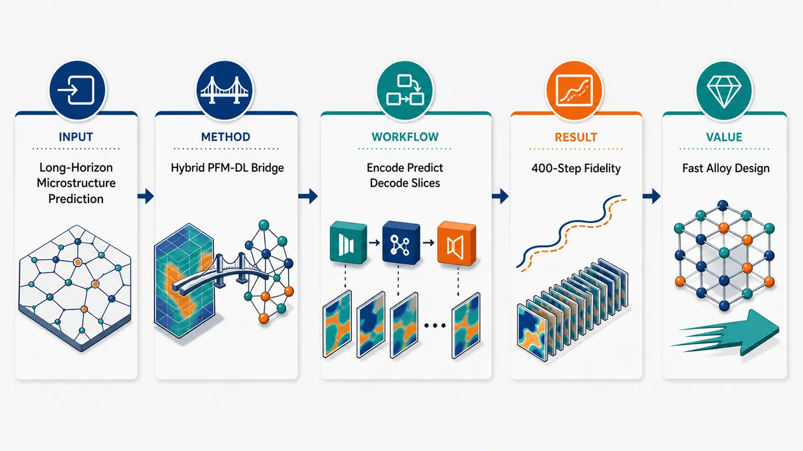
研究问题如何在三元合金旋节脱合金过程中，快速且可信地预测二维与三维微观组织的长时程演化；核心矛盾是相场模型物理准确但三维长时间模拟昂贵，纯深度学习速度快但容易丢失早期相分离的物理约束与拓扑真实性。创新方法提出“相场模型 + 注意力深度学习”的混合框架：用相场模型先捕捉早期快速旋节分解和三种相分离机制，再用降维自编码器压缩256×256×3微观组织图像，交给注意力增强ConvLSTM学习时空粗化规律；Aha点是把物理模拟只用于最敏感的早期阶段，把深度学习用于后期长时外推，并通过逐切片策略扩展到128×128×128×3三维体数据。工作流程输入三元合金初始成分场或早期微观组织；相场模型生成物理可信的早期二维/三维旋节分解结构；自编码器将高分辨率三通道微观组织压缩为低维潜在表征；注意力ConvLSTM在潜空间中追踪相区连接、界面迁移和粗化的时间序列；解码器重建未来微观组织图像；三维预测时将体数据按切片处理并组合为完整三维演化结果。关键结果模型能够在二维和三维三元旋节分解中识别早期出现的三种不同相分离机制；训练后的深度学习模型可保持最高400个时间步的预测保真度；框架还能推广到训练成分分布之外的合金成分，显示出对未知材料组成的外推能力。应用价值为复杂多组分合金的微观组织演化提供快速代理模拟工具，可显著降低长时间、三维相场计算成本；有助于高效筛选三元合金成分、预测双连续层级纳米多孔结构形成过程，并支持面向材料设计的快速结构—性能探索。第一部分：核心概览（Overview）
该研究构建了一个结合相场模型（PFM）与注意力增强深度学习架构的混合框架，用于预测三元合金中二维与三维微观组织演化，尤其面向三元旋节脱合金（ternary spinodal dealloying）过程。核心贡献在于：用 PFM 保证早期快速演化阶段的物理可信度，用深度学习高效外推后期粗化动力学；同时通过自编码器、注意力 ConvLSTM、逐切片三维扩展策略实现从 2D 到 3D 的微观组织时空预测。该工作定位于材料计算与机器学习交叉领域，目标是降低复杂多组分体系微观组织模拟的计算成本，并提升长时程预测能力。
---
第二部分：结构化快速回顾
《Bridging Phase-Field Model and Deep Learning for Predicting 2D and 3D Microstructure Evolution in Ternary Alloys》（None，）
背景
三元旋节脱合金是一种可用于制备三维双连续、层级纳米多孔材料的自组织方法。传统相场模型能够高保真描述微观组织演化，但在长时间、三维、多组分体系中计算成本较高。深度学习具备快速预测能力，但需要克服微观组织演化中的复杂时空相关性建模问题。
方法
提出 PFM-DL 混合框架，包含三部分：
- 降维自编码器，将高分辨率微观组织图像 256 × 256 × 3 压缩为紧凑表征；
- 注意力增强 ConvLSTM，学习微观组织演化中的复杂时空相关性；
- 逐切片策略，将模型扩展到三维体系 128 × 128 × 128 × 3。
结果
模型捕捉了二维和三维旋节分解早期出现的三种不同相分离机制。训练后的深度学习模型可维持最高 400 个时间步的预测保真度，并能推广到训练分布之外的合金成分。
讨论
混合模拟策略将 PFM 与 DL 的优势互补：PFM 负责早期快速演化的物理准确性，DL 负责后期粗化阶段的高效预测。该组合为复杂多组分体系中的微观组织预测提供了可扩展路径。
局限
可见信息未给出训练集规模、损失函数细节、优化器参数、误差指标、硬件成本、统计显著性或与其他模型的定量对比。泛化性虽被宣称覆盖训练分布外成分，但缺少具体成分范围和误差分布。
结论
PFM-DL 混合框架可在二维和三维三元合金微观组织演化预测中兼顾物理可信度与计算效率，为多组分材料体系的快速微观组织建模提供了方法学基础。
---
第三部分：逐章节冷凝解析（Section-by-Section Condensing）
仅提供了题名、作者、摘要和 arXiv 元数据；未提供完整 PDF 正文、章节标题、方法细节、图表、公式、实验设置、训练参数、评价指标和参考文献。以下严格依据可见摘要与元数据进行章节化冷凝；无法虚构原始章节标题、数值、P 值、模型超参数或图表结论。
---
Abstract
#### Hybrid PFM-DL framework targets ternary spinodal dealloying
研究对象是三元旋节脱合金，其材料学意义在于能够通过自组织过程制备复杂的三维双连续层级纳米多孔材料。方法核心是将相场模型（phase-field model, PFM）与注意力增强深度学习架构结合，形成混合预测框架。摘要明确写道：*"We develop a hybrid framework that integrates a phase-field model (PFM) with an attention-enhanced deep learning (DL) architecture to study ternary spinodal dealloying"*。该句表明研究并非单纯替代 PFM，而是将 PFM 的物理建模能力与 DL 的时空预测能力结合。
#### Target material process is a sophisticated self-organization route
三元旋节脱合金被界定为一种高级自组织制备策略，目标产物是三维双连续、层级纳米多孔材料。摘要中的表述为：*"a sophisticated self-organization approach used to fabricate three-dimensional bicontinuous, hierarchical nanoporous materials"*。这里的 bicontinuous 强调至少两个相区在三维空间中同时连通；hierarchical nanoporous 强调孔结构存在多尺度层级特征，而非单一尺度孔隙。
#### Three early-stage phase-separation mechanisms are captured
研究声称能够捕捉旋节分解早期出现的三种不同相分离机制，且覆盖二维与三维体系。证据句为：*"The study captures three distinct phase-separation mechanisms that emerge during the early stages of spinodal decomposition in both two and three dimensions"*。这一点是材料物理层面的关键，因为旋节分解早期决定后续相连通性、相尺度和粗化路径。
#### Autoencoder compresses high-resolution 2D microstructure images
深度学习流程的第一部分是降维自编码器，输入为高分辨率三通道微观组织图像，尺寸为 256 × 256 × 3。摘要写道：*"a dimensionality-reducing autoencoder that provides compact representations of high-resolution microstructure images (256x256x3)"*。其中 3 很可能对应三元体系中的三个组分或三相/三通道浓度场表示；但可见摘要未明确说明通道语义，因此不能进一步断定。
#### Attention-augmented ConvLSTM models spatiotemporal microstructure dynamics
深度学习流程第二部分是注意力增强卷积长短期记忆网络（attention-augmented ConvLSTM），用于学习微观组织演化中的复杂时空相关性。摘要中的直接证据为：*"an attention-augmented convolutional long short-term memory (ConvLSTM) network that learns complex spatiotemporal correlations governing microstructure evolution"*。ConvLSTM 适合处理时间序列图像，因为卷积结构保留空间局部性，LSTM 门控机制处理时间依赖；注意力机制则可能用于增强对关键空间区域或时间片段的选择性建模。
#### Slice-by-slice strategy extends prediction to 3D systems
深度学习流程第三部分是逐切片策略（slice-by-slice strategy），用于将模型扩展到三维体系，三维输入/输出规模为 128 × 128 × 128 × 3。摘要写道：*"a novel slice-by-slice strategy that enables extension of the model to three-dimensional systems (128x128x128x3)"*。该策略的潜在价值在于降低直接三维卷积或三维循环网络的显存和计算负担，但可见摘要未给出切片方向、切片间耦合方式或三维一致性约束。
#### Hybrid simulation partitions early and late evolution regimes
混合模拟策略采用阶段划分：PFM 负责早期快速演化，DL 负责后期粗化动力学预测。摘要表述为：*"PFM accurately captures rapid early-stage microstructure evolution, while the DL model efficiently predicts late-stage coarsening dynamics"*。这一设计反映出对微观组织动力学难点的认识：早期形核/相分离阶段变化剧烈、物理约束强；后期粗化阶段演化较慢，可能更适合数据驱动外推。
#### Predictive horizon reaches 400 timesteps
训练后的深度学习模型具有较长时间外推能力，摘要给出的关键数值是最高 400 个时间步。原文写道：*"The trained DL model achieves remarkable predictive accuracy, maintaining fidelity up to 400 timesteps ahead"*。这里的 fidelity 表示预测微观组织与参考 PFM 或真实演化之间的相似程度；但摘要未提供具体评价指标，如 MSE、SSIM、IoU、结构因子误差、相体积分数误差或拓扑连通性指标。
#### Generalization extends beyond training compositions
模型不仅在训练分布内预测，还被声称能够推广到训练集之外的成分空间。摘要中的证据为：*"generalizing to compositions outside the training distribution"*。这对于材料设计具有重要意义，因为实际合金优化往往需要探索未见过的成分区域。不过可见内容未提供训练成分范围、外推成分点、误差退化趋势或失败案例。
#### PFM physical fidelity and DL computational efficiency are explicitly bridged
最终贡献被界定为在物理保真度与计算效率之间建立桥梁。摘要总结为：*"By bridging the physical fidelity of PFM with the computational efficiency of DL, this framework establishes a robust platform for predictive modeling of microstructure evolution in complex multicomponent systems"*。这里的 complex multicomponent systems 指复杂多组分材料体系，通常涉及多浓度场、多自由能景观、多动力学路径和高维参数空间。
---
Title and metadata
#### Title defines the central methodological bridge
题名直接给出研究主轴：相场模型与深度学习之间的桥接，任务是预测二维与三维三元合金微观组织演化。题名为：*"Bridging Phase-Field Model and Deep Learning for Predicting 2D and 3D Microstructure Evolution in Ternary Alloys"*。关键词 Bridging 暗示并行或混合建模，而非纯机器学习替代物理模拟。
#### Research area is materials science within condensed matter
arXiv 分类为 Condensed Matter > Materials Science，条目标注为：*"Subjects: Materials Science (cond-mat.mtrl-sci)"*。研究定位横跨计算材料学、相场模拟、深度学习代理模型和微观组织动力学预测。
#### arXiv version and submission time indicate a recent preprint
版本信息显示该工作为 arXiv 预印本，提交日期为 2026 年 6 月 20 日。元数据写道：*"Submitted on 20 Jun 2026"*，引用编号为 *"arXiv:2606.22152 [cond-mat.mtrl-sci]"*。作为预印本，同行评议状态不可由可见信息确认。
---
第四部分：深度理解与语言支持（Understanding & Nuance）
1. 术语解析
#### Spinodal dealloying
Spinodal dealloying 可译为旋节脱合金。它结合了两层含义：
- spinodal decomposition：体系进入热力学不稳定区后，微小成分涨落会自发放大，形成相分离结构；
- dealloying：选择性去除合金中某些组分，诱导孔隙、骨架或双连续结构形成。
在该语境中，它不是普通相分离，而是面向三维双连续纳米多孔材料制备的自组织机制。原文表述为 *"ternary spinodal dealloying"* 和 *"self-organization approach"*，强调其过程驱动的结构生成能力。
#### Bicontinuous
Bicontinuous 可译为双连续。在材料微观组织中，它表示两个相区都在三维空间中形成贯通网络，而不是一个相以孤立颗粒形式嵌在另一个连续基体中。
微妙之处在于：
- continuous 只说明一个相连通；
- bicontinuous 要求两个相同时连通；
- 对纳米多孔材料而言，双连续结构通常意味着固体骨架与孔道网络都具有连通性。
#### Coarsening dynamics
Coarsening dynamics 可译为粗化动力学。它指相分离后期，小尺度结构逐渐消失、大尺度结构增长的过程。常见机制包括界面能驱动的曲率演化、Ostwald ripening、相区并合等。
该研究将其作为 DL 的主要预测对象：*"DL model efficiently predicts late-stage coarsening dynamics"*。这暗示后期演化相对平滑、变化较慢，适合通过学习时空模式进行快速外推。
#### Spatiotemporal correlations
Spatiotemporal correlations 可译为时空相关性。在微观组织演化中，某一时刻某一位置的成分/相状态不仅依赖其局部邻域，还依赖过去多个时间步的演化路径。
ConvLSTM 的作用正是同时处理：
- spatial correlations：界面、相区、孔道、连通结构的空间关系；
- temporal correlations：结构随时间粗化、迁移、连接或断裂的历史依赖。
#### Training distribution
Training distribution 可译为训练分布。在材料机器学习中，它通常指训练数据覆盖的成分范围、初始条件、温度、动力学参数、时间区间和结构类型。
*"generalizing to compositions outside the training distribution"* 表示模型在未见过的合金成分上仍能预测，但这并不自动等同于无限外推能力。严格评价需要知道外推距离、误差增长、失败边界和物理约束保持情况。
---
2. 疑难查证
#### 为什么需要把 PFM 和 DL 混合，而不是直接用深度学习替代 PFM？
相场模型基于自由能泛函、扩散动力学和守恒方程，能够反映热力学与动力学约束，因此在微观组织演化早期尤其可靠。早期旋节分解存在快速增长的成分涨落、界面形成、相连通性建立等过程，对物理约束敏感。若直接用 DL 从初始态预测全部时间序列，容易出现相体积分数漂移、界面形态失真或拓扑错误。
混合策略的逻辑是：
- 用 PFM 计算最难、最敏感、物理约束最强的早期阶段；
- 当结构进入较规则的粗化阶段后，用 DL 进行快速时间推进；
- 用数据驱动模型节省长时程 PFM 模拟成本。
这就是摘要中 *"PFM accurately captures rapid early-stage microstructure evolution, while the DL model efficiently predicts late-stage coarsening dynamics"* 的技术含义。
#### 逐切片三维策略为什么重要？
完整三维微观组织数据 128 × 128 × 128 × 3 的体素量约为 6,291,456 个标量值。若直接使用三维卷积网络或三维 ConvLSTM，显存占用和训练成本会非常高。逐切片策略可能将三维体数据拆成二维切片序列，用已有二维编码器或二维时序模型处理，从而降低计算负担。
但该策略也带来关键问题：
- 切片之间的三维连通性如何保持？
- 沿切片方向的界面连续性是否会被破坏？
- 三维双连续结构是否能仅靠二维切片重建？
- 不同切片方向是否会产生各向异性偏差？
摘要仅给出 *"a novel slice-by-slice strategy"*，未显示这些问题的具体解决方式。
#### “400 timesteps ahead” 的预测能力应如何理解？
400 个时间步前向预测意味着模型可以从某个输入状态开始，连续预测未来 400 步仍保持一定结构相似度。其价值取决于三个隐藏条件：
- 每个时间步对应的物理时间尺度；
- 预测是一次性多步输出，还是自回归逐步滚动；
- 保真度使用何种指标评价。
如果是自回归预测，误差会随时间积累，400 步保真尤其有意义；如果是直接输入早期状态输出远期状态，则评价方式不同。可见摘要没有说明具体预测协议，因此该结果应被视为强宣称但尚需方法细节支撑。
---
第五部分：创新评估与关联（Synthesis & Novelty）
1. 创新性判断
#### Innovation lies in coupling physical simulation and attention-based temporal learning
近 2–5 年材料机器学习领域已有大量工作使用 CNN、U-Net、ConvLSTM、Fourier neural operator、graph neural network 或 diffusion model 预测微观组织演化。相较这些方法，该研究的新颖性集中在PFM 与注意力 ConvLSTM 的任务分工式混合框架：PFM 处理早期高物理敏感阶段，DL 处理后期长时粗化阶段。该组合解决了纯 PFM 计算昂贵、纯 DL 缺乏物理稳健性的双重问题。
#### Ternary alloy spinodal dealloying is more complex than binary phase separation
大量既有微观组织预测研究集中于二元合金、二相体系或二维结构。三元体系引入更高维的成分空间和更复杂的相分离路径。该研究强调捕捉 *"three distinct phase-separation mechanisms"*，说明其对象不只是单一路径的 spinodal decomposition，而是多机制、多相互作用的三元脱合金演化。
#### 2D-to-3D extension addresses a major scalability barrier
三维微观组织预测长期受到数据规模与计算成本限制。该研究提出针对 128 × 128 × 128 × 3 体数据的逐切片策略，意在避免直接三维时序网络的高昂成本。若该策略能够保持三维拓扑连通性，则相对于仅处理二维图像的深度学习代理模型具有明显应用价值。
#### Long-horizon extrapolation and out-of-distribution composition generalization are central claims
可预测至 400 timesteps ahead 且能推广到训练分布之外的成分，是该研究最有应用潜力的性能宣称。材料设计中的核心难题不是复现已模拟样本，而是在新成分、新时间尺度和新结构状态下保持可靠性。因此，*"generalizing to compositions outside the training distribution"* 是比常规测试集准确率更重要的创新点。
#### Unresolved validation details limit definitive assessment
创新性目前主要建立在摘要层面的框架与性能宣称上。缺失完整正文后，无法核验以下关键问题：
- PFM 方程、自由能形式、迁移率矩阵和边界条件；
- 训练样本数量与成分采样策略；
- 自编码器潜变量维度；
- ConvLSTM 层数、卷积核尺寸、注意力机制类型；
- 损失函数是否包含物理约束；
- 400 步预测的误差曲线；
- 3D 逐切片策略是否保持体积分数、界面面积、结构因子和连通性；
- 与 U-Net、FNO、普通 ConvLSTM、纯 PFM 加速方法等基线的对比。
因此，最稳健的判断是：该工作在混合相场-深度学习预测三元合金 2D/3D 微观组织演化方面具有明确方法学新意，但其定量领先程度、泛化边界和物理一致性仍需完整正文数据支撑。
-
10
📖 展开分析 + 配图
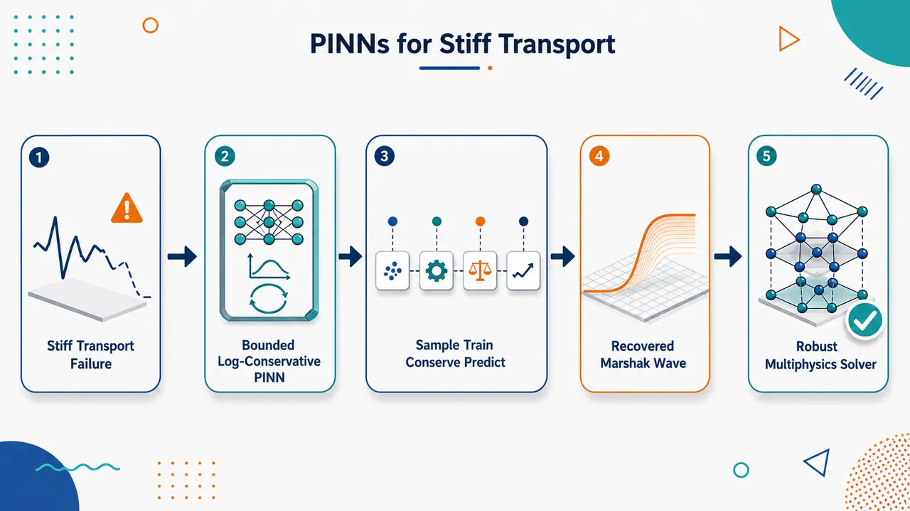
研究问题标准 PINN 在刚性耦合输运系统中失效：以辐射输运 Marshak 波为例，初始辐射强度约 10⁻¹³、左边界约 10⁻¹，相差 12 个数量级；温度进入分母 T³ 形成强非线性刚性；解同时包含冷区、热区和快速推进波前，普通损失与无界输出会导致训练不稳定、边界/初值拟合失衡和物理守恒破坏。创新方法提出面向刚性输运的三件套 PINN：用 ScaledSigmoid 将辐射强度和温度硬限制在物理上下界内，避免负温度和 T³ 分母爆炸；用 logMSE 替代初边值普通 MSE，让 10⁻¹² 到 10⁰ 的误差都在对数尺度上可见；显式加入由方程推导的全局守恒律损失，约束总能量变化与边界通量一致。Aha 点是把最大值原理、数量级感知误差和守恒账本同时嵌入 PINN。工作流程输入时间 t 与空间 x，先扩展为二阶多项式特征 (t, x, t², tx, x²)；共享 tanh 主干网络提取时空特征；分成两个输出分支，分别预测 7 个方向的辐射强度 u 和标量温度 T；末端 ScaledSigmoid 将输出锁进物理范围；训练时用 Monte Carlo 采样计算 PDE 残差，时间采样偏向 t=0 的快速变化区；初始条件和边界条件用 logMSE；再在多个时间点计算全局守恒律误差；总损失经 Adam 优化后输出 Marshak 波温度场与辐射场。关键结果在 10,000 次 Adam 迭代、batch size 8192、约 30 分钟内，模型恢复与 Implicit Monte Carlo 参考解一致的 Marshak 波结构：左侧热区、右侧冷区和中间波前清晰可见；波前约在 1 ns 到达 x≈0.03 cm，5 ns 到达 x≈0.08 cm，10 ns 到达 x≈0.12–0.14 cm；能处理 u 约 10⁰ 与 cσ/T³ 约 10¹¹ 的刚性差异。消融显示：线性输出会产生错误物理，去掉 PDE 项解不稳定，去掉 logMSE 后即使 50,000 次迭代边界仍有 6 个数量级误差。应用价值证明经过物理有界输出、对数尺度损失和守恒律增强后，PINN 可用于传统标准 PINN 难以稳定处理的刚性多物理输运问题；对辐射输运、热辐射波传播、核工程、高能量密度物理等存在跨尺度边界、强耦合和守恒约束的 PDE 系统具有推广价值，并为复杂几何和参数化刚性输运求解提供基础框架。第一部分：核心概览 (Overview)
该研究面向刚性、跨尺度、状态突变的耦合输运方程，以辐射输运中的Marshak 波为基准，系统定位标准 PINN 在极端初边值尺度差异、非线性耦合、物理守恒破坏中的失效机制。核心贡献是提出三项可验证改造：ScaledSigmoid 有界正值输出、用于初边值条件的对数 MSE 损失、以及显式加入全局守恒律损失。在初值与边界相差最高 12 个数量级的情形下，该框架在 10,000 次 Adam 迭代、30 分钟内恢复热区、冷区与波前结构，并通过消融实验显示每一组件均不可或缺。该工作处于 PINN 处理刚性多物理输运问题的前沿探索位置。
---
第二部分：结构化快速回顾
《Physics-Informed Neural Networks for coupled stiff transport systems》（None，）
背景
标准 PINN 在刚性输运方程、强非线性耦合、跨数量级初边界条件下容易出现训练不稳定、损失项失衡、物理一致性破坏。Marshak 波提供了典型挑战：辐射强度初值约 (3.272382×10⁻¹³)，左边界约 (3.272382×10⁻¹)，相差约 12 个数量级。
方法
采用单个共享主干网络分别输出 (tilde u(t,x)inRN) 与 (tilde T(t,x)inR)，其中 (N=7)。输入经二阶多项式嵌入 ((t,x,t²,tx,x²⁾)，隐藏层使用 tanh，最终输出使用 ScaledSigmoid 限制在物理上下界内。初边值条件使用 logMSE，PDE 残差采用 Monte Carlo 采样，时间采样使用截断指数分布，另加入全局守恒律损失。
结果
在 (nᵢₜₑᵣ=10,000)、batch size (=1024×8)、Adam 默认参数下，得到与 Implicit Monte Carlo 参考解一致的 Marshak 波演化。参考波前位置约为：(1,ns) 到 (xsim0.03,cm)，(5,ns) 到 (xsim0.08,cm)，(10,ns) 到 (xsim0.12-0.14,cm)。
讨论
成功结果依赖三类机制的协同：有界正值激活避免 (tilde T³) 分母接近零；logMSE 使 (10⁻¹²) 与 (10⁰) 区间同时可训练；守恒律约束补充局部 PDE 残差难以保证的全局物理一致性。
局限
验证集中在一维 Marshak 波基准、固定参数、固定方向数 (N=7)、固定网络规模 (nₙₑᵤᵣₒₙₛ=32)。几何复杂性、参数泛化能力、误差定量指标、与高阶传统数值方法的系统性能比较仍有限。
结论
该框架证明了经过物理边界、有尺度意识损失、守恒律增强后，PINN 可处理标准形式难以稳定求解的刚性耦合输运系统，并为辐射输运及工程中的多物理刚性 PDE 提供可扩展思路。
---
第三部分：逐章节冷凝解析 (Section-by-Section Condensing)
Abstract
Failure mode in stiff transport PINNs
标准 PINN 在刚性、状态切换的输运方程中存在三类核心失败：不稳定性、损失失衡、物理一致性破坏。问题背景明确指向强尺度差异和非线性耦合，而非普通 PDE 近似误差。原文直接界定为：*"PINNs struggle with stiff, regime-changing transport equations due to instability, loss imbalance, and violations of physical consistency."*
Canonical benchmark with 12-order scale disparity
测试对象为Marshak 波方程，属于辐射输运中的经典基准；其初始条件与边界条件最大相差 12 个数量级，形成对 PINN 损失函数与优化过程的极端压力。关键证据为：*"where initial and boundary conditions differ by up to 12 orders of magnitude"*。
Three targeted modifications
提出三项针对性结构改造：ScaledSigmoid final activation 保证物理边界与正性；logarithmic MSE loss 替代初边值条件中的普通二次损失；global conservation laws 作为额外物理损失显式施加。原文概括为：*"Three modifications are introduced: (1) a ScaledSigmoid final activation enforcing physical bounds and positivity of the unknowns; (2) a logarithmic MSE loss replacing the standard quadratic loss for initial and boundary conditions; and (3) explicit enforcement of global conservation laws derived from the governing equations as an additional physics loss term."*
Agreement with Implicit Monte Carlo
改造后的框架恢复了 Marshak 波的三类区域：hot region、cold region、wave-front region，并与 Implicit Monte Carlo 参考解一致，运行时间低于 30 分钟。原文给出：*"successfully recovers the Marshak wave dynamics - including the hot, cold, and wave-front regions - in agreement with a reference Implicit Monte Carlo solution, with run times under 30 minutes."*
Ablation-confirmed necessity
消融实验显示，任一关键组件移除都会导致定性失败：线性激活、缺少 logMSE、移除 PDE 项均不能保持正确解。原文证据为：*"Ablation studies confirm that each ingredient is essential: linear activation, absence of the logarithmic loss, or removal of the PDE term each independently cause the method to fail qualitatively."*
---
1 Motivation
PINNs embed governing equations into learning
Physics-Informed Neural Networks 将物理方程直接嵌入训练目标，用神经网络近似满足 PDE/ODE、初始条件、边界条件与观测约束的解。原文定义为：*"PINN are a class of neural networks designed to integrate physical laws directly into the learning process"*，并强调其目标是学习自动尊重底层方程的解：*"allowing to learn solutions that automatically respect those underlying equations."*
Soft constraints unify PDEs, ICs, and BCs
PINN 的训练目标通常将控制方程、初始条件、边界条件作为软约束组合，而非严格离散投影。原文说明：*"the governing equations... together with initial and boundary conditions, are enforced as soft constraints in the training objective."*
Broad use in PDEs and fluid mechanics
PINN 自 Raissi 等提出后，已广泛用于物理、工程、流体力学，尤其是 PDE 与动力系统求解。原文写道：*"PINN were introduced by Raissi et al. [14] and have since found applications in physics, engineering, and fluid mechanics"*。
Value under scarce data
在实验数据或高保真模拟稀缺场景中，PINN 的优势来自可嵌入边界条件和物理约束。原文证据为：*"Their ability to incorporate boundary conditions and other physical constraints is especially valuable in regimes where experimental or high-fidelity simulation data are scarce."*
Inverse problem suitability
PINN 不仅用于正问题，也适合反问题，例如从部分噪声观测中识别未知物理参数、源项或本构关系。原文指出：*"PINN are particularly well suited for inverse problems, where unknown physical parameters, source terms, or constitutive relations must be identified from partial and noisy observations while preserving physical consistency."*
Need for robustness in stiff multiscale systems
近期研究集中于提升 PINN 面对多尺度和刚性问题时的鲁棒性与可扩展性，因为标准形式常失效。原文明确表示：*"Recent research increasingly focuses on improving the robustness and scalability of PINN for multiscale and stiff problems, for which standard formulations often fail."*
---
1.1 Our case and short literature review
Target problem: stiff regime-changing transport
研究重点是刚性输运方程，尤其是标准 PINN 实现难以处理的状态突变演化。原文表述为：*"we focus in this contribution on stiff transport equations that proved to be challenging for the usual implementations of PINN."*
Sparse prior PINN literature for comparable transport systems
与目标系统相似的 PINN 输运案例很少，尤其是具有刚性与状态切换的演化系统。原文指出：*"There are not many use cases of PINN for transport equations similar to the ones we are interested in stiff, regime changing evolution"*。
Relation to conservative PINNs
Wang 等的 neutron transport 与 cPINN 工作强调子域界面条件，并指出边界条件施加很敏感，但其常数设置使动力学不如当前问题剧烈。原文证据为：*"they mention that imposing boundary conditions is very delicate"*，同时区分为：*"the constants make their regime still different and less dynamic than ours"*。
Quotient-type equations as physical consistency challenge
Liang 等讨论保守形式方程，特别提到商型方程中一个未知量除以另一个未知量可能造成物理不一致。当前 Marshak 方程存在 (tilde u/tilde T³) 型刚性耦合。原文对应为：*"quotient-type equations (such as ours, where one unknown quantity divides another) where they state they cannot provide a solution because it is physically inconsistent."*
Loss fragility motivates redesign
PINN 损失中 PDE、初值、边界条件三类项的权重共同优化非常脆弱，权重 (cφ, cᵢc, cbc) 选择会显著影响训练。原文指出：*"the terms of the loss functional (L(ḑot))... are very fragile to optimize together"*，并强调：*"care must be taken in choosing the best coefficients (cφ, cᵢc, cbc)"*。
Specific contributions
相对于既有研究，核心新增机制是特定激活函数、对数 MSE 初边值损失、显式守恒律损失。原文总结为：*"we introduce specific activation functions, a logarithmic MSE loss to treat the initial and boundary conditions, and explicitly include conservation laws in the loss functional."*
---
2 PINN notations
Neural approximation of constrained solution
PINN 使用多层神经网络近似 (u(t,x))，该函数需要满足 PDE/ODE、初值、边界值、观测数据和额外物理约束。原文列出约束包括：*"it solves some ordinary differential equation (ODE) or partial differential equation (PDE)"*，*"has associated initial conditions and boundary conditions"*，以及 *"certain specific constraints like positivity, conserved quantities and so on."*
Parameterization by (θ)
神经网络参数集合为 (θ)，输出近似解 (uθ(t,x))，目标是接近真实解 (u(t,x))。原文表述为：*"Let (θ) be the set of parameters of the neural network"*，并定义：*"we designate (uθ) this approximation"*。
General PDE residual
一般 PDE 写为 (F[u](t,x)=0)，其中 (F) 是物理微分算子，(X) 为空间域，(tin[0,T])。原文公式为：*"(F[u](t,x)=0,quad xinX,quad tin[0,T])"*。
Loss decomposition
PINN 总损失分为数据项和物理项：(L=Ldₐₜₐ+Lₚₕyₛᵢcₛ)。原文直接给出：*"(L=Ldₐₜₐ+Lₚₕyₛᵢcₛ)"*。
Data loss covers ICs, BCs, observations
(Ldₐₜₐ) 衡量网络预测与初值、边界值及观测数据之间的差异，常用 MSE。原文说明：*"(Ldₐₜₐ) represents the error with respect to observed data: initial conditions, boundary conditions, other measurements or observations"*。
Physics loss enforces differential laws
(Lₚₕyₛᵢcₛ) 通过 PDE 残差保证解满足物理定律。例如 (partialₜᵤ₊ₐpartialₓᵤ₌₀) 的残差为 (fθ=partialₜᵤθ+apartialₓᵤθ)。原文写道：*"(Lₚₕyₛᵢcₛ) enforces that the solution (u(t,x)) satisfies the physical laws described by (Fu)"*。
Discrete collocation formulation
实际训练可在 (N) 个 collocation points 上计算 PDE 残差均方：(frac1Nsumᵢ₌₁^N|fθ(tᵢ,xᵢ₎|²)。原文公式为：*"(Lₚₕyₛᵢcₛdⁱscrete=frac1Nsumᵢ₌₁N|fθ(tᵢ,xᵢ)|²)"*。
Loss weights encode optimization priorities
总目标由 (cφ)、(cᵢc)、(cbc) 加权，分别控制 PDE 残差、初始条件、边界条件的重要性。原文解释为：*"where (cφ), (cᵢc) et (cbc) are positive constants that translate relative optimization priorities"*。
Standard MSE is only one choice
传统初边值损失通常是二次积分，但可以选择其他形式；该研究后续用 logMSE 替代。原文指出：*"popular candidates are the mean square integrals"*，并补充：*"but other choices can be made."*
---
2.1 Neural network component of PINN
Automatic differentiation enables PDE residuals
PINN 倚赖 TensorFlow、Keras、PyTorch 等库的自动微分，可对网络输出关于输入变量和参数求导，从而计算 PDE 残差。原文说明：*"libraries such as TensorFlow (Keras), PyTorch, etc., which provide automatic differentiation"*。
Universal approximation justifies neural surrogate
神经网络具有足够表达能力，可以近似目标函数；这使其成为 PDE 解函数 (u(t,x)) 的可训练代理。原文表述为：*"it has been shown that neural networks are sufficiently expressive to approximate any desired function."*
Network has two roles
网络既近似未知解，又通过损失函数把物理定律纳入优化。原文指出：*"The role of the network is twofold: to approximate the unknown solution (u(t,x))... and to directly integrate the physical laws into the optimization process via the loss function."*
---
3 Stiff hyperbolic systems: the Marshak wave example
Nonlinear PDE coupling in stiff hyperbolic systems
该系统是 PINN 既有研究较少覆盖的非线性耦合 PDE，尤其是刚性双曲系统。原文开宗明义：*"the situation of non-linear coupling of PDEs has not been previously treated, especially for stiff hyperbolic systems."*
Coupled unknowns: radiation intensity and temperature
未知量为方向相关辐射强度 (tilde u(t,x,ømega)) 和温度 (tilde T(t,x))。原文说明：*"the functions (tildeu(x,t,ømega)) and (tildeT(x,t)inR) are the unknowns"*。
Transport equation contains stiff quotient term
辐射输运方程含有 (fractilde cσtilde T³tilde u)，当 (tilde T) 很小时该项可极大，造成强刚性与数值不稳定。原文公式为：*"(frac1cpartialₜtildeu+ømeganablaₓtildeu+fractildecσtildeT³tildeu=tildecₛbtildeT)"*。
Temperature equation couples angular average
温度演化由角平均辐射强度 (łangletilde uångle) 驱动，方程为 (tilde cᵥpartialₜtilde T=fractilde cσtilde T³łangletilde uångle-tilde cₛbtilde T)。原文公式为：*"(tildecᵥpartialₜtildeT(t,x)=fractildecσtildeT³(t,x)łangletildeuångle(t,x)-tildecₛbtildeT(t,x))"*。
SN angular discretization uses seven directions
传播方向 (ømega) 使用 (S_N) 形式，(Ømega_N=o̧s(2π k/N);k=0,dots,N-1)，参数表中 (N=7)。原文定义为：*"(ØmegaN=ømegaₖ=o̧s(2π k/N);k=0,...,N-1)"*。
Spatial and temporal domains
空间域为 ([0,0.5],cm)，时间域为 ([0,T])，参考表中 (T=1,ns)，但绘图代表时间集合 (T=1ns,5ns,10ns) 出现与表格存在张力。原文空间定义为：*"the spatial domain is (X=[xₘᵢₙ,xₘₐₓ])"*，并给出 (xₘᵢₙ=0)、(xₘₐₓ=0.5,cm)。
Extreme initial-boundary contrast
(tilde uᵢₙᵢₜ=0.3272382×10⁻¹²)，(tilde uₗₑfₜbcᵤ=0.3272382)，相差约 (10¹²)。(tilde Tᵢₙᵢₜ=1.1604×10⁻³,MK)，(tilde Tₗₑfₜbcₜ=1.1604,MK)，相差 (10³)。原文强调：*"One of the difficulties of this setting lies in the difference of 12 orders of magnitude between the boundary conditions (tildeuₗₑfₜbcᵤ) and the initial conditions (tildeuᵢₙᵢₜ)"*。
Discontinuous corner condition
在 ((t=0,x=xₘᵢₙ)) 角点，(t=0) 侧为 (10⁻¹²) 量级，左边界侧为 (1) 量级，初值与边界不连续。原文写道：*"boundary and initial conditions for (tildeu) are incoherent"*，并具体说明：*"there are discontinuous at (t=0,x=xₘᵢₙ) where the (t=0) side is of order (10⁻¹²) while the (x=xₘᵢₙ) side is of order (1)."*
Physical origin of dynamics
动力学由左边界进入粒子产生，右边界设定足够远，使波前在终止时间前不会到达右端。原文说明：*"the dynamics is generated by entering particles through the left boundary"*，并假设：*"the right boundary is far enough such that the wave front does not reach it before (T)."*
Rescaling from standard Marshak variables
标准变量与文中缩放变量关系为 (u=tilde uḑot10⁻³)，(T=10ḑottilde T)。原文给出盒式公式：*"(boxedu=tildeuḑot 10⁻³, boxedT=10ḑottildeT)"*。
---
4 Methodology
Goal: detailed PINN implementation for stiff system
方法部分聚焦 PINN 实现细节及高效网络架构构造。原文开头为：*"Let us now describe to the PINN implementation in detail and the insights into the construction of an efficient NN architecture."*
---
4.1 Network architecture
Two outputs with shared trunk
系统有两个未知量：(tilde u(t,x)inRN) 与 (tilde T(t,x)inR)。网络采用一个共享主干，再分成两个输出分支，而不是完全分离网络。原文说明：*"we retain the option of having a common trunk network followed for both (u) and (T) by a specific part."*
Single-network advantage and tested alternative
单网络的优势是结构简单且 (tilde u)、(tilde T) 可共享初始层学习到的特征；双网络在某些参数下可能改善结果，但不是关键。原文指出：*"The advantage of having one network is simplicity but also that (tildeu) and (tildeT) share some common features learned in the initial layers"*，并补充：*"the critical advancements come from other choices"*。
Polynomial embedding of degree 2
输入 ((t,x)) 变换为 ((t,x,t²,tx,x²⁾)，属于二阶多项式嵌入。原文写道：*"a polynomial embedding of order 2 which means that the input (t,x) is transformed into a vector (t,x,t²,tx,x²)"*。
Hidden width and branch structure
网络使用 (nₙₑᵤᵣₒₙₛ=32)。共享层后分为两个分支：(tilde u) 分支输出 (N=7) 维，(tilde T) 分支输出 1 维；隐藏层使用 tanh。原文架构描述为：*"a dense layer with (nₙₑᵤᵣₒₙₛ), ‘tanh’ activated"*，随后分支为：*"another layer with (N) dimensional output"* 与 *"another layer with one-dimensional output"*。
Batch size sensitivity
batch size 设为 (1024×8=8192)。测试过 256 与 1024，经验上 batch 越大越好，256 是获得定性一致解的最低规模。原文给出：*"'batch size‘ (nbₐₜcₕ=1024ḑot 8)"*，并指出：*"the value 256 seems to be the minimum required to obtain qualitatively coherent solutions."*
Monte Carlo integration of losses
损失函数中的积分通过 Monte Carlo sampling 计算。PDE 残差在空间 (x) 上均匀采样，在时间 (t) 上使用截断指数分布。原文说明：*"the computation of the integrals in the loss function... is done by Monte Carlo sampling."*
Exponential time weighting near (t=0)
时间采样公式为 (-frac1łambdałog[1-U(1-e⁻łambda T)])，其中 (Usim Uniform[0,1])，(łambda=1/T)。该选择使样本集中在快速变化的 (t=0) 附近。原文解释为：*"the choice (łambda=1/T) concentrates sampling near (t=0), where the solution varies most rapidly."*
Tanh final activation is invalid
最终输出不能用普通 tanh，因为 tanh 只能输出 ([-1,1])，而 (tilde T) 的边界数据需要超过该区间。原文给出：*"‘tanh’ cannot represent values outside ([-1,1]) which are required by the boundary data for (tildeT)"*。
Linear activation violates positivity
无激活/线性激活可能输出负值，与辐射强度和温度的物理含义不符；更严重的是 (tilde T³) 在接近零或跨零时导致除法不稳定。原文指出：*"This activation has the drawback of producing values that can be negative"*，并强调：*"dividing by (tildeT³) can become very unstable if it crosses zero"*。
ReLU-family activation is insufficient
ReLU 可保证非负，但二阶导几乎处处为零，不利于 PDE loss 中导数信息。ReLU2、ReLU3、SafeSoftplus 曾被考虑，但效果不如 ScaledSigmoid。原文说明：*"its second derivative vanishes almost everywhere so one cannot obtain meaningful information for PDE loss"*，并评价：*"the results for these functions appeared less satisfactory compared to the next choice."*
ScaledSigmoid enforces physical range
ScaledSigmoid 定义为
[
vₘᵢₙ+(vₘₐₓ-vₘᵢₙ)frac11+e⁻x,
]
输出严格位于 ((vₘᵢₙ,vₘₐₓ))，可同时保证正值、上下界与训练稳定性。原文公式为：*"(ScaledSigmoid(x)=vₘᵢₙ+(vₘₐₓ-vₘᵢₙ)ḑotfrac11+e⁻x)"*，并说明：*"This activation takes values in (]vₘᵢₙ,vₘₐₓ[)"*。
Maximum principle informs activation bounds
利用系统满足最大值原理的信息设置边界：(tilde uin[tilde uᵢₙᵢₜ,tilde uₗₑfₜbcᵤ]^N)，(tilde Tin[tilde Tᵢₙᵢₜ,tilde Tₗₑfₜbcₜ])。表中实际采用轻微扩展：(tilde u) 下界 (0.999tilde uᵢₙᵢₜ)，上界 (1.001tilde uₗₑfₜbcᵤ)；(tilde T) 同理。原文说明：*"we know that our system satisfies the maximum principle"*，因此：*"(tildeuin[tildeuᵢₙᵢₜ,tildeuₗₑfₜbcᵤ]N) and (tildeTin[tildeTᵢₙᵢₜ,tildeTₗₑfₜbcₜ])"*。
---
4.2 Loss function (I): log MSE loss
Ordinary quadratic loss fails across extreme scales
问题核心难点来自初值 (10⁻¹²) 与边界值 (10⁰) 的巨大范围。普通二次损失会优先拟合 (10⁰) 值，而在 (10⁻¹²) 区间留下巨大相对误差。原文指出：*"one difficulty for this problem comes from the large parameter range, with initial values of order (10⁻¹²) and boundary values of order (10⁰)"*，并评价：*"a quadratic loss will only fit (10⁰) values"*。
Logarithmic scale supplies relative-error training signal
核心思想是在对数尺度提供训练信号，使小量级与大量级同时可见。原文动机为：*"we need to have training information on a logarithmic scale"*。
Definition of logMSE
对正向量 (x,y)，定义
[
DₗₒgMSE(x|y)=sumᵢ[łog(|xᵢ|+ϵ_L)-łog(|yᵢ|+ϵ_L)]².
]
其中 (ϵ_L=10⁻¹⁴)，保证对数有限。原文公式为：*"(DₗₒgMSE(x,|,y)=sumᵢłeft[łog(|xᵢ|+ϵL)-łog(|yᵢ|+ϵL)i̊ght]²)"*。
Replacement for IC and BC losses
logMSE 被用于初始条件与边界条件，替代标准 MSE 定义。原文明确写道：*"The following loss function formulation is used for both initial and boundary conditions instead of definitions in (10)"*。
---
4.3 Loss function (II): Conservation laws
Conservation law derived by angular averaging and summation
对 (tilde u) 方程取方向平均，再与温度方程相加，吸收发射耦合项 (fractilde cσtilde T³łangletilde uångle) 与 (tilde cₛbtilde T) 抵消，得到局部守恒律。原文说明：*"first take the average over (ømega) of (tildeu(t,x,ømega)) then sum up all equations"*，并指出：*"the terms... will cancel out"*。
Local conservation equation
局部守恒式为
[
frac1cpartialₜłangletilde uångle+łangleømeganablaₓtilde uångle+tilde cᵥpartialₜtilde T=0.
]
原文公式为：*"(frac1cpartialₜłangletildeuångle(t,x)+łangleømeganablaₓtildeuångle(t,x)+tildecᵥpartialₜtildeT(t,x)=0)"*。
Integrated global conservation constraint
在 ([xₘᵢₙ,xₘₐₓ]×[0,t]) 上积分得到全局守恒式，包含内部能量变化与边界通量。原文过程为：*"Now integrate over ([xₘᵢₙ,xₘₐₓ]×[0,t]) to obtain"*。
Right boundary equilibrium assumption
若右边界足够远，可认为 (xₘₐₓ) 仍保持初始平衡 (tilde u(t,xₘₐₓ)=tilde uᵢₙᵢₜ)。原文条件为：*"the value (xₘₐₓ) has been chosen large enough such that on the right border there is still equilibrium"*。
Entrant-direction coefficient (eøₘₑgₐ)
定义进入方向平均系数
[
eøₘₑgₐ=frac1Nsumₖømegaₖ₁øₘₑgₐ_ₖgₑ₀.
]
原文公式为：*"(eøₘₑgₐ=frac1Nsumₖømegaₖḑot 1_ømegaₖ≥ 0)"*。
Conservation laws added to physics loss
守恒律被视为系统物理的重要组成，加入 (mathcal Lₚₕyₛᵢcₛ)。原文明确说：*"The conservation laws convey an important part of the system’s physics. As such we included it in the (Lₚₕyₛᵢcₛ) loss part."*
Practical enforcement at 10 time instants
实际取 (ncₒₙₛ=10) 个时间点，均匀分布于 (T/100) 到 (T)，加入平均平方守恒误差 (Cons(tilde u,tilde T,tₖ₎²)。积分通过 Monte Carlo 计算，每个积分使用 (nMₒₙₜₑCₐᵣₗₒ=1000) 个等距样本，权重 (ccₒₙₛ=1)。原文说明：*"we take (ncₒₙₛ) time instants... equally distributed between (T/100) and (T)"*，并补充：*"each integral has (nMₒₙₜₑCₐᵣₗₒ) equally spaced samples"*。
---
5 Numerical results
Primary observable is temperature evolution
Marshak 波计算的主要输出是温度演化 (tilde T)，而非单独辐射强度。原文表述为：*"The main output of the Marshak wave computation is the temperature evolution (tildeT)"*。
Three-region physical structure
温度场在 ((t,x)) 空间中分为：cold region，保持旧平衡 (tilde usimtilde uᵢₙᵢₜ)、(tilde Tsimtilde Tᵢₙᵢₜ)；hot region，达到新平衡 (tilde usimtilde uₗₑfₜbcᵤ)、(tilde Tsimtilde Tₗₑfₜbcₜ)；以及中间 wave front。原文分别写道：*"a 'cold' region where the previous equilibrium is still in place"*，*"a 'hot' region where the new equilibrium is observed"*，以及 *"a transitory region between the two, called the 'wave front'."*
Evaluation criteria
模拟质量主要由三类区域是否出现、波前传播速度是否估计良好决定。原文指出：*"The quality of the simulation is given by the presence of these three regions and, if possible, by a good estimation of the propagation speed of the 'wave front'."*
Implicit Monte Carlo reference
参考解使用 Implicit Monte Carlo 方法，空间步长 (Δ x=0.05,cm)，时间步长 (Δ t=2×10⁻¹,ns)。原文图注给出：*"obtained by the Implicit Monte Carlo method"*，并列明：*"the (x) grid is spaced by (Δ x=0.05) cm and the time step is (Δ t=2×10⁻¹) ns."*
Reference wave-front positions
参考解中 Marshak 波约在 (1ns) 到达 (xsim0.03cm)，(5ns) 到达 (xsim0.08cm)，(10ns) 到达 (xsim0.12-0.14cm)。原文图注为：*"the Marshak wave reaches (xsim0.03cm) by (1ns), (sim0.08cm) by (5ns) and (sim0.12-0.14cm) by (10ns)."*
---
5.1 Nominal results
Nominal PINN matches reference qualitatively
标准配置下的结果与 Figure 3 的 IMC 参考解完全一致于定性结构，Marshak 波及其三类区域清晰可见。原文评价：*"the results are completely coherent with the reference in Figure 3"*，并进一步指出：*"the Marshak wave and its regions are perfectly clear on the figure."*
Training stabilization over iterations
Figure 5 展示 3k、5k、8k、10k 迭代轮廓；早期估计需要稳定，找到解后即保持稳定，尽管随机搜索仍有内在振荡。原文说明：*"we plot the profiles for (3k), (5k), (8k) and ultimately (10k) iterations"*，并观察：*"once the solution is found it is stable"*。
Runtime under 30 minutes
完整运行时间低于 30 分钟，与有限差分或 IMC 等替代方法相比具有竞争力。原文写道：*"the total run time is less than 30 minutes which is competitive with alternatives"*。
Handles 11-order stiffness in PDE terms
方法能够处理 (tilde u) 的 (10⁰) 量级与 (fractilde cσtilde T³) 的 (10¹¹) 量级之间的巨大差异。原文证据为：*"the procedure arrives to handle correctly the 11 orders of magnitude difference between the term (tildeu) of order (10⁰) and (fractildecσtildeT³(t,x)) of order (10¹¹)."*
Initial and boundary conditions accurately matched
Figure 6 显示初始条件与左边界条件均达到优秀一致性，目标值标为 exact。原文图注称：*"excellent agreement is obtained"*，并说明：*"The target values are those with legend 'exact'."*
Boundary conditions only imposed for entering directions
对非进入域的方向 (ømegaₖ)，不施加边界条件，因此无目标值绘制。原文解释为：*"When direction (ømegaₖ) is not entering the domain, no boundary condition is to be imposed"*。
---
5.2 Ablation studies: linear activation, no PDE, no MSE log loss
Ablation targets core ingredients
消融实验逐一移除关键组件，以说明 ScaledSigmoid 激活、PDE 项、logMSE 损失的必要性。原文说明：*"We start now a series of comparisons to illustrate the necessity of our main ingredients"*。
Linear activation fails to capture physics
将最终激活替换为线性后，模型无法理解问题物理，温度曲线明显错误。原文评价：*"the linear activation is not able to understand the physics of the problem"*，图注也写明：*"the profiles are clearly not correct"*。
Conservation law alone is insufficient
去掉 PDE 项，即 (cφ=0)，仅靠守恒律不能得到稳定解，说明全局约束不能替代局部微分方程。原文指出：*"the solution is not only due to the conservation laws because when eliminating the PDE term the solution becomes unstable."*
Removing logMSE damages boundary precision
用普通 MSE 替代 logMSE 后，即使训练 50,000 次迭代，左边界条件仍不匹配：(tilde u) 有 6 个数量级误差，(tilde T) 有约 1.5 的不匹配。原文图注给出：*"even after (50,000) iterations there is no agreement between the exact and numerical conditions on the left border, with 6 orders of magnitude mismatch for (tildeu) and 1.5 for (tildeT)"*。
Initial-condition fitting becomes very difficult without logMSE
普通 MSE 不仅损害左边界，也使初始条件难以准确拟合。原文总结：*"Obtaining accurate initial conditions is very difficult in this case."*
---
6 Conclusion
Stable stiff transport PINN requires three mechanisms
稳定且物理一致的解依赖三者组合：bounded positivity-preserving activations、logarithmic MSE loss、global conservation laws。原文结论为：*"By combining bounded, positivity-preserving activations, a logarithmic MSE loss to handle extreme scale disparities, and the explicit enforcement of global conservation laws, we obtained stable and physically consistent solutions"*。
Standard PINNs fail where modified PINNs succeed
标准 PINN 形式在该类问题中失败，而改造框架可恢复稳定解。原文明确对照为：*"where standard PINN formulations fail."*
Components are central rather than incremental
消融结果表明这些机制不是小修小补，而是捕捉耦合双曲系统正确动力学的核心条件。原文写道：*"these ingredients are not merely incremental refinements but play a central role in capturing the correct dynamics of the coupled hyperbolic system."*
No prior solution-structure knowledge required
框架仅从控制 PDE 和守恒律出发，不需要预设解结构或为 Marshak 波专门设计网络。原文表述为：*"Starting solely from the governing PDEs and associated conservation laws"*，并补充：*"without prior knowledge of the solution structure or ad hoc modifications of the network architecture."*
Proof of concept for future extensions
结果构成刚性输运经典问题上的概念验证，并为更一般几何和参数区间扩展提供基础。原文结尾为：*"establish a proof of concept on a canonical stiff transport problem and provide a foundation for future extensions to more general geometries and parameter regimes."*
---
第四部分：深度理解与语言支持 (Understanding & Nuance)
1. 术语解析
Stiff transport systems
Stiff 指系统中存在极不相同的时间/空间尺度，导致数值求解或优化过程非常敏感。这里的刚性来自 (tilde T) 很小时 (tilde cσ/tilde T³) 可达 (10¹¹) 量级，也来自初边值相差 (10¹²)。Transport systems 指具有方向传播、边界流入、波前推进特征的输运 PDE。
细微差别：stiff 不等同于 “hard”。它在数值分析中通常意味着显式方法或普通优化会因尺度分离而不稳定。
Regime-changing
Regime-changing 表示解在不同区域呈现不同物理状态，例如 Marshak 波中的 cold equilibrium、hot equilibrium 与 wave front。这不是平滑单一状态的演化，而是从旧平衡向新平衡推进。
细微差别：regime-changing 比 “nonlinear” 更强调状态结构切换；非线性只是机制之一。
Loss imbalance
Loss imbalance 指多个损失项数量级不同，导致优化器主要降低大数值项，而忽视小量级但物理上关键的项。普通 MSE 下 (10⁰) 误差主导，(10⁻¹²) 目标的相对误差几乎不会被有效优化。
细微差别：loss imbalance 不只是权重没调好，也可能是损失形式本身不适合跨尺度数据。
Positivity-preserving activation
Positivity-preserving activation 指输出天然为正，避免温度、强度出现负值。这里特别重要，因为 (tilde T³) 位于分母，若 (tilde Tłe0) 或接近 0，PDE 残差会爆炸或失去物理意义。
细微差别：非负 ReLU 也 positivity-preserving，但不一定适合 PDE，因为导数性质差；ScaledSigmoid 同时保证正性与上下界。
Global conservation laws
Global conservation laws 是从局部 PDE 积分得到的整体平衡关系，约束系统总能量变化与边界通量之间的关系。它不替代 PDE 残差，而是补充局部采样残差可能遗漏的整体物理一致性。
细微差别：global conservation 与 local PDE residual 不同；前者约束积分量，后者约束点态微分方程。
---
2. 疑难查证：复杂概念解释
为什么普通 MSE 会在 (10⁻¹²) 与 (10⁰) 共存时失败？
普通 MSE 衡量绝对误差。例如预测 (10⁻⁶) 而目标是 (10⁻¹²)，绝对误差约 (10⁻⁶)，平方为 (10⁻¹²)；预测 0.1 而目标 1，误差 0.9，平方约 0.81。优化器会优先处理 0.81，而不是 (10⁻¹²)，尽管前者相对误差不到 100%，后者相对误差高达 (10⁶)。
logMSE 改为比较 (łog x-łog y)，近似比较倍数误差。目标 (10⁻¹²)、预测 (10⁻⁶) 时，log 差对应 6 个数量级，损失很大，因此小量级目标也会被优化器看见。
为什么 ScaledSigmoid 比 ReLU 或 Softplus 更适合这里？
ReLU 保证非负，但输出无上界，且二阶导几乎处处为零；PINN 的 PDE 残差经常依赖导数，导数信息贫乏会影响训练。Softplus 平滑且正，但仍无上界，可能输出过大或过小。
ScaledSigmoid 将输出锁定在已知物理范围内：
[
tilde uin[tilde uᵢₙᵢₜ,tilde uₗₑfₜbcᵤ],quad
tilde Tin[tilde Tᵢₙᵢₜ,tilde Tₗₑfₜbcₜ].
]
这样既不会负，也不会接近危险的零，更不会出现极大非物理值。对于含 (tilde T⁻³) 的方程，这是稳定性的关键。
为什么守恒律不能替代 PDE 残差？
守恒律是积分约束，保证整体能量账本平衡；但许多错误的局部解也可能在积分意义上“凑巧守恒”。PDE 残差约束每个采样点附近的局部动力学。消融中去掉 PDE 项后解变得不稳定，说明仅靠全局守恒不足以恢复波前形状、传播速度和局部温度结构。
为什么左边界和初始角点不连续会让神经网络困难？
神经网络尤其是 tanh 网络天然偏向平滑函数。这里在 (t=0,x=xₘᵢₙ) 附近，同一角点从初始边看是 (10⁻¹²)，从边界输入看是 (10⁰)，相当于要求网络在极小邻域内表示近似跳变。普通 MSE 会进一步偏向大值边界，导致初始小值无法精确拟合。
---
第五部分：创新评估与关联 (Synthesis & Novelty)
1. 创新性判断
从“通用 PINN 改进”转向“刚性输运失效机制修复”
近 2–5 年 PINN 研究中，常见方向包括自适应损失权重、domain decomposition、DeepONet / neural operator、Bayesian PINN、混合求解器等。该研究的新意不在于提出通用深度学习架构，而在于针对刚性耦合输运系统中实际导致失败的三个具体机制进行逐一修复：
- 输出越界与负温度导致 (tilde T⁻³) 爆炸；
- 初边值相差 (10¹²) 导致 MSE 失衡；
- 局部 PDE 残差采样不足以保证全局物理一致性。
ScaledSigmoid 的贡献在于物理上界与数值稳定性的结合
已有 PINN 常用 tanh、ReLU、Softplus 或自适应激活。这里的关键创新是将最大值原理转化为最终激活的硬约束范围。相比单纯正值激活，ScaledSigmoid 同时提供下界和上界，直接抑制 (tilde T³) 分母相关不稳定。
logMSE 解决极端尺度初边值条件的可训练性
过去 PINN 通常通过调节 (cᵢc,cbc,cφ) 或使用自适应权重缓解损失不平衡。这里没有只依赖权重，而是改变初边值误差度量，使优化目标对数量级敏感。对于 (10⁻¹²) 到 (10⁰) 共存的问题，logMSE 是比普通 MSE 更结构化的解决方案。
守恒律作为显式物理损失增强刚性双曲系统一致性
cPINN 等已有工作关注保守型方程和子域界面条件；该研究将 Marshak 系统推导出的全局守恒关系直接加入 physics loss，并用 (ncₒₙₛ=10) 个时间点、(nMₒₙₜₑCₐᵣₗₒ=1000) 积分样本实施。这种做法对非线性耦合、方向平均、边界通量参与的系统更具针对性。
解决前人未解决的问题
前人工作中，刚性输运、商型非线性耦合、极端初边界尺度差异往往导致 PINN 物理不一致或无法给出解。该研究展示：在 (tilde uᵢₙᵢₜ=0.3272382×10⁻¹²)、(tilde uₗₑfₜbcᵤ=0.3272382)、(tilde Tᵢₙᵢₜ=1.1604×10⁻³)、(tilde Tₗₑfₜbcₜ=1.1604) 的设定下，经过三项改造的 PINN 可恢复与 IMC 参考一致的热区、冷区、波前结构。
创新级别判断
创新性质属于方法集成型 + 失效机制导向型创新，不是全新 PINN 理论，也不是全新神经网络范式。学术价值在于：
- 精确识别标准 PINN 在刚性 Marshak 波中的失败原因；
- 将物理范围、尺度感知损失、守恒律三者组合为可运行框架；
- 通过消融实验显示三者均为必要条件；
- 将 PINN 推向更困难的辐射输运和工程多物理刚性 PDE 场景。
-
11
📊 含图深析
📖 展开分析 + 配图
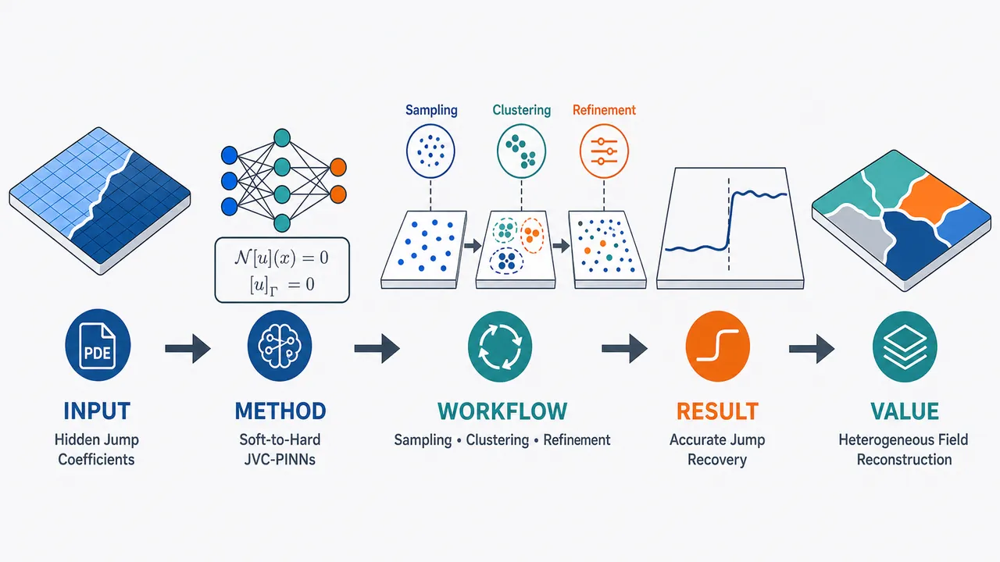
研究问题如何从有限、间接的 PDE 解场观测中，反演具有时间变点、空间界面或时空跳跃的分段常数系数；难点是解场可能仍然平滑，而隐藏系数在内部区域突然换挡，标准 PINNs 往往只能学到模糊平滑过渡，难以同时确定系数平台值、状态数量和跳变位置。创新方法提出 JVC-PINNs 两阶段“软到硬”框架：先用 GWS-PINNs 的主网络学习 PDE 解场、辅助系数子网络生成连续软系数图，并用基于系数梯度的自适应残差权重压低跳变高梯度区干扰；再用 Bayesian GMM + BDMC 从系数样本云中自动识别状态数、平台值区间和候选跳变带；最后用 CCD-PINNs 将系数替换为显式分段常数形式，在统计给出的数值区间与跳变区域内约束精修。工作流程输入 PDE 方程、边界/初始条件、稀疏观测数据和内部采样点；第一阶段训练双网络，输出平滑解场与连续系数代理；在内部点采样系数并展平为一维样本序列；GMM 将样本聚成若干高斯云，BDMC 通过 birth/death 自动选择状态数；将聚类状态和候选跳变索引映射回原时空域；第二阶段用分段常数参数化替代软代理，在候选平台值区间和跳变带内加密残差点并优化；输出硬分段系数字段、跳变界面/变点和重构解场。关键结果数值实验表明，该框架能在带跳跃不连续系数的代表性 PDE 中同时恢复系数平台值与时间/空间跳变结构；相比只用连续子网络或标准 PINNs，可减少跳变附近振荡和平滑偏差，并在无需预设状态数和变点位置的情况下获得更准确、可解释的参数识别；正文摘要称其在可接受计算成本下优于若干已有方法，但未提供具体误差表或数值指标。应用价值适用于材料界面、分层介质、扩散率突变、热导率突变、波速变化、流体黏性变化、源项切换等异质物理系统；可把稀疏观测转化为高分辨率解场图和清晰的系数分区图，帮助定位隐藏界面、识别介质状态、重建非平稳时空动力学，并降低传统反问题对人工预设变点数和界面位置的依赖。第一部分：核心概览 (Overview)
该研究提出 JVC-PINNs：一种面向 PDE 反问题中跳跃不连续系数识别 的两阶段框架。第一阶段用 GWS-PINNs 同时学习解场与连续化系数代理，并通过梯度自适应残差权重稳定不连续区域附近采样；随后用 Bayesian GMM + BDMC 自动识别系数状态数、取值区间与候选跳变区域；第二阶段用 CCD-PINNs 将系数重参数化为显式分段常数形式，约束优化平台值与跳变位置。其核心地位在于把 PINNs、统计混合模型、变点检测与硬分段参数化整合，用于此前标准 PINNs 难以处理的非光滑异质 PDE 系数反演。
---
第二部分：结构化快速回顾
《Inverse Problem for Partial Differential Equations with Jump Discontinuities in Coefficients by Two-stage Physics-Informed Deep Learning and Statistical Mixture Models》（None，）
背景
PDE 系数常代表 材料性质、传播速度、扩散率、黏性、源项或介质参数，在复杂异质系统中可能出现 时间变点、空间界面或时空跳跃不连续集。这类反问题困难来自 非光滑性、非线性、高维性、观测间接性，且解场可能相对平滑，导致系数反演病态。
方法
提出 JVC-PINNs 两阶段框架。第一阶段 GWS-PINNs 使用主网络近似 PDE 解，辅助系数子网络生成连续软代理，并用梯度自适应权重降低高梯度跳变区对残差训练的干扰。采样后的系数值进入 Bayesian Gaussian mixture model 和 birth-death Markov chain，自动推断系数状态数、平台值区间与候选跳变区域。第二阶段 CCD-PINNs 将系数替换为显式 piecewise-constant 表达，在统计学习给定的区间与区域内约束细化。
结果
数值实验覆盖带跳跃不连续系数的代表性 PDE，显示框架可同时识别 系数平台值 与 时间/空间跳变结构，并在计算成本可接受的条件下优于若干已有方法。可用正文未提供具体实验表格、误差数值、样本量或 P 值。
讨论
连续神经网络先提供可采样的平滑近似，统计混合模型再抽取离散状态，最后硬分段 PINNs 消除连续代理对跳跃系数的结构性偏差。该设计避免了纯离散参数化对状态数与界面位置先验的强依赖。
局限
可用正文只概述第 8 节讨论限制，但未提供具体限制内容。可从方法假设中看出潜在限制：跳跃界面需位于时空内部，系数被建模为有限分段常数，GMM 假设采样误差在每个状态附近近似高斯，BDMC 与 MCMC 引入额外计算开销。
结论
JVC-PINNs 将 adaptive PINNs、coefficient sub-network sampling、Bayesian mixture modeling、birth-death model selection、constrained refinement 结合，形成一种可解释、可扩展的 PDE 跳跃系数反演方案，尤其适合 非平稳、异质、多状态、未知跳变位置 的时空系统。
---
第三部分：逐章节冷凝解析 (Section-by-Section Condensing)
Abstract
Discontinuous PDE coefficient inversion is the central target.
研究对象是带 discontinuous coefficients 的 PDE 反问题，尤其是未知系数字段存在 abrupt temporal or spatial transitions 的情形。核心难点明确包括 non-smoothness、nonlinearity、high dimensionality。摘要直接指出：*"Inverse problems involving partial differential equations (PDEs) with discontinuous coefficients arise widely in the modeling of complex spatiotemporal systems with uncertain dynamics and heterogeneous structures."* 难点来源被概括为：*"the unknown coefficient fields may exhibit abrupt temporal or spatial transitions, together with additional difficulties arising from non-smoothness, nonlinearity, and high dimensionality."*
Two-stage physics-informed deep learning is the main methodological contribution.
框架由两个阶段组成：第一阶段生成系数样本并进行统计识别，第二阶段用约束形式精化参数。摘要表述为：*"This work proposes a two-stage physics-informed deep learning framework that combines neural-network-based sampling with statistical inference and constrained parameter refinement."* 该组合不是单纯 PINN 训练，而是 神经采样—统计推断—约束优化 的串联流程。
Dual-network architecture separates solution approximation and coefficient sampling.
第一阶段采用 dual-network physics-informed architecture：主网络近似 PDE 解，辅助网络学习未知系数的连续软近似。对应原文：*"a main-network approximates the PDE solution and an auxiliary coefficient sub-network provides a relaxed continuous soft approximation of the true discontinuous coefficient field."* 该设计承认普通神经网络难以表达硬跳跃，因此先用连续代理采样。
Gradient-adaptive weighting improves sampling near discontinuities.
残差项中加入 gradient-adaptive weighting strategy，用于提高潜在不连续区域附近训练稳定性与采样可靠性。摘要给出功能定位：*"A gradient-adaptive weighting strategy is incorporated to improve residual training and enhance sampling reliability near possible discontinuity regions."* 其后在方法部分被具体化为权重
[
wᵣₑₛ⁽ⁱ⁾=frac1β|nabla₍ₓ,ₜ₎hatθₚ|₂²⁺¹.
]
GMM-BDMC extracts coefficient regimes and transition regions.
第一阶段输出的系数样本进入 Bayesian Gaussian mixture models 与 birth-death Markov chain model selection。摘要明确其功能：*"The sampled coefficient values are then analyzed using Bayesian learning for Gaussian mixture models and birth-death Markov chain model selection, which identify the number of coefficient regimes and provide candidate intervals for coefficient values and transition regions."* 这一步解决了传统离散变点 PINNs 需要预先知道状态数和变点区间的问题。
Second-stage estimator uses hard piecewise-constant coefficients.
第二阶段不再用连续网络表示系数，而是采用 form-consistent hard approximation，即显式分段常数函数。摘要表述为：*"the coefficient is replaced by a form-consistent hard approximation explicitly represented as a piecewise-constant function over the spatiotemporal domain."* 这一步是从软代理到硬结构重构的关键转换。
Numerical validation claims adaptability and accuracy.
实验层面声称在跳跃不连续系数 PDE 上实现准确参数识别，并与已有方法相比保持可接受计算成本。摘要为：*"Comprehensive numerical experiments on PDEs with jump-discontinuous coefficients demonstrate that the proposed framework achieves adaptability and accurate parameter identification with acceptable computational costs compared to existing methods."* 可用正文未包含具体误差、运行时间、样本量或显著性检验。
---
1 Introduction
PDE coefficients encode physical mechanisms and often require inverse inference.
PDE 系数被定义为物理系统中需要从间接观测推断的关键量，包括材料性质、输运率、源项和介质相关参数。原文给出范围：*"the coefficients in these equations encode material properties, transport rates, source effects, or medium-dependent parameters, and they often need to be inferred from indirect observations."* 这奠定了 parameter identification 与 inverse problem 的应用背景。
Jump discontinuities create ill-conditioned inverse recovery.
当系数在空间或时间出现突变时，系数字段非光滑，但解场可能仍相对平滑，导致从状态数据恢复系数极其病态。关键句为：*"the solution field may remain relatively smooth even when the underlying coefficient field is non-smooth, making coefficient recovery from state data ill-conditioned."* 因此，目标不只是估计系数值，还要定位 discontinuity locations。
Application domains span waves, heat, diffusion, fluids, geophysics, biology, environment, and materials.
不连续系数在多个 PDE 场景中出现：波动和 Helmholtz 方程中的传播速度或介质属性，热/扩散方程中的热导率或扩散率，流体和输运模型中的黏性、扩散率或源项。原文示例包括：*"In wave and Helmholtz equations, coefficients determine propagation speeds or medium properties, and discontinuities may correspond to layered media, inclusions, or material interfaces."* 以及：*"Heat and diffusion equations may involve discontinuous thermal conductivities or diffusivities."*
The target coefficient class is piecewise constant or nearly piecewise constant.
研究聚焦于 piecewise constant 或近似分段常数系数。原文写明：*"This motivates the present focus on PDE coefficients that are piecewise constant or nearly piecewise constant over spatiotemporal domains."* 这使问题从一般函数反演转化为 有限状态 + 分区/界面识别。
Classical methods face cost and modeling sensitivity under high-dimensional discontinuities.
传统方法包括 regularized optimization、reduced-order modeling、Bayesian inference。其局限在于高维、不连续、间接观测时对离散化、先验与正则化敏感且计算昂贵。原文总结：*"their implementation may become expensive or sensitive to discretization, prior modeling, and regularization choices when the unknown coefficient field is high-dimensional, discontinuous, or only indirectly observed."*
Standard PINNs are mesh-free but favor smooth or constant coefficients.
PINNs 通过同时惩罚 PDE 残差、数据误差、边界和初始条件来处理正反问题。原文表述：*"Physics-informed neural networks (PINNs) have recently emerged as a mesh-free, data-assisted framework for PDE forward and inverse problems by penalizing the residuals of the governing equations together with data and boundary losses."* 但已有 variable-coefficient PINNs 更适合 smoothly varying coefficients，跳跃系数会造成性能下降。
Existing variable-coefficient PINNs struggle with sharp jumps.
引入额外网络或分支网络可以近似变系数，但面对尖锐跳跃仍不稳定。原文指出：*"These methods provide useful tools for learning smoothly varying coefficients from data, but their performance may deteriorate when the target coefficient contains sharp jump discontinuities."* 关键矛盾是：连续网络表达的系数天然平滑，无法自然产生硬跳跃。
Purely discrete parameterization requires unavailable prior knowledge.
如果直接使用离散变点/界面参数化，则需要预先知道状态数、变点或界面大致位置，而这些通常不可得。原文两次强调：*"a purely discrete parameterization requires prior knowledge of the number of regimes and the approximate locations of change points or interfaces, which are usually unavailable."* 这正是 GMM-BDMC 的动机来源。
Adaptive weighting alone cannot create discontinuous representation.
自适应权重可提升训练稳定性，但不能把平滑系数代理转化为硬不连续表示。原文明确：*"Adaptive weighting can improve training stability, but it does not by itself convert a smooth coefficient approximation into a discontinuous representation."* 因此必须增加统计状态识别与硬参数化细化。
GWS-PINNs acts as a neural-network sampler in stage one.
第一阶段使用 gradient-adaptive weighted sub-main PINNs (GWS-PINNs)。主网络学习解，辅助系数子网络学习分段常数系数的平滑连续代理。原文：*"The main-network approximates the PDE solution, while the auxiliary coefficient sub-network learns a smoothed continuous surrogate of the underlying piecewise-constant coefficient field over the spatiotemporal interior."*
Residual down-weighting improves reliability in approximately constant regimes.
梯度自适应权重的功能是压低高梯度过渡区影响，提高常值区域采样可靠性。原文：*"a gradient-adaptive weighting strategy is incorporated into the physics residual, which suppresses the influence of high-gradient transition regions and enhances the reliability of coefficient samples in approximately constant regimes."*
Bayesian GMM and BDMC infer coefficient states and number of regimes.
统计模块包括 Bayesian GMM 和 BDMC。GMM 抽取离散系数水平，BDMC 作为模型选择机制推断状态数。原文：*"a Bayesian Gaussian mixture model (GMM) is used to extract discrete coefficient levels, while a birth-death Markov chain (BDMC) is adopted as a model-selection mechanism to infer the number of coefficient states."*
Flattening enables multi-dimensional spatiotemporal inference.
多维时空系数通过 dimension-by-dimension or flattened sampling procedure 转换为一维序列，再映射回原域。原文：*"For multi-dimensional spatial or spatiotemporal coefficients, a dimension-by-dimension or flattened sampling procedure maps the coefficient samples to one-dimensional sequences for statistical inference and then maps the inferred transition information back to the original domain."*
CCD-PINNs performs constrained hard refinement in stage two.
第二阶段称为 constrained change-point detection PINNs (CCD-PINNs)。系数用低维分段常数参数化替代平滑神经函数，并在统计模块提供的取值区间与候选变区内优化。原文：*"the coefficient field is replaced by an explicit finite-dimensional piecewise-constant parameterization."* 以及：*"The discrete coefficient values are optimized within the admissible intervals supplied by the mixture learner, and the corresponding change points or discontinuity boundaries are refined inside the candidate change regions."*
Transfer learning and enriched residual sampling improve sensitivity.
第二阶段用第一阶段主网络初始化解网络，并在候选过渡区增加残差点。原文：*"The solution network is initialized by transfer learning from the first-stage main-network, and residual collocation points are enriched near the candidate transition regions to improve sensitivity to discontinuities."*
The framework naturally reduces to standard PINN inversion when no variation is detected.
若统计模块未检测到参数变化，估计器退化为区间约束的常系数 PINN 反演。原文：*"If no parameter variation is detected, the proposed estimator naturally reduces to a standard PINN-based inverse formulation with interval-constrained constant parameters."* 这提供了对常系数情形的兼容性。
Four stated contributions define the novelty map.
贡献包括：辅助系数子网络、自适应残差权重、GMM-BDMC 连接两阶段 PINNs、将时间序列混合/切换模型推广到 PDE 时空异质系统。原文列举第一点：*"an auxiliary coefficient sub-network is introduced for parameter inference, enabling physics-informed approximation of the coefficient variation process rather than only estimating constant trainable parameters."* 第三点强调：*"The GMM-BDMC module provides constrained prior information on candidate coefficient estimation intervals and jump-varying regions."*
---
2 Methodology
JVC-PINNs integrates two PINNs through Bayesian statistical mixture modeling.
方法命名为 jump varying coefficients PINNs (JVC-PINNs)，由两个 PINN 模块与统计混合模型连接。原文定义：*"This section presents a two-stage framework named jump varying coefficients PINNs (JVC-PINNs) for identifying discontinuously varying coefficients in PDEs by two PINNs connected via statistical mixture modeling based on Bayesian learning."*
Stage one produces a smoothed coefficient surrogate rather than final hard reconstruction.
第一阶段 GWS-PINNs sampler 负责产生系数样本。原文：*"the first stage employs the GWS-PINNs sampler, in which a main-network approximates the PDE solution while an auxiliary coefficient network, regularized by a gradient-adaptive weighting strategy, produces a smoothed continuous surrogate of the coefficient field."* 该阶段的输出不是最终答案，而是用于统计推断的采样基础。
Stage two constrains values and locations using statistical outputs.
第二阶段 CCD-PINNs estimator 将系数重参数化为低维分段常数变量，并把所有变量限制在统计模块给出的可行区间或区域内。原文：*"the coefficient is reparameterized by a low-dimensional set of piecewise-constant values and change-region variables, all confined to the admissible intervals or regions supplied by the statistical learning results."*
Residual densification targets candidate transition regions.
第二阶段增强候选变区残差采样，提高对不连续结构的敏感性。原文：*"residual sampling is densified inside the candidate change regions to improve sensitivity to discontinuities."* 这是一种空间/时间局部加密策略。
---
2.1 Mathematical Setup
The spatiotemporal domain is explicitly defined.
空间变量为 (x=[x₁,x₂,łdots,x_d])，时间变量为 (t)。空间域 (ØmegasubsetR^d)，边界 (partialØmega)，内部 (Ømegaⁱ̧rc)，时间区间 ([t₀,T])，且后续设 (t₀₌₀)。定义为：
[
Q=Ømega×[t₀,T],quad Qⁱ̧rc=Ømegaⁱ̧rc×(t₀,T).
]
原文说明：*"(Qⁱ̧rc) denotes the interior of the spatiotemporal domain."*
The governing PDE includes operator, boundary condition, initial condition, source, and unknown coefficient.
系统形式为
[
F[u(x,t);θₚ₍ₓ,t)]=f(x,t),
]
配合边界条件 (B[u]=g) 与初值 (u(x,0)=u₀₍ₓ₎)。原文解释各符号：*"(F[ḑot]) denotes a differential operator acting on (u) and its spatial-temporal derivatives, (B[ḑot]) is a boundary operator, e.g., Dirichlet, Neumann, or Robin type."*
The coefficient field is finite piecewise constant.
核心结构假设为：给定有限分区 (Qᵣᵣ₌₁R)，系数只取 (K) 个不同状态 (θₖₖ₌₁K)，并由区域到状态映射 (z) 决定：
[
θₚ₍ₓ,t)=sumᵣ₌₁Rθz₍ᵣ₎1Q_ᵣ(x,t).
]
原文强调：*"the coefficient field is assumed to take finitely many constant states."*
The number of states can be smaller than the number of regions.
同一个系数状态可出现在多个不连通子域，因此 (Kłe R)。原文：*"where (K łeq R) in general, since the same coefficient state may appear in multiple disconnected subdomains."* 这一区分很重要：状态识别 不等于 区域分割。
Jump interfaces are assumed to lie strictly in the interior.
跳跃不连续集定义为
[
Jθ:=bigcupᵣ≠ ᵣ',z₍ᵣ₎≠ z₍ᵣ'₎(øverlineQᵣa̧pøverlineQᵣ')subsetQⁱ̧rc.
]
原文解释：*"parameter variations do not occur at the initial time (t₀₌₀) or on the spatial boundary (partialØmega×(0,T])."* 该假设排除了初始/边界数据本身引起的参数跳变。
The inverse problem targets values, partitions, and region-to-state map.
给定 (F)、(B)、(f)、(u₀)、观测数据 (Nₒbₛ)、边界数据 (Nbc)、初始数据 (Nᵢc)，目标是恢复 (θₚ) 的分段常数结构。原文：*"our goal is to identify the discontinuously varying coefficient field (θₚ₍ₓ,t)) of the piecewise-constant form (2.3), including the distinct coefficient states (θₖₖ₌₁K), the partition (Qᵣᵣ₌₁R), and the region-to-state map (z(r))."*
One-dimensional temporal interfaces reduce to change points.
在纯时间一维情形，跳跃界面退化为有限变点集合 (τₗₗ₌₁L)，通常 (L=R-1)。原文：*"In the purely one-dimensional temporal case, these interfaces reduce to a finite set of change points (τₗₗ₌₁L), where (L) is number of candidate change regions, typically (L=R-1) for an ordered temporal partition."*
---
2.2 Neural-Network Based Sampler
Standard PINNs treat unknown constants as trainable variables.
标准 PINN 用神经网络 (hatu(x,t)) 近似解，并把未知参数 (hatθₚ) 作为可训练变量。原文：*"the solution (u(x,t)) is approximated by a neural network (hatu(x,t)), and the parameters to be inferred are treated as learnable variables (hatθₚ) optimized via stochastic gradient descent."*
The standard PINN loss has four components.
总损失包含 data fitting、PDE physics residual、boundary condition、initial condition：
[
Lₜₒₜₐₗ
=γ₀Ldₐₜₐ
+γ₁Lstdₚₕy
+γ₂Lbc
+γ₃Lᵢc.
]
原文说明权重功能：*"The nonnegative weights (γ₁), (γ₂) and (γ₃) regulate the relative influence of the physics residual and the initial-boundary terms in the total loss."*
Standard PINNs are unsuitable for discontinuously varying coefficients.
标准 PINN 的常数参数反演依赖初始化，且不能处理形式为分段常数的时空跳变系数。原文指出：*"standard PINNs can only handle parameter inversion for PDEs with constant coefficients and are not suitable for PDEs with discontinuously varying coefficients of the form (2.3)."*
A sub-network is introduced to sample the coefficient field.
为处理时空变系数，引入主网络 (hatu(x,t)) 与子网络 (hatθₚ₍ₓ,t))。原文：*"constructing a network architecture consisting of a main-network (hatu(x,t)) that approximates the PDE solution (u(x,t)), and a sub-network (hatθₚ₍ₓ,t)) that samples the varying coefficient (θₚ₍ₓ,t)) over the spatiotemporal domain."*
Residual points for coefficient sampling exclude boundary and initial slices.
因假设参数跳跃只发生在内部，子网络残差采样点取自 (Qⁱ̧rc)，不包括边界与初始时间。原文：*"all residual points used for the sub-network are drawn from (Qⁱ̧rc), i.e., the boundary (partialØmega×(0,T]) and the initial slice (Ømega×0) are excluded from parameter sampling."*
Variable-coefficient residual replaces scalar parameter with sub-network output.
标准残差中的 (hatθₚ) 被 (hatθₚ₍ₓᵣₑₛ⁽ⁱ⁾,tᵣₑₛ⁽ⁱ⁾)) 替代：
[
Lₚₕyvc
=frac1Nᵣₑₛsumᵢ₌₁Nᵣₑₛ
|F[hatu;hatθₚ₍ₓᵣₑₛ⁽ⁱ⁾,tᵣₑₛ⁽ⁱ⁾)]-f|₂².
]
原文明确：*"Replacing the scalar parameter (hatθₚ) by the sub-network output (hatθₚ₍ₓ,t)), the data term, the boundary term, and the initial term remain unchanged."*
Sub-networks alone do not suppress oscillations near jumps.
连续子网络容易在跳跃附近产生异常振荡，因此需要残差加权。原文：*"relying solely on sub-networks is insufficient to effectively suppress abnormal oscillation phenomena in parameter sampling results near discontinuities."*
Gradient-adaptive residual weighting is the key sampler modification.
加权残差定义为
[
Lₚₕygws
=frac1Nᵣₑₛsumᵢ₌₁Nᵣₑₛwᵣₑₛ⁽ⁱ⁾
|F[hatu;hatθₚ]-f|₂².
]
权重为
[
wᵣₑₛ⁽ⁱ⁾
=frac1{βḑot|nabla₍ₓ,ₜ₎hatθₚ₍ₓᵣₑₛ⁽ⁱ⁾,tᵣₑₛ⁽ⁱ⁾)|₂²⁺¹}.
]
原文解释：*"This mechanism down-weights residual points in regions where the sampled coefficient field exhibits large gradients near discontinuity interfaces (Jθ), while increasing weights in smoother regions to improve accuracy."*
The sampler loss combines data, weighted physics, boundary, and initial losses.
GWS-PINNs 总损失为
[
Lₛₐₘ
=γ₀Ldₐₜₐ
+γ₁Lₚₕygws
+γ₂Lbc
+γ₃Lᵢc.
]
原文：*"Combining the unchanged data, boundary, and initial losses with the redefined gradient-adaptive physics residual, the total loss of the GWS-PINNs sampler is given by..."*
GWS-PINNs is broader than time-domain partitioning methods.
相较 DSBL 和 BC-PINNs 等时间域划分方法，子网络可适配分段常数、随机时变、空间异质及更复杂分布。原文：*"the sub-network structure can approximate a wide range of coefficient types, including piecewise constants, stochastic time-varying parameters, spatially heterogeneous fields, and more complex distributions."*
The first-stage output is a continuous surrogate and empirical coefficient sample.
训练后主网络输出连续解近似，子网络输出连续化系数代理。原文：*"Once trained, (hatu(x,t)) provides a continuous approximation of the PDE solution, while (hatθₚ₍ₓ,t)) yields a continuous surrogate of the underlying piecewise-constant coefficient field."* 虽然无法直接表示硬跳跃，但可在有限内部点上形成经验样本：*"constitutes a reliable empirical sample of the discontinuous coefficient field."*
---
2.3 Statistical Mixture Modeling
Sub-network samples are flattened into a one-dimensional sequence.
第一阶段训练后，在内部配置点评价 (hatθₚ) 得到样本，并展平为
[
y=yₙₙ₌₁N.
]
原文：*"After the first-stage training of GWS-PINNs, evaluating the sub-network (hatθₚ₍ₓ,t)) at a finite set of interior collocation points in (Qⁱ̧rc) yields a collection of samples of the underlying piecewise-constant coefficient field."*
Temporal coefficients use natural ordering; multidimensional coefficients use admissible flattening.
时间一维系数直接按时间排序；多维时空系数可沿坐标轴遍历或随机混合。原文：*"For a one-dimensional temporal coefficient (θ(t)), the natural time ordering is used directly."* 多维情形为：*"the flattening can be performed in different admissible ways, such as traversing the interior points along coordinate axes or randomly mixing all interior samples."*
Flattening does not alter distributional targets under bijection.
GMM-BDMC 依赖样本值的经验分布，不依赖索引排列，因此双射展平策略理论上只改变样本顺序。原文：*"Since the GMM-BDMC learner depends only on the empirical distribution of the sampled coefficient values, different bijective flattening strategies lead to identical statistical targets up to permutation of sample indices."*
Inferred indices are mapped back to the original spatiotemporal domain.
统计推断后，识别出的索引通过展平逆操作回映射到原时空域。原文：*"After statistical inference, the identified indices can be mapped back to the original spatiotemporal domain through the inverse of the flattening operation."* 这使多维界面定位可由一维统计学习支撑。
Gaussian mixture models capture noisy samples around latent constant states.
由于子网络采样存在观测噪声和网络逼近误差，围绕每个潜在常值状态采用高斯假设。原文：*"Since the sub-network sampling inevitably carries bias from observation noise and network approximation error, a Gaussian assumption is adopted around each latent constant state."* GMM 为
[
Pr(yₙ|boldsymbolǎrtheta)
=sumₖ₌₁Kηₖ fN(yₙ;μₖ,σₖ²⁾,
quad sumₖ₌₁Kηₖ₌₁.
]
GMM parameters include means, variances, and mixing weights.
参数为
[
boldsymbolǎrtheta=μₖ,σₖ,ηₖₖ₌₁K,
]
潜在分配为
[
S=Sₙₙ₌₁N,quad Sₙᵢₙ1,dots,K.
]
原文：*"with parameters (boldsymbolǎrtheta=μₖ,σₖ,ηₖₖ₌₁K) and latent allocations (S=Sₙₙ₌₁N)."*
Bayesian MCMC uses conditionally conjugate priors.
先验为
[
σₖ²simIG(c₀,C₀₎,quad
μₖ|σₖ²simN(b₀,σₖ²⁾,quad
boldsymbolηsimD(1,dots,1).
]
原文：*"The parameters are inferred via a Bayesian Markov chain Monte Carlo (MCMC) sampler with conditionally conjugate priors."*
Gibbs updates are closed-form under conjugacy.
后验条件分布为
[
σₖ²|y,SsimIG(cₖ₍S),Cₖ₍S)),
]
[
μₖ|σₖ²,y,SsimN(bₖ₍S),Bₖ₍S)),
]
[
boldsymbolη|SsimD(e₁₍S),dots,e_K(S)).
]
原文：*"Conjugacy yields closed-form Gibbs sampler updates."* 可用正文在 (cₖ,Cₖ,bₖ,Bₖ,eₖ) 的定义处截断，未提供 2.3 后续完整算法、BDMC 细节、收敛设置或采样轮数。
---
3 Numerical experiments
可用正文未提供实验主体。
章节被介绍为：*"Section 3 reports numerical experiments on representative PDEs with jump discontinuities in their coefficients."* 但实验方程、训练点数量、网络层数、优化器、误差表、运行时间、噪声设置和对比结果未出现在可用正文中，无法提取具体数值。
---
4 Ablation study
可用正文未提供消融结果。
章节功能被概述为：*"Section 4 conducts an ablation study to evaluate the contributions of different loss components."* 具体消融对象、误差变化、统计量、图表和结论未包含在可用正文中。
---
5 Method comparison
可用正文未提供方法比较细节。
章节功能被概述为：*"Section 5 compares the proposed method with existing methods in terms of accuracy and computational efficiency."* 可用正文未给出对比方法名称、精度指标、计算时间或硬件配置。
---
6 Applications to high-resolution physical field reconstruction
可用正文未提供应用实验细节。
章节功能被概述为：*"Section 6 presents the applications of this framework of high-resolution physical field reconstruction of PDE solution images."* 可用正文未包含图像重建任务、分辨率、指标或可视化结果。
---
7 Robustness and uncertainty quantification
可用正文未提供鲁棒性与 UQ 实验细节。
章节功能被概述为：*"Section 7 investigates the robustness of the framework under different levels of observational noise and the introduction of the uncertainty quantification module."* 可用正文未提供噪声水平、置信区间、后验分布或覆盖率结果。
---
8 Limitations
可用正文未提供限制章节正文。
章节被概述为：*"Section 8 summarizes some limitations about this framework."* 具体限制未出现。基于已给方法设定，显式限制至少包括：有限分段常数假设、跳跃界面位于内部、GMM 高斯扰动假设、MCMC/BDMC 计算开销、连续代理采样质量依赖第一阶段训练。
---
9 Conclusion
可用正文未提供结论章节正文。
章节被概述为：*"Section 9 concludes the paper and discusses future directions."* 具体未来方向未出现。根据摘要与引言，结论核心应是 JVC-PINNs 通过两阶段 PINNs 和统计混合模型实现跳跃不连续系数识别与解场重构。
---
第四部分：深度理解与语言支持 (Understanding & Nuance)
1. Jump discontinuities
学术含义：
指函数值在某些点、曲线、界面或时空集合上发生有限幅度突变，而非连续变化。这里特指 PDE 系数 (θₚ₍ₓ,t)) 的突变，不一定意味着 PDE 解 (u) 同样突变。
语境细微差别：
“jump” 强调两侧极限存在但数值不同；“discontinuity” 更广，可包括振荡型、无界型等非连续。组合成 jump discontinuities 时，通常默认是 分段常数或分段光滑状态之间的突变。
2. Piecewise-constant coefficient field
学术含义：
系数在每个子区域 (Qᵣ) 内为常数，但跨区域边界发生跳变。形式为
[
θₚ₍ₓ,t)=sumᵣ₌₁Rθz₍ᵣ₎1Q_ᵣ(x,t).
]
语境细微差别：
“piecewise constant” 不等于“只有一个变点”。它允许多个区域、多个状态，并且同一状态可在多个不连通区域重复出现，即 (Kłe R)。
3. Relaxed continuous soft approximation
学术含义：
由于普通神经网络通常输出连续函数，无法直接表示硬跳跃，因此先学习一个连续平滑代理 (hatθₚ₍ₓ,t))。该代理在跳变附近形成窄过渡带，在平台区接近真实常值。
语境细微差别：
“soft” 表示非硬分类、非硬分段；“relaxed” 表示把原本离散/不连续问题放松为连续可优化问题。它是过渡工具，不是最终系数表达。
4. Gradient-adaptive weighting
学术含义：
根据系数子网络梯度大小调整 PDE 残差点权重。梯度大通常意味着接近潜在跳变界面，权重降低；梯度小表示平台区域，权重较高。公式为
[
wᵣₑₛ⁽ⁱ⁾
=
frac1β|nabla₍ₓ,ₜ₎hatθₚ|₂²⁺¹.
]
语境细微差别：
这不是常见的“让困难点权重更大”的自适应策略，而是刻意 降低高梯度跳变区对残差训练的影响，目的是让平台值估计更稳。
5. Birth-death Markov chain model selection
学术含义：
一种在模型维度之间跳转的 MCMC 思想，通过“birth” 增加一个混合成分，通过“death” 删除一个混合成分，从而自动推断 GMM 的成分数 (K)。
语境细微差别：
普通 GMM 通常需要预设 (K)。BDMC 的作用是把“有几个系数状态”也纳入统计推断，而不是手工指定。
---
疑难查证：复杂概念解释
1. 为什么先用连续子网络，再用硬分段重构？
直接训练硬分段系数需要知道：有几个状态、变点/界面大概在哪里、每个区域属于哪个状态。现实中这些信息往往未知。连续子网络虽然不能精确表示跳跃，但可以提供一个“模糊地图”：平台区会聚集在若干数值附近，跳变区会表现为高梯度过渡带。GMM-BDMC 再从这些样本中识别数值簇和状态数，CCD-PINNs 最后把模糊连续图变成硬分段图。
2. 为什么 GMM 可以从子网络采样中识别系数状态？
真实系数若是分段常数，则绝大多数采样点落在若干平台值附近。子网络误差、观测噪声和训练误差会把每个平台值附近的样本扩散成一团近似高斯云。多个平台值对应多个高斯成分。GMM 的均值 (μₖ) 对应候选系数状态，方差 (σₖ²) 反映采样不确定性，混合权重 (ηₖ) 反映该状态覆盖的样本比例。
3. 为什么梯度大的区域要降权？
在跳变界面附近，真实系数不可导，而神经网络强行用连续函数拟合，会产生陡峭但平滑的过渡层。该区域的 PDE 残差可能很大且不稳定，如果给予同等权重，网络可能为了拟合不可表示的跳跃而牺牲平台区精度。降权后，训练更关注平台区域，从而获得更可靠的状态样本。跳变位置则交给后续统计与 CCD-PINNs 细化。
4. “Flattening” 是否会破坏空间结构？
若只识别系数值状态，GMM 依赖样本值分布，不依赖样本顺序，因此展平不改变状态均值估计。但界面定位需要把被分类的样本索引映射回原空间/时间坐标。只要展平是可逆的，分类结果可回到原域形成候选跳变区域。风险在于：若空间采样过稀或展平后忽略局部拓扑，界面几何的细节仍可能受损。
---
第五部分：创新评估与关联 (Synthesis & Novelty)
1. 相对于近 2–5 年相关工作的创新性
Soft-to-hard coefficient reconstruction pipeline.
近年 PINNs 反问题多直接估计常数参数，或用额外网络拟合连续变系数。该框架明确承认 连续神经网络不适合最终表达跳跃系数，因此设计“连续软采样 → 统计离散状态识别 → 硬分段约束优化”的转换链条。创新点不在单个组件，而在结构性串联。
Unknown regime number is inferred rather than prescribed.
已有变点 PINNs 或分段 PINNs 往往需要预先给定变点数、区域数或候选界面。这里用 BDMC 自动推断 GMM 成分数，对应未知系数状态数 (K)。这解决了跳跃系数反演中最关键的先验缺失问题之一。
Bayesian mixture modeling is applied to physics-informed coefficient samples.
统计混合模型传统上常用于时间序列状态切换或聚类。该研究把 GMM-BDMC 作用于 PINN 子网络产生的 PDE 系数样本，形成 physics-informed sampling + statistical regime extraction 的混合范式，使统计状态识别进入 PDE 反问题。
Gradient-adaptive weighting is designed around coefficient gradients, not merely residual magnitude.
许多 adaptive PINNs 根据残差大小或训练难度加权。这里的权重直接依赖 (nablahatθₚ)，针对的是系数跳变导致的高梯度过渡层，目标是提高平台区采样可靠性。这种设计更贴合跳跃系数识别任务。
CCD-PINNs introduces constrained refinement using statistical intervals and candidate regions.
第二阶段不是无约束再训练，而是在 GMM-BDMC 给出的 coefficient value intervals 和 candidate transition regions 内优化。这样既降低搜索空间，又提升可解释性，把统计推断结果转化为 PINN 优化先验。
2. 解决的前人未充分解决的问题
同时识别平台值与跳变位置。
标准 PINNs 可估常数参数，变系数 PINNs 可拟合平滑场，但难以同时准确恢复 piecewise-constant plateau values 和 change points/interfaces。
无需预设状态数。
纯离散变点方法通常需要已知状态数或变点数。BDMC 使状态数变成推断对象。
避免连续网络对跳跃系数的结构性偏差。
只用子网络拟合跳跃系数会产生平滑过渡和振荡，平台值可能偏移。硬分段 CCD-PINNs 从表达形式上匹配真实结构。
扩展到多维空间/时空异质系数。
通过展平与回映射，统计状态识别从一维时间变点扩展到空间或时空系数场，尽管具体几何复杂度仍依赖采样与映射质量。
在解场重构与参数识别之间建立双重输出。
框架不仅恢复系数，还保留高保真解网络，用于 PDE 解场重构与高分辨率物理场生成。
-
12
📊 含图深析
📖 展开分析 + 配图
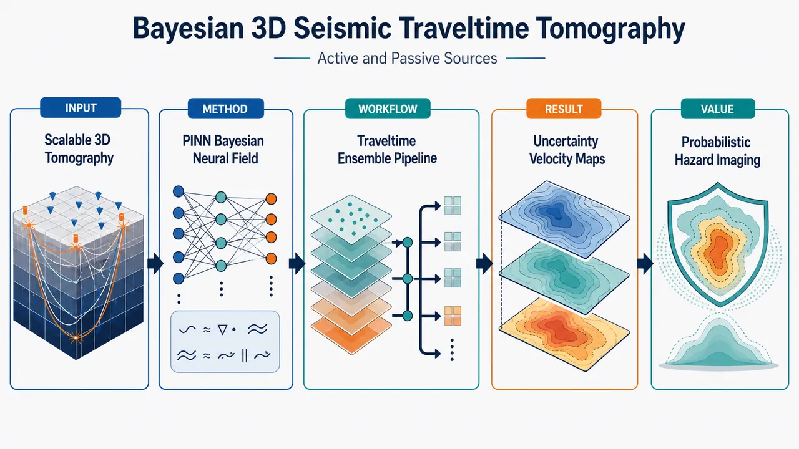
研究问题如何在大尺度三维地震走时层析中，同时融合浅部高分辨率的主动源资料与深部约束更强的被动源地震资料，并突破传统网格化贝叶斯反演的参数爆炸、存储巨大和震源位置不确定性难以传播的问题，生成带可靠不确定性量化的三维地下速度模型。创新方法将地下速度表示为可连续查询的神经速度场，用PINN无网格求解程函方程生成源—接收器走时，再用函数空间粒子变分推断更新速度模型集合；Aha点是把被动源震源位置和发震时刻作为干扰参数解析边缘化，通过 C_data+GCₛG^T 将震源不确定性转化为走时协方差，而不是把数以万计震源参数直接塞进贝叶斯反演。工作流程输入主动源走时、被动源走时、台站与震源先验位置；每个粒子用神经网络表示一个三维速度场；PINN在空间配点上满足程函方程并预测走时；对主动源使用普通数据协方差，对被动源用修正协方差吸收震源误差；伴随梯度计算速度场后验梯度；fParVI推动多个速度粒子向高概率区域移动并保持分散；输出三维速度后验集合、均值速度体、不确定性图和被动源重定位结果。关键结果合成实验在100×200×70 km三维模型中使用543个主动源、111个主动源接收器、300个被动源和38个被动源接收器，证明在被动源先验位置有明显偏差时，边缘化方法比错误固定震源更稳健、伪影更少。真实南海海槽纪伊半岛外海数据使用超过380,000个走时拾取，成功成像Kumano Pluton等结构，并给出深部低速区的数据一致不确定性图；被动源后验平均位置主要垂向移动10–15 km，与既有重定位结果一致。应用价值为俯冲带、海沟边缘和区域地震监测提供可扩展的概率化三维速度建模工具，不只给出一张速度图，而是给出速度模型集合、可信度热区、结构可靠性边界和震源重定位结果，可用于地震定位、灾害评估、深部构造解释和争议性低速异常的可信度判断。第一部分：核心概览
该研究将物理信息神经网络（PINN）、连续神经速度场表示与函数空间粒子变分推断（fParVI）结合，构建面向主动源与被动源联合资料的三维贝叶斯走时层析成像框架。核心突破在于绕开传统网格化三维贝叶斯反演的高维瓶颈，并通过解析边缘化处理被动源震源位置与发震时刻不确定性。合成实验与南海海槽纪伊半岛外海真实数据应用显示，该框架可提供三维速度模型集合、震源重定位与空间不确定性图，是大尺度俯冲带贝叶斯层析成像的重要方法学推进。
---
第二部分：结构化快速回顾
《Bayesian three-dimensional seismic travel-time tomography for active- and passive-source seismic data using physics-informed neural network》（None，）
背景
三维地震速度模型是地震监测、灾害评估与俯冲带结构解释的基础。主动源数据擅长约束浅部结构，被动源地震数据更有利于解析深部结构。传统三维贝叶斯走时层析受制于维数灾难、网格参数爆炸和集合存储成本，难以在区域尺度开展严格不确定性量化。
方法
采用神经网络表示速度结构，用PINN求解程函方程得到走时场；在速度函数空间中通过fParVI / fSVGD更新粒子集合。对被动源的震源位置与发震时刻不确定性，采用高斯假设 + 一阶线性化进行解析边缘化，将震源不确定性并入数据协方差矩阵；随后利用速度后验样本进行震源重定位后处理。
结果
合成三维实验包含543个主动源、111个主动源接收器、300个被动源、38个被动源接收器，噪声方差为 0.1² s。真实数据应用使用南海海槽纪伊半岛外海超过 380,000个走时拾取，联合海洋主动源测线与天然地震资料，成功解析Kumano Pluton等关键地质结构，并给出深部低速区可靠性的定量不确定性图。
讨论
神经连续表示使模型自由度与输出网格分辨率解耦，缓解三维网格化反演的参数和存储扩张。被动源边缘化避免将数以万计震源参数直接并入贝叶斯反演，从而保持速度结构估计的可计算性。
局限
被动源边缘化依赖高斯先验、 Gaussian likelihood、一阶Taylor线性化；当震源位置误差过大或走时对震源参数高度非线性时，近似可能失效。三维问题仍需要大量查询点和配点，PINN训练与伴随梯度计算仍具较高计算成本。
结论
该框架实现了主动源—被动源联合三维贝叶斯走时层析的可扩展实现，可同时输出速度结构后验集合、数据一致的不确定性图和被动源重定位结果，为大尺度俯冲带三维速度建模提供了概率化替代方案。
---
第三部分：逐章节冷凝解析
Summary
- Large-scale Bayesian 3D tomography is the central target
研究目标是为主动源与被动源联合走时资料构建可行的三维贝叶斯速度层析成像框架，服务于地震活动监测和灾害评估。核心问题被定义为大尺度三维走时层析中的不确定性量化困难：*"Accurate three-dimensional (3D) seismic velocity modeling through seismic travel-time tomography using both active- and passive-source data provides critical underpinning models for seismicity monitoring and hazard assessment."* 同时，走时层析的反问题本质决定了单一最优模型不足以支撑可靠解释：*"Because travel-time tomography is an inherently ill-posed inverse problem, uncertainty quantification (UQ) of the estimated models using Bayesian methods is also important for reliable downstream interpretations and analyses."*
- Conventional grid-based Bayesian inference faces dimensional collapse
传统网格化三维贝叶斯反演面临维数灾难和计算瓶颈，尤其在区域尺度或板块边界尺度模型中，参数维度、存储和计算成本随网格加密急剧上升。关键判断为：*"Bayesian inference for 3D tomography based on conventional grid-based representations faces the “curse of dimensionality” and severe computational bottlenecks."* 这一限制导致严格贝叶斯不确定性量化在大尺度三维走时层析中长期缺位：*"rigorous Bayesian UQ for margin-wide 3D travel-time tomography has remained largely unexplored."*
- Meshless PINN plus neural velocity representation enables tractable inference
方法学核心是无网格三维贝叶斯走时层析：速度结构由神经网络连续表示，走时场由PINN约束程函方程，后验由function-space Particle-based Variational Inference（fParVI）近似。关键概括为：*"we propose a meshless 3D Bayesian travel-time tomography method that combines physics-informed neural networks (PINNs) with a neural representation of the velocity structure, enabling tractable and data-efficient Bayesian inference through function-space Particle-based Variational Inference (fParVI)."*
- Passive-source uncertainty is handled by analytical marginalization
被动源震源位置与发震时刻不确定性不直接作为高维未知量进入主反演，而被视为nuisance parameters并解析边缘化；重定位在后处理中完成。核心设计为：*"we introduce an analytical marginalization strategy that treats uncertain parameters related to the origin time and location as nuisance parameters, with passive-source relocation carried out in post-processing."*
- Synthetic experiments demonstrate robustness against biased prior source locations
合成实验验证三维情形下方法的可用性，并显示在先验震源位置存在偏差时，比标准固定震源方法更稳健。关键结论为：*"These experiments demonstrate its robustness against biased prior source locations compared to standard methods that suffer from overfitting."*
- Real Nankai application uses more than 380,000 picks
真实数据应用位于南海海槽纪伊半岛外海，联合海洋主动源调查与天然地震，使用超过 380,000个走时拾取：*"we applied the method to a real-world dataset off the Kii Peninsula, Nankai Trough, using over 380,000 travel-time picks from marine active-source surveys and natural earthquakes."* 后验集合解析出Kumano Pluton，并为深部低速区争议提供可靠性量化：*"Our probabilistic 3D ensemble successfully resolves key geological features, such as the Kumano Pluton, and provides data-consistent uncertainty maps that offer new quantitative insights into the reliability of previously debated deep low-velocity zones."*
- Hypocenter relocation is geologically and methodologically consistent
后验平均震源位置主要发生垂向移动，幅度为 10–15 km，与既有确定性重定位一致：*"The posterior mean hypocenters shifted mainly in the vertical direction by 10-15 km, consistent with the deterministic relocation results of a previous study."*
- Continuous neural representation sharply reduces storage cost
连续神经表示显著减少速度模型集合的存储需求，强化了三维贝叶斯层析在大尺度数据上的可扩展性：*"the continuous neural representation drastically reduces storage requirements for the entire ensemble velocity model, highlighting the scalability and data efficiency of the proposed framework."*
---
1 Introduction
- Subduction-zone 3D velocity models underpin hazard science
三维地震速度与弹性结构是俯冲带地震定位、震源机制解释、危险性评估的底层模型。开篇明确指出：*"Understanding the three-dimensional (3D) seismic velocity and elastic structure of subduction zones is critical for accurate seismicity monitoring and hazard assessment."* 因此，seismic tomography仍是获取地下结构的主工具：*"Seismic tomography remains a primary tool for retrieving such subsurface information."*
- Active and passive data provide complementary depth sensitivity
被动源层析依赖大量地方地震，适合俯冲带广泛应用；主动源调查针对潜在大震孕震区高分辨率探测。两者互补性非常明确：*"local passive-source data generally resolve deeper structures, whereas active-source data provide high-resolution images of shallower depths."* 因此，联合数据可从浅部地壳到更深部构建完整三维P波速度模型：*"Integrating both datasets is, therefore, effective for obtaining a comprehensive 3D P-wave velocity model from the shallow crust down to greater depths."*
- Recent field trend is unified active-passive 3D modeling
领域趋势已经从单独资料解释转向主动源—被动源联合统一模型，相关近年工作包括 Arnulf et al. 2022、Bassett et al. 2022、Yamamoto et al. 2022、Bassett et al. 2025。表达为：*"recent efforts have focused on combining these datasets to construct unified 3D velocity structure models."*
- Velocity inversion is ill-posed and requires UQ
速度结构估计受噪声、观测稀疏和非唯一性影响，是典型ill-posed inverse problem。可靠下游解释不能只依赖单一反演模型：*"Velocity structure estimation is inherently an ill-posed inverse problem due to noise and the sparsity of observation data."* 不确定性量化被定义为必要条件：*"it is crucial to also be able to quantify the uncertainty of estimated velocity models."*
- Bayesian methods are natural but costly for nonlinear tomography
贝叶斯推断在地球物理UQ中具有基础地位：*"Bayesian inference has played a central role in uncertainty quantification (UQ) in geophysical studies."* 对高度非线性的走时层析，已有基于采样或粒子变分推断的方法，例如 Bodin & Sambridge 2009、Piana Agostinetti et al. 2015、Zhang & Curtis 2020a、Yang et al. 2025。问题在于大尺度三维速度结构会造成参数空间高维化：*"when targeting broad 3D velocity structures, the parameter space becomes high-dimensional, leading to the “curse of dimensionality”, and Bayesian inference becomes practically intractable."*
- Neural representations decouple degrees of freedom from grids
神经网络速度场可视为implicit neural representation / coordinate-based neural field representation在科学反演中的应用。优势是连续、无网格、自由度不随输出网格分辨率直接增长：*"Neural representations provide a continuous, mesh-free parameterization whose degrees of freedom are decoupled from grid resolution."* 这可缓解网格细化导致的参数数目、存储和计算成本指数级增长：*"This mitigates the exponential growth in parameters and storage/compute costs that arises when refining a grid."*
- PINNs provide mesh-free PDE-constrained travel-time solvers
PINN用于以神经网络近似偏微分方程解，是无网格PDE求解器。表述为：*"physics-informed neural networks (PINN) Raissi et al. (2019), which approximate the solution of partial differential equations (PDEs) using NNs, have gained attention as mesh-free PDE solvers."* 走时层析中已有PINN与NN速度表示结合的无网格方法：*"A fully mesh-free travel-time tomography method combining PINNs with an NN-based velocity representation has been proposed."*
- Prior PINN Bayesian tomography was limited to 2D active-source profiles
Agata et al. 2023已将该类方法扩展到贝叶斯推断，Agata et al. 2025用于纪伊半岛外海二维P波速度测线层析。但关键空白仍是三维与被动源联合：*"Bayesian tomography based on neural representations and PINNs has so far been limited to 2D profiles beneath seismic survey lines using active sources, and its applicability to 3D model estimation remains unexplored."*
- Passive-source uncertainty creates a multi-scale Bayesian bottleneck
被动源地震的震中、震源深度和发震时刻依赖速度模型，不同于主动源已知位置与时间。直接使用目录震源参数可能给速度结构引入伪影：*"Using these parameters directly in tomography can introduce artifacts into the velocity structure."* 标准确定性层析常同步反演震源位置和速度结构，但在贝叶斯框架下，地方地震数量可能达到数万，导致高维多尺度问题：*"treating local passive sources, which can number in the tens of thousands, as unknown parameters alongside the velocity structure in a Bayesian framework results in a high-dimensional multi-scale problem that is computationally prohibitive."*
- Marginalization converts source uncertainty into tractable velocity inference
实用策略是将被动源参数视为nuisance parameters并边缘化，使主贝叶斯估计集中于速度结构：*"A practical approach to address the uncertainty of local passive-source parameters is to treat them as nuisance parameters and account for their effects through posterior marginalization."* 该策略依赖Gaussian assumptions and linearization：*"fundamentally relies on analytical marginalization based on Gaussian assumptions and linearization."*
- Nuisance parameters are recovered by post-processing
被边缘化的参数并非科学上无关；震源位置本身常是目标参数。Agata et al. 2021展示可在主参数样本基础上后处理恢复其后验分布：*"the posterior distribution of parameters eliminated by marginalization can be obtained through a post-processing step using the samples of the main estimated parameters."* 因此形成两阶段框架：先估计速度结构，后重定位被动源。
- Primary contribution is 3D PINN Bayesian tomography with active and passive data
目标被明确限定为主动源与地方被动源联合的PINN-based 3D travel-time tomography：*"The objective of this study is to perform PINN-based 3D travel-time tomography using both active and local passive sources."* 主要贡献是把Agata et al. 2023的PINN贝叶斯层析从低维扩展到三维，并检验现实场景适用性：*"Our primary contribution is to extend the PINN-based Bayesian tomography method described in Agata et al. (2023) to 3D model estimation and to evaluate its applicability in realistic settings."* 其领域定位为俯冲带段尺度三维走时贝叶斯UQ的早期实现之一：*"this is one of the first attempts to realize Bayesian UQ for 3D travel-time tomography at the scale of a subduction-zone segment."*
---
2 Methods
#### 2.1 PINN-based Bayesian seismic tomography for well known source locations
- Velocity and travel time are both neural functions
速度结构和走时函数分别用神经网络表示：v(x) ≃ fᵥ(x, θᵥ)，T(x, xₛ) ≃ fᵀ(x, xₛ, θᵀ)。原始定义为：*"We introduce NNs to represent the velocity structure and the travel-time function."* 这里 θᵥ 是速度网络权重，θᵀ 是走时网络权重；速度网络给定后，走时网络通过物理约束训练。
- The travel-time PINN enforces the eikonal equation
走时场必须满足程函方程：
[
|nablaₓ f_T(x,xₛ,θ_T)|² - 1/v²⁽x)=0
]
训练目标是最小化配点上的程函残差。关键表述为：*"the travel-time NN is trained to satisfy the eikonal equation through the PINN framework."* 损失函数在 N_c 个随机配点上计算：*"N_c is the number of collocation points randomly sampled from the domain Ω."*
- The source condition is imposed as a hard constraint
走时场必须满足震源点处走时为零：f_T(xₛ, xₛ, θ_T)=0。该条件不是软惩罚项，而通过乘法因子分解硬约束实现：*"The source condition f_T(xₛ,xₛ,θ_T)=0 is imposed as a hard constraint through multiplicative factorization."*
- The trained PINN predicts arbitrary source-receiver travel times
训练后，PINN可在域 Ω 内任意源—接收器位置预测走时：*"After training, the PINN can predict travel time for any source and receiver locations in the domain Ω."* 这一点是无网格表达的关键，因为不需要为每个源在规则网格上显式存储完整走时场。
- Bayesian inference is formulated in function space rather than grid space
速度网络输出在查询点形成向量 v = [fᵥ(xᵢ, θᵥ)]。贝叶斯后验写作 p(v|Tₒbs) ∝ p(Tₒbs|v)p(v)。由于 v 是神经网络函数输出，先验不应作为离散网格参数分布定义，而应作为函数随机过程：*"Because v is produced as the output of a NN, p(v) should not be formulated as a finite-dimensional probability distribution over discretized grid-point parameters. Instead, it should be defined as a stochastic process over functions, such as a Gaussian process."*
- Known active-source likelihood assumes diagonal independent data errors
对主动源或已知源位置，似然采用高斯误差模型，残差为 Δt(xₛ,i)=tₒbs,i−t_calc(xₛ,i)。数据误差按源独立，且对已知源位置设为对角协方差矩阵：*"In the case of well-known source locations, we assume that the data error is independent for each source, i.e., C_data is a diagonal matrix."*
- ParVI approximates the posterior using interacting particles
Particle-based Variational Inference（ParVI）通过移动粒子集合逼近目标后验。其代表算法 SVGD 已在地球物理中流行。方法描述为：*"ParVI iteratively transports a set of particles to approximate a target posterior distribution."* SVGD更新包含两项：driving force 将粒子推向高后验密度区，repulsive force 保持粒子多样性。原文解释为：*"The “driving force” term is a smoothed gradient of the log-posterior density that moves the particles toward the high-density regions of the posterior PDF."* 以及：*"The “repulsive force” term promotes diversity and prevents particles from concentrating around the mode of the target PDF."*
- Function-space SVGD updates neural weights through output Jacobians
因为未知量是神经网络权重而目标后验定义在速度函数上，采用 function-space ParVI / fSVGD。机制是先在函数输出空间定义更新，再通过输出对权重的Jacobian映射到参数空间：*"function-space ParVI (fParVI), which defines the ParVI update rule on the output function space of the NNs while applying the actual updates to the weight space of the NNs."* 优势是函数空间后验比权重空间简单：*"it forces ParVI to explore the PDF in function space, which is expected to be far less complex than the weight space."*
- The posterior is represented as an ensemble of neural velocity functions
优化后速度后验由一组神经网络粒子输出近似为Dirac delta混合：
[
p(v|Tₒbₛ) approx frac1Nsumᵢ δ(v-vᵢ₎
]
原文表述为：*"the target posterior PDF is approximated by a Dirac delta function."* 这使得后验均值、标准差和空间不确定性图可直接由速度网络集合计算。
- Adjoint gradients are required because likelihood depends on velocity implicitly
走时残差似然并不显式依赖速度向量，而是通过PINN求解的走时场间接依赖速度。因此不能直接求 ∇ᵥ log p(v|Tₒbs)：*"the likelihood function ... does not explicitly depend on v. Thus, ∇ᵥ log p(v|Tₒbs) cannot be calculated directly."* 解决方式是加入Lagrange乘子项，相当于离散伴随法：*"one can calculate the gradient by adding a Lagrange multiplier term to the negative log-PDF. This is a discrete version of the adjoint method."*
- The full algorithm alternates PINN training, adjoint gradient calculation, and fParVI update
每个粒子包含速度网络参数 θᵥ 与走时网络参数 θᵀ；初始化采用 He’s initialization：*"We applied a widely used initialization method to the NN parameters, namely He’s initialization."* 每轮迭代先为当前速度结构训练走时PINN，再解伴随方程得到负对数后验梯度，最后用fParVI更新速度网络。流程为：*"At each iteration, we first train each travel-time NN ... Then, we formulate and solve the adjoint equation ... Finally, we update the parameters of the velocity NN by fParVI."*
- The particle-wise workflow is highly parallelizable
除fParVI核函数计算外，各粒子训练和梯度计算相互独立，天然适合并行计算：*"This procedure ... is independent for each particle except for the computation of the kernel function in fParVI. This allows parallel computation to be performed efficiently."*
- 3D scalability requires sparse priors rather than dense RBF kernels
从1D/2D扩展到3D理论上直接，但需要更多速度查询点 Nᵥ 与PINN配点 N_c，数量级可达数万以上：*"we expect a larger number of evaluation and collocation points Nᵥ and N_c to be required for 3D problems, i.e., tens of thousands or more."* 以往RBF核高斯过程会产生稠密协方差矩阵，三维扩展性差：*"the RBF kernel results in a dense covariance matrix, which does not scale well to 3D problems."* 因此采用Wendland C4 sparse kernel，其有限支撑使远距离协方差精确为零：*"we adopted a sparse kernel named the Wendland C4 kernel function ... whose kernel value becomes exactly zero beyond a certain distance."*
---
#### 2.2 Accounting for uncertainty of passive-source parameters by marginalizing posterior PDF and relocation as a post-process
- Passive-source errors are parameterized as hypocenter and origin-time shifts
被动源不确定参数包括震源位置偏移 δxₛ,i 与发震时刻偏移 δtₒᵣᵢ,i。似然函数从已知源位置情形扩展为：观测残差不仅包含走时预测误差，还包含发震时刻整体平移。定义为：*"δxₛ,i and δtₒᵣᵢ,i are the shifts of the hypocenter location and the origin time of the i-th event, respectively."* 统一记号为 δφᵢ=[δxₛ,i, δtₒᵣᵢ,i]ᵀ：*"we introduce a new variable δφᵢ₌[δxₛ,i,δtₒᵣᵢ,i]^T for the source parameters."*
- The joint posterior is too costly to sample directly
联合后验包含速度结构和所有事件的震源参数：
[
p(v,δφ₁,dots,δφ_N|Tₒbₛ)
]
但直接对其贝叶斯估计会导致高维多源参数问题。因此采取边缘化而非联合采样：*"Rather than conducting Bayesian estimation directly for the joint posterior PDF, we marginalize over source-parameter uncertainty to obtain the posterior PDF of the velocity structure."*
- Velocity and source-prior independence is assumed
边缘化时假设速度结构先验与震源参数先验独立，即 p(v|δφᵢ)=p(v)。原文说明：*"Here, we assume that p(v|δφᵢ₎₌ₚ₍ᵥ₎, which is a reasonable assumption in most cases."* 这使后验可分解为速度先验乘以各源边缘似然的乘积。
- Analytical marginalization relies on Gaussian assumptions and first-order linearization
一般情况下源参数积分不可解析：*"this integration is not tractable analytically in general."* 在高斯似然与高斯震源先验下，通过对震源参数在先验均值附近进行一阶Taylor展开，使积分成为高斯积分：*"this integration can be approximated by linearizing the forward modeling of travel time with respect to the source parameters around their prior mean based on a first-order Taylor expansion."*
- Source uncertainty inflates and correlates the data covariance matrix
边缘化后，每个被动源的边缘似然与已知源位置公式形式相同，但数据协方差从 C_data 替换为：
[
Cdₐₜₐ+Gᵢ Cₛ,ᵢGᵢ^T
]
关键结论为：*"this likelihood function is equivalent to Equation 8 in the case of well-known source locations, taking the prior mean of uncertain source locations as the fixed sources and replacing the data covariance matrix C_data with C_data+Gᵢ Cₛ,i Gᵢ^T."* 这意味着震源不确定性被吸收到似然函数中：*"the source parameter uncertainty is incorporated into the likelihood function through the modification of the data covariance matrix."*
- The modified covariance becomes dense but remains manageable per event
震源位置和发震时刻误差会在同一事件的多个台站走时之间引入相关误差，因此源内协方差矩阵变为稠密：*"This modification introduces covariance components into each source-wise data covariance matrix, making it fully dense."* 只要单个事件观测点数量适中，例如几百个，计算成本仍可接受：*"This does not cause a serious computational cost issue if the number of observation points for each source is moderate, i.e., several hundred."*
- The linearization is local and valid for sufficiently small source uncertainty
一阶线性化不是全局近似，而是固定速度模型下走时对震源参数的局部近似：*"The linear approximation used here should be understood as a local approximation of the calculated travel times with respect to the source parameters for each fixed velocity model."* 适用条件是震源位置和发震时刻不确定性足够小，使走时变化可由局部灵敏度表示：*"It is expected to be reasonable when the uncertainty in hypocenter location and origin time is sufficiently small that the travel-time changes over this uncertainty range are well represented by the local travel-time sensitivities."*
- Automatic differentiation makes Gᵢ practical at scale
Gᵢ 是走时预测加发震时刻偏移对震源参数的Jacobian。现代机器学习库使该梯度获取比传统解析推导或有限差分更直接：*"recently developed machine-learning libraries, such as PyTorch and JAX, allow us to obtain the gradient of the forward modeling with respect to the nuisance parameters Gᵢ far more straightforwardly."*
- Monte Carlo marginalization is more accurate but too expensive for many sources
虽然Monte Carlo积分能更精确处理源参数边缘化，但当源数量很大时代价过高：*"Although the integration can be approximated more accurately by using Monte Carlo integration ... the computational cost becomes prohibitively high for a large number of source locations."* 因此选择解析高斯近似作为可扩展折中。
- Active and passive sources can be handled in one likelihood framework
已知主动源使用原始 C_data；不确定被动源使用修正协方差 C_data+GᵢCₛ,iGᵢᵀ。统一处理方式为：*"Active and passive sources, whose locations and origin times are well known and uncertain, respectively, can be handled simultaneously by simply using the original data covariance matrix for the former and the modified one for the latter."*
- Passive-source relocation is recovered after velocity inference
速度后验样本由fParVI-PINN获得后，可通过Monte Carlo积分近似震源参数后验：*"Because samples from p(v|Tₒbs) are available through the fParVI-PINN framework ... we can approximate the integration in Equation 26 using Monte Carlo integration."* 在同样Laplace近似下，震源后验成为多个高斯PDF的加和，其均值和协方差可闭式计算：*"this integration is approximated by a summation of Gaussian PDFs, for which the posterior mean and covariance matrix are calculated in closed form."*
---
3 Numerical experiments
- Synthetic experiments validate 3D active-passive Bayesian tomography
数值实验目标是检验主动源与地方被动源联合情况下的三维贝叶斯走时层析能力：*"To validate the ability of the proposed method to perform Bayesian 3D travel-time tomography using active and local passive sources, we applied the proposed method to a synthetic test."*
---
#### 3.1 Problem and analysis settings
- The synthetic true model spans 100 × 200 × 70 km
合成速度模型空间范围为 x方向100 km、y方向200 km、z方向70 km：*"We used a true velocity structure spanning 100 km, 200 km, and 70 km in the x-, y-, and z-directions, respectively."* 背景速度随深度单调增大，浅部加入短波长正弦结构，深部加入长波长正弦结构：*"The background velocity monotonically increases with depth, including sinusoidal structures of shorter and longer wavelength components embedded in the shallower and deeper parts of the velocity structure, respectively."*
- The active-source acquisition geometry uses 543 sources and 111 receivers
主动源共有 543个，主动源接收器共有 111个；源间距为 1 km，接收器间距为 5 km，沿 x=10、30、50 km 三条线布设：*"A total of 543 active sources and 111 receivers were employed at 1-km and 5-km spacing along each of x = 10, 30, and 50 km, respectively."*
- The passive-source geometry uses 300 events and 38 receivers
被动源共有 300个，随机分布于 30 km ≤ x ≤ 70 km、30 km ≤ y ≤ 170 km、−41 km ≤ z ≤ −29 km：*"300 passive sources were randomly generated in the domain of 30 km ≤ x ≤ 70 km, 30 km ≤ y ≤ 170 km, and −41 km ≤ z ≤ −29 km."* 被动源接收器共有 38个，以 10 km 间距沿 x=65 km 和 x=75 km 两条线布设：*"A total of 38 passive-source receivers were employed at 10-km spacing along each of x = 65 and 75 km, respectively."*
- Synthetic travel times are computed by fast marching and corrupted with Gaussian noise
合成走时由fast marching method计算，参考 Sethian 1996 与 Ganster 2023：*"we calculated the travel time for each source-receiver pair using the fast marching method."* 噪声为高斯噪声，方差 0.1² s，同一数值用于 C_data 的对角项：*"We added Gaussian noise with a variance of 0.1² s to the synthetic travel-time data. We also applied this value to the diagonal components of C_data."*
- Case 1 tests ideal recovery using true passive-source locations
Case 1 将真实震源位置作为参考被动源参数 xₛ,i^ref，用于检验理想情况下恢复真实速度结构的能力：*"In Case 1, we used the true source locations as the reference passive source parameters xₛ,i^ref. The purpose here was to validate the ability of the proposed method to recover the true velocity structure in an ideal situation."*
- Case 2 tests robustness to biased source priors
Case 2 使用显著偏离真实位置的参考震源位置，并在走时数据中加入相应偏差，模拟常规目录震源解存在误差的现实场景：*"In Case 2, we used xₛ,i^ref that deviated significantly from the true locations and added deviations to the travel-time data."* 这些偏离参数对应常规震源目录或初始解：*"These deviated parameters correspond to initial guesses typically obtained from routinely determined solutions or catalogues."*
- Source-parameter priors are deliberately conservative
两个case中，震源位置先验标准差均为 x、y、z方向10 km；发震时刻标准差为 10/vₚᵣᵢₒᵣ₍ₓₛ,i^ref) s：*"In both cases, we specified the standard deviation of the source location prior as 10 km in the x-, y-, and z-directions. That of the origin time was set to 10/vₚᵣᵢₒᵣ₍ₓₛ,i^ref) s."* 这一发震时刻不确定性约为 1–3 s，相对JMA优质震源标准较保守：*"This setting corresponds to an uncertainty of the order of 1–3 s and is relatively conservative compared with the JMA general criterion for well-determined hypocenters, which requires origin-time errors of less than 1.0 s."*
- A wrong-fixed-location reference case isolates the benefit of marginalization
为验证源参数边缘化的有效性，还设置Case 2参考实验：所有被动源固定在错误猜测位置 xₛ,i^ref。目的在于比较“边缘化源不确定性”与“错误固定震源”的差别：*"we also compared a reference case of Case 2 where all the passive sources were fixed to xₛ,i^ref, i.e., the wrong guessed locations."*
- The velocity prior is a Gaussian process with Wendland kernels
速度结构先验采用由Wendland kernel functions定义的高斯过程：*"We adopted a Gaussian process as the prior probability distribution of the velocity structure, defined by the Wendland kernel functions."* 均值为简单一维速度结构：*"The mean velocity was a simple 1D velocity structure."* 先验标准差设为 0.5 km/s，对应约 1 km/s 的 2σ 范围：*"The standard deviation of the prior distribution was set to 0.5 km/s. This choice is conservative, making the 2-σ range of the velocity around 1 km/s."*
---
第四部分：深度理解与语言支持
1. 术语解析
- Curse of dimensionality（维数灾难）
在三维走时层析中，若用规则网格表示速度模型，网格加密会使未知参数数量按三维体积增长。贝叶斯方法还需表示整个后验分布而非单个最优解，因此计算量和存储量急剧上升。这里的微妙点是：神经表示并非从数学上消除高维反问题，而是通过连续函数参数化缓解网格自由度与分辨率绑定的问题。
- Meshless parameterization（无网格参数化）
速度结构不是定义在固定网格节点上，而是由坐标输入神经网络直接输出速度值。它允许在任意空间位置查询速度，也避免为每个网格节点设置独立参数。该表达不同于“没有离散采样”：训练、先验评估和似然计算仍需查询点与配点，只是未知函数本身不再是网格数组。
- Function-space ParVI / fSVGD（函数空间粒子变分推断）
普通神经网络贝叶斯推断可在权重空间更新粒子，但权重空间存在强非唯一性：不同权重可能表示近似相同函数。fParVI在函数输出空间定义粒子相互作用，再通过Jacobian映射回权重更新，使推断对象更接近地球物理上真正关心的速度场。
- Nuisance parameters（干扰参数 / 非主目标参数）
这里指震源位置和发震时刻在速度结构反演中造成不确定性，但主反演阶段不直接估计它们。需注意“nuisance”并不等于“不重要”；震源位置本身也可具有地震学意义，因此该研究通过后处理恢复其后验分布。
- Analytical marginalization（解析边缘化）
指把不想直接采样的震源参数积分掉，得到只关于速度结构的边缘后验。这里依赖高斯分布和线性化，使积分有闭式近似。其效果相当于把震源不确定性转换成走时数据误差协方差的一部分。
2. 疑难查证
- 为什么边缘化震源参数等价于修改数据协方差？
单个被动源的走时误差由两部分组成：拾取误差和震源参数误差传播到走时上的影响。若走时对震源参数在参考点附近可线性化，则有
[
Δ t approx ϵdₐₜₐ+Gδφ
]
其中 ε_data 的协方差为 C_data，震源参数 δφ 的协方差为 Cₛ。线性传播后，Gδφ 的协方差为 GCₛG^T。两者独立时，总协方差为
[
Cdₐₜₐ+GCₛG^T
]
所以边缘化不是“忽略震源误差”，而是把其影响转化为同一事件内各台站走时之间的相关误差。
- 为什么PINN层析需要伴随法？
速度网络输出速度场，走时网络通过程函方程训练得到走时。观测误差直接比较的是走时，不是速度。速度对似然的影响经过“速度 → PINN程函解 → 走时预测 → 残差”这条隐式链路。直接自动微分整个训练过程成本很高且不稳定；伴随法通过约束优化形式有效计算目标函数对速度场的梯度，是PDE约束反演中的标准技术。
- 为什么神经表示有助于贝叶斯集合存储？
传统三维集合模型需要为每个粒子保存完整三维网格速度体。若网格为数百万节点，几十到上百个粒子会造成巨大存储。神经表示只需保存每个粒子的网络权重，任意位置速度可按需查询。代价是查询时需要前向传播，但存储随输出网格分辨率显著解耦。
---
第五部分：创新评估与关联
1. 创新性判断
- 从二维主动源PINN贝叶斯层析推进到三维主动—被动联合层析
过去相关PINN贝叶斯层析主要局限于1D/2D或主动源测线。该研究将框架扩展到三维体模型，并同时吸收主动源和地方地震资料。相对于近2–5年的神经场地球物理反演与PINN走时层析，关键新意在于三维贝叶斯UQ与多源类型联合，而不是单纯用神经网络拟合速度。
- 在函数空间进行贝叶斯速度结构推断
fParVI使粒子更新发生在速度函数输出空间，而非神经网络权重空间。这解决了神经网络权重非唯一性对贝叶斯后验表达的干扰，也允许直接施加具有地球物理意义的速度结构先验。
- 被动源参数不确定性通过解析边缘化进入三维贝叶斯层析
前人确定性层析常同步反演震源和速度；低维贝叶斯研究可联合采样震源参数。但在三维区域尺度、数千至数万事件情形下，联合贝叶斯采样不可行。该研究通过 C_data → C_data+GCₛG^T 的协方差修正，把震源不确定性纳入速度反演，同时保留后处理重定位能力，解决了“可计算性”和“震源不确定性传播”之间的矛盾。
- 稀疏Wendland先验提升三维扩展性
以往RBF高斯过程先验会产生稠密协方差矩阵，难以支持三维大量查询点。Wendland C4有限支撑核使先验协方差稀疏化，是从二维演示走向三维实际规模的重要工程—统计结合点。
- 真实俯冲带尺度贝叶斯UQ具有领域稀缺性
南海海槽纪伊半岛外海应用使用超过 380,000个走时拾取，并输出Kumano Pluton、深部低速区可靠性和震源垂向重定位等结果。相对于单一确定性三维速度模型，该框架提供概率集合与不确定性图，直接回应地质解释中“结构是否被数据真正约束”的核心问题。
-
13
📊 含图深析
📖 展开分析 + 配图
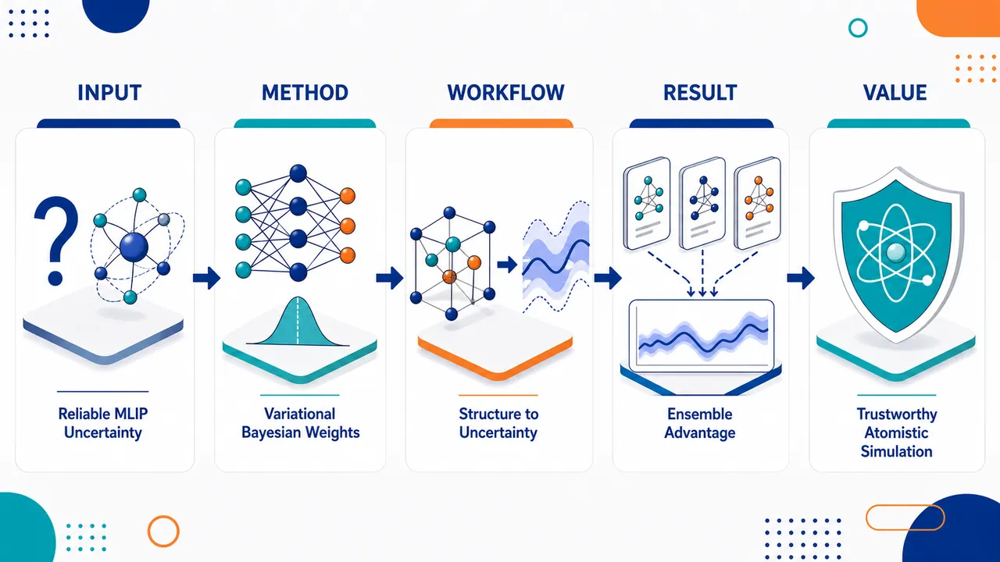
研究问题机器学习原子间势在材料模拟中常遇到训练分布外结构，但普通神经网络只给出确定性能量/力预测，缺少可信的不确定性；论文核心问题是：理论更严格的贝叶斯神经网络，是否真的比简单的深度集成更适合 MLIP 的不确定性量化？创新方法在 ænet-PyTorch 中接入基于变分推断的 Bayesian Neural Networks，用 Pyro/TyXe 将 Behler–Parrinello 神经网络权重变成后验分布；关键 Aha 点是能量-力联合训练时用 Pyro trace/replay 锁定同一组随机权重样本，使预测能量和由其梯度得到的力保持物理一致，同时与 5 成员 Deep Ensemble 做系统对照。工作流程输入 TiO₂ 晶体结构或 QM7 分子结构 → 用 Behler–Parrinello ACSF 描述原子局域环境 → 进入两层 15 单元 tanh 原子神经网络 → 分别训练 Deep Ensemble 或变分 BNN → TiO₂ 可联合能量与力标签训练，QM7 训练原子化能 → 推理时 DE 用 5 个模型预测方差给不确定性，BNN 用 20 个后验权重样本给能量均值和不确定性 → 用 MAE、RMSE、NLL、校准曲线、sharpness、Spearman 相关和 Overlap Score 评估。关键结果在 7,815 个 TiO₂ 结构和 7,165 个 QM7 分子基准上，Deep Ensembles 在多数预测精度和不确定性量化指标上优于变分 BNN，且推理成本更低、实现更简单；BNN 的亮点集中在部分校准误差指标，以及化学多样性更高的 QM7 能量精度上，可达到竞争性或更优表现。应用价值为材料机器学习势的可靠部署提供方法选择指南：实际主动学习、结构搜索和分子动力学中，若需要低成本、稳健的不确定性估计，Deep Ensemble 仍是强基线；若强调贝叶斯后验解释、置信区间校准和能量-力一致性建模，变分 BNN 提供了可复现的工程框架和改进方向。第一部分：核心概览 (Overview)
该研究在 ænet-PyTorch 中实现基于 变分推断 的 Bayesian neural networks，并与 deep ensembles 系统比较其在 machine learning interatomic potentials 不确定性量化中的表现。基准覆盖 7,815 个 TiO₂ 结构 与 7,165 个 QM7 有机分子，同时考察高数据、低数据、能量-力联合训练等场景。核心结论是：尽管 BNN 具备更强贝叶斯理论基础，DE 在多数精度与 UQ 指标上更优，尤其具有更低推理成本与更简单实现；BNN 的优势主要出现在 QM7 能量精度 与 校准误差 等特定指标。
---
第二部分：结构化快速回顾
《Bayesian Neural Networks versus deep ensembles for uncertainty quantification in machine learning interatomic potentials》（None，）
背景
MLIPs 可显著降低 DFT 等第一性原理方法的计算成本，但标准深度学习模型通常是确定性的，缺乏可靠的 predictive uncertainty。材料模拟中模型常被用于 out-of-distribution data，因此不确定性量化对模型可信度、主动学习和数据选择至关重要。
方法
实现了基于 Pyro、TyXe 和 ænet-PyTorch 的 variational Bayesian neural networks，并与 5-member deep ensembles 比较。模型使用 Behler–Parrinello ACSFs，网络结构为 两层隐藏层、每层 15 个 tanh 单元。TiO₂ 数据集包含 7,815 个结构，QM7 包含 7,165 个小有机分子。TiO₂ 同时测试高数据与低数据、能量-only 与能量-力联合训练；QM7 只进行高数据能量训练。
结果
摘要给出的总体结果显示，Deep Ensembles 在大多数预测精度和不确定性量化指标上优于 variational BNNs。例外主要包括：calibration error，以及化学多样性更高的 QM7 数据集上的能量精度，其中 BNN 可达到竞争性或更优表现。
讨论
DE 的优势来自实现简单、推理成本低、经验表现稳健；其弱点是缺乏严格贝叶斯概率基础，且可能在训练数据覆盖不足区域产生过度自信。VBNN 具备理论一致性，可通过权重后验传播参数不确定性，但训练复杂、计算成本更高，且变分近似可能限制后验表达能力。
局限
提供内容仅覆盖到 3.6 Hyperparameter Optimization 的开头，缺少完整 Results、Discussion、Conclusion、表格数值与补充信息内容，因此无法完整复原逐项实验结果、显著性分析或所有定量对比。
结论
面向当前 MLIP 不确定性量化 的实际应用，deep ensembles 仍是更强的实用基线；variational BNNs 在理论上更优雅，但在浅层 Behler–Parrinello 架构与所测试数据规模下，整体性能尚未系统性超越 DE。
---
第三部分：逐章节冷凝解析 (Section-by-Section Condensing)
Abstract
- Uncertainty quantification is central to reliable MLIPs
神经网络机器学习原子间势 已成为预测原子能量和力的高效工具，但传统深度学习模型难以提供可靠预测不确定性。材料科学中模型常被应用于训练分布外结构，导致 uncertainty quantification 成为可靠性评估的核心需求。原文明确指出：*"A key limitation of traditional deep learning approaches, however, is their inability to provide reliable estimates of predictive uncertainty."* 同时强调应用场景风险：*"Such uncertainty quantification is critical for assessing model reliability, especially in materials science, where often the model is applied on out-of-distribution data."*
- Bayesian neural networks are implemented in ænet-PyTorch
工作核心技术贡献是把 variational Bayesian neural networks 引入 ænet-PyTorch 框架，用于 machine learning interatomic potentials。该实现使 BNN 可用于原子能量和力预测场景。原文表述为：*"we introduce an implementation of Bayesian neural networks with variational inference in the ænet-PyTorch framework."*
- Two benchmark datasets establish both structural and chemical tests
系统比较使用两个数据集：7,815 个 TiO₂ 结构 与 7,165 个 QM7 小有机分子。前者检验同一材料体系内的结构泛化，后者检验跨化学空间的泛化。原文给出具体规模：*"a dataset of 7,815 TiO₂ structures"*，以及 *"the chemically more diverse QM7 dataset of 7,165 small organic molecules."*
- Deep ensembles outperform VBNNs on most metrics
总体发现是：尽管 DE 更经验化、理论基础较弱，但在多数精度和不确定性量化指标上优于 VBNN，并且具有更低推理成本和实现简单性。原文直接概括：*"Deep Ensembles outperform variational Bayesian Neural Networks on most accuracy and uncertainty-quantification metrics across data regimes."*
- BNN advantages are limited to calibration and QM7 energy accuracy
主要例外是 calibration error 和 QM7 energy accuracy。在这些场景下，BNN 具备竞争力甚至更好。原文限定了例外范围：*"the main exceptions being the calibration error and the energy accuracy on the chemically diverse QM7 dataset, where the BNNs are competitive or better."*
---
1 Introduction
- MLIPs address the prohibitive cost of ab initio methods
machine learning interatomic potentials 的出现背景是第一性原理方法，尤其 DFT，计算成本过高。MLIPs 通过从参考计算中学习结构到能量和力的映射，扩展原子模拟的时间尺度和空间尺度。原文指出：*"machine learning interatomic potentials (MLIPs) have emerged as powerful tools to overcome the prohibitive computational cost of ab initio methods such as density functional theory (DFT)."*
- Deep architectures dominate modern MLIPs
现代 MLIPs 主要依赖 feed-forward neural networks 与 graph neural networks。这些模型利用有限参考计算学习原子构型与能量、力之间的关系。原文说明：*"The most promising MLIPs leverage deep learning architectures, such as feed-forward neural networks, and more recently, graph neural networks, to learn the mapping between atomic configurations and their corresponding energies and forces from a limited set of reference calculations."*
- Training-data generation remains a bottleneck
高质量训练集通常来自 DFT 等昂贵参考方法，导致数据规模和多样性受限。稳健 MLIP 不仅需要高精度，还需要 data efficiency。原文强调：*"the high computational cost of first-principles calculations, used as the reference level of theory"* 会 *"severely limits the size and diversity of training datasets."*
- Uncertainty estimates support reliability and active learning
不确定性量化有两个核心功能：防止模拟中产生误导性预测；指导主动学习中新增数据点选择。原文直接提出：*"This calls for finding ways to reliably quantify the uncertainty associated with their predictions, preventing misleading results in simulations, and guiding the selection of informative data points for model refinement in active learning scenarios."*
- Standard neural networks are deterministic
普通深度学习架构通常只输出点估计，没有内生不确定性。原文说明：*"Standard deep learning architectures are inherently deterministic and do not provide any measure of prediction uncertainty."* 因此需要 dropout、conformal prediction、Gaussian Mixture Model、quantile regression、deep ensembles 或 BNNs 等专门方法。
- Deep ensembles are simple and widely adopted
DE 由多个独立初始化的神经网络组成，通过预测方差近似模型不确定性。其优势是简单、适合复杂架构、经验性能强。原文指出：*"deep ensembles (DE), proposed initially in the work from Lakshminarayanan et al., have emerged as one of the most widely adopted techniques"*，原因包括 *"their simplicity and straightforward application to more complicated network architectures, and their robust performance."*
- Deep ensemble uncertainty is empirical rather than Bayesian
原始 DE 通过在同一数据集上训练多个独立网络，以模型间预测方差作为不确定性代理。原文描述：*"the ensembling was achieved by training multiple neural networks independently with different initializations on the same dataset, and the variance across their predictions is used as a proxy for model uncertainty."*
- Deep ensembles can be overconfident outside training support
DE 的关键问题是在训练数据覆盖不足区域可能过度自信。原文指出：*"they sometimes lead to overconfident predictions in regions of configuration space that are poorly represented in the training data."*
- BNNs treat network parameters as random variables
Bayesian neural networks 把权重和偏置视为带先验分布的随机变量，通过贝叶斯定理得到训练数据条件下的参数后验。原文表述：*"BNNs are grounded in the Bayesian probability framework, which treats model parameters, i.e. weights and biases, as random variables with prior distributions."*
- BNN prediction integrates over posterior weight uncertainty
BNN 对新输入的预测来自 posterior predictive distribution，通过对参数后验积分传播模型参数不确定性。给定数据集 (X, Y)、参数 (w)，后验为
[
p(wmidX,Y)=
fracp(YmidX,w)p(w)
p(YmidX).
]
原文解释：*"Predictions are then obtained by sampling from the resulting predictive distribution, which propagates parameter uncertainty and naturally captures uncertainty in the model’s outputs."*
- Exact Bayesian inference is intractable in deep networks
后验预测积分在高维非线性参数空间中不可解析。原文指出：*"The key challenge in this formulation lies in the intractability of the integral in Equation 2, which arises from the high dimensionality and nonlinearity of the parameter space."*
- Variational inference is the scalable alternative to MCMC
MCMC 和 HMC 可采样后验，但在高维深度模型中计算成本过高；variational inference 通过可处理的参数化分布近似真实后验，牺牲部分近似误差换取可扩展性。原文对比为：*"MCMC-based techniques are computationally expensive and often impractical for high-dimensional deep learning models."* 以及 *"variational inference has become a more widely adopted alternative in Bayesian deep learning."*
- Practical limitation of BNNs is training complexity
即使使用变分推断，BNN 仍比确定性网络训练更复杂、计算更重。原文指出：*"inferring the posterior distribution in BNNs remains significantly more complex and computationally demanding than training standard deterministic neural networks."*
- Implementation is based on ænet, Pyro, and TyXe
BNN 实现从 ænet 出发，基于 Basora et al. 的工作，使用 Pyro 概率编程框架和 TyXe BNN 转换工具。原文提供实现位置：*"available at https://github.com/farrisric/bayesaenet"*，并说明：*"We employed the Pyro probabilistic programming framework, designed for Bayesian inference, along with the TyXe library, which provides tools for converting standard neural networks into Bayesian neural networks."*
- Training regimes include energy-only and energy-force models
TiO₂ 模型分别使用 energies only 和 both energies and forces 训练，并在完整数据集和小子集上测试。原文说明：*"The MLIPs were trained using energies only, as well as using both energies and forces, on a dataset comprising 7,815 structures representing various phases of titanium dioxide."*
- QM7 extends evaluation to chemically diverse organic molecules
QM7 包含 7,165 个小有机分子，目标为原子化能，用于检验结论是否可推广到更复杂化学空间。原文描述：*"the atomization energies of 7,165 small organic molecules with up to seven heavy atoms (C, N, O, S)."*
---
2 Uncertainty quantification in neural networks
2.1 Deep Ensembles
- Deep ensembles use multiple independently trained networks
采用 Lakshminarayanan 等人的经典定义：训练 (M) 个网络，每个网络使用相同数据集但不同随机初始化。原文说明：*"we follow the formulation of Lakshminarayanan et al., in which M networks are independently trained on the same dataset with different random initializations."*
- Deep ensemble does not mean deep individual models
这里的 deep ensemble 指方法名称，不表示每个模型本身很深；实际网络较浅。原文澄清：*"the term deep ensemble is used in the conventional sense of the method, and does not refer to the depth of the individual models."*
- The architecture is shallow Behler–Parrinello type
单个网络采用 two hidden layers of 15 units each，与 ænet 中的 Behler–Parrinello 架构一致。原文给出具体结构：*"the networks are rather shallow (two hidden layers of 15 units each), consistent with the Behler–Parrinello architecture adopted in the ænet framework."*
- Prediction mean is ensemble average
对输入原子构型 (x)，每个网络预测 (Eᵢ₌fθ_ᵢ(x))，集成平均为
[
barE=frac1Msumᵢ₌₁MEᵢ.
]
原文说明：*"Given an input atomic configuration x, each model predicts an energy (Eᵢ₌fθ_ᵢ(x))."*
- Uncertainty is sample standard deviation across ensemble predictions
DE 不确定性由预测标准差给出：
[
σ_E=sqrtfrac1M-1sumᵢ₌₁M(Eᵢ₋barE)².
]
原文描述：*"the predictive uncertainty is quantified by the sample standard deviation of the ensemble predictions."*
- Main weakness is limited probabilistic foundation
DE 的方差是启发式不确定性代理，而不是从严格贝叶斯框架推导出的后验不确定性。原文评价：*"their main drawback is the absence of a rigorous probabilistic foundation"*，并进一步指出：*"the ensemble variance provides a practical but heuristic measure of uncertainty, rather than one directly derived from a well-defined Bayesian framework."*
2.2 Variational Bayesian Neural Networks
- BNNs explicitly model architectural uncertainty through weights
BNN 与 DE 的根本差异是将权重作为随机变量并赋予先验 (p(w))。原文指出：*"Unlike DE, Bayesian neural networks explicity model uncertainty in their architecture, by treating weights as random variables with a prior distribution (p(w))."*
- Posterior predictive distribution marginalizes over weights
BNN 的目标是计算 (p(w|D))，再对可能权重配置边缘化。原文描述：*"This yields a posterior predictive distribution that marginalizes over all possible weight configurations."*
- Variational inference approximates the posterior with a guide
VI 使用参数化变分分布 (q_θ(w))，也称 guide，近似真实后验 (p(w|D))。原文定义：*"Variational Inference approximates the true posterior (p(w|D)) over the weights (w), given a dataset (D=(xᵢ,yᵢ₎ᵢ₌₁N), with a variational distribution (also known as guide) (q_θ(w)) parametrized by (θ)."*
- KL divergence measures posterior approximation quality
目标是最小化 (q_θ(w)) 与真实后验之间的 Kullback–Leibler divergence：
[
DKL(q_θ(w)|p(w|D))
=int q_θ(w)łogfracq_θ(w)p(w|D)dw.
]
原文称其为：*"a measures of similarity of two distributions."*
- ELBO avoids direct posterior computation
由于 (p(w|D)) 不可直接计算，训练转而最大化 evidence lower bound：
[
ELBO=łog p(D)-DKL(q_θ(w)|p(w|D)).
]
原文解释：*"Because (łog p(D)) (the log marginal likelihood) is constant with respect to (θ), minimizing (DKL) is equivalent to maximizing the ELBO."*
- Mean-field approximation factorizes the posterior
常用的 mean-field approximation 假设各权重独立：
[
q_θ(w)=prodᵢ qθ_ᵢ(wᵢ₎.
]
原文指出：*"This assumes that the variational distribution factorizes over individual weights."* 该近似导致每个权重有自己的均值和方差：*"each weight (wᵢ) is modeled with its own mean and variance."*
- Mean-field ignores weight correlations but improves tractability
因子化高斯后验忽略权重间相关性，但大幅降低计算复杂度。原文说明：*"While this ignores correlations between weights, treating them as independent variables, it greatly reduces computational complexity and is widely used in practice."*
- Bayes by Backprop enables differentiable stochastic weights
Bayes by Backprop 使用重参数化技巧
[
w=boldsymbolμ+boldsymbolσødotboldsymbolϵ,quad
boldsymbolϵsimN(0,I),
]
使梯度可穿过随机节点。原文指出：*"This formulation allows gradients to flow through stochastic nodes, providing lower-variance gradient estimates than naive score-function methods and making variational Bayesian inference feasible for neural networks."*
- Bayes by Backprop converges more slowly than deterministic training
ELBO 通过 Monte Carlo 估计，且通常样本数很少，甚至只有一个，导致估计噪声较大。原文说明：*"Bayes by Backprop makes convergence slow compared to the usual gradient descent as the ELBO is evaluated via Monte Carlo sampling and typically a small number of samples are used, often just one, making its estimate noisy."*
- LRT reduces gradient variance through activation-level sampling
local reparametrization trick 不在批处理中共享同一个权重矩阵采样，而是对每个数据点的预激活进行采样。原文表述：*"LRT samples the pre-activations of each data point individually, rather than using a single weight matrix across the batch."*
- Flipout uses pseudo-independent perturbations
Flipout 通过每个数据点的秩一符号矩阵引入伪独立扰动，以减少梯度方差。原文说明：*"FO, on the other hand, introduces pseudo-independent perturbations by sampling a rank-one sign matrix per data point."*
- Radial BNN introduces global correlations beyond mean-field
Radial BNN 不局限于均值场近似，通过径向变换引入权重全局相关：
[
w=boldsymbolμ+boldsymbolσødotfracboldsymbolϵ|boldsymbolϵ|ḑot r,
quad boldsymbolϵsimN(0,I),quad rsimN(0,1).
]
原文指出：*"Radial BNN (RAD) introduces radial transformations that induce global correlations among weights."*
- Radial transformations target heavy-tailed posteriors and scalability
RAD 的动机是更好表达重尾后验、降低梯度方差，并可能在更大数据集上更好扩展。原文说明：*"These transformations are supposed to better capture heavy-tailed posteriors, reduce gradient variance, and is expected to scale more favourably with larger datasets due to their greater flexibility and expressivity."*
- Energy-force BNN requires identical weight samples for energy and force
能量-力联合训练要求同一权重样本同时用于能量前向传播和力的自动微分计算。原文指出：*"This requires the network to perform two forward passes with identical weight samples: one to compute the energy, and a second (differentiated) pass to obtain forces via automatic differentiation."*
- Pyro trace/replay enforces shared stochastic weights
使用 poutine.trace / poutine.replay 记录并重放 guide 中采样的权重，保证力计算使用相同权重样本。原文说明：*"This constraint is implemented through the poutine.trace / poutine.replay mechanism in Pyro, which records weight samples from the variational guide and replays them exactly for the force computation."*
- Flipout is incompatible with joint energy-force likelihood
Flipout 每次前向传播生成随机符号矩阵；trace/replay 只能共享潜在权重样本，不能共享符号矩阵，导致能量和力使用不一致的有效权重。原文解释：*"the sign matrices are not, leading to energy and force predictions computed under inconsistent effective weights."* 因此：*"Consequently, Flipout was excluded from the force-training."*
---
3 Computational Framework
3.1 TiO₂ Dataset
- TiO₂ benchmark contains 7,815 structures
TiO₂ 数据集包括 7,815 个不同相结构，最初用于测试 ænet 框架，也用于 benchmark ænet-PyTorch。原文给出规模和来源：*"The first dataset employed in this study consists of 7,815 structures of various titanium dioxide (TiO₂) phases, originally developed to test the ænet framework."*
- Reference level is PBE DFT
参考能量来自 DFT，交换-相关泛函为 Perdew–Burke–Ernzerhof (PBE)。原文说明：*"The reference energies were obtained from DFT calculations using the Perdew-Burke-Ernzerhof (PBE) exchange–correlation functional."*
- Dataset split uses 80/10/10 partitioning
数据按训练、验证、测试划分为 80% / 10% / 10%。验证集用于超参数优化。原文表述：*"The dataset was partitioned into training (80%), validation (10%), and test (10%) subsets."* 以及 *"The validation set was used for hyperparameter optimization."*
- High-data regime uses 6,330 training and 704 validation structures
完整训练验证集下，高数据 regime 包含 6,330 个训练结构 和 704 个验证结构，测试集固定为 781 个结构。原文给出：*"the full training and validation set (6,330 training and 704 validation structures)"*，以及 *"maintaining the test set constant (781 structures)."*
- Low-data regime uses 1,265 training and 141 validation structures
低数据 regime 使用训练+验证联合集合的 20%，包含 1,265 个训练结构 与 141 个验证结构。原文说明：*"a reduced subset comprising 20% of the joint training and validation set (1,265 training and 141 validation structures)."*
- High-data versus low-data regimes test representation completeness
高数据 regime 代表结构空间较完整覆盖，低数据 regime 代表体系欠表示。原文明确区分：*"This ensures a case in which the training data represent a complete structural picture of the system (high-data regime), and a case in which the system is under-represented (low-data regime)."*
3.2 QM7
- QM7 tests generalizability beyond TiO₂
QM7 用于检验结论是否能从单一无机材料体系推广到化学多样性更高的分子机器学习任务。原文指出：*"To assess the generalizability of our conclusions beyond a single chemical system, we additionally evaluate all models on a second dataset, namely the QM7 dataset."*
- QM7 contains 7,165 molecules with up to 23 atoms
QM7 是 GDB-13 子集，包含 7,165 个有机分子，最多 23 个总原子，最多 7 个重原子，重元素包括 C, N, O, S。原文给出：*"comprises 7,165 organic molecules with up to 23 total atoms, including 7 heavy atoms (C, N, O, S)."*
- Target property is PBE0 atomization energy
QM7 标签为 atomization energies，参考理论水平为 PBE0。原文说明：*"associated to their atomization energies computed at the PBE0 level of theory."*
- Chemical diversity makes QM7 a transferability benchmark
QM7 覆盖多种键合环境、官能团和分子尺寸，因此适合测试跨化学空间泛化。原文指出：*"Its chemical diversity, spanning a broad range of bonding environments, functional groups, and molecular sizes, makes it a widely used benchmark for assessing the transferability of MLIPs across chemistries."*
- QM7 uses the same descriptor protocol compatible with ænet
QM7 训练采用与 TiO₂ 相同类型且兼容 ænet 架构的描述符。原文说明：*"the training was performed using the same descriptors used for TiO₂ compatible with the ænet architecture."*
- QM7 training uses 80/10/10 split and Optuna optimization
QM7 采用与 TiO₂ 相同的 80/10/10 划分，并使用 Optuna 进行 60 trials × 3000 epochs 的超参数优化。原文给出：*"We adopted the same training protocol as for TiO₂: an 80/10/10 train/validation/test split, with hyperparameter optimization performed via Optuna using 60 trials of 3000 epochs each."*
- QM7 has no force labels
QM7 结构不包含力标签，因此模型只训练原子化能。原文说明：*"QM7 structures do not include force labels; models are therefore trained on atomization energies only."*
- QM7 is evaluated only in high-data regime
QM7 未进行低数据实验，只使用 100% 数据 的高数据 regime。原文表述：*"the training was performed only in the high-data regime for this dataset, using 100% of the data."*
3.3 Model Architectures
3.3.1 Neural Networks
- All networks share the same shallow architecture
所有模型均使用 two hidden layers with 15 units each，激活函数为 hyperbolic tangent (tanh)。原文直接给出：*"All neural networks used in this study shared the same architecture: two hidden layers with 15 units each and hyperbolic tangent (tanh) activation functions."*
- Atomic environments are represented by ACSFs
原子局域环境采用 Behler–Parrinello atom-centred symmetry functions (ACSFs) 表示。原文说明：*"Atomic environments are represented using Behler–Parrinello atom-centred symmetry functions (ACSFs)."*
- TiO₂ uses 70 ACSFs per species and 2,642 total parameters
TiO₂ 中每个元素物种 Ti 与 O 使用 70 个 ACSFs；每个元素子网络有 1,321 个可训练参数，总计 2,642 个参数。原文给出完整数值：*"For the TiO₂ dataset, 70 ACSFs are used per species (Ti and O), yielding 1,321 trainable parameters per element-specific sub-network and 2,642 parameters in total."*
- QM7 uses 490 ACSFs per species and 38,105 total parameters
QM7 涉及 C, H, N, O, S 五种元素，为覆盖所有成对和角向相互作用，每个物种需 490 个 ACSFs；每个子网络 7,621 个参数，总计 38,105 个参数。原文指出：*"For QM7, 490 ACSFs per species are required to describe all pairwise and angular interactions across the five elements present (C, H, N, O, S), resulting in 7,621 parameters per sub-network and 38,105 parameters in total."*
- Architecture prioritizes efficiency over maximal expressivity
这种轻量架构在表达能力和计算效率之间折中。原文描述：*"This lightweight configuration provides a balance between expressivity and computational efficiency."*
- Implementation uses PyTorch Lightning
模型通过 PyTorch 实现，并由 PyTorch Lightning 管理训练，以增强模块化和可复现性。原文说明：*"The models were implemented using PyTorch, with training managed via the PyTorch Lightning framework to ensure modularity and reproducibility."*
3.3.2 Variational Inference
- Two variational guides are tested
变分推断测试两类 guide：AutoNormal mean-field guide 与 Radial guide。原文开头指出：*"For variational inference, we tested two types of variational guides."*
- AutoNormal uses fully factorized diagonal Gaussian posterior
第一类 guide 基于 mean-field approximation，使用 TyXe AutoNormal，以后验全因子化对角高斯近似真实后验。原文说明：*"The first is based on the mean-field approximation, using the AutoNormal guide as implemented in TyXe, which approximates the posterior with a fully factorized diagonal Gaussian."*
- LRT is used for variance reduction in Bayes by Backprop
AutoNormal guide 的 ELBO 通过 Bayes by Backprop 优化，并使用 LRT gradient estimator 降低方差。原文指出：*"The ELBO is optimized via Bayes by Backprop with the LRT gradient estimator for variance reduction."*
- TraceMeanField_ELBO exploits analytic KL for factorized Gaussian
因为后验是因子化高斯，KL 项可解析计算；训练使用 TraceMeanField_ELBO，只用 Monte Carlo 估计 likelihood 项。原文给出：*"Because the posterior is a factorized Gaussian, the KL divergence term in the ELBO admits a closed-form solution; we exploit this by using the TraceMeanField_ELBO estimator."*
- Radial guide requires fully stochastic ELBO estimation
RAD 不具备解析 KL，因此使用 Trace_ELBO 对完整 ELBO 进行 Monte Carlo 估计。原文说明：*"The other guide tested is the Radial guide (RAD), which performs a radial transformation over the weights and does not admit an analytic KL; it is therefore optimized with the standard Trace_ELBO estimator."*
3.4 Model Training
- Training regimes differ by dataset
TiO₂ 同时使用高数据与低数据 regime；QM7 只使用高数据 regime。原文说明：*"All models were trained under both high-data and low-data regimes, for the TiO₂ dataset, and under only high-data regime for QM7 datasets."*
- High-data split is 80/10/10
高数据 regime 中，训练集、验证集、测试集比例为 80% / 10% / 10%。原文给出：*"In the high-data regime, each dataset was partitioned into an 80% training set, a 10% validation set for hyperparameter optimization, and a 10% test set for performance evaluation."*
- Low-data split fixes test set and uses 20% of total data for training/validation
低数据 regime 固定测试集，只用全数据的 20% 做训练和验证，并在该子集中按 80/20 划分。原文指出：*"In the low-data regime, the test set remained fixed, while only 20% of the entire dataset was used for training and validation (with an 80/20 split within that subset)."*
- Deep ensemble consists of five independently trained models
DE 由 5 个独立训练神经网络 构成。原文明确：*"The Deep Ensemble (DE) model consisted of 5 independently trained neural networks."*
- DE loss combines energy and force RMSE
DE 使用加权 RMSE 损失：
[
L=(1-α)RMSE_E+αRMSE_F.
]
其中 (α=0.1)。原文说明：*"each optimized using a weighted root mean squared error (RMSE) loss combining energies and forces"*，并给出：*"where (α=0.1) was chosen from the reference and kept fixed across all models and data regimes to ensure a fair comparison."*
- BNNs are trained by maximizing ELBO
BNN 不使用普通 RMSE 目标，而是通过变分推断最大化 ELBO。原文写道：*"the Bayesian Neural Networks (BNNs) were trained using variational inference by maximizing the evidence lower bound (ELBO)."*
- Each model configuration is repeated across five random seeds
每种配置训练 5 次，使用不同随机种子，以降低随机初始化影响。原文说明：*"each model configuration was trained five times using different random seeds."*
- Training uses up to 50,000 epochs with early stopping
所有模型最多训练 50,000 epochs，基于验证损失 early stopping。patience 为 1500 epochs。原文给出：*"All models were trained for a maximum of 50,000 epochs with early stopping based on validation loss."* 以及 *"A patience of 1500 epochs was applied for both DE and BNNs."*
- TiO₂ includes energy-force and energy-only models
TiO₂ 中同时考虑带力和不带力训练；主讨论集中在 energy-forces model，energy-only 结果进入补充材料。原文说明：*"For the TiO₂ dataset, we consider models with and without including forces in the training, leading to energy-forces and energy-only models, respectively."*
- Forces are computed as negative energy gradients
力由预测能量对原子位置的负梯度得到：
[
Fᵢ₌₋fracpartial Epartial rᵢ.
]
原文给出：*"Forces are obtained as the negative gradient of the predicted energy with respect to atomic positions."*
- BNN force training uses joint energy-force likelihood
BNN 将力直接纳入 ELBO，通过能量-力联合似然：
[
łog p(E,Fmidw,X)
=
łog N(E;hatE(w,X),σ_E²⁾
+
łog N(F;hatF(w,X),σ_F²⁾.
]
原文说明：*"For the BNN models, forces are incorporated directly into the ELBO via a joint energy-force likelihood."*
- Energy and force predictions share the same sampled weights
联合似然的一致性依赖能量和力在同一权重样本下评估。原文强调：*"Crucially, both predictions are evaluated under the same weight sample, ensuring theoretical consistency of the joint likelihood."*
- Prediction uses 20 posterior samples for energy mean and uncertainty
预测时，能量均值与能量不确定性均基于 (Nₛ₌₂₀) 个后验权重样本估计。原文说明：*"At prediction time, energy mean and uncertainty are both estimated from (Nₛ₌₂₀) weight samples drawn from the variational posterior."*
- Force mean uses posterior mean weights rather than MC averaging
力均值使用后验均值权重下的单次确定性前向传播；力不确定性仍使用 20 个后验样本。原文解释：*"the force mean is computed at the posterior mean weights (a single deterministic forward pass) while the force uncertainty is instead estimated again from (Nₛ₌₂₀) weight samples drawn from the variational posterior."*
- Posterior sample averaging gives unstable force predictions
BNN 后验较宽时，单个权重样本可能给出高度可变的力估计，MC 平均反而损害力预测稳定性。原文说明：*"This gives more stable predictions than MC averaging, as the wide BNN posterior causes individual weight samples to produce highly variable force estimates that degrade when averaged."*
3.5 Evaluation Metrics
- Accuracy is evaluated with MAE, RMSE, and NLL
模型点预测性能使用 MAE、RMSE 和 NLL。原文说明：*"For model accuracy, we report the Mean Absolute Error (MAE), the Root Mean Squared Error (RMSE), and the Negative Log-Likelihood (NLL)."*
- MAE captures average absolute deviation
MAE 衡量预测值与真实值之间平均绝对差异：
[
MAE=frac1Nsumᵢ₌₁N|hatyᵢ₋yᵢ|.
]
原文解释：*"MAE captures the average deviation regardless of direction."*
- RMSE emphasizes large errors
RMSE 对大误差更敏感：
[
RMSE=sqrtfrac1Nsumᵢ₌₁N(hatyᵢ₋yᵢ₎².
]
原文说明：*"RMSE emphasizes larger errors and is more sensitive to outliers."*
- NLL combines accuracy and uncertainty quality
NLL 同时惩罚预测误差和不合理不确定性：
[
NLL
=
frac1Nsumᵢ
łeft[
frac(yᵢ₋hatyᵢ₎²2σᵢ²
+
frac12łog(2πσᵢ²⁾
i̊ght].
]
原文指出：*"NLL offers a combined score that evaluates both the accuracy and the quality of the uncertainty estimates."*
- Calibration curves evaluate empirical coverage
calibration curves 检验预测置信区间与真实覆盖频率是否一致。例如 90% 置信区间应包含约 90% 真实值。原文说明：*"Ideally, a model’s 90% confidence intervals should contain the true value 90% of the time."*
- RMSCE quantifies miscalibration
Root Mean Squared Calibration Error 衡量校准曲线与完美对角线之间差异，越低表示不确定性越可靠。原文指出：*"Lower RMSCE values indicate better uncertainty estimates."*
- Overconfident models have too narrow intervals
过度自信模型预测区间过窄，真实值落入频率低于标称置信度。原文描述：*"An overconfident model predicts uncertainty intervals that are too narrow, failing to encompass the true values as often as expected."*
- Underconfident models have overly broad intervals
欠自信模型预测区间过宽，覆盖真实值频率高于需要。原文指出：*"An underconfident model produces overly broad intervals, capturing the true values more frequently than required."*
- Sharpness measures average predictive uncertainty
校准不等于信息性；模型可能校准良好但预测区间很宽。因此使用 Sharpness：
[
Sharpness=frac1Nsumᵢ₌₁Nσᵢ.
]
原文说明：*"calibration alone does not fully characterize the informativeness of uncertainty estimates."*
- Low sharpness is useful only if calibration is preserved
更低 sharpness 表示预测更窄、更自信；理想模型需在不损害校准的情况下实现低 sharpness。原文表述：*"In an ideal model, low sharpness is achieved without compromising calibration, yielding both informative and trustworthy uncertainty estimates."*
- Spearman correlation measures uncertainty-error ranking alignment
Spearman rank correlation coefficient (rₛ) 衡量预测不确定性与绝对误差的单调关系，适合非高斯或重尾分布。原文指出：*"(rₛ) captures monotonic relationships without assuming linearity or Gaussian distributions, making it well suited for comparing uncertainty and error distributions that may be heavy-tailed."*
- Higher Spearman correlation benefits active learning
若高不确定性样本通常也高误差，则主动学习能更有效选择新计算点。原文说明：*"A higher (rₛ) indicates a stronger monotonic correlation between predicted uncertainty and actual prediction error, which is desirable in active learning where uncertainty is used to guide data acquisition."*
- Overlap Score targets high-error high-uncertainty alignment
Overlap Score 衡量高不确定性点中有多少也属于高误差点，特别适用于主动学习诊断。原文提出核心问题：*"Among the data points the model is least certain about, how many are actually among the most inaccurate?"*
- Overlap Score uses upper quartiles of error and uncertainty
绝对误差和预测不确定性分别离散为四分位数，高误差和高不确定性以第 75 百分位为阈值。定义为
[
Overlap Score
=
100×
fracsumᵢ HᵢerrorHᵢuⁿcertaⁱⁿty
sumᵢ Hᵢuⁿcertaⁱⁿty.
]
原文说明：*"Both the predicted uncertainties and the corresponding absolute errors are discretized into quartiles."*
- Overlap Score estimates active-learning usefulness
该指标量化主动学习中被选中的高不确定性点实际有多少能帮助纠正高误差区域。原文指出：*"quantifying how many of the points one would use to perform new calculations and re-train the model were actually useful."*
3.6 Hyperparameter Optimization
- Optuna selects hyperparameters for TiO₂ and QM7 regimes
超参数由 Optuna 选择，并分别报告 TiO₂ 低数据、TiO₂ 高数据和 QM7 训练的最优配置。原文说明：*"The optimal hyperparameters selected via Optuna for the TiO₂ low-data regime, TiO₂ high-data regime and QM7 trainings are reported in Tables 1, 2, and 3, respectively."*
- Training MC samples vary between 1 and 2
训练中 Monte Carlo 样本数取 1 或 2，具体依模型和数据 regime 而定。原文指出：*"The number of MC samples during training varies between 1 and 2 depending on the model and regime."*
- LRT generally favors one MC sample
LRT 通常选择 1 个 MC 样本，反映其通过局部重参数化获得较低方差梯度。原文说明：*"LRT generally favours a single MC sample, reflecting its lower-variance gradient estimates from the local reparametrization."*
- RAD shows more variability in MC-sample choice
RAD 在不同数据集上的 MC 样本数选择更不稳定。原文指出：*"RAD shows more variability in this choice across datasets."*
- Bayesian models use low learning rates
Bayesian 模型学习率通常在 (10⁻⁵)–(10⁻⁴)。原文给出：*"Learning rates are consistently low ((10⁻⁵)–(10⁻⁴)) for the Bayesian models."*
- Low-data Bayesian models use slightly higher learning rates
低数据 regime 中 Bayesian 模型学习率略高，原因是 early stopping 前可用梯度步较少，需要更积极收敛。原文解释：*"with slightly higher values in the low-data regime. This is consistent with the reduced number of gradient steps available before early stopping triggers, where a more aggressive rate helps convergence without compromising generalisation."*
- DE uses much higher learning rates
DE 采用 (10⁻³)–(10⁻²) 量级学习率，符合确定性训练目标更简单的特点。原文指出：*"DE selects substantially higher learning rates ((10⁻³)–(10⁻²)), consistent with the simpler, deterministic training objective."*
- Posterior scale reflects regularization and data regime
先验尺度和变分后验尺度 (q_θ) 体现不同正则化水平。高数据 regime 更偏好较紧后验；低数据 regime 中后验尺度通常增大，以保留更多参数不确定性。原文说明：*"In the high-data regime, models tend to prefer tighter posteriors (lower (q_θ)), reflecting the larger training set supporting more confident posterior distributions."* 以及 *"In the low-data regime, (q_θ) increases for most models, retaining more parameter uncertainty due to limited data."*
- Observation noise is higher in low-data regime
观测噪声尺度 (σ_E) 在低数据 regime 通常更高，表示模型将更多残差归因于 aleatoric uncertainty。提供内容在此处被截断，但可见原文开头为：*"The observation noise scale (σ_E) is generally higher in the low-data regime, suggesting that models attribute more residual error to aleatoric uncertainty..."*
---
第四部分：深度理解与语言支持 (Understanding & Nuance)
1. 术语解析
- Predictive uncertainty
指模型对某个预测值不确定程度的量化，不等同于普通误差。误差需要真实标签才能计算，不确定性是在预测时模型自己给出的可信度估计。语境中用于判断 MLIP 在未充分采样构型上的可靠性。
- Out-of-distribution data
指测试或应用样本与训练集分布显著不同。材料模拟中常见，因为分子动力学或结构搜索可能访问训练数据未覆盖的构型空间。DE 和 BNN 的核心评价点之一就是面对这类区域是否会过度自信。
- Variational guide
Pyro/TyXe 语境中的 guide 是用于近似真实后验的可训练分布 (q_θ(w))。它不是普通“指导规则”，而是变分推断中承担后验近似角色的概率模型。
- Calibration
校准衡量预测置信度与实际覆盖频率是否一致。若模型给出 90% 置信区间，那么真实值应约 90% 落入其中。校准好不代表预测尖锐；一个总是给极宽区间的模型也可能校准好但信息量低。
- Sharpness
Sharpness 衡量预测分布有多窄，通常用平均标准差表示。低 sharpness 表示模型更自信，但只有在 calibration 不变差时才是优点。高 sharpness 可能代表模型诚实地承认不确定，也可能代表不够有用。
2. 疑难查证
- 为什么 BNN 理论更严格却常输给 DE？
BNN 的理想形式需要对所有可能权重进行后验积分，但深度网络参数空间巨大，真实后验不可解析。实际使用的 mean-field variational inference 把每个权重近似为独立高斯，牺牲了大量后验相关结构。换言之，BNN 的贝叶斯框架严格，但实际近似可能很粗糙。DE 虽然是启发式方法，却能通过多个独立训练解捕捉部分函数空间多样性，因此在经验指标上常更强。
- 为什么能量-力联合训练要求相同权重样本？
在物理上，力必须是能量对原子位置的负梯度。如果能量用权重样本 (w₁) 计算，而力等价地来自另一个有效权重 (w₂)，则力不再是该能量面的梯度，能量-力联合似然失去一致性。Pyro 的 trace/replay 机制用于保证能量和力共享同一次后验权重采样。
- 为什么 Flipout 不能用于 force training？
Flipout 不只是采样权重，还在每次前向传播中生成随机符号扰动。trace/replay 可以重放潜在权重样本，但不能保证两次前向传播中的符号矩阵完全一致。结果是能量和力虽然名义上共享权重样本，实际有效权重不同，因此破坏联合似然。
- 为什么 force mean 不使用 20 个后验样本平均？
力是能量对坐标的导数，对权重扰动比能量更敏感。若 BNN 后验较宽，单个权重样本可能产生剧烈波动的力场；直接 MC 平均可能引入噪声而非稳定性。使用后验均值权重计算力均值，相当于在更平滑的代表性模型上求导；不确定性仍通过后验样本估计。
---
第五部分：创新评估与关联 (Synthesis & Novelty)
1. 创新性判断
- 面向 MLIP 的 VBNN 实装贡献
过去几年 MLIP 不确定性量化中，deep ensembles、committee models、dropout、conformal prediction 等更常见。该研究的直接创新是将 variational Bayesian neural networks 系统接入 ænet-PyTorch，并支持 GPU 加速训练，为 Behler–Parrinello 型 MLIP 提供可复现实装。
- 能量-力联合 BNN likelihood 的工程细节具有价值
单纯能量预测 BNN 较常见，但在 MLIP 中同时训练能量和力更关键。通过 Pyro poutine.trace/replay 确保能量与力使用同一权重样本，解决了贝叶斯随机权重与物理梯度一致性的实现问题。这一点比单纯比较 DE 与 BNN 更具方法学意义。
- 明确揭示“理论严格性不等于实际 UQ 最优”
近年许多工作倾向认为 BNN 在不确定性上天然优于启发式 ensemble。该比较显示，在实际 MLIP 设置中，受限的变分后验、训练噪声和推理复杂度可能使 BNN 在多数指标上不如 DE。该结论对材料机器学习实践具有直接指导意义。
- 覆盖结构泛化与化学泛化两个维度
TiO₂ 检验同一材料体系内不同相和结构覆盖，QM7 检验跨元素、官能团和分子大小的化学泛化。两个数据集分别包含 7,815 与 7,165 个样本，使结论不仅局限于单一材料势训练场景。
- 评价指标体系更贴近主动学习需求
除 MAE、RMSE、NLL、calibration、sharpness 外，引入 Spearman uncertainty-error correlation 和 Overlap Score，直接回答高不确定性样本是否真正对应高误差区域。该设计更契合 MLIP 数据集迭代构建和主动学习闭环，而不只是静态预测精度评估。
- 解决的前人问题
过往相关工作常存在三类不足：
- 只报告预测误差，不系统评估 UQ 质量；
- 只比较单一数据规模，缺少高数据/低数据 regime 分析；
- BNN 多停留在能量-only 或一般回归任务，未严肃处理能量-力一致性。
该研究把这些问题统一到 MLIP-specific uncertainty quantification benchmark 中，给出实践层面的选择建议：若目标是稳健、低成本、易部署的不确定性估计，DE 仍应作为强基线；若目标是理论一致的后验建模与校准改进，VBNN 值得进一步优化后验族和训练策略。
-
14
📊 含图深析
📖 展开分析 + 配图
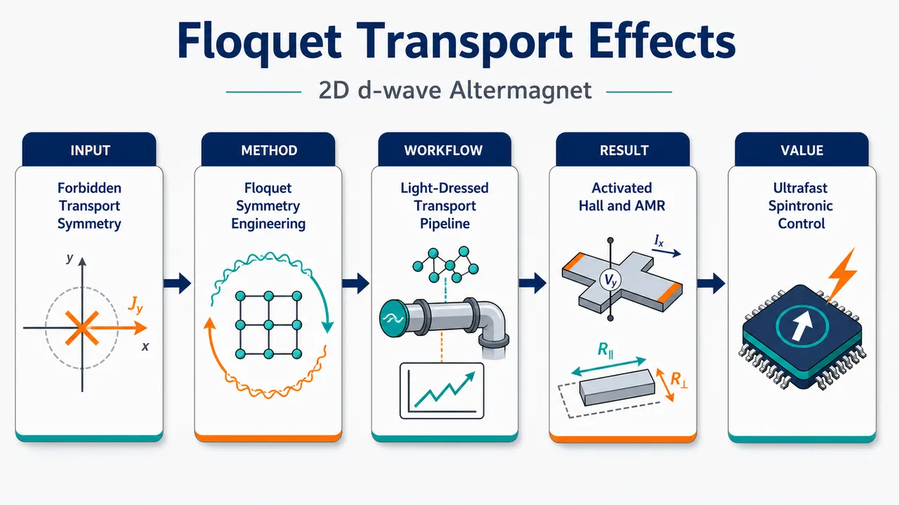
研究问题二维 d 波交替磁体虽具有零净磁化和动量依赖自旋劈裂，但平衡态 C₂ᵥ 对称性像“镜面对称锁”一样禁止电荷纵向 AMR、横向 AMR 和反常霍尔效应；核心问题是：能否不用数百特斯拉静磁场，而用周期光场动态打破选择定则，释放被禁阻的电荷、自旋横向输运响应？创新方法提出“多色 Floquet 动态对称性工程”：将 d 波交替磁序、Rashba 自旋轨道耦合与离共振 ω–2ω 光场耦合，通过 Floquet–Magnus 展开产生等效 Zeeman-like 场。Aha 点在于：单频光只产生面外磁化 𝓜z，仍保留 C₂ᵥ；双色谐波干涉额外生成面内 𝓜x、𝓜y，把对称性推向 C₁，从而打开横向 AMR。工作流程输入为二维 d 波交替磁体 + Rashba SOC 哈密顿量；通过 Peierls 替换加入单频或 ω–2ω 双色矢势；在高频离共振条件下用 Floquet–Magnus 展开得到光修饰有效哈密顿量；从 Floquet 能带和自旋纹理计算磁化、群速度与 Berry 曲率；用 Boltzmann 理论得到电荷/自旋 L-AMR、T-AMR，用 Kubo–Berry 公式得到 AHE；输出随光强、偏振、相位、手性变化的输运响应图谱。关键结果单频线偏振或圆偏振光诱导纯面外磁化，激活电荷 L-AMR 和 AHE，但 T-AMR 仍为零；ω–2ω 双色光产生全矢量磁化 𝓜x、𝓜y、𝓜z，激活有限电荷与自旋 T-AMR。双圆偏振比双线偏振产生更强横向响应，反向圆偏振手性可最大化电荷 T-AMR；有效 Floquet Zeeman 能量可达 10–30 meV，约等效 100 T 静磁场。应用价值该研究提供一种无静磁场、可逆、超快的交替磁体输运控制路线，可用光的偏振、相位、手性和双色幅度像“旋钮”一样调节 AMR、AHE 与自旋流方向；适用于相位锁定 ω–2ω 泵浦探测、THz 发射、TR-MOKE、非局域自旋输运和 Floquet ARPES，并可推广到 g 波、i 波交替磁体自旋电子器件。第一部分：核心概览 (Overview)
该研究建立了二维 d 波交替磁体（altermagnet）+ Rashba 自旋轨道耦合在多色 Floquet 驱动下的输运理论框架，揭示周期光场可通过动态对称性工程激活平衡态被禁阻的电荷纵向 AMR、反常霍尔效应（AHE）以及双色驱动下的横向 AMR（T-AMR）。核心创新在于把Floquet–Magnus 展开、Boltzmann 输运、Kubo–Berry 曲率公式统一用于交替磁体，证明单频光保持残余 C₂ᵥ 对称性，而 ω–2ω 双色光通过谐波干涉将对称性降至近似 C₁，产生全矢量磁化和横向电荷/自旋响应。该工作处于交替磁体超快自旋电子学与 Floquet 材料工程的交叉前沿。
---
第二部分：结构化快速回顾
《Floquet-induced anisotropic magnetoresistance and anomalous Hall effect in 2D d-wave altermagnets with Rashba spin-orbit coupling》（None，）
背景
交替磁体兼具零净磁化和动量依赖自旋劈裂，可实现无杂散场自旋输运。二维 d 波交替磁体与 Rashba SOC 结合后具有丰富自旋纹理，但平衡态 C₂ᵥ 对称性强烈限制电荷 AMR、T-AMR 与 AHE。传统静态调控依赖应变、界面、无序或 Zeeman 场，且强效应往往需要数百特斯拉量级磁场。
方法
采用二维连续模型
[
H_d(k)=ǎrepsilon k²σ₀₊łambda(kₓσ_y-k_yσₓ₎₊ǎrepsilon M^dₖσ_z
]
描述 d 波交替磁序 + Rashba SOC。通过 Peierls 替换引入单色或双色光场，使用高频 Floquet–Magnus 展开得到有效哈密顿量，再结合常弛豫时间 Boltzmann 理论计算 AMR，并用Berry 曲率 Kubo 公式计算 AHE。
结果
单频驱动诱导纯面外磁化 𝓜z，激活电荷 L-AMR 和 AHE，但因仍保留 C₂ᵥ 兼容选择定则，T-AMR 仍为零。双色 ω–2ω 驱动产生 𝓜x、𝓜y、𝓜z 全矢量磁化，将对称性推向 C₁，从而激活电荷与自旋 T-AMR。圆偏振手性、双色相位与相对振幅可调控响应大小和符号。
讨论
Floquet 有效 Zeeman 场可达 10–30 meV，等效磁场约 100 T，远超静态实验可达范围。二维模型中使用的无量纲驱动强度 (eA/hbar k_Fsim0.1–0.9)，对应电场 1.5–3 V/nm，处于超快泵浦实验可实现区间。
局限
分析基于离共振高频极限、虚光子过程、常弛豫时间近似和理想二维连续模型。实际材料中的加热、散射机制、脉冲包络、电子相互作用、无序与多能带效应未被显式纳入。部分具体 Floquet 修正公式依赖 End Matter 与 Supplemental Materials。
结论
多频 Floquet 驱动为交替磁体提供了非静态、可逆、强效的对称性调控手段。单色光主要控制纵向各向异性和 AHE，双色光进一步激活横向输运。该机制可推广到 g 波、i 波交替磁序，为超快、无静磁场的交替磁体自旋电子学提供理论路线。
---
第三部分：逐章节冷凝解析
Abstract
Altermagnets combine zero net magnetization with momentum-dependent spin splitting
交替磁体（AMs）的核心物理特征是零净磁化与动量依赖自旋劈裂并存，因此区别于常规铁磁体和反铁磁体。摘要开宗明义指出：*"Altermagnets (AMs) combine momentum-dependent spin splitting with zero net magnetization, making them promising for spintronics."* 这种组合使其能够在无宏观杂散场的情况下产生自旋极化输运，对自旋电子学具有天然吸引力。
Floquet driving enables dynamic symmetry engineering
周期驱动被定位为一种超越静态材料调控的工具。关键表述为：*"Periodic driving enables dynamic symmetry engineering beyond static, material-specific control."* 这里的dynamic symmetry engineering强调光场不是简单改变能带参数，而是通过时间周期性哈密顿量改变有效对称性与响应选择定则。
Monochromatic driving unlocks equilibrium-forbidden charge responses
单色光驱动在二维 d 波 AM + Rashba SOC 中产生纯面外磁化，从而打开平衡态禁阻的纵向 AMR和反常霍尔效应。摘要直接给出结论：*"Monochromatic driving produces purely out-of-plane magnetization, yielding longitudinal anisotropic magnetoresistance (AMR) and an anomalous Hall effect"*。这里的“purely out-of-plane”对应 𝓜z，而非面内磁化。
Bichromatic driving activates transverse AMR through second-harmonic interference
双色光不仅产生面外磁化，还生成面内磁化，并通过第二束光的二次谐波激活横向 AMR。关键证据为：*"bichromatic driving generates both in-plane and out-of-plane magnetizations and additionally activates transverse AMR via the second harmonic of the secondary beam."* 这说明 ω–2ω 谐波干涉是 T-AMR 出现的必要机制。
Floquet fields replace unrealistic static magnetic fields
相同量级的静态 Zeeman 调控需要极端磁场，摘要明确指出：*"Comparable static magnetic fields would require hundreds of tesla, avoided in Floquet driving."* 这一点构成该工作的实验意义：通过光场获得等效强磁场效应，而不施加真实数百特斯拉磁场。
Transport responses remain tunable across polarization classes
效应不局限于单一偏振类型，而是可在线偏振、圆偏振、混合偏振中持续存在。摘要写道：*"These effects persist across linear, circular, and mixed light polarizations and are tunable via light parameters."* 可调参量包括光强、频率、相位、偏振角、手性和双色相对幅度。
---
Introduction —
Altermagnetism is a distinct magnetic phase
交替磁性被界定为区别于常规铁磁与反铁磁的磁相。原文表述为：*"Altermagnetism has recently emerged as a magnetic phase distinct from conventional ferromagnets and antiferromagnets."* 其独特性不在于净磁矩，而在于晶体对称性和磁序共同保护的自旋劈裂。
Momentum-dependent spin splitting survives despite zero net magnetization
AMs 虽无净磁化，却存在由晶体与磁序保护的动量依赖自旋劈裂。关键句为：*"Despite zero net magnetization, altermagnets (AMs) host symmetry-protected momentum-dependent spin splitting from crystal symmetry and magnetic order."* 这为无杂散场自旋电子学奠定基础。
Spin polarization can form d-, g-, or i-wave harmonics
AM 自旋极化具有高阶角谐波结构：*"with spin polarization forming d-, g-, or i-wave harmonics."* 本研究聚焦 d 波，尤其是二维 (dₓ^₂₋y^₂) 交替磁序；其动量结构通常为 (kₓ²⁻k_y²) 或 (2kₓₖ_y)。
d-wave altermagnets enable spin-polarized transport without stray fields
d 波 AM具有强自旋分流能力，可在无杂散场条件下产生自旋极化输运。原文指出：*"d-wave systems exhibit a strong spin-splitter effect and enable spin-polarized transport without stray fields."* 这比铁磁体更适合高密度集成自旋器件。
Conventional spintronics is limited by SOC and magnetic dynamics timescales
传统自旋电子学依赖自旋泵浦或 SOC 介导的电荷-自旋转换，但受磁动力学限制。原文写道：*"many conventional spintronic mechanisms rely on relativistic SOC and magnetic dynamics, restricting their operation to GHz–THz timescales."* AMs 的优势在于可通过对称性和非相对论自旋劈裂实现更快控制。
Rashba SOC plus altermagnetism generates helical and altermagnetic spin textures
界面 Rashba SOC 与 AM 相结合可产生面内螺旋自旋纹理和交替磁自旋劈裂的耦合。原文强调：*"the resulting in-plane helical spin texture combined with altermagnetic spin splitting enables spin-valve and filtering effects without net magnetization."* 这正是该模型引入 RSOC 的物理动机。
Equilibrium tetragonal symmetry strongly constrains transport
二维 d 波 AM + RSOC 的输运受到四方晶格相关对称性限制。原文为：*"In 2D d-wave AMs with RSOC, the underlying tetragonal symmetries of the 2D plane strongly constrain transport."* 平衡态下 C₂ᵥ 残余对称性禁阻某些电荷和横向响应。
Static symmetry-breaking methods are material-specific and often impractical
应变、衬底、界面、无序或 Zeeman 场可降低对称性，但这些方式是静态且材料依赖的。原文列举：*"Symmetry reduction via strain, substrate/interface engineering, disorder, or Zeeman fields lift these constraints and induce anisotropic or transverse responses, but remain static and material-specific."*
Hundreds of tesla are required for strong static control
静态磁场实现强调控的需求不现实。原文指出：*"Achieving strong control typically requires magnetic fields of hundreds of tesla, beyond dc limits."* 这为使用光场虚光子过程替代真实磁场提供核心动机。
Optical driving offers reversible symmetry engineering
光学驱动的优势在于可逆、快速、可调。原文写道：*"optical driving enables reversible symmetry engineering and tunable transport beyond equilibrium constraints and static methods."* 与永久性应变或界面改性相比，光场可在脉冲消失后恢复。
Previous Floquet altermagnet studies did not resolve multi-frequency interference
现有 Floquet AM 研究仍未清楚解释多频驱动和谐波干涉如何解禁横向输运。原文明确问题缺口：*"it is still not understood how multi-frequency driving and harmonic interference break symmetry constraints to produce transverse charge and spin transport that is otherwise forbidden."* 该句精准界定创新空白。
Equilibrium C₂ᵥ forbids charge L-AMR, T-AMR, and AHE
在模型设定的平衡态中，C₂ᵥ 对称性禁止电荷 L-AMR、T-AMR 和 AHE。原文写道：*"In equilibrium, C2v symmetry forbids charge longitudinal anisotropic magnetoresistance (L-AMR), transverse AMR (T-AMR), and anomalous Hall effect (AHE), while allowing spin L-AMR and vanishing spin T-AMR."*
Monochromatic driving enables L-AMR and AHE but not T-AMR
单频光降低或修饰有效哈密顿量，但仍保持 C₂ᵥ 兼容选择规则，因此只激活部分响应。原文表述：*"Under monochromatic driving (ω), C2v is preserved, enabling charge L-AMR and AHE but keeping T-AMR forbidden."*
Bichromatic ω–2ω driving reduces symmetry toward C₁
双色驱动通过光子扇区干涉进一步打破镜面对称性，使横向输运可出现。原文为：*"bichromatic (ω–2ω) driving reduces the symmetry toward C1 via photon-sector interference, activating both charge and spin T-AMR."* 这是全文最核心机制之一。
---
Hamiltonian model —
The continuum Hamiltonian combines kinetic energy, Rashba SOC, and d-wave exchange
二维 AM 近 Γ 点哈密顿量为
[
H_d(k)=ǎrepsilon k²σ₀₊łambda(kₓσ_y-k_yσₓ₎₊ǎrepsilon M^dₖσ_z.
]
原文定义为：*"We consider a 2D d-wave AM with RSOC strength λ, described near the Γ point by..."* 三项分别代表抛物线动能、Rashba SOC、d 波交替磁交换场。
The d-wave order parameter combines B₁g and B₂g quadrupolar channels
交替磁序写为
[
M^dₖ₌M₁g(kₓ²⁻k_y²⁾⁺²M₂gkₓₖ_y,
]
且 (M₁g=M_do̧s(2θ))、(M₂g=M_dsin(2θ))。原文说明：*"For tetragonal symmetry, (kx2−ky2) and 2kxky transform as B1g and B2g of D4h point group."* 这意味着任意 d 波取向可由两个四极通道叠加表示。
The spin point group is ⁴²/m for the d-wave altermagnetic order
该 d 波交替磁序对应特定自旋点群。原文表述：*"making Eq. (2) a general d-wave altermagnetic order combining the two quadrupolar channels, with the corresponding spin point group 42/m."* 点群信息决定输运张量的对称性限制。
Bichromatic light enters through Peierls substitution
光场通过
[
ki̊ghtarrowk+eA(t)/hbar
]
耦合到电子。原文为：*"we couple the system to a bichromatic light via the Peierls substitution."* 这种最小耦合使动量依赖的 Rashba 项和 d 波项产生时间周期性 Fourier 分量。
The vector potential includes amplitude, harmonic ratio, phases, and polarization angles
光场写为 (Aₓ₍ₜ₎)、(A_y(t))，包含 (A)、(ømega)、(n)、(S)、(φ)、(tildeφ)、(η)、(tildeη)、(c)、(tilde c)。原文解释：*"𝒜 sets the field strength, ω is the fundamental frequency, n is the harmonic ratio, 𝒮 is the relative amplitude, and ϕ,ϕ̃ are the inter-color phases."* 同时：*"The parameters η,η̃ control the light polarization angles, while c,c̃ encode the light polarization character of each frequency component."*
Three driving configurations are defined: bilinear, bicircular, and hybrid
三种典型驱动配置被明确参数化。
双线偏振 BLPL：(tildeφ=0,c=0,tilde c=1,η≠0,tildeη=π/2)。
双圆偏振 BCPL：(tildeφ=π/2,c,tilde c=±1,η=0,tildeη=0)。
混合圆-线 BCLPL：(tildeφ=0,c=±1,tilde c=1,η≠0,tildeη=π/2)。
原文分别写道：*"For the bilinear case..."*、*"for the bicircular case..."*、*"for the hybrid case..."*。
The theory assumes an off-resonant high-frequency regime
关键近似是 (hbarømega) 大于系统内禀能标，避免真实吸收。原文写道：*"In the off-resonant regime (ℏω exceeds all intrinsic energy scales), real absorption is suppressed."* 因此动力学主要来自虚光子过程：*"the dynamics is governed by virtual-photon processes."*
Floquet–Magnus expansion gives the effective stroboscopic Hamiltonian
有效哈密顿量为
[
Hₘ̊ ₑff=H₀^F+sumₘgₑ₁frac1mhbarømega[H₋ₘ^F,H₊ₘ^F].
]
原文说明：*"The stroboscopic evolution is described by a high-frequency Floquet-Magnus expansion."* 这里的交换子项体现吸收/发射虚光子的二阶效应。
Floquet corrections arise from spin-sector commutators
两能带自旋系统中的 Floquet 修正不是简单能量平移，而来自自旋纹理之间的非对易性。原文指出：*"For the two-band spinful system, Floquet corrections arise from spin-sector commutators, reflecting interference between spin textures mediated by virtual photons."* 这是产生等效磁化和 Berry 曲率的重要来源。
Quadratic d-wave order generates harmonics up to m = ±2
因为 d 波交替磁序是动量二次函数，Peierls 替换后最多产生二次谐波。原文为：*"Since the d-wave altermagnetic order is quadratic in momentum, the drive generates harmonics up to m = ±2, with the second harmonic (n = 2) providing the dominant coupling."* 这解释了为什么 ω–2ω 是最自然、最有效的双色方案。
The effective Hamiltonian has scalar and vector spin components
Floquet 后的系统写为
[
Hₘ̊ ₑff(k)=h₀₍ₖ₎σ₀₊ₕ₍ₖ₎ḑotboldsymbolσ.
]
原文为：*"The resulting Floquet-engineered system is then described by an effective Hamiltonian of the form..."* 其中 (mathbf h) 决定自旋纹理、磁化、Berry 曲率和自旋期望值。
Floquet corrections encode AC Stark shifts, Rashba renormalization, and emergent Zeeman-like fields
修正项 (δ hm̊ pol) 和 (δ hm̊ pol(k)) 具有三重物理意义。原文明确列出：*"They encode three physically distinct effects: (i) AC Stark renormalization of the band dispersion, (ii) modification of RSOC, and (iii) emergent Zeeman-like fields."* 其中第三项生成 (mathcal Mₓ,y,z)。
Emergent magnetizations arise from interference between Rashba SOC and d-wave altermagnetic order
等效 Zeeman 场不是来自外磁场，而是来自 RSOC 与 d 波磁序的 Floquet 干涉。原文写道：*"emergent Zeeman-like fields, generating magnetizations 𝓜x,y,z arising from interference between RSOC and the d-wave altermagnetic order."* 该机制在没有真实净磁矩的补偿 AM 中生成宏观磁化。
In-plane Floquet fields arise solely from the second beam
(δ hₓm̊ pol) 和 (δ h_ym̊ pol) 只由第二束光产生。原文指出：*"The δhxpol and δhypol terms arise solely from the second beam, whereas both beams share all other corrections."* 因此单频驱动不能产生同样的面内对称性破缺。
The effect requires both altermagnetism and Rashba SOC
若无 AM 或无 RSOC，关键 Floquet Zeeman 项消失。原文强调：*"These terms vanish in the absence of either altermagnetism or RSOC, and are therefore unique to the Floquet-driven AMs with RSOC."* 这使该机制区别于普通 Rashba 电子气或普通反铁磁体。
Magnetization is computed from occupied Floquet eigenstates
磁化定义为
[
Mₓ,y,z=sum_νintfracd²k(2π)²f_ν(k)łangle uνₖ|σₓ,y,z|uνₖångle.
]
原文为：*"The magnetization is computed from the occupied Floquet states with eigenvalues εν(k) and eigenvectors |uν(k)⟩."*
Equilibrium spin-split sectors cancel the net magnetization
平衡态虽有动量依赖自旋劈裂，但总磁化抵消。原文指出：*"In equilibrium, spin-split contributions cancel, yielding zero net magnetization."* 这体现 AM 与铁磁体的根本区别。
Single-color LPL and CPL induce only out-of-plane magnetization
单色线偏振产生有限 (mathcal M_z)，圆偏振产生手性依赖 (mathcal M_z)。原文写道：*"Single-color linearly polarized light (LPL) induces a finite out-of-plane magnetization 𝓜z, while circularly polarized light (CPL) generates a chirality-dependent (c=±1) 𝓜z."*
Bichromatic driving enables full vector magnetization
双色驱动放松对称性约束，产生 (mathcal Mₓ,mathcal M_y,mathcal M_z)。原文为：*"bichromatic driving relaxes the symmetry constraints and enables a full vector magnetization."* 这与其激活 T-AMR 的对称性机制一致。
Two-color LPL magnetization shows sign structure and a critical relative amplitude
图 2 底部结果给出：(η=π/3)、(M₁g=1)、(M₂g=0) 时，(mathcal Mₓapprox-mathcal M_y)，(mathcal M_z) 在特定条件下变号。原文细节为：*"The in-plane components satisfy 𝓜x≈−𝓜y, while 𝓜z vanishes for e𝒜/ℏkF=0 up to 𝒮c=√2; at which δhz=0 for cos(2η)=−1/2, and it changes sign for 𝒮>𝒮c."*
Realistic drive parameters correspond to 1.5–3 V/nm optical fields
模拟中使用 (emathcal A/hbar k_Fsim0.1–0.9)。估算取 (μ₀simeq0.5) eV、(k_Fapprox1~Å⁻¹)、(hbarømegasimeq3) eV。原文写道：*"For a drive frequency ℏω≃3 eV, the electric field E0=ω𝒜 scales as E0∝ω√|μ|, yielding E0∼1.5–3 V/nm."*
Floquet Zeeman-like fields reach 10–30 meV, equivalent to ~100 T
有效场强具有实验意义。原文给出量级：*"The effective Zeeman-like fields reach ∼10–30 meV for the above realistic drive parameters, corresponding to magnetic fields of order ∼100 T."* 这支撑 Floquet 方案相对于静磁场调控的优势。
---
Charge and spin conductivity —
Transport is computed with Boltzmann theory in constant relaxation time approximation
输运计算基于半经典 Boltzmann 形式和常弛豫时间 (τ)。原文指出：*"Transport is computed within the Boltzmann formalism in the constant relaxation-time approximation τ."* 该近似忽略动量、能带和自旋依赖散射时间。
Wave-packet dynamics uses group velocity from Floquet bands
外电场下半经典方程为
[
dotmathbf r=frac1hbarnablaₖϵ_ν(k),quad
dotmathbf k=-fracehbarmathbf E.
]
原文写道：*"Semiclassical wave packets under an external electric field E evolve as..."* 群速度定义为 (mathbf v_ν=hbar⁻¹nablaₖϵ_ν)。
Charge current is weighted by velocity and distribution
电荷流为
[
mathbf j^c=-esum_νintfracd²k4π²mathbf v_ν(mathbf k)f_ν(mathbf k).
]
原文直接定义：*"The charge (c) ... current is jc=..."* 这里积分为二维动量空间积分。
Spin current is weighted by z-spin expectation
自旋流采用 (s_z=hbarσ_z/2)，表达式为
[
mathbf j^s=sum_νintfracd²k4π²mathbf v_ν s_ν(mathbf k)f_ν(mathbf k).
]
原文定义：*"where sν(k)=⟨uνk|ŝz|uνk⟩."*
Fermi-surface conductivity tensors define AMR
零温电荷电导为
[
σₑₗₗ ⱼ^c=e²τsum_νintfracd²k4π²vν,ᵢvν,ⱼδ(ϵ_ν-μ).
]
自旋电导为
[
σₑₗₗ ⱼ^s=eτsum_νintfracd²k4π²vν,ᵢvν,ⱼs_ν(mathbf k)δ(ϵ_ν-μ).
]
原文说明：*"This yields the Fermi-surface conductivity tensors ... for AMR at zero temperature."*
L-AMR measures principal-axis anisotropy
纵向 AMR 定义为
[
mathrmL-AMR=fracσₓₓ-σyyσₓₓ+σyy.
]
原文解释其物理含义：*"capturing the imbalance of vx2 and vy2 Fermi-surface contributions."* 因而 L-AMR 对费米面速度各向异性高度敏感。
T-AMR measures symmetric off-diagonal conductivity
横向 AMR 定义为
[
mathrmT-AMR=2σₓy/(σₓₓ+σyy).
]
原文指出：*"The T-AMR characterizes the off-diagonal symmetric response, arising from ⟨vxvy⟩ correlations."* 这里 (σₓy=σyₓ)，不同于反对称 Hall 响应。
T-AMR is distinct from Berry-curvature AHE
文中明确区分对称横向 AMR 和 Berry 曲率诱导的反常霍尔效应。原文写道：*"Here σxyc/s=σyxc/s, distinguishing this contribution from the Berry-curvature-induced AHE."* 因此 T-AMR 属于耗散型费米面响应，而 AHE 属于内禀费米海响应。
AHE is computed from Berry curvature of Floquet-dressed bands
低温 AHE 公式为
[
σₓym̊ AHE=-frace²hbarsum_νintfracd²k4π²Θ(μ-ϵ_ν)Ømega_ν(mathbf k).
]
原文为：*"The low-temperature AHE is obtained from the Berry curvature, Ων(k), of the Floquet-dressed bands."*
---
Results and discussion —
Numerics use Gaussian broadening and 0.5 meV smearing
数值计算中 (δ(ϵ-μ)) 使用 Gaussian 展宽，温度展宽为 0.5 meV。原文写道：*"We now present numerical results using Gaussian broadening of δ(ϵ−μ) and a smearing which corresponds to a temperature of 0.5 meV."*
Conductivities and AHE are normalized in natural units
电荷 AMR 电导归一化为 (e²τ/πhbar²)，自旋电导归一化为 (eτ/πhbar)，AHE 单位为 (e²/h)。原文为：*"For AMR, all charge (spin) conductivities are normalized by e2τ/πℏ2 (eτ/πℏ), while the AHE is reported in units of e2/h."*
Spin AMR uses absolute-value normalization to avoid divergences
自旋响应可能因 (σₓₓ^s+σyy^s) 抵消导致发散，因此采用 (|σₓₓ^s|+|σyy^s|)。原文指出：*"To avoid divergence issues in the spin sector, we normalize using |σxxs|+|σyys|."*
Bichromatic phase and polarization are fixed without changing qualitative trends
数值固定 (η=π/3)、(φ=π/6)。原文写道：*"Floquet corrections show bichromatic interference governed by η and ϕ, which we fix at η=π/3 and ϕ=π/6 without qualitatively affecting the results."*
Symmetry hierarchy controls all transport selection rules
无 AM 时 Rashba 系统具有 C₄ᵥ；d 波 (B₁g) 交换场降低为 C₂ᵥ；双色驱动进一步降至 C₁。原文总结：*"The resulting symmetry hierarchy, C4v→C2v→C1, underlies the emergence of anisotropic longitudinal and transverse transport responses."*
The d-wave exchange field breaks x↔y equivalence
(Mₖ^d) 属于 (B₁g) 表示，破坏四重旋转，使 x 与 y 不再等价。原文写道：*"The d-wave exchange field Mkd, transforming as the B1g representation, breaks the fourfold rotational symmetry and reduces the point group to C2v, removing the x↔y equivalence."*
Residual C₂ᵥ consists of C₂z and two mirrors
残余对称群为
[
C₂ᵥ=C₂z,mₓ,m_y.
]
原文详细说明：*"The residual symmetry C2v=C2z,mx,my consists of a twofold rotation about the z axis, C2z, and mirror reflections mx:(kx,ky)→(kx,−ky) and my:(kx,ky)→(−kx,ky)."*
Single-color driving preserves residual C₂ᵥ, while bichromatic driving reduces to C₁
单频光不激活面内 Floquet 场；双色 (ømega–2ømega) 产生 (δ hₓm̊ pol)、(δ h_ym̊ pol)。原文写道：*"Single-color driving preserves this residual symmetry, whereas bichromatic ω–2ω driving generates the in-plane Floquet fields δhxpol and δhypol, reducing the symmetry to the trivial group C1."*
Without RSOC and driving, charge response is isotropic
无 RSOC、无驱动时，电荷电导满足
[
σₓₓ^c=σyy^c=frace²τμπhbar²sqrt1-M_d².
]
原文指出：*"In the absence of RSOC and driving, the charge response is isotropic... yielding zero charge L-AMR."*
d-wave texture produces anisotropic spin response
自旋电导为
[
σₓₓ^s=-σyy^s=
fraceτμ M_do̧s(2θ)
4πhbarsqrt1-M_d².
]
原文写道：*"the d-wave texture produces an anisotropic spin response..."* 因此即使电荷 L-AMR 为零，自旋 L-AMR 可有限。
Equilibrium transverse response is purely spin and orientation-dependent
平衡态横向电荷为零：(σₓy^c=0)。自旋横向为
[
σₓy^s=
-fraceτμ M_dsin(2θ)
4πhbarsqrt1-M_d².
]
原文说明：*"The transverse response is purely spin, with σxyc=0 and σxys=..."* 对 (dₓ^₂₋y^₂)（(θ=0)）自旋 T-AMR 为零；对 (dₓy)（(θ=π/4)）可有限。
Figure 3 uses Md = 0.7 and λ = 0.2 eV Å for monochromatic driving
单频结果参数为 (M_d=0.7)、(łambda=0.2) eV Å、CPL 手性 (c=+1)、(mathcal S=0)。图注写道：*"Parameters are Md=0.7, λ=0.2 eV Å, c=+1 for CPL, and 𝒮=0."*
Equilibrium has no charge L-AMR, T-AMR, or AHE in the plotted dx²−y² case
图 3 的平衡态 (emathcal A/hbar k_F=0) 中，信号受 C₂ᵥ 限制。原文写道：*"In equilibrium (e𝒜/ℏkF=0), this symmetry enforces the absence of L-AMR, T-AMR, and AHE signals."*
Monochromatic driving generates nonlinear L-AMR and AHE but no T-AMR
单频 Floquet 混合激活 L-AMR 与 AHE，同时保持 T-AMR 禁阻。原文为：*"Under monochromatic driving, Floquet-induced band mixing preserves the C2v-compatible selection rules, leading to nonlinear enhancement of L-AMR and AHE without activating T-AMR."*
LPL reverses spin L-AMR, CPL weakly modulates it at stronger drive
线偏振和圆偏振对自旋 L-AMR 调控不同。原文指出：*"LPL reverses the spin L-AMR, whereas CPL produces only a weak modulation of L-AMR at stronger driving amplitudes."* 这说明偏振可作为自旋流方向控制旋钮。
Bichromatic driving activates finite charge and spin T-AMR
第二束光产生面内 Floquet 场，打破残余 C₂ᵥ，从而允许横向输运。原文写道：*"The effective Floquet Hamiltonian is reduced toward C1 symmetry, lifting constraints that forbid transverse transport and enabling finite charge and spin T-AMR."*
AHE already appears under monochromatic driving and is only modified by the second beam
双色研究重点放在 T-AMR，因为 AHE 在单频时已经可出现。原文指出：*"Since the AHE is already present under monochromatic driving and is only further modified by the second beam, we focus here on T-AMR."*
Figure 4 fixes e𝒜/ℏkF = 0.7 and varies second-beam amplitude 𝒮
双色 T-AMR 图使用固定主光强 (emathcal A/hbar k_F=0.7)。图注写道：*"T-AMR responses ... as functions of the second beam amplitude 𝒮 at fixed e𝒜/ℏkF=0.7."* 参数仍为 (M_d=0.7)、(łambda=0.2) eV Å。
BLPL requires comparable two-color amplitudes for appreciable T-AMR
双线偏振的对称性破缺较弱。原文指出：*"For bilinearly polarized light (BLPL), the symmetry reduction is relatively weak and appreciable T-AMR emerges only when the two frequency components become comparable, 𝒮≈1."*
At 𝒮≈√2, charge T-AMR is enhanced while spin T-AMR cancels
当 (mathcal Sapproxsqrt2) 时，(δ h_z=0)，速度混合增强电荷 (σₓy^c)，但自旋纹理补偿导致 (σₓy^s) 抵消。原文写道：*"At S≈√2, where δhz=0... enhancing charge σxyc, while the spin texture sz(k)=hz(k)/|h(k)| becomes symmetry-compensated, causing cancellation of σxys."*
BCPL produces much larger transverse response than BLPL
双圆偏振产生更强的 Rashba–AM 纹理干涉。原文为：*"bicircularly polarized light (BCPL) generates stronger Floquet interference between Rashba and altermagnetic textures, producing a much larger transverse response."*
Hybrid BCLPL gives nonmonotonic and highly tunable T-AMR
混合圆-线驱动结合线性和手性 Floquet 通道。原文写道：*"The hybrid BCLPL configuration combines linear and chiral Floquet channels, leading to pronounced nonmonotonic behavior and enhanced tunability of both charge and spin T-AMR."*
T-AMR is nonlinear in drive strength despite linear in-plane fields
面内场随 (mathcal S) 线性，但横向响应由速度混合决定。原文指出：*"Although the induced in-plane fields scale linearly with 𝒮, the transverse response is governed by mixed velocity correlators ⟨vxvy⟩, yielding an overall nonlinear dependence on the drive strength."*
Opposite circular chiralities maximize charge T-AMR
圆偏振手性对 Floquet 干涉的构造性/破坏性至关重要。原文写道：*"Opposite chiralities maximize the symmetry-breaking interference and produce the largest charge T-AMR, while equal chiralities substantially suppress it."*
Spin T-AMR is comparatively chirality-even
自旋响应对手性变化较不敏感。原文指出：*"Conversely, the spin response is less sensitive to chirality and remains largely chirality-even."*
Opposite chiralities cause Berry-curvature compensation and sign reversal near 𝒮≈√2
手性还影响 Berry 曲率与符号变化。原文为：*"Opposite chiralities lead to strong compensation of the Berry curvature and a sign reversal near 𝒮≈√2, where δhz=0."*
The mechanism extends beyond dx²−y² orientation and beyond d-wave order
其他取向如 (dₓy)（(θ=π/4)）以及更高阶 AM 也适用。原文写道：*"other crystalline orientations θ (e.g., θ=π/4 for dxy-wave AM) are shown..."* 并进一步指出：*"the Floquet-engineered transport phenomena can be readily extended to g- and i-wave AMs with quartic and sextic momentum structures... but the same conclusions."*
---
Experimental perspective —
Candidate materials include KV₂Se₂O, KRu₄O₈, and Mn₅Si₃
实验可在薄膜 AM 中探测，候选体系包括 KV₂Se₂O、KRu₄O₈、Mn₅Si₃。原文写道：*"The predicted Floquet-engineered transport phenomena can be probed in thin-film AMs, such as KV2Se2O, KRu4O8, and Mn5Si3."*
Rashba coupling can be realized through inversion breaking and substrate/strain engineering
所需 RSOC 可由界面反演破缺、应变或衬底工程实现。原文说明：*"where interfacial inversion breaking and strain or substrate engineering can realize the required Rashba coupling and tunable d-wave order."*
Phase-locked ω–2ω pump–probe transport can directly test nonlinear responses
实验方案为相位锁定 ((ømega,2ømega)) 可见/近红外双色泵浦，叠加弱 dc 偏置和锁相探测。原文写道：*"bichromatic pump–probe transport with phase-locked (ω,2ω) visible/near-IR optical pulses, combined with a weak dc bias and lock-in detection, provides direct access to the predicted nonlinear charge and spin responses."*
AHE and magnetization dynamics can generate terahertz emission
光激活 AHE 与磁化 (mathcal M) 会产生时变电流和磁化，从而发射 THz 信号。原文为：*"the ultrafast activation of the AHE and magnetization 𝓜 generates time-varying currents and magnetizations (∂𝓜/∂t) that act as easily isolated terahertz emission sources."*
TR-MOKE can probe the center of the pumped spot
由于多色光诱导的是宏观磁化而非仅边界自旋积累，TR-MOKE 可在泵浦中心区域探测。原文写道：*"time-resolved magneto-optic Kerr effect (TR-MOKE) spectroscopy can directly probe the center of the pumped spot, circumventing boundary diffraction limits."*
Nonlocal spin transport and Floquet ARPES provide complementary diagnostics
原文指出：*"Nonlocal spin transport and Floquet ARPES can further resolve anisotropic responses."* 非局域自旋输运可验证自旋信号，Floquet ARPES 可直接观察光修饰能带和自旋劈裂。
Off-resonant 1.5–3 V/nm pumping suppresses heating and leaves transient states
离共振泵浦减少吸收加热；脉冲结束后 Floquet 态消失。原文写道：*"off-resonant pumped driving at 1.5–3 V/nm suppresses heating; once the pulse passes, the virtual-photon-sustained Floquet state collapses."* 剩余磁化按材料本征自旋弛豫衰减：*"residual magnetizations decay over the material’s intrinsic femtosecond-to-picosecond spin relaxation time."*
---
Conclusion —
A unified Floquet transport framework is established for 2D d-wave AMs with RSOC
结论概括了理论框架：*"we developed a Floquet framework for controlling charge and spin transport in 2D d-wave altermagnets ... with an out-of-plane Néel vector and Rashba spin–orbit coupling."* 该框架也可扩展到 g 波、i 波交替磁序。
Floquet–Magnus, Boltzmann, and Kubo–Berry methods are combined
方法组合被明确总结：*"Combining Floquet–Magnus theory with semiclassical Boltzmann transport and the Kubo–Berry curvature formalism."* 三者分别对应光场有效哈密顿量、耗散型 AMR、内禀 AHE。
Periodic driving enables transport beyond equilibrium symmetry constraints
核心思想是光场改变有效对称性，从而突破平衡态选择定则。原文写道：*"periodic driving enables symmetry engineering of transport beyond equilibrium constraints."*
Monochromatic driving preserves C₂ᵥ and activates longitudinal responses
单频驱动保留残余 C₂ᵥ，产生强纵向各向异性、电荷 AMR、AHE 和自旋流反转，但横向响应仍禁阻。原文为：*"Monochromatic driving preserves the residual C2v symmetry... yielding strong longitudinal anisotropies, finite charge AMR and AHE, and light polarization-controlled spin-current reversal, while transverse responses remain symmetry-forbidden."*
Bichromatic driving reduces symmetry toward C₁ and activates T-AMR
双色 (ømega–2ømega) 通过谐波扇区干涉产生面内与面外磁化，并激活横向电荷和自旋输运。原文写道：*"bichromatic ω–2ω driving reduces the symmetry toward C1 through harmonic-sector interference, generating both in-plane and out-of-plane magnetizations and activating transverse charge and spin transport, including finite T-AMR."*
Light polarization, phase, and chirality tune magnitude and sign
响应可由光场参数灵活控制。原文指出：*"The response is tunable through light polarization, phase, and chirality, with opposite circular-field chiralities producing the strongest signals."*
Floquet engineering replaces hundreds-of-tesla static fields
结论再次强调等效强磁场优势：*"Comparable magnetizations would require effective magnetic fields of hundreds of tesla, whereas Floquet engineering achieves them without static fields."*
Multi-frequency Floquet driving becomes a route to symmetry-controlled unconventional AM transport
最终定位为通用路线：*"These results establish multi-frequency Floquet driving as a versatile route for symmetry-controlled transport in unconventional altermagnets."* 重点不只是一个模型预测，而是为非常规 AM 中的超快、可逆、对称性选择输运控制提供范式。
---
Acknowledgments —
Funding sources support formal theory, numerical analysis, and manuscript preparation
研究支持来自美国能源部基础能源科学办公室、Georgetown University McDevitt bequest、DOE-Office of Science、欧盟 MSCA 博士后项目等。原文列出：*"M. Y. and J. K. F. were supported by the Department of Energy, Office of Basic Energy Sciences..."*，以及：*"P. M. G is funded by the European Union through a MSCA Postdoctoral Fellowship."*
Data are openly available
数据可公开获取。原文写道：*"The data that support the findings of this article are openly available at [79]."*
---
第四部分：深度理解与语言支持
1. 术语解析
Altermagnetism
Altermagnetism 指一种不同于铁磁和传统反铁磁的磁有序相。它没有净磁化，但由于晶体旋转对称性与自旋结构耦合，可产生动量依赖、自旋分辨的能带劈裂。微妙之处在于：它不是普通“补偿反铁磁”，因为普通共线反铁磁常因 PT 或其他对称性保持 Kramers-like 简并，而交替磁体可在零净磁矩下出现非相对论自旋劈裂。
d-wave altermagnet
d-wave altermagnet 中的 “d-wave” 不是超导配对意义上的 d 波，而是指自旋劈裂或交换场在动量空间具有 (kₓ²⁻k_y²) 或 (2kₓₖ_y) 这样的二阶角谐波结构。它对应 (B₁g) 或 (B₂g) 四极表示。文中 (Mₖ^d=M₁g(kₓ²⁻k_y²⁾⁺²M₂gkₓₖ_y) 正是这种结构。
Floquet engineering
Floquet engineering 指用周期驱动光场改变材料的有效哈密顿量。重点不只是“加热电子”或“激发载流子”，而是在离共振条件下通过虚光子过程改变能带、Berry 曲率、自旋纹理和对称性。这里的 Floquet 态是脉冲期间存在的非平衡准稳态，脉冲消失后不再由虚光子维持。
Anisotropic magnetoresistance (AMR)
AMR 是电导或电阻随磁序方向、晶体方向或自旋纹理方向变化的各向异性响应。文中区分 L-AMR 和 T-AMR：
- L-AMR：((σₓₓ-σyy)/(σₓₓ+σyy))，反映主轴方向电导差异。
- T-AMR：(2σₓy/(σₓₓ+σyy))，反映对称横向电导，不等同于 Hall 效应。
Anomalous Hall effect (AHE)
AHE 是在无外磁场条件下由破缺时间反演、Berry 曲率或磁化引发的横向电导。文中 AHE 来自 Floquet-dressed bands 的 Berry 曲率积分，而 T-AMR 来自 (łangle vₓᵥ_yångle) 费米面速度相关。二者都表现为横向响应，但数学来源和对称性性质不同。
---
2. 疑难查证：复杂概念解释
为什么平衡态零净磁化仍可有自旋劈裂？
交替磁体的两个自旋子系统在实空间总磁矩补偿，但在动量空间不是简单重合。晶体旋转操作可把一个自旋子晶格映射到另一个，同时使能带在不同 (mathbf k) 方向出现相反自旋极化。结果是全布里渊区积分后磁化为零，但每个动量点附近的自旋能带可劈裂。这就是“零净磁化 + 动量依赖自旋劈裂”的本质。
为什么单频光能产生 AHE，却不能产生 T-AMR？
单频光可通过 Floquet 交换子产生面外 Zeeman-like 项 (δ h_z)，改变 Berry 曲率并允许 AHE。但单频情况下有效哈密顿量仍满足残余 C₂ᵥ 的镜面对称约束。T-AMR 需要 (σₓy=σyₓ) 的对称横向速度相关 (łangle vₓᵥ_yångle) 不被镜面对称抵消；只要 (mₓ) 或 (m_y) 仍有效，(mathbf k) 与镜像点贡献会相互抵消，所以 T-AMR 仍为零。
为什么双色 ω–2ω 光特别有效？
d 波交换场是动量二次项。Peierls 替换 (mathbf k→mathbf k+emathbf A(t)/hbar) 后，二次动量项自然生成 (o̧s²ømega t)、(sin²ømega t)、(sinømega to̧sømega t) 等包含 (2ømega) 的分量。因此二次谐波与 d 波 AM 的动量结构“阶数匹配”。ω 与 2ω 的干涉能产生单频光没有的面内有效场 (δ hₓ,δ h_y)，从而破坏 (mₓ,m_y) 镜面对称并激活 T-AMR。
为什么 Floquet 等效磁场可达 100 T，但不等于真的施加了 100 T？
等效 Zeeman-like field 是光场改造有效哈密顿量后出现在自旋空间的能量劈裂项，可用 Zeeman 能量 (μ_B B) 反推等效磁场。它不产生真实静磁场的所有后果，例如不会形成同样的宏观磁通、不会要求超强磁体设备，也只在泵浦期间存在。其物理效果更接近“光场诱导的自旋能级偏置”。
为什么 T-AMR 和 AHE 都是横向响应却必须分开？
T-AMR 的 (σₓy) 是对称张量分量，满足 (σₓy=σyₓ)，来自 Boltzmann 费米面速度相关 (łangle vₓᵥ_yångle)。AHE 的 (σₓym̊ AHE) 是反对称 Hall 响应，通常满足 (σₓy=-σyₓ)，来自 Berry 曲率的费米海积分。实验上二者可通过电场反转、磁化/手性反转、频率依赖和对称性分析区分。
---
第五部分：创新评估与关联
1. 创新性判断
从静态对称性破缺转向动态多频对称性工程
过去 2–5 年交替磁体研究主要集中在材料发现、静态应变调控、界面 Rashba 效应、电场/应变诱导自旋输运、静态 Zeeman 场或无序影响。这些路线普遍依赖材料本身结构或外加静态扰动。该工作的新颖性在于证明：不必永久改变材料结构，也不必施加极强静磁场，仅通过离共振多频光场即可动态改变有效点群，从 C₂ᵥ 推向 C₁，解禁原本对称性禁止的输运张量分量。
首次系统区分单频与双色 Floquet 对称性选择定则
该研究不仅说“光场能调控 AM”，而是给出清晰的选择定则：
- 平衡态：电荷 L-AMR、T-AMR、AHE 禁阻；自旋 L-AMR 可存在。
- 单频驱动：电荷 L-AMR 和 AHE 可出现；T-AMR 仍禁阻。
- 双色 ω–2ω 驱动：电荷与自旋 T-AMR 被激活。
这一层级化结论把“Floquet 调控”提升为可预测的对称性工程规则。
揭示 ω–2ω 谐波干涉是横向输运激活的核心机制
前人 Floquet AM 工作已经讨论光诱导能带、交换相互作用或自旋响应，但多频谐波干涉如何破坏镜面对称并产生横向电荷/自旋输运仍不清楚。该研究指出 d 波二次动量结构天然支持 (m=±2) 谐波，第二束光产生 (δ hₓm̊ pol)、(δ h_ym̊ pol)，这是 T-AMR 出现的关键。
把 Rashba SOC 与 d-wave altermagnetism 的 Floquet 干涉识别为独特磁化来源
普通 Rashba 系统或普通 AM 单独存在时，关键 Floquet Zeeman-like 项会消失。该机制要求 RSOC 与 d 波 AM 同时存在，并由虚光子过程中的自旋-sector commutators 产生。这提供了一种区别于传统 inverse Faraday effect 或普通光致磁化的 AM 特异机制。
将电荷 AMR、自旋 AMR 和 AHE 统一到一个可计算框架
研究把三类输运量放在同一 Floquet 有效模型下：
- AMR：Boltzmann 费米面速度相关；
- 自旋 AMR：速度相关乘以 (s_z(mathbf k))；
- AHE：Berry 曲率费米海积分。
这种统一处理使得“纵向/横向”“电荷/自旋”“耗散/内禀”响应之间的差异变得清晰。
提出实验可实现的参数窗口和探测路线
给出 (emathcal A/hbar k_Fsim0.1–0.9)、(hbarømegasimeq3) eV、(E₀sim1.5–3) V/nm、有效 Zeeman 能量 10–30 meV、等效磁场约 100 T 的量级估算，并提出相位锁定 ω–2ω 泵浦-探测、THz 发射、TR-MOKE、非局域自旋输运、Floquet ARPES等实验路径。这使理论预测具备较强实验可检验性。
可推广到 g-wave 与 i-wave AM
虽然模型聚焦 d 波 AM，但结论可推广到具有四次和六次动量结构的 g 波、i 波 AM。更高阶动量结构会改变 Floquet 修正项形式和谐波选择，但“多频驱动破坏残余对称性并激活禁阻输运”的逻辑保持成立。这使该研究的意义超出单一材料或单一 d 波模型。
-
15
📖 展开分析 + 配图
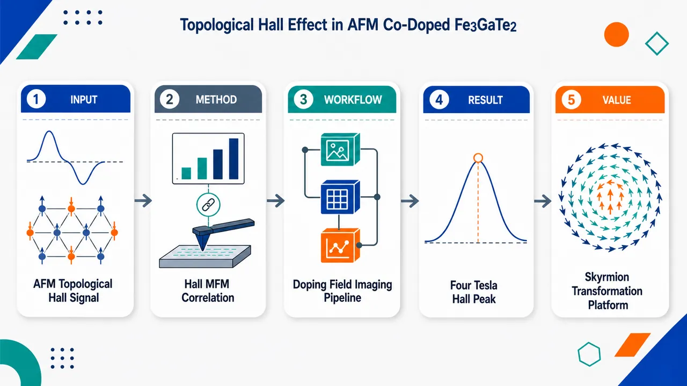
研究问题Co 掺杂能否把高温范德瓦尔斯磁体 Fe₃GaTe₂ 调控为反铁磁基态，并在反铁磁到高磁化态的变磁转变过程中产生可观测的拓扑霍尔效应；其背后是否存在类似斯格明子的手性磁畴结构。创新方法以 x≈0.6 的 Fe₃₋ₓCoₓGaTe₂ 为核心样品，把磁化曲线、电输运霍尔分解和 MFM 磁畴成像联动起来：在 4 T 变磁转变场区捕捉拓扑霍尔峰，并将其与反铁磁相中 100–200 nm 近圆形磁畴对应，提出“反铁磁斯格明子随外场演化为铁磁斯格明子”的图像。工作流程制备不同 Co 含量的 Fe₃₋ₓCoₓGaTe₂ 单晶样品 → 用磁化与电输运测量建立 Co 含量-温度磁相图 → 聚焦 x≈0.6 反铁磁样品测量磁场依赖霍尔信号 → 分离普通霍尔、反常霍尔与拓扑霍尔贡献 → 在低温和外场下用 MFM 观察磁畴 → 将 4 T 拓扑霍尔峰、变磁转变和圆形磁畴关联为场诱导手性自旋纹理。关键结果x≈0.6 样品表现出反铁磁基态，外磁场通过变磁转变抑制该基态；霍尔信号随磁化变化，显示反常霍尔响应。低温下出现显著拓扑霍尔信号，峰值位于 μ₀H≈4 T，正处在变磁转变区域。MFM 在反铁磁相内观察到直径约 100–200 nm 的近圆形磁畴，支持外场稳定手性磁结构的解释。应用价值Co 掺杂 Fe₃GaTe₂ 提供了一个可剥离、范德瓦尔斯型的反铁磁拓扑输运平台，可用于研究 AFM–FM 斯格明子转化、拓扑霍尔效应和 skyrmion Hall effect 的关系；其母体材料具有接近或高于室温的磁有序温度，增加了二维自旋电子器件、低横向偏转斯格明子运动和可集成磁存储/逻辑元件的潜在价值。第一部分：核心概览（Overview）
Co 掺杂 Fe₃GaTe₂ 被确认为可在 反铁磁基态 中产生显著 拓扑霍尔效应 的范德瓦尔斯磁体平台。核心贡献在于：通过磁化、电输运与 MFM 成像，将 x≈0.6 Fe₃₋ₓCoₓGaTe₂ 的变磁转变、反常霍尔响应、4 T 附近拓扑霍尔峰值和 100–200 nm 圆形磁畴联系起来，提出反铁磁斯格明子可能随外场演化为铁磁斯格明子，为研究 AFM–FM skyrmion 转化 与拓扑输运提供候选体系。
---
第二部分：结构化快速回顾
《Topological Hall Effect in Antiferromagnetic Co doped Fe₃GaTe₂》（None，）
背景
Fe₃GaTe₂ 是一种 范德瓦尔斯铁磁体，居里温度高达 350–380 K，冷却后接近室温出现 亚铁磁转变。Co 替代 Fe 后可诱导 反铁磁性，其 Néel 温度 TN 随 Co 含量变化。
方法
通过 磁化测量 与 电输运测量 重建 Fe₃₋ₓCoₓGaTe₂ 随 Co 含量 x 和温度变化的相图；针对 x≈0.6 样品分析霍尔效应、变磁转变和拓扑霍尔信号；使用 磁力显微镜 MFM 观察反铁磁相内的磁畴结构。
结果
在 x≈0.6 中，外磁场通过 变磁转变 抑制反铁磁基态，霍尔信号随磁化变化，表现出 反常霍尔响应。低温下出现显著 拓扑霍尔信号，峰值位于 μ₀H = 4 T，即变磁转变场区。MFM 显示反铁磁相中出现直径约 100–200 nm 的近圆形磁畴。
讨论
拓扑霍尔效应与外场诱导稳定的磁畴结构密切相关，这些结构可能具有 手性自旋纹理。反铁磁相中可能已形成 AFM skyrmions，随后在增强磁场下演化为 FM skyrmions。
局限
可核验材料仅包含 arXiv 页面摘要与元数据；未包含 PDF 正文、图 1–5、支持信息、实验细节、拟合方法、误差条、样品数量、统计检验、具体霍尔分解公式与 MFM 图像分析流程。因此无法可靠提取逐图参数、样本量 n、P 值或完整章节标题。
结论
Co 掺杂 Fe₃GaTe₂ 是研究 反铁磁拓扑霍尔效应、场诱导手性磁畴、以及 AFM skyrmion 向 FM skyrmion 演化 的潜在二维范德瓦尔斯磁体平台。
---
第三部分：逐章节冷凝解析（Section-by-Section Condensing）
可核验章节标题仅包括 arXiv 页面中的 Abstract；正文原始章节标题未随输入提供。以下严格基于可见文本，不补造未给出的 Introduction、Results、Methods、Discussion 等章节内容。
---
Abstract
#### High-temperature van der Waals ferromagnetism and low-temperature magnetic reconstruction
Fe₃GaTe₂ 被定位为高温 范德瓦尔斯铁磁体，其 居里温度 TC 位于 350–380 K，高于室温；继续降温后，在接近室温处发生 亚铁磁转变。这一温标组合使其区别于许多低温二维磁体，具备室温附近磁相调控价值。原文给出明确温度范围：*"Fe₃GaTe₂ is van der Waals (vdW) ferromagnet with a Curie temperature T_C ranging from 350 K to 380 K, followed upon cooling by a ferrimagnetic transition near room temperature."*
#### Cobalt substitution drives antiferromagnetism with composition-dependent Néel temperature
Fe 位点被 Co 替代 后，体系由原始铁磁行为转向 反铁磁性 AFM；Néel 温度 TN 随 Co 分数变化，说明 Co 掺杂不仅改变载流子或散射环境，也重构磁交换相互作用。关键证据来自摘要中的成分依赖表述：*"Substituting Fe with Co was previously reported to induce antiferromagnetism (AFM) at a Co fraction dependent Neel temperature T_N."*
#### Phase diagram confirmed by magnetization and electrical transport
通过 磁化测量 和 电输运测量，Fe₃₋ₓCoₓGaTe₂ 系列的整体相图得到确认；相图变量包括 Co 含量 x 和 温度 T。这意味着研究不仅聚焦单一掺杂点，也涉及系列样品的磁相演化。原文表述为：*"we confirm the overall phase diagram of the Fe₃₋ₓCoₓGaTe₂ series as a function of x and temperature via magnetization and electrical transport measurements."*
#### Anomalous Hall response tracks magnetization during field-suppressed AFM state
在 x ≃ 0.6 的样品中，外磁场通过 变磁转变 metamagnetic transition 抑制反铁磁基态；此时 霍尔效应 模仿或跟随 磁化强度 的场依赖变化，表现出 反常霍尔响应 anomalous Hall response。这说明霍尔电阻中存在与磁有序相关的 Berry 曲率或自旋极化贡献，而非单纯普通霍尔效应。原文关键句为：*"For x simeq 0.6 the Hall effect is observed to mimic the magnetization as the AF ground state is suppressed by the external magnetic field via a metamagnetic transition, thus displaying an anomalous Hall response."*
#### Topological Hall signal peaks at 4 T inside the metamagnetic transition region
低温下出现显著 拓扑霍尔信号 topological Hall signal，峰值位于 μ₀H = 4 T，且该场强落在 变磁转变场区 内。该信息是全文最核心的输运证据：拓扑霍尔贡献通常来源于实空间非共面自旋纹理产生的 emergent magnetic field。原文给出峰值场和物理区域：*"At low temperatures, we also observe a pronounced topological Hall signal peaking at μ₀H = 4 T, or within the metamagnetic transition region of fields."*
#### Field-induced chiral spin textures are inferred near magnetization saturation
4 T 附近的拓扑霍尔峰值被解释为外场诱导 手性自旋纹理 chiral spin textures 的证据，候选结构包括 skyrmions；这些纹理在接近磁化饱和时出现或增强。原文直接连接拓扑霍尔信号和斯格明子可能性：*"This observation points to the presence of magnetic field-induced chiral spin textures, such as skyrmions upon approaching magnetization saturation."*
#### MFM reveals nearly circular 100–200 nm magnetic domains in the AFM phase
磁力显微镜 MFM 在反铁磁相中观察到近圆形磁畴，直径约 100–200 nm。该尺度与许多材料中的斯格明子或 bubble-like magnetic domains 尺寸相近，但仅凭形貌不能唯一确认拓扑数。原文提供了成像技术、相区、形状和尺寸：*"Magnetic force microscopy (MFM) reveals the emergence of nearly circular magnetic domains, with diameters on the order of 100 to 200 nm, within the antiferromagnetic phase."*
#### Topological Hall effect is linked to field-stabilized domain structures
MFM 图像分析显示，拓扑霍尔效应 与外场稳定的磁畴结构高度相关；这些磁畴“可能”具有手性纹理。这里的逻辑链条为：外场改变 AFM 基态 → 产生稳定磁畴 → 非共面/手性自旋结构产生 emergent field → 霍尔电阻中出现拓扑贡献。原文强调关联性而非最终显微证明：*"A detailed analysis of the MFM images indicates that the topological Hall effect is closely linked to the field-induced stabilization of magnetic domain structures, likely exhibiting chiral textures."*
#### Possible AFM skyrmions evolve into FM skyrmions under increasing magnetic field
反铁磁相中可能已经形成 AFM skyrmions，随后随外磁场增强演化为 FM skyrmions。这一点构成研究的新颖概念：不是只在铁磁背景中讨论斯格明子，而是提出 反铁磁耦合斯格明子到铁磁斯格明子 的连续变换。原文表述为：*"This observation suggests the possible formation of skyrmions already in the AFM phase, i.e., AFM skyrmions, that evolve into ferromagnetic (FM) ones upon increasing the magnetic field."*
#### Co-doped Fe₃GaTe₂ is proposed as a platform for AFM–FM skyrmion transformation and Hall-effect studies
Co 掺杂 Fe₃GaTe₂ 被提出为研究斯格明子相互转化、拓扑霍尔效应 与 skyrmion Hall effect 的材料平台。尤其重要的是，AFM skyrmion 理论上可抑制或抵消 skyrmion Hall effect，而 FM skyrmion 则通常具有横向运动；该体系可能允许同一材料中比较二者差异。原文给出平台定位：*"Consequently, Co-doped Fe₃GaTe₂ might provide a platform to investigate the transformation of skyrmions, initially coupled antiferromagnetically into ferromagnetic skyrmions, and to explore its impact on the topological and skyrmion Hall effects."*
---
第四部分：深度理解与语言支持（Understanding & Nuance）
1. 术语解析
#### Topological Hall effect
Topological Hall effect 指由实空间非共面自旋纹理产生的额外霍尔电阻贡献。它不同于：
- ordinary Hall effect：来自洛伦兹力，与外磁场和载流子浓度相关；
- anomalous Hall effect：与磁化强度、动量空间 Berry 曲率、自旋轨道耦合相关；
- topological Hall effect：与实空间自旋手性相关，常见于 skyrmion、非共面自旋结构或手性畴壁。
语境中，低温 μ₀H = 4 T 附近的额外霍尔信号被归因于 field-induced chiral spin textures。
#### Metamagnetic transition
Metamagnetic transition 通常指磁场诱导的磁有序状态突变或快速跨越，例如从 反铁磁排列 转向更高净磁化的自旋翻转、倾斜或近铁磁态。语境中，外场通过该过程抑制 AF ground state，使霍尔信号跟随磁化并出现反常霍尔贡献。
微妙点：metamagnetic transition 不必然是严格一阶相变；在实验输运中可表现为磁化曲线的陡变、磁阻异常或霍尔信号非线性。
#### Chiral spin textures
Chiral spin textures 指具有固定旋向或手性的自旋排列，例如 skyrmion、螺旋态、手性畴壁等。其关键不是“圆形磁畴”本身，而是自旋在空间中是否以非平庸方式旋转并产生有限拓扑数。
语境中，MFM 只能显示磁畴磁对比和形貌，不能直接解析三维自旋方向。因此摘要使用 “likely exhibiting chiral textures”，带有审慎语气。
#### AFM skyrmions
AFM skyrmions 是反铁磁背景中的斯格明子结构，通常可视为两个反铁磁耦合子晶格上拓扑纹理的组合。与 FM skyrmion 相比，AFM skyrmion 的净磁化较小，理论上可能减弱甚至消除传统 skyrmion Hall effect，从而有利于直线运动的自旋电子器件。
语境中，AFM skyrmions 仍是“possible formation”，即基于输运与 MFM 的间接推断，而非 Lorentz TEM、SP-STM、SANS 或矢量磁成像的直接证明。
#### Skyrmion Hall effect
Skyrmion Hall effect 指电流驱动 skyrmion 运动时，由拓扑陀螺力导致其轨迹偏离电流方向的现象。FM skyrmion 通常具有横向漂移；AFM skyrmion 因两个子晶格的陀螺力可能相互抵消，横向偏转被抑制。
语境中，该材料的潜在价值在于可研究从 antiferromagnetically coupled skyrmions 到 ferromagnetic skyrmions 的转变如何改变 topological Hall 和 skyrmion Hall 行为。
---
2. 疑难查证
#### 为什么霍尔信号可以提示 skyrmion，但不能单独证明 skyrmion？
霍尔电阻通常可写成三部分：
[
h̊oₓy = R₀ B + Rₛ M + h̊oₓyT
]
其中：
- (R₀B)：普通霍尔项；
- (RₛM)：反常霍尔项；
- (h̊oₓyT)：拓扑霍尔项。
若实验中扣除普通霍尔项和反常霍尔项后仍存在一个峰状剩余信号，且峰值出现在磁相转变或磁畴重组区域，就可能对应 拓扑霍尔效应。其物理图像是：电子在穿过非共面自旋纹理时，其自旋绝热跟随局域磁矩，从而感受到一个等效磁场：
[
Bₑₘ propto Sḑot
(partialₓ S × partial_y S)
]
这个量正是自旋纹理的实空间手性或拓扑密度。
但拓扑霍尔信号并非 skyrmion 的唯一来源。其他非共面自旋结构、磁相分离、复杂畴壁、倾斜 AFM 结构、甚至霍尔分解不当，都可能产生类似剩余项。因此摘要中的措辞是 “points to” 和 “such as skyrmions”，不是绝对断言。
#### 为什么 MFM 看到圆形磁畴不等于看到 skyrmion？
MFM 探测的是样品表面的漏磁场梯度，提供的是磁畴的磁对比图。它擅长显示：
- 磁畴大小；
- 磁畴形状；
- 畴结构随磁场变化；
- 磁畴出现和消失的场区。
但 MFM 通常不能直接给出：
- 自旋在畴内是否完整旋转；
- 畴壁是 Bloch 型还是 Néel 型；
- 拓扑数 (Nₛₖ) 是否为 ±1；
- 两个反铁磁子晶格是否形成相反耦合纹理。
因此，100–200 nm nearly circular magnetic domains 是 skyrmion-like 或 bubble-like 结构的重要线索，但仍需要矢量磁成像或散射技术确认其拓扑性。
#### AFM skyrmion 到 FM skyrmion 的转化为何重要？
在反铁磁背景中，两个子晶格的磁矩方向相反。如果每个子晶格都承载一个拓扑纹理，它们的动力学横向力可能相互抵消，使 skyrmion 更容易沿电流方向直线运动。进入更高磁场后，反铁磁结构被逐步破坏或极化，系统可能变成净磁化更大的铁磁样纹理；此时 skyrmion Hall effect 可能重新出现。
因此，同一材料中若能连续调控：
[
AFM skyrmion i̊ghtarrow canted/field-polarized skyrmion i̊ghtarrow FM skyrmion
]
就可以实验研究拓扑输运信号、磁畴形貌和 skyrmion 动力学之间的关联。
---
第五部分：创新评估与关联（Synthesis & Novelty）
1. 创新性判断
#### 新颖性一：在 Co 掺杂 Fe₃GaTe₂ 的反铁磁相中观察拓扑霍尔信号
过去数年，二维范德瓦尔斯磁体中的拓扑霍尔效应多集中在铁磁或铁磁近邻调控体系，例如具有强自旋轨道耦合、界面 DMI、层间交换或磁畴调控的材料。这里的关键推进是：拓扑霍尔信号出现在 Co 掺杂诱导的反铁磁体系中，且峰值位于 变磁转变区域 μ₀H = 4 T。
该结果把研究重心从“铁磁 vdW skyrmion 候选材料”推进到“反铁磁 vdW 磁体中的拓扑输运”。
#### 新颖性二：将 AFM 基态、变磁转变和拓扑霍尔效应关联起来
常规拓扑霍尔研究通常关注 skyrmion lattice 或孤立 skyrmion 稳定场区。这里的特色是：拓扑霍尔峰值并非简单出现在完全铁磁饱和态，而是出现在 AF ground state 被外场抑制的 metamagnetic transition region。这提示手性纹理可能在 AFM 到高磁化态的竞争区域被稳定。
其解决的问题是：反铁磁基态中的复杂自旋重排能否产生可测的拓扑输运信号。
#### 新颖性三：MFM 观察到反铁磁相内 100–200 nm 圆形磁畴
反铁磁体通常净磁化低，磁成像更具挑战。MFM 在反铁磁相内观察到 100–200 nm nearly circular magnetic domains，为输运中的拓扑霍尔异常提供空间结构线索。虽然这不是拓扑数的直接证明，但显著增强了“场诱导手性磁畴”解释的可信度。
#### 新颖性四：提出 AFM skyrmion 向 FM skyrmion 演化的平台概念
最具概念创新性的部分是提出 antiferromagnetically coupled skyrmions → ferromagnetic skyrmions 的场诱导演化路径。该路径可用于比较：
- AFM 与 FM skyrmion 的拓扑霍尔响应；
- skyrmion Hall effect 是否因反铁磁耦合被抑制；
- 变磁转变如何改变实空间 Berry 曲率；
- 低净磁化纹理如何转化为高净磁化纹理。
#### 新颖性五：高温 vdW 磁体背景增强器件相关性
Fe₃GaTe₂ 本征 TC = 350–380 K，接近或高于室温；Co 掺杂后引入 AFM 相和拓扑霍尔效应。这种组合使材料相比许多低温磁性拓扑体系更接近自旋电子学应用需求，尤其适合研究可剥离、可门控、可异质结构集成的二维磁纹理。
总体评价
核心创新不是单纯“发现霍尔异常”，而是建立了以下材料—相变—纹理—输运链条：
[
Co doping i̊ghtarrow AFM ground state i̊ghtarrow metamagnetic transition i̊ghtarrow circular magnetic domains i̊ghtarrow topological Hall signal i̊ghtarrow possible AFM-to-FM skyrmion evolution
]
最大未解决点是 skyrmion 拓扑性的直接证明仍不足；需要后续通过 Lorentz TEM、spin-polarized STM、NV center magnetometry、XMCD-PEEM、SANS、矢量 MFM 或微磁模拟与霍尔定量拟合联合验证。
-
16
📊 含图深析
📖 展开分析 + 配图
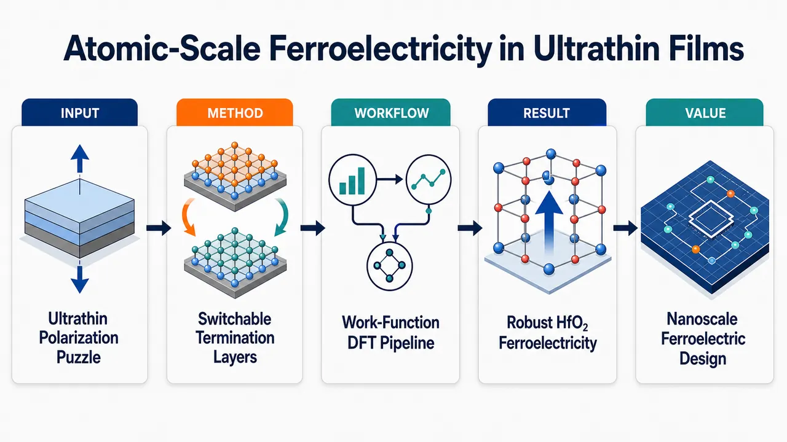
研究问题传统宏观静电理论认为超薄铁电薄膜的面外极化会被去极化场和有限屏蔽压垮，但 HfO₂、铋氧化物等材料在接近单胞厚度时仍保持稳健、可切换的面外铁电性；核心问题是：这种极限厚度下的铁电极化如何在没有完美电极屏蔽、甚至无外部吸附物时仍然稳定存在并可翻转？创新方法论文提出以“终止层功函数”为中心的原子尺度理论，把表面、界面、吸附层和电极统一看作可产生内建电势的极化层；Aha 点在于：某些薄膜的材料自身终止层就是极化层，且在极化翻转时可在低功函数层与高功函数层之间互换角色，形成“自极化 + 终止层角色可切换”的内禀稳定机制，并总结为单侧极化层、厚度无关电势、过极化三条原则。工作流程输入不同终止层、氧覆盖、厚度和电极条件的超薄薄膜结构；先用功函数差判断两侧终止层产生的电势差、电荷转移和内部电场；再通过第一性原理 DFT 弛豫 BaTiO₃ 吸附 H/OH、6 层与 10 层 HfO₂、Cu 电极夹持 HfO₂；观察极性 Pca2₁ 结构是否保持、是否翻转或转为非极性；最终输出极化稳定性图谱、终止层角色分配和超薄铁电设计规则。关键结果HfO₂ 的 Hf/O 终止层可随极化方向互换高/低功函数极化层角色，使 6-Hf-layer 超薄薄膜在多种氧覆盖下保持极性 Pca2₁ 结构；顶面加氧会提高功函数并削弱极化稳定，底面加氧会先增强稳定、再因过强内部电场导致过极化失稳；厚度从 6 层增至 10 层后，固定电势差对应的内部电场变小，部分原本失稳的高氧覆盖结构重新稳定；双侧 Cu 电极可降低内部电场并稳定更宽氧覆盖范围，而单侧电极效果不足。应用价值该理论把超薄铁电器件设计从单纯依赖电极屏蔽转向寻找材料自身的“特征结构”：两侧终止层原子相同但成键不同，可形成可切换高/低功函数边界；它为 HfO₂ 铁电存储、纳米传感器、场效应晶体管以及 1 nm 级铋氧化物、(111) PbTiO₃ 等新型纳米铁电材料提供结构筛选准则和电极/表面工程指导。第一部分：核心概览
原子尺度薄膜铁电理论被推进到超薄极限：稳健的面外可切换极化并非只能依赖电极屏蔽去极化场，而可由薄膜自身终止层功函数差异、自极化与终止层角色可切换性稳定。核心贡献在于提出三条极化层原则，并用 HfO₂ 氧覆盖、厚度与 Cu 电极计算解释超薄铁电稳定性，连接 HfO₂、铋氧化物和特定 PbTiO₃ 薄膜的共同结构根源。
---
第二部分：结构化快速回顾
《Atomic-scale theory of robust out-of-plane ferroelectricity in ultrathin films》（None，）
背景
传统宏观静电理论预期超薄铁电薄膜中的面外极化会被去极化场抑制，尤其在有限屏蔽长度下更严重。然而 HfO₂ 基氧化物、铋基氧化物等体系显示出接近单胞尺度的稳健面外铁电性，要求新的原子尺度解释。
方法
建立基于表面/界面/吸附层功函数的第一性原理理论框架，分析 BaTiO₃ 吸附 H/OH 的示范体系、不同氧覆盖的 6 层与 10 层 HfO₂ 薄膜、以及 Cu 电极夹持的 HfO₂ 薄膜。
结果
三条原则构成理论核心：单侧极化层原则、厚度无关电势原则、过极化原则。HfO₂ 的终止 Hf/O 层可在不同极化方向下分别充当低功函数或高功函数极化层，从而产生自极化和可切换终止层角色。
讨论
特征结构是稳健超薄铁电性的结构判据：两侧终止层由相同原子组成，但与相邻层成键方式不同，导致两侧功函数角色不同，并在极化翻转时互换。该机制解释 HfO₂、1 nm 铋氧化物、(111) PbTiO₃ 的超薄铁电性。
局限
模型主要给出稳定性与机制解释，未系统比较所有竞争相的绝对能量；氧覆盖高浓度表面能、机械夹持、电极应力、缺陷、吸附物动力学等因素仍需更完整耦合。
结论
稳健可切换超薄面外铁电性可由材料自身终止层产生，而非单纯依赖外部屏蔽。设计新型纳米铁电器件时，应优先寻找具有特征结构、自极化终止层和可切换功函数角色的材料。
---
第三部分：逐章节冷凝解析
Title
Atomic-scale framing of ultrathin ferroelectricity
标题直接界定理论尺度与问题对象：原子尺度理论、稳健面外铁电性、超薄薄膜。研究焦点不是传统体相铁电性，而是极限厚度下仍能保持可切换面外极化的薄膜体系。标题中的核心表述为 *"Atomic-scale theory of robust out-of-plane ferroelectricity in ultrathin films"*，明确将理论重心从宏观静电模型推进到原子级终止层与界面化学。
---
Abstract
Robust out-of-plane polarization is positioned as a device-critical property
超薄薄膜铁电性被定义为下一代纳米电子器件的关键物性，核心判据是稳健、可切换、面外极化。摘要开端直接给出应用背景：*"Ferroelectricity in ultrathin films, characterized by robust switchable out-of-plane polarization, is key to next-generation nanoelectronics."* 这里的“robust”强调极化在极限厚度、界面扰动和去极化场下仍能维持。
Macroscopic electrostatics predicts suppression with decreasing thickness
传统理论预期薄膜越薄，铁电性越难保持。摘要将这一理论张力表述为：*"Although the macroscopic theory of ferroelectricity suggests that ferroelectricity is inevitably suppressed as the film thickness decreases"*。关键矛盾在于：宏观去极化场理论通常预言临界厚度，而实验体系却显示超薄稳定极化。
HfO₂-based and bismuth-based oxides motivate a new theory
近期实验突破集中在 HfO₂ 基氧化物与铋基氧化物，这些材料违反传统厚度抑制预期。摘要指出：*"recent studies have demonstrated robust ultra thin-film ferroelectricity, for certain ferroelectric materials, specifically HfO2-based oxides and bismuth-based oxides."* 这使理论目标从解释单一材料转为寻找跨材料的结构性机制。
Work function of termination layers becomes the central variable
理论框架的核心变量不是单纯的自由电荷屏蔽，而是终止层功函数。摘要中的关键句为：*"By considering the work function of the termination layers of the film, we find that robust ferroelectricity arises from “self-polarizing” and “switchable role of the termination layer” effects strongly correlated to the “characteristic structure.”"* 这确立了三个核心概念：self-polarizing、switchable role of the termination layer、characteristic structure。
Top electrodes stabilize ferroelectricity through more than classical screening
电极的重要性被重新解释为改变内部电场和终止层/电极功函数边界条件，而不只是屏蔽去极化场。摘要表述为：*"This theory also provides further insights on the importance of top electrodes in stabilizing ferroelectricity for this class of materials in the ultrathin limit."* 这为 HfO₂ 铁电相常依赖顶部电极的实验现象提供了功函数视角。
---
Main text
Ferroelectricity is technologically important but thickness-limited
铁电性被定义为具有电场可切换极化的性质，并连接到非易失存储、纳米传感器和场效应晶体管。开篇给出定义：*"Ferroelectricity, the property of possessing an electric-field-switchable polarization, plays an important role in next-generation devices"*，并列举 non-volatile memory、nanoscale sensors、field-effect transistors。问题核心是超薄薄膜中保持面外 bulk-like polarization非常困难：*"achieving robust switchable polarization in the out-of-plane direction in ultrathin ferroelectric films has long been considered challenging"*。
Depolarization field explains conventional suppression
自由极性薄片对应 Tasker 分类中的 Type-3 surface，表面净电荷产生宏观电场并反向作用于极化。原文指出：*"A free-standing polar slab, corresponding to a Type-3 surface in Tasker’s classification, has surfaces with net charge generating a macroscopic electric field, called the depolarization field, which opposes the polarization."* 去极化场与极化成正比，原则上不直接依赖厚度：*"The depolarization field is proportional to the polarization and thus does not in principle depend on thickness."*
Incomplete screening becomes worse in thinner films
吸附自由带电物种或电极可屏蔽去极化场，但有限屏蔽长度导致残余场。关键机制为：*"finite screening lengths lead to incomplete screening in thin films, resulting in a residual depolarization field that suppresses or can even still eliminate the ferroelectric polarization."* 厚度越小，屏蔽越不完全：*"This incomplete screening gets worse as the thickness of the film decreases."*
Unconventional ultrathin ferroelectrics break the classical expectation
HfO₂ 基体系成为最重要反例，可在超薄薄膜中维持面外体相级自发极化。原文指出：*"Recent breakthroughs have revealed several unconventional ferroelectrics, most notably HfO2-based systems, in which out-of-plane bulk-like spontaneous polarization is sustained in ultrathin films."* 该事实要求解释为什么某些材料没有明显临界厚度或尺寸抑制。
Existing models include improper ferroelectricity and flat polar bands
已有解释包括非本征铁电模型和 flat-band model。非本征模型中极化模耦合到稳定结构模：*"In the improper ferroelectric models, the polar mode is coupled to other primary structural modes, such as lattice tilting, that remain stable in thin films, therefore protecting the polar mode from thickness-dependent suppression."* HfO₂ 的平坦极性声子带则暗示单胞极化弱依赖邻近单胞：*"the flat polar band of HfO2 indicates that the polarization of an individual unit cell is weakly affected by its neighbors, leading to the scale-free behavior."*
Interface and surface chemistry can stabilize polarization beyond electrostatic screening
极性薄膜状态可由表面/界面化学稳定，机制不同于电极自由电荷屏蔽。关键句为：*"the polar state of a ferroelectric thin film can be stabilized by the chemistry at the interfaces or surfaces, in a way that is quite different from screening of the depolarization field by the charges in electrodes."* 吸附层可改变表面功函数并诱导极化，如 OH 吸附：*"An adsorbate layer can modify the work function of the surface and help stabilize polarization."* 以及：*"an OH adsorbate can induce polarization pointing toward the surface."*
Polarizing layers generalize adsorbates, reconstructions, and interfaces
Polarizing layer 被定义为能诱导稳定极化的外层。原文给出定义：*"Here, the adsorbate layer inducing stable polarization is referred to as “polarizing layer.”"* 极化层不局限于吸附物，也可由表面重构或另一材料构成：*"Besides adsorbates, a surface reconstruction or another material can also work as a polarizing layer."*
The framework systematically includes work function and electrostatic effects
理论框架把表面、界面、吸附层统一进功函数与静电效应。原文表述为：*"we develop a first-principles theoretical framework that systematically includes the role of surfaces, interfaces and adsorbates in stabilizing polar states through a combination of electrostatic and work function effects."* 理论包含三条与极化层相关的原则：*"This theoretical framework contains three principles related to polarizing layers."*
Characteristic structures enable self-polarization
稳健可切换极化来自一种被称为 characteristic structures 的结构类型，其中终止层本身依极化方向充当极化层。关键表述为：*"the termination layers can act as polarizing layers, depending on the orientation of the dipolar distortion, leading us to describe these systems as “self polarizing.”"* 这解释了 HfO₂ 与某些铁电体的超薄稳健性，也解释常规 PbTiO₃ 为什么会失去薄膜铁电性：*"This theoretical framework can account for stabilities of HfO2 thin films with different oxygen coverages and why conventional ferroelectrics, such as PbTiO3, can lose ferroelectricity in thin films."*
---
Single-sided polarizing layer principle
A single polarizing layer can locally stabilize polarization
第一条原则是单侧极化层原则：薄膜一侧的极化层即可稳定薄膜内局部极化。原文直接定义：*"We begin with the “single-sided polarizing layer” principle, which says that a polarizing layer on one side can stabilize polarization in a thin film."* 该体系类比于金属-绝缘体异质结构：*"The system can be analogized to a metal-insulator heterostructure."*
Work-function mismatch causes charge redistribution and band bending
金属与绝缘体接触后，由于功函数不同，电子重新分布、费米能级对齐、真空能级移动、绝缘体能带弯曲。原文机制链条为：*"After a metal is put in contact with an insulator with a different work function, electrons will redistribute, aligning the two Fermi levels, shifting the vacuum levels, and causing a bending of the bands in the insulator."* 极化层诱导的局部电场导致界面附近极性畸变：*"The polarizing layer will induce local polar distortion near the interface due to the band bending and associated electric field."*
BaTiO₃ with OH, H, or both adsorbates provides the model demonstration
示范体系为 BaTiO₃ 薄膜，吸附层包括 OH、H 或两者同时存在。结构说明为：*"we consider BaTiO3 thin films with OH, H, or both as adsorbates as illustrative examples."* 通过比较单侧吸附与双侧吸附，可判断极化层效应的局域性与可转移性：*"By comparing results with those for systems with adsorbate layers on both sides, we can see that these effects of the polarizing layer are quite local and transferable."*
Macroscopic average potentials near adsorbates are transferable
在单侧与双侧吸附结构中，吸附层附近的宏观平均电势近似一致。原文证据为：*"the macroscopic average potential profiles near the adsorbates are approximately identical for single-sided and double-sided adsorption."* 这说明极化层对邻近区域的功函数/电场调控主要由局部化学决定，而不是整体薄膜厚度或远端表面决定。
Polar distortion decays away from the polarizing layer
单侧极化层诱导的畸变会向薄膜内部传播，但随距离衰减。原文指出：*"For the single-sided polarizing layer case, the potential profiles are approximately flat deep in the films, and the Ti displacements decay with increasing distance from the polarizing layer."* 这里的 Ti displacements 是 BaTiO₃ 局域极化畸变的原子尺度指标。
---
Thickness independent potential principle
Two polarizing layers impose a thickness-independent vacuum potential difference
第二条原则是厚度无关电势原则：若薄膜两侧均有极化层，两侧真空电势差不随薄膜厚度变化，而等于两侧极化层功函数差。原文定义为：*"The next principle is the “thickness independent potential” principle, which says that if there are polarizing layers at both sides of a thin film, the difference in the potential in the vacuum on the two sides is thickness independent, being the difference in work function of the two adsorbate layers."*
BaTiO₃ with OH and H on opposite sides verifies the principle
示范体系为两侧分别吸附 OH 与 H 的 BaTiO₃ 薄膜，比较厚度为 1.7 nm 与 3.8 nm 的结构。原文描述为：*"Here, we consider a BaTiO3 thin film with OH and H adsorbates on both sides."* 以及：*"Fig. 1 (e) and (f) show the macroscopic average potentials of BaTiO3 slab with different thicknesses."* 结果为：*"the vacuum potential difference between the two sides is a constant regardless of the thickness of the slab."*
Metal-insulator-metal analogy explains fixed potential drop
该原则可由金属-绝缘体-金属结构解释：两侧金属功函数不同，电子在金属间转移，绝缘体中的电势变化等于功函数差。原文说明：*"if an insulator is sandwiched between metals with different work functions, charge will transfer directly from one metal layer to the other and the potential change through the insulator should be Δϕ, which is the difference of work function between the two metals."*
Thinner films experience larger internal electric fields
固定电势差除以更小厚度，导致更大内部电场。关键推论为：*"An important implication of “thickness independent potential” principle is that a thinner film has a larger internal electric field."* 这将厚度效应从“去极化场随厚度变强”转化为“固定功函数差导致电场随厚度减小而增大”。
Large electrostatic energy leads to over-polarization instability
过强内部电场可使薄膜结构不稳定，并引出第三原则。原文指出：*"A thin film may become unstable due to the large electrostatic energy, which is related to the “over polarization” effect discussed next."* 这说明极化层并非总是稳定铁电性；过强极化驱动力反而可破坏极性结构。
---
Over polarization principle
Excessive work-function-induced electric field destabilizes polar phases
第三条原则是过极化原则：两侧极化层功函数差可稳定极化，但若内部电场过大，极性相会变得不稳定。原文表述为：*"If the electric field is too large, the polar phase of the thin film may become unstable, which is referred as to the “over polarization” principle."*
Dense, highly ionic, oppositely charged layers are prone to over-polarization
过极化常发生于两侧极化层由高密度、高离子性、相反带电离子组成时。原文条件为：*"Over polarizing typically occurs when the two polarizing layers are composed of dense, highly ionic, and oppositely charged ions."* 这说明稳定性取决于极化层电荷密度、离子性与功函数差的综合强度。
One instability path transforms the whole slab into a non-polar structure
第一类结构转变是整个薄片，包括极化层与薄膜内部，转变为非极性结构。原文为：*"In the first type, the entire slab, including the polarizing layers and the film interior, transforms into a non-polar structure."* 这对应极化态彻底丧失。
Another instability path changes surface bonding to reduce electric field
第二类结构转变是极化层改变成键方式，以降低功函数差与内部电场。原文为：*"In the second type, the polarizing layers may change their bonding patterns, to reduce the work function difference and internal electric field."* 这强调表面化学重构是过极化释放电场能的关键通道。
---
Self-polarization and switchable termination roles in HfO₂
Most polarizing-layer-stabilized slabs are not ferroelectric
若极化方向被两侧极化层功函数预设，则体系虽有极化但不可切换，不能严格视为铁电。原文指出：*"most polar slabs stabilized by polarizing layers cannot be viewed as ferroelectric, since a preferred polarization direction has been predetermined by the work functions of the polarizing layers."* 极化方向与电负性强相关：*"which is strongly related to the electronegativity."*
Switching may require adsorbate detachment or migration in ordinary polarizing-layer systems
普通吸附极化层体系的极化翻转不是简单电场翻转，而可能涉及吸附物脱附或穿透薄片。原文表述为：*"Polarization switching is expected to be associated with complex processes such as adsorbate detachment or adsorbate penetrating through the slab."* 这说明普通极化层机制难以解释稳健可逆铁电开关。
HfO₂ can switch down to unit-cell scale without adsorbates or electrodes
HfO₂ 的独特性在于无吸附层、无电极时也可展现接近单胞尺度的可切换极化。原文指出：*"thin films of some ferroelectrics, most notably HfO2, can exhibit a robust switchable polarization down to the unit cell scale, even without any adsorbate layers or electrodes."*
Characteristic structures allow termination layers to switch polarizing-layer type
解释机制是特征结构：终止层可随极化方向在两类极化层角色之间切换。原文核心句为：*"for certain crystal structures, which we call “characteristic structures.” the termination layers of the film can act as two different types of polarizing layers, switching between types with the polarization direction, in a mechanism that we refer to as “self polarization.”"*
Pca2₁ HfO₂ contains two oxygen categories that generate polarization
铁电 HfO₂ 的结构为 Pca2₁。氧原子分为两类：三配位 O1 与四配位 O2。原文说明：*"In the ferroelectric Pca21 structure of HfO2, there are two categories of oxygen atoms: three-coordinated (O1) and four-coordinated (O2)."* 极化来源于 O2 相对 Hf 层中面位移：*"The O1 atoms locate near the mid-plane of their adjacent Hf layers, while the O2 atoms are displaced from the mid-plane toward Hf layers, leading to non-zero polarization."*
6-Hf-layer HfO₂ slabs retain polar Pca2₁ structures after DFT relaxation
计算对象为两端 Hf 终止的 6-Hf-layer HfO₂ slab。原文给出稳定性结果：*"The slab structures presented in Fig. 3 (a) and (b) are fully relaxed using DFT calculations and preserve their polar Pca21 structures."* 这说明极化结构在超薄自由薄片中可保持。
One termination behaves like a low-work-function polarizing layer
在 Fig. 3(a) 对应极化方向下，顶部 Hf 层与 O1 弱成键，被近似为低电负性金属层，即低功函数极化层。原文为：*"the top Hf layer, which bonds with O1 weakly, is approximated as a metal with a small electronegativity, serving as a low-work-function polarizing layer."* 该层稳定远离自身方向的极化，类似 BaTiO₃ 上 H 吸附：*"The top Hf layer can stabilize a polarization pointing away from it, similar to the H adsorbate on a BaTiO3 slab."*
The opposite termination acts as a high-work-function polarizing layer
顶部 Hf 层具有过量自由导电电子，并向底部层转移电子；底部欠配位 Hf 层充当高功函数极化层。原文指出：*"The top layer has excessive free conducing electrons and transfer some to the bottom layer, which serves as a high-work-function polarizing layer, since the Hf atoms at bottom are also underbonded."* 两侧共同稳定极化：*"The top and bottom polarizing layers together stabilize the polarization in the thin film."*
Polarization reversal swaps high- and low-work-function roles
极化翻转后，上下终止层的极化层角色互换。原文描述 Fig. 3(b)：*"the resultant structure after polarization switching, the top layer has switched to the high-work-function polarizing layer structure, and the bottom layer has switched to the low-work-function polarizing layer structure."* 因此，HfO₂ 可切换铁电性被归因于终止层角色可切换：*"we attribute the switchable polarization in HfO2 thin film to the switchability of the termination layers between the low-work-function and high-work-function polarizing layers structures."*
---
Oxygen coverage and HfO₂ slab stability
Terminations are classified by distance between Hf and O1
两类终止面以 Hf 原子是否远离 O1 定义：远离 O1 的为 termination 1，另一类为 termination 2。原文为：*"We refer to the termination whose Hf atoms are far away from O1 as termination 1, and the other termination as termination 2."*
m/n notation encodes oxygen coverage on the two terminations
氧覆盖记为 m/n，其中 m 与 n 分别表示 termination 1 和 termination 2 上每个表面化学式单元的氧原子数。原文定义：*"we use m/n to represent the oxygen coverage, where m and n denote the number of oxygen atoms per surface formula unit on terminations 1 and 2 respectively."*
DFT relaxation tests 6-Hf-layer HfO₂ polar slabs across oxygen coverages
计算对不同氧覆盖的 6-Hf-layer HfO₂ polar slabs 进行 DFT 弛豫。原文为：*"We carry out DFT relaxations on 6-Hf-layer HfO2 polar slabs with different coverage of oxygen atoms, and their stabilities are summarized in Fig. 4 (a)."* 稳定性判据是弛豫后是否保持铁电极性结构：*"if the slab remains the ferroelectric polar structure after relaxation, it is considered stable."*
Metastable polar states are treated as meaningful even without global energy comparison
不比较所有竞争相最低能量，因为亚稳极性态仍意味着移除电场后极化可持续。原文说明：*"We do not consider whether there are competing phases with lower energy, since a metastable polar state means that the polarization can sustain after the removal of electric field."* 这明确研究目标是极化可保持性，而非完整相图热力学基态。
Unstable m/n states may switch to n/m opposite-polarized structures
某些覆盖态在弛豫中可能自发翻转到相反极化结构。原文为：*"the polarization of a given m/n state may switch spontaneously on relaxation to its oppositely polarized structure n/m if it is unstable."* 这直接体现终止层角色与氧覆盖之间的耦合。
Increasing oxygen on the top surface can destabilize the polar state
增加 Fig. 3(a) 顶面氧数 m 会提高顶面功函数，削弱单侧极化效应，并减小上下功函数差，从而趋向失稳。原文为：*"increasing the work function by increasing the number of oxygen atoms m on the top surface layer in Fig. 3 (a) tends to destabilize the polar state, since the single-sided polarizing effect of the layer is decreased and the work function difference between the top and bottom layers is decreased."*
Increasing oxygen on the bottom first stabilizes then over-polarizes
增加底面氧数 n 会增大功函数差，起初进一步稳定极化，但继续增加会因过极化而失稳。原文指出：*"Increasing the number of oxygen atoms n on the bottom layer increases the work function difference, initially further stabilizing the polar state, but subsequently destabilizing the polar structure by over polarizing."* 这正是三原则中“稳定—过度稳定—失稳”的非单调行为。
Increasing oxygen on both sides can preserve work-function balance
同时增加 m 与 n 时，功函数差变化较小，更有利于极性态稳定。原文为：*"Increasing m and n together reduces the change in work function difference, promoting stability of the polar state."*
Very high oxygen coverages destabilize through unfavorable surface energetics
最高氧覆盖 2.0/1.5 与 2.0/2.0 在 6 层体系中不稳定，原因是高氧浓度表面能不利。原文给出具体覆盖：*"For the largest values of m and n (the 2.0/1.5 and 2.0/2.0 cases), instability is produced by an unfavorable energetics for the high concentration of oxygen atoms at the surface."*
Instability channels include nonpolar relaxation and opposite-polarization switching
不稳定可能导向非极性态，也可能导向反向极化态，取决于 m、n 与厚度。原文为：*"Depending on m, n and the thickness, instability of the polar state could be to a nonpolar state or to a polar state with opposite polarization."*
---
Thickness effects in 10-Hf-layer HfO₂ slabs
10-Hf-layer slabs test the thickness dependence of the mechanism
厚度效应通过 10-Hf-layer HfO₂ polar slabs 的 DFT 弛豫检验。原文为：*"Next, we study the effect of increasing film thickness by carrying out DFT relaxations on 10-Hf-layer HfO2 polar slabs."*
Top-oxygen destabilization remains thickness independent
顶层加氧削弱极化层效应的机制不依赖厚度，因此 m/0.0 与 m/0.5 在 m ≥ 1.5 时仍不稳定，和 6 层体系一致。原文为：*"The mechanism described above by which the addition of oxygens to the top layer tends to destabilize the polar film is thickness independent, and indeed the m/0.0 and m/0.5 films are unstable for m greater than or equal to 1.5, just as in the 6 layer case."*
Over-polarization becomes weaker in thicker films
底层加氧导致过极化失稳，但厚度增加后，固定电势差对应的内部电场变小，因此临界 n 值升高。原文解释为：*"The thickness independence of the potential difference makes the electric field smaller for thicker films, raising the critical value of n."*
Previously unstable high-n terminations become stable in 10-layer films
6 层中因过极化失稳的某些高氧覆盖终止在 10 层中恢复稳定。原文证据为：*"Indeed, the terminations that were unstable for 6-layer films are stable for 10 layer films."*
High oxygen surface energy matters less in thicker systems
对最高氧覆盖 2.0/1.5 与 2.0/2.0，10 层体系稳定，因为表面能在总能量中的权重降低。原文为：*"For the largest values of m and n (the 2.0/1.5 and 2.0/2.0 cases), the structures are stable for the 10-layer films because the surface energy has less influence on thicker systems."*
---
Electrode effects
Electrodes redistribute free charge among electrodes and polarizing layers
加入电极后，自由电荷会在两侧电极和两侧极化层之间重新分布以统一费米能级。原文为：*"When electrodes are added at both ends, free charge is redistributed among the two electrodes and the two polarizing layers to equalize the Fermi level."*
Vacuum potential difference becomes determined by electrode work functions
两侧电极加入后，真空电势差由电极功函数差决定；对称电极时该差值为零。原文指出：*"the difference in the vacuum potential is determined by the difference in the work function of the electrodes and is zero for symmetric electrodes."*
Cu electrodes reduce internal electric field in 6-Hf-layer HfO₂
计算对象为带 Cu electrodes 的 6-Hf-layer slabs，示例为 1.0/1.0 6-Hf-layer slab between Cu electrodes。原文为：*"We carry out DFT calculations on 6-Hf-layer slabs with copper electrodes."* 以及：*"we show the fully relaxed 1.0/1.0 6-Hf-layer slab between Cu electrodes as an illustrative example."* 与去除电极但固定原子位置的结构比较后发现：*"the electric field inside the film decreases compared with the free-standing case."*
Electrodes stabilize HfO₂ ferroelectric phase by reducing internal field
该结果解释实验中电极对 HfO₂ 铁电相稳定的重要作用。原文为：*"These results provide additional insights on the well-established experimental results that the addition of electrodes plays a critical role in stabilizing the ferroelectric phase."* 机制侧重内部电场降低，而不只机械夹持。
Two-sided electrodes stabilize many oxygen coverages, one-sided electrode does not
两侧电极可稳定广泛氧覆盖的 6 层 HfO₂ slab，而单侧电极不行。原文为：*"electrodes at two sides can stabilize 6-Hf-layer HfO2 slabs with a wide range of O coverages, but electrode at only one end cannot."* 这强调对称或双端边界条件对超薄极化稳定至关重要。
Mechanical confinement may coexist with electrostatic stabilization
顶部电极影响可包括机械夹持，但内部电场降低是重要成分。原文平衡表述为：*"Recognizing that the addition of a top electrode can have multiple effects, such as mechanical confinement, our results are consistent with our proposal that the internal electric field reduction plays an important role."*
---
Characteristic structures and material generalization
Robust HfO₂ thin-film ferroelectricity has two key effects
HfO₂ 稳健薄膜铁电性的两个关键机制是自极化与终止层角色可切换。原文总结为：*"First, the polarizing layer is part of the material itself, not requiring external adsorbates, and such an effect is referred to as “self-polarization”."* 第二个机制为：*"a termination Hf layer (and oxygen atom on it) can be either a low-work-function polarizing layer (similar to a metal) or a charged layer under different polarization directions, and such an effect is referred to as “switchable role of the termination.”"*
Characteristic structure is the structural origin of both effects
上述两个效应来自晶体结构。原文为：*"We also notice that these two key effects are the consequence of the crystal structure."* 这种结构族被称为 characteristic structure：*"We refer to such a family of structure as a “characteristic structure”."*
Characteristic structures have identical atoms on both terminations but different bonding
特征结构的关键判据是两侧终止层原子相同，但与邻近层成键不同，导致一侧低功函数、一侧高功函数。原文定义为：*"In a “characteristic structure”, the slab has the same atoms on both terminations, but the two termination layers bond to the adjacent atomic layers differently, so that one termination acts as a low work-function polarizing layer and the other as a high work-function polarizing layer."*
Polarization switching swaps the characters of the two polarizing layers
特征结构的铁电可切换性来自极化翻转时两侧极化层角色互换。原文为：*"Then, when the polarization switches, the characters of the two polarizing layers switch as well."* 这解决普通吸附极化层“方向预设、不可逆切换”的问题。
1-nm bismuth oxide and (111)-PbTiO₃ are predicted to share this mechanism
近期发现的 1 nm ferroelectric bismuth oxide 和理论提出的 (111)-oriented PbTiO₃ films 也采用特征结构，因此预期在超薄极限具稳健铁电性。原文为：*"Many other recently discovered thin film ferroelectrics, including the recently discovered 1-nm ferroelectric bismuth oxide and theoretically proposed (111)-oriented PbTiO3 films, adopt “characteristic structures” and are expected to have robust ferroelectricity in ultrathin films by our theoretical model."*
Conventional (001) ABO₃ perovskite terminations lack polarizing-layer character
常规 (001) 取向 ABO₃，如 BaTiO₃ 或 PbTiO₃，对称终止层 AO 或 BO₂ 通常电中性、电负性中等，因此不易充当极化层。原文为：*"in (001)-oriented conventional ABO3 (such as BaTiO3 or PbTiO3) symmetrically-terminated perovskite ferroelectric thin films, the termination layer (either AO or BO2) is charge neutral, having a medium electronegativity, and is unlikely to work as a polarizing layer."*
Surface reconstruction can create polarizing layers but usually fixes one polarization direction
空位或吸附原子可使表面层非中性并充当极化层，但会预设极化方向，无法通过施加再移除电场实现真正切换。原文指出：*"Surface reconstruction with vacancies or adatoms can make the surface layer non-neutral and serve as polarizing layer."* 但：*"the polarization has a preferred direction and cannot be switched by the application and then removal of an electric field."*
---
Summary / Conclusion
Work-function viewpoint explains robust ultrathin ferroelectricity
总结部分明确理论主线：从功函数视角解释超薄薄膜铁电性。原文为：*"we develop a theoretical framework explaining the observation of robust ferroelectricity in ultrathin films ferroelectricity from the work function point of view."*
Characteristic structure explains robust switchable polarization
稳健可切换极化被归因于铁电体具有特征结构。原文为：*"The theory explains the robust switchable polarization as a consequence of the ferroelectrics having a “characteristic structure.”"*
Termination layers act as switchable polarizing layers
在特征结构中，材料终止层自身充当极化层，并可随极化方向切换角色。原文结论为：*"a termination layers of the material act as polarizing layer whose role can switch under different polarization direction, enabling a switchable and robust polarization through the thin film."*
Three principles also clarify why top electrodes stabilize HfO₂
三原则不仅解释自由薄膜，还解释顶部电极对 HfO₂ 铁电相稳定的重要性。原文为：*"The theory, consisting of three principles, provides further insight into the importance of top electrodes in stabilizing the HfO2 ferrolectric phase."*
The framework provides design guidance for nanoscale devices
理论最终目标是指导新型纳米器件材料设计。原文为：*"This work serves as a comprehensive theoretical framework for ferroelectricity in ultrathin films and provides guidance on the design of next-generation nanoscale device."*
---
Acknowledgement
Funding and computational resources supported first-principles calculations
研究支持来自美国国家科学基金会、Wisconsin MRSEC、美国海军研究办公室，以及 UAB Cheaha 超算和美国国防部高性能计算资源。原文列出：*"F.Y. and Y. Q. acknowledge support from the National Science Foundation under Grant No. OIA-2428751."* 以及：*"Y.T. and K.M.R. acknowledge support from the Wisconsin Materials Research Science and Engineering Center (NSF DMR-2309000), and the Office of Naval Research through N00014-21-1-2107."* 计算资源为：*"First-principles calculations were performed using the computational resources provided by the Cheaha Supercomputer at the University of Alabama at Birmingham, and the High-Performance Computing Modernization Office of the Department of Defense."*
---
第四部分：深度理解与语言支持
1. 术语解析
#### Depolarization field
Depolarization field 指由极性薄膜表面束缚电荷产生、方向反抗极化的宏观电场。语境中它是传统薄膜铁电临界厚度问题的核心原因。原文为 *"a macroscopic electric field, called the depolarization field, which opposes the polarization"*。微妙点在于：它本身原则上不依赖厚度，但有限屏蔽造成的残余效应在薄膜变薄时更严重。
#### Polarizing layer
Polarizing layer 不是普通吸附层，而是能通过功函数、电荷转移、局域电场或成键诱导薄膜极化的表面/界面层。原文定义为 *"the adsorbate layer inducing stable polarization is referred to as “polarizing layer.”"* 在该理论中，它可由吸附物、表面重构、异质界面，甚至材料自身终止层构成。
#### Thickness independent potential
Thickness independent potential 指两侧极化层功函数差固定时，薄膜两侧真空电势差不随薄膜厚度变化。关键不是电场不变，而是电势差不变；因此电场约为 Δϕ / thickness，薄膜越薄电场越大。原文为 *"the difference in the potential in the vacuum on the two sides is thickness independent"*。
#### Over polarization
Over polarization 指极化层诱导的内部电场过强，使原本被稳定的极性结构反而失稳。它不是“极化太强所以更铁电”，而是过强功函数差产生高静电能，驱动非极性化或表面成键重构。原文为 *"If the electric field is too large, the polar phase of the thin film may become unstable"*。
#### Characteristic structure
Characteristic structure 是最关键的新概念：两侧终止层原子相同，但成键环境不同，因此一侧像低功函数极化层，另一侧像高功函数极化层；极化翻转时两者角色互换。原文为 *"the slab has the same atoms on both terminations, but the two termination layers bond to the adjacent atomic layers differently"*。
---
2. 疑难查证
#### 为什么功函数能稳定极化，而不只是电极屏蔽在起作用？
功函数差意味着电子化学势不同。两个表面/终止层接触同一绝缘薄膜时，系统趋向费米能级对齐，从而发生电荷重新分布和电势重排。这个过程会在薄膜内部产生电场，电场耦合到离子位移，诱导或稳定某一方向的极化。
传统电极屏蔽关注的是抵消极化表面束缚电荷；功函数模型关注的是表面化学本身如何设定边界电势。两者都涉及电场，但物理起点不同：前者是“极化产生场，电极屏蔽它”；后者是“表面功函数差先设定场，再稳定极化”。
#### 为什么普通极化层不能直接等同于铁电？
铁电要求极化在外电场作用下可逆切换，并在移除电场后保持。若一侧是 H、另一侧是 OH，功函数差已经预先指定极化方向；翻转极化等价于逆着表面化学偏好强行排列，移除电场后会回到原方向。真正切换可能需要 H/OH 脱附、扩散或穿透薄膜，不是普通铁电畴翻转。
HfO₂ 的特殊性在于极化翻转时终止层自身角色也翻转，因此“边界条件”跟着极化一起变。这样，两个极化方向都能被对应的终止层角色稳定。
#### 为什么特征结构能避免传统临界厚度问题？
传统 perovskite (001) 薄膜的 AO 或 BO₂ 终止层通常电中性，不提供强功函数极化层；超薄时去极化场容易压制面外极化。特征结构中，终止层本身就提供极化稳定边界，而且这种边界是材料结构的一部分，不依赖外部吸附物。
在极薄极限下，表面/界面占比巨大。若终止层能主动稳定极化，薄膜越薄并不必然越不铁电；但若功函数差过强，也可能过极化失稳。因此特征结构提供的是稳健性窗口，而不是无条件稳定。
#### 为什么厚度增加会缓解过极化？
若两侧极化层设定固定电势差 Δϕ，内部电场近似为 E ≈ Δϕ / d。厚度 d 增大，E 变小，静电能密度与结构畸变压力降低。因此 6-Hf-layer 中因过极化失稳的覆盖态，在 10-Hf-layer 中可能稳定。这里厚度效应与传统“薄膜越薄去极化越强”的叙事不同，但都体现为电场边界条件对极化稳定性的控制。
---
第五部分：创新评估与关联
1. 创新性判断
#### 从去极化场屏蔽转向终止层功函数
过去 2–5 年 HfO₂ 超薄铁电解释常集中于 flat phonon bands、improper ferroelectric coupling、应变、缺陷、氧空位、电极夹持或相稳定。该理论的新意在于把终止层功函数作为统一变量，说明即使没有外部吸附层或电极，材料自身终止层也能充当可切换极化层。
#### 提出“自极化”作为内禀表面机制
传统极化层多指外部吸附物、化学重构或异质界面，往往预设单一极化方向。这里的新机制是 self-polarization：极化层是材料本身的一部分，不需要外部物质。对 HfO₂，这解释了为什么无吸附层、无电极情况下仍可保持超薄极化。
#### 解决“极化层稳定但不可切换”的关键矛盾
普通功函数稳定机制会带来方向偏置，从而不是真正铁电。该理论引入 switchable role of the termination layer，说明终止层在极化翻转时高/低功函数角色互换，因此两个极化方向都能被稳定。这是相对于普通吸附极化模型的关键突破。
#### 给出“特征结构”作为跨材料设计准则
创新不止于解释 HfO₂，而是提出可迁移结构判据：两侧相同原子终止、不同成键、可形成高/低功函数极化层并在极化翻转时互换。该判据把 HfO₂、1 nm 铋氧化物、(111) PbTiO₃ 等体系联系到同一结构机制中。
#### 统一解释氧覆盖、厚度和电极效应
通过 6-Hf-layer 与 10-Hf-layer HfO₂、不同 m/n 氧覆盖、以及 Cu 电极计算，理论同时解释：
- 顶层加氧为何可能削弱极化；
- 底层加氧为何先稳定、后过极化失稳；
- 厚度增加为何缓解过极化；
- 双侧电极为何比单侧电极更有效稳定；
- 对称电极为何降低内部电场。
#### 解决前人未完全解决的问题
前人模型可解释 HfO₂ 的局域极化弱耦合、非本征耦合或相稳定，但较难同时回答三个问题：
- 为什么极薄自由薄膜也能有面外极化？
终止层自身提供极化层边界条件。
- 为什么这种极化仍可切换，而不是被表面化学固定？
终止层角色随极化翻转而互换。
- 为什么氧覆盖、厚度、电极会产生复杂稳定性窗口？
功函数差、内部电场和过极化共同决定稳定性。
核心新颖性在于：超薄铁电的稳定性不再被视为单纯“如何消除去极化场”，而被重新表述为“材料终止层能否以内禀、可切换的功函数边界条件稳定极化”。
-
17
📊 含图深析
📖 展开分析 + 配图
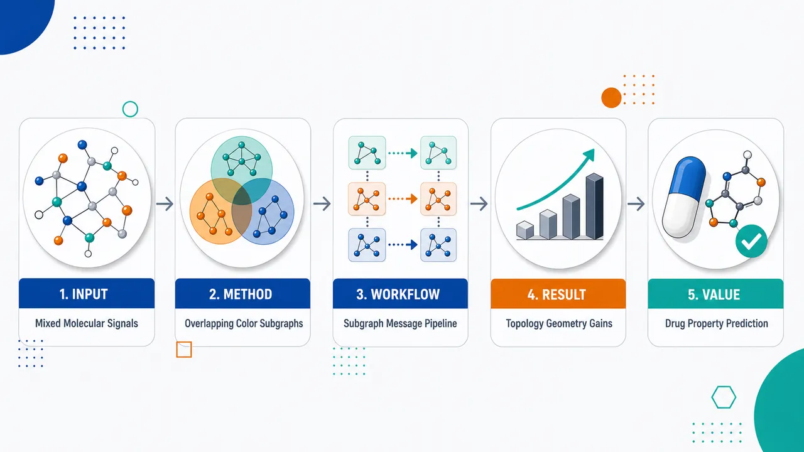
研究问题单一分子图MPNN把C–C、C–N、O–H、卤素相互作用等异质化学信号放进同一个消息通道中聚合，导致关键官能团信号被大骨架稀释；远距离原子信息还需要多层传播，容易出现过平滑与过挤压。核心问题是：如何在保留原子级细节的同时，分离不同相互作用通道，并形成统一的分子性质预测表示。创新方法提出“重叠的原子类型对特异性子图”分解：把一个分子拆成多条颜色通道，如C–N、C–O、N–Cl等，每个原子可同时出现在多个子图中；各子图先独立用共享CMPNN传播消息，再在原子处汇合。Aha点是“不粗化成片段、不切断分子”，而是让同一原子成为多通道信息交汇点，从而延迟异质信号混合。方法包含MMGNN-2D共价拓扑子图和MMGNN-3D空间邻近子图，后者加入距离RBF、角度CBF、扭转Fourier几何描述符。工作流程输入分子原子、键和可选3D坐标；先按原子类型建立颜色词表，并生成原子类型对子图；MMGNN-2D选择共价键形成化学颜色子图，MMGNN-3D按空间cutoff和范德华下界选择几何边形成空间颜色子图；每个子图带有原子特征、键特征或距离-角度-扭转特征；共享CMPNN在所有子图中并行更新有向边和原子表示；同一原子在多个子图中的嵌入通过sum、mean或attention聚合；最终所有原子表示求和得到分子嵌入，经前馈网络输出分类AUC或回归性质值。关键结果在8个MoleculeNet基准上验证：MMGNN-2D在5个分类任务上取得最高宏平均AUC-ROC 0.838，并在BACE达到0.877；BBBP上MMGNN-3D最高，AUC-ROC为0.956，MMGNN-2D紧随其后为0.955；回归任务中，MMGNN-3D在FreeSolv取得最低RMSE 1.793，显示空间几何对水合自由能有效；MMGNN-2D在ESOL取得最低RMSE 0.803，并在Lipophilicity取得第二低RMSE 0.599。结果表明2D拓扑与3D几何具有互补优势。应用价值该研究为药物发现、毒性预测、溶解度预测、血脑屏障渗透预测和材料分子筛选提供更精细的分子表示框架。它能突出局部官能团、卤素、杂原子等小但关键的结构信号，同时捕获空间邻近和非共价相互作用，有助于在新骨架分子上提升性质预测泛化能力，并为不同分子性质选择拓扑或几何建模路径提供依据。第一部分：核心概览 (Overview)
MMGNN提出一种重叠的原子类型对特异性子图分解，把单一分子图拆为多条化学或几何“颜色”通道，在保持原子级分辨率的同时延迟异质相互作用信号混合。框架包含MMGNN-2D与MMGNN-3D：前者基于共价拓扑，后者基于空间邻近并加入距离、角度、扭转描述符。在8个MoleculeNet基准上，MMGNN-2D取得分类宏平均AUC-ROC 0.838与ESOL最低RMSE 0.803，MMGNN-3D在BBBP与FreeSolv最优，显示拓扑与几何表征的互补性。
---
第二部分：结构化快速回顾
《MMGNN: Multi-level, multi-color graph neural networks for molecular property prediction》（None，）
背景
分子MPNN通常在单一原子—键图上传播消息，容易把不同化学相互作用混入同一聚合通道，并在长程传播中遭遇过平滑与过挤压。已有元素特异、层级图、多视图图与几何GNN缓解部分问题，但常在原子级细节保留与相互作用通道分离之间存在权衡。
方法
MMGNN把分子表示为一组重叠的原子类型对特异性子图。MMGNN-2D从共价键构造chemical-colored subgraphs；MMGNN-3D从三维空间邻近构造geometric-colored subgraphs，并将边特征扩展为距离RBF、角度CBF和扭转Fourier编码。每个子图共享CMPNN骨干独立消息传递，再经原子级sum/mean/attention聚合和分子读出完成预测。
结果
在5个分类数据集上，MMGNN-2D取得最高宏平均AUC-ROC 0.838，并在BACE达到0.877；MMGNN-3D在BBBP达到最高AUC-ROC 0.956。回归任务中，MMGNN-3D在FreeSolv取得最低RMSE 1.793；MMGNN-2D在ESOL取得最低RMSE 0.803，并在Lipophilicity达到第二低RMSE 0.599。
讨论
性能模式显示：共价拓扑分解更适合多数分类与溶解度预测，三维几何分解更适合血脑屏障渗透和水合自由能等依赖空间相互作用的性质。重叠子图机制允许同一原子参与多个相互作用通道，从而兼顾局部特异性与全局分子整合。
局限
实验主要覆盖8个MoleculeNet基准，未给出统计显著性检验P值；三维构象生成、空间cutoff、RBF/CBF维度等关键超参数在提供内容中未完整报告。支持信息中的聚合策略消融仅被引用，具体表格未包含在提供文本中。
结论
重叠式、原子类型对特异性分解是一种有竞争力的分子性质预测策略。MMGNN-2D与MMGNN-3D在同一架构下分别刻画拓扑与几何信息，形成互补优势，并为减少单图消息传递中的异质信号早期混合提供了明确建模路径。
---
第三部分：逐章节冷凝解析
Abstract
- Single-graph molecular message passing mixes heterogeneous signals
分子MPNN的核心问题被界定为：所有化学相互作用通过单一图结构和共享消息通道传播，导致不同类型信号混合，并需要较深层数捕获长程效应。原文直接指出：*"Molecular message-passing neural networks commonly propagate chemically diverse interactions through a single graph, which may mix interaction-specific signals and require deep propagation to capture long-range effects."*
- MMGNN uses overlapping atom-type-pair-specific subgraphs
MMGNN的主要建模创新是将分子图分解为重叠的原子类型对特异性子图，并保持原子级分辨率，不是把分子粗粒化为片段或功能团。证据为：*"We introduce the Multi-level, Multi-color Graph Neural Network (MMGNN), a hierarchical framework that decomposes a molecular graph into overlapping atom-type-pair-specific subgraphs while preserving atom-level resolution."*
- 2D and 3D variants encode complementary interaction regimes
MMGNN-2D聚焦共价连接，MMGNN-3D聚焦空间邻近，并加入三类几何边描述符：距离、角度、扭转。原文表述为：*"MMGNN-2D constructs chemical-colored subgraphs from covalent connectivity, whereas MMGNN-3D constructs geometric-colored subgraphs from spatial proximity and augments their edges with distance, angular, and torsional descriptors."*
- Shared CMPNN backbone and atom-wise integration form the prediction pipeline
每个子图由共享通信式消息传递骨干处理，再通过原子级聚合与分子读出合并。原文为：*"Both variants apply a shared communicative message-passing backbone to each subgraph and combine the resulting representations through atom-wise aggregation and molecular readout."*
- Benchmark evidence supports competitive performance
实验覆盖MoleculeNet的5个分类和3个回归基准，采用scaffold splits和5次独立运行。关键结果包括：MMGNN-2D分类宏平均AUC-ROC为0.838、ESOL RMSE为0.803；MMGNN-3D在BBBP AUC-ROC为0.956、FreeSolv RMSE为1.793。原文证据：*"We evaluated MMGNN on five classification and three regression benchmarks from MoleculeNet using common scaffold splits and five independent runs."*；*"MMGNN-2D achieved the highest macro-average AUC-ROC of 0.838 across the classification datasets and the lowest RMSE on ESOL (0.803)."*；*"MMGNN-3D obtained the highest mean AUC-ROC on BBBP (0.956) and the lowest RMSE on FreeSolv (1.793)."*
---
1 Introduction
- Molecular property prediction is central to chemistry, drug discovery, and materials design
研究问题定位于计算化学、药物发现、材料设计三大应用场景。传统QSAR依赖预定义描述符，GNN则直接从原子与键学习表示。原文给出背景：*"Accurate molecular property prediction is central to computational chemistry, drug discovery, and materials design."*；*"Classical quantitative structure–activity relationship models depend on predefined descriptors, whereas graph neural networks (GNNs) learn molecular representations directly from atom and bond information."*
- MPNN is a standard molecular representation learning foundation
MPNN通过原子多轮聚合邻居信息完成图级分类与回归，已成为分子表征学习的标准框架。证据：*"In a message-passing neural network, each atom repeatedly aggregates information from its graph neighbors, providing an effective and flexible framework for graph-level classification and regression."*；*"This paradigm has become a standard foundation for molecular representation learning."*
- Single-graph aggregation creates expressivity and information-flow bottlenecks
常见MPNN在单一原子—键图上用共享聚合通道传播不同相互作用，其表达能力受1-WL test限制；长程通信需要更深传播，易造成over-smoothing和over-squashing。原文明确列出：*"Most molecular message-passing models nevertheless operate on a single atom–bond graph and use a shared aggregation channel for chemically diverse interactions."*；*"Their expressive power is bounded by the one-dimensional Weisfeiler–Lehman test in common formulations."*；*"Greater depth can blur node representations through over-smoothing or compress many distant signals into fixed-size messages through over-squashing."*
- The core challenge is preserving interaction-specific information, not merely increasing receptive field
问题不只是扩大感受野，而是避免不同原子类型环境的信号过早混合，同时形成一致分子表示。原文关键句：*"The resulting challenge is not merely to enlarge the receptive field, but to preserve interaction-specific information while still forming a coherent molecular representation."*
- Prior approaches address chemistry abstraction or geometry but leave gaps
相关方向包括element-specific models、功能团/模体/层级图、多表示方法、SchNet与等变GNN等几何模型。它们证明化学抽象与分子几何有价值，但可能丢失原子细节，或仍在全局几何消息传递中混合化学不同的空间相互作用。原文为：*"Element-specific models separate interactions according to chemical element types, while reduced, functional-group, motif, and hierarchical molecular graphs introduce higher-level structural representations."*；*"Recent multi-representation approaches further show that atom-, functional-group-, junction-tree-, and pharmacophore-level graphs provide complementary information."*；*"However, reduced-graph approaches may discard atom-level detail, and global geometric message passing can still combine chemically distinct spatial interactions within the same propagation channel."*
- MMGNN retains atoms across relevant interaction channels
MMGNN不是不相交分片或图粗化；同一原子可以出现在多个颜色子图中，其子图特异嵌入通过原子级聚合合并。原文证据：*"Unlike a disjoint fragmentation or graph-coarsening scheme, this construction retains atoms in every relevant interaction channel; an atom may participate in multiple colored subgraphs, and its subgraph-specific embeddings are subsequently combined by atom-wise aggregation."*
- Unified 2D and 3D design enables controlled topology–geometry comparison
MMGNN-2D从共价连接构造化学颜色子图；MMGNN-3D从空间邻近构造几何颜色子图，并添加distance, angular, torsional descriptors。共享CMPNN骨干使两种表示差异集中在子图类型和边特征。原文为：*"MMGNN-2D constructs chemical-colored subgraphs from covalent connectivity, whereas MMGNN-3D constructs geometric-colored subgraphs from spatial proximity and augments their edges with distance, angular, and torsional descriptors."*；*"A shared Communicative Message Passing Neural Network (CMPNN) backbone processes each colored subgraph independently before the resulting representations are integrated at the atom and molecular levels."*
- Three principal contributions are explicitly defined
三项贡献为：重叠原子类型对分解、统一2D/3D架构、8个MoleculeNet基准加行为分析。原文列举：*"The principal contributions of this work are threefold."*；*"First, we introduce an overlapping atom-type-pair decomposition that preserves atom-level resolution while creating interaction-specific message-passing channels."*；*"Second, we formulate complementary 2D and 3D variants within a unified architecture, enabling a controlled comparison of covalent topology and spatial geometry."*；*"Third, we evaluate MMGNN on eight MoleculeNet benchmarks using common scaffold splits and examine its behavior through aggregation ablations, a structural case study, and leave-one-out subgraph-sensitivity analyses."*
---
2 Methodology
2.1 MMGNN Overview
- MMGNN decomposes one molecular graph into overlapping atom-type-specific subgraphs
标准MPNN把所有邻接相互作用通过同一通道传播，MMGNN则构建多组interaction type特异子图，让模型学习不同化学或几何环境的专门表示。原文证据：*"Standard message-passing graph neural networks (MPNNs) operate on a single global molecular graph, where all neighboring interactions are propagated through a shared aggregation mechanism."*；*"Each subgraph focuses on a particular interaction type between pairs of atom categories, enabling the model to learn specialized representations for distinct chemical or geometric environments."*
- Overlap preserves global communication rather than isolating fragments
子图不是独立局部片段；同一原子在多个子图中共享，随后原子级聚合整合信息，从而保留全局连通性并减少过早混合。原文为：*"MMGNN does not replace global molecular communication with isolated local fragments."*；*"The colored subgraphs form an overlapping decomposition of the original molecular graph, where the same atom may participate in multiple interaction-specific subgraphs."*；*"MMGNN preserves global molecular connectivity while reducing premature mixing of chemically distinct interactions."*
- MMGNN-3D shortens non-covalent and long-range communication paths
标准2D MPNN只能沿共价键传播，远端原子信息需多层到达，可能衰减或被挤压。MMGNN-3D通过空间交互边连接三维邻近但共价不相邻的原子。原文指出：*"In standard 2D MPNNs, messages are propagated along covalent bonds, so information from distant atoms can only reach a target atom after multiple message-passing layers."*；*"This may lead to information attenuation, over-squashing, or over-smoothing."*；*"the geometric-colored subgraphs in MMGNN-3D introduce spatial interaction edges between atom pairs that are close in three-dimensional space but not necessarily adjacent in the covalent graph."*
- Architecture has three stages
三阶段包括：完整原子对参考图与子图选择、共享CMPNN并行处理子图、子图级原子嵌入聚合成分子表示。图1说明：*"The framework proceeds in three stages: (1) Molecular graph construction... (2) Parallel subgraph message passing... (3) Subgraph aggregation and prediction..."* 正文进一步说明：*"The overall MMGNN framework consists of three major stages."*
- Two variants isolate topology and geometry effects
MMGNN-2D仅使用共价键拓扑和化学原子类型相互作用；MMGNN-3D使用空间邻近和多体几何描述符。原文：*"MMGNN-2D constructs chemical-colored subgraphs based on covalent bonding patterns and chemical atom-type interactions."*；*"MMGNN-3D constructs geometric-colored subgraphs based on spatial proximity and geometric interactions."*；*"this variant incorporates multi-body geometric descriptors including distances, bond angles, and torsion angles."*
---
2.2 Subgraph Constructions
#### 2.2.1 Molecular Graph and Atom-Type Coloring
- Atoms are represented by coordinates and atom-type colors
分子图定义为atom-type-colored molecular graph (G=(V,E))，每个顶点为原子并赋予原子类型颜色。原文：*"We represent a molecule as an atom-type-colored molecular graph (G=(V,E)), where the vertex set (V) represents atoms and each atom is assigned a color according to its atom type."*
- Atom type vocabulary contains 12 categories including X
数据集中原子类型集合为 (C=C,H,O,N,P,Cl,F,Br,S,Si,I,X)，其中X覆盖前11类之外的元素。原文为：*"we use (C=C,H,O,N,P,Cl,F,Br,S,Si,I,X), where X denotes any atom type outside the first eleven categories."*
- Complete atom pairs serve only as a reference set
(Eₐₗₗ)包含所有 (ine j) 的无向原子对，但只作为候选参考；2D选共价键，3D选几何边。原文：*"The complete set of possible atom pairs is given by (Eₐₗₗ)"*；*"We use (Eₐₗₗ) only as a reference set from which chemically or geometrically meaningful interaction edges are selected."*；*"MMGNN-2D restricts message passing to covalent bond edges, while MMGNN-3D selects spatial interaction edges based on geometric criteria."*
---
#### 2.2.2 Chemical-colored Subgraphs
- Chemical-colored subgraphs capture covalent atom-type-pair interactions
化学颜色子图用于捕获特定原子类型对相关的共价相互作用模式。原文为：*"Chemical-colored subgraphs are designed to capture covalent interaction patterns associated with specific atom-type pairs."*
- MMGNN-2D restricts edges to covalent bonds
MMGNN-2D不使用完整原子对，而使用 (Ebₒₙd)，即分子中由共价键连接的原子对；这些边编码价结构、键级和芳香性。原文：*"MMGNN-2D restricts chemical message passing to covalent bonds, which better reflects the local connectivity structure of molecular graphs."*；*"This edge set encodes the chemical connectivity of the molecule as determined by valence structure, bond order, and aromaticity."*
- Each chemical subgraph selects atoms from two atom-type categories
对每个 ((Cₖ,Cₖ'))，顶点集为所有类型属于 (Cₖ,Cₖ') 的原子，边集为该顶点子集内部的共价键。原文公式对应：*"(Vₖₖₚᵣⁱₘₑ=iin[N]mid αᵢᵢₙCₖ,Cₖₚᵣⁱₘₑ)"*；*"(Eₖₖₚᵣⁱₘₑchem=i,jinEbₒₙdmid i,jinVₖₖₚᵣⁱₘₑ)."*
- Overlapping chemical subgraphs preserve original connectivity while enabling specialization
因为同一原子可能属于多个原子类型对子图，分解不是丢弃连接，而是在保留原始图连接信息的同时允许MMGNN-2D学习不同化学环境的专门表征。原文：*"Because atoms may appear in multiple chemical-colored subgraphs, the resulting decomposition preserves the connectivity of the original molecular graph while allowing MMGNN-2D to learn interaction-specific representations for different chemical environments."*
---
#### 2.2.3 Geometric-colored Subgraphs
- Geometric subgraphs model spatially close but topologically distant atoms
几何颜色子图不局限于共价键，目标是捕获共价图上距离较远但三维空间接近的原子相互作用。原文：*"geometric-colored subgraphs are designed to capture spatial interactions between atoms that may be distant in the covalent molecular graph but close in three-dimensional space."*
- Geometric edges use upper cutoff and steric lower bound
几何边定义满足 (dₘᵢₙ(i,j)łe dᵢⱼłe dcᵤₜ)，其中 (dᵢⱼ=||rᵢ₋ᵣⱼ||)，(dₘᵢₙ=rᵥdw,ᵢ+rᵥdw,ⱼ+σ)。原文：*"(Egₑₒₘ={i,jmid i,jin[N], i≠ j, dₘᵢₙ(i,j)łeq dᵢⱼłeq dcᵤₜ})"*；*"the lower bound removes unrealistically close atom pairs, while the upper cutoff restricts the geometric graph to spatially local but potentially non-covalent interactions."*
- Geometric-colored subgraphs retain the same atom-type-pair vertex rule
几何子图的顶点集仍为 (Cₖ,Cₖ') 类型原子，边集为该顶点子集中的 (Egₑₒₘ) 边。原文：*"where the vertex set is defined as in the chemical case"*；*"(Eₖₖₚᵣⁱₘₑgeom=i,jinEgₑₒₘmid i,jinVₖₖₚᵣⁱₘₑ)."*
- 3D construction enables fewer-step transfer of non-covalent information
通过直接连接空间邻近原子，MMGNN-3D能以更少消息传递步数传达空间与非共价信息，同时保持原子类型特异通道。原文：*"This construction extends molecular connectivity beyond covalent bonds by directly linking atom pairs that are close in three-dimensional space."*；*"MMGNN-3D can convey spatial and non-covalent information within fewer message-passing steps, while still preserving atom-type-specific interaction channels through the colored subgraph decomposition."*
---
2.3 Node and Edge Features
- Feature system separates chemical descriptors and WCS-based geometric descriptors
节点和边特征同时编码化学与几何信息，区分cheminformatics atomic and bond features与weighted colored subgraph (WCS)-based geometric features。原文：*"Each molecular graph representation is enriched with node- and edge-level descriptors that encode both chemical and geometric information."*；*"We distinguish between cheminformatics atomic and bond features, and weighted colored subgraph (WCS)-based geometric features."*
- Chemical atomic features are RDKit-derived and high-dimensional categorical encodings
CAF包含原子类型100维、键数6维、形式电荷5维、手性4维、连接氢数5维、杂化5维、芳香性1维、原子质量1维且按1/100缩放。原文：*"These include the atom type, represented by a one-hot encoding of the atomic number (100 dimensions), the number of bonds the atom is involved in (6-dimensional one-hot encoding), formal charge (5-dimensional encoding), and chirality (4-dimensional encoding..."*；*"Additional descriptors include the number of bonded hydrogen atoms (5-dimensional), hybridization state ... encoded over 5 dimensions, aromaticity ... and atomic mass ... scaled by 1/100."*
- Chemical bond features include bond order, conjugation, ring membership, and stereochemistry
键特征来自RDKit，包括键类型4维、共轭1维、环内1维、键立体化学6维。原文：*"These features, also derived from RDKit, include the bond type (single, double, triple, or aromatic, encoded in 4 dimensions), whether the bond is conjugated (1-dimensional), whether the bond is part of a ring (1-dimensional), and the bond stereochemistry ... encoded in 6 dimensions."*
- Distance features use Gaussian radial basis expansion
二体距离 (dᵢⱼ) 使用Gaussian RBF扩展到K维，中心 (μₖ) 在0到cutoff之间均匀分布，宽度由中心间距决定。原文：*"We encode the continuous Euclidean distance (dᵢⱼ=||rᵢ₋ᵣⱼ||) between atoms (i) and (j) using a Gaussian Radial Basis Function (RBF) expansion."*；*"We define (K) centers (μₖ) uniformly spaced between 0 and a cutoff (dcᵤₜ), with widths (γ) determined by center spacing."*
- Angular features aggregate triplet geometry into fixed length vectors
对边 (ii̊ghtarrow k)，考虑 (i) 的邻居 (jinN(i)setminusk)，计算 (θⱼᵢₖ)，对 (o̧sθ) 使用M个Circular Basis Functions，并求和获得固定长度角度向量。原文：*"To capture local angular geometry, we consider the bond angles formed by the edge (ii̊ghtarrow k) and the neighbors of atom (i)."*；*"Since an atom may have varying numbers of neighbors, we aggregate these individual triplet vectors via summation to produce a fixed-length angular feature vector."*
- Torsion features encode periodic dihedral geometry with Fourier series
对路径 (i-j-k-l) 计算二面角 (τᵢⱼₖₗin(-π,π])，用 ([sinτ,o̧sτ,łdots,sin K'τ,o̧s K'τ]) 编码，并在共享中心键的路径上聚合。原文：*"To incorporate stereochemical information and conformational geometry, we compute features based on dihedral angles."*；*"Respecting the periodicity of torsion angles, we encode (τᵢⱼₖₗ) using a Fourier series expansion with frequency dimension (K')."*
- 2D and 3D edge feature composition differs only by geometric augmentation
化学子图使用 (Xᵢ₌XᵢCAF)、(Xᵢⱼ=XᵢⱼBoⁿd)；几何子图使用同样原子特征，并将边特征设为 ([XᵢⱼBoⁿdparallel XᵢⱼGeom])。原文：*"For chemical-colored subgraphs ... (Xᵢ=XᵢCAF), (Xᵢⱼ=XᵢⱼBoⁿd)."*；*"For geometric-colored subgraphs ... (Xᵢⱼ=[XᵢⱼBoⁿdparallelXᵢⱼGeom])."*
---
2.4 Structured Message Passing and Prediction
- Each colored subgraph is processed independently with shared CMPNN
构建子图后，MMGNN对每个子图独立应用共享CMPNN骨干。CMPNN更新有向边表示，使用邻居流机制与残差消息增强器。原文：*"MMGNN applies a shared message-passing backbone to each subgraph independently."*；*"we use the Communicative Message Passing Neural Network (CMPNN), which updates directed edge representations using a neighbor-flow mechanism and a residual message booster."*
- Initial directed edge state concatenates source node and edge features
对子图 (s) 中有向边 (i→ j)，初始状态为 (hᵢ→ ⱼ⁽⁰,s⁾=τ(Wᵢₙ[XᵢparallelXᵢⱼ]))。原文：*"The initial directed edge representation is defined by (hᵢᵢ̊gₕₜₐᵣᵣₒw ⱼ⁽⁰,s⁾=τ(Wᵢₙ[XᵢparallelXᵢⱼ]))."*
- Neighbor-flow update excludes immediate reverse edge
消息先聚合到原子 (i)：(mᵢ⁽t,s⁾=sumₖᵢₙN_ₛ₍ᵢ₎hₖ→ ᵢ⁽t⁻¹,s⁾)，再对 (i→ j) 去除反向边 (j→ i)：(δᵢ→ ⱼ⁽t,s⁾=mᵢ⁽t,s⁾-hⱼ→ ᵢ⁽t⁻¹,s⁾)。原文：*"the neighbor-flow message excludes the reverse edge (ji̊ghtarrow i)"*；*"This update avoids immediately passing information back along the same edge and reduces redundant message loops."*
- Residual message booster preserves initial atom-edge information
CMPNN更新为 (hᵢ→ ⱼ⁽t,s⁾=τ(Wcₒₘₘδᵢ→ ⱼ⁽t,s⁾+hᵢ→ ⱼ⁽⁰,s⁾))，残差项保留初始特征。原文：*"The directed edge state is then updated using the CMPNN message booster"*；*"The residual term (hᵢᵢ̊gₕₜₐᵣᵣₒw ⱼ⁽⁰,s⁾) preserves the initial atom-edge information throughout message propagation."*
- Subgraph-specific atom representation combines node feature and incoming directed messages
经过T步后，子图内原子表示为 (hₛᵤb⁽ⁱ,s⁾=Wₒᵤₜ[XᵢparallelsumⱼᵢₙN_ₛ₍ᵢ₎hⱼ→ ᵢ⁽T,s⁾])。原文：*"After (T) message-passing steps, the atom representation of atom (i) within subgraph (Gₛ) is computed as..."*
- Atom-wise aggregation supports sum, mean, and attention
因为原子可出现在多个子图，(Sᵢ)表示包含原子 (i) 的子图集合。聚合形式包括sum、mean和attention。原文：*"Because the colored subgraphs form an overlapping decomposition of the molecular graph, an atom may appear in multiple subgraphs."*；*"For sum aggregation..."*；*"For mean aggregation..."*；*"For attention aggregation, the model assigns a learnable importance weight to each subgraph-specific atom representation."*
- Molecular readout sums final atom representations
最终分子表示为 (hₘₒₗ=sumᵢᵢₙVhᵢfⁱⁿal)，再输入前馈神经网络。原文：*"Finally, the molecular representation is obtained by summing the final atom representations."*；*"The molecular embedding (hₘₒₗ) is passed to a feed-forward neural network for property prediction."*
- 2D and 3D share all downstream machinery
两个变体只在子图类型和边特征上不同，共享CMPNN、原子级聚合和分子读出。原文：*"the two variants differ only in the type of colored subgraphs and edge features used, while sharing the same subgraph-level CMPNN backbone, atom-wise aggregation, and molecular readout."*
---
3 Results and Discussion
3.1 Datasets
- Eight MoleculeNet benchmarks cover five classification and three regression tasks
分类数据集为BBBP、BACE、ClinTox、SIDER、Tox21；回归数据集为Lipophilicity、FreeSolv、ESOL。原文：*"We evaluated MMGNN on eight benchmark datasets from MoleculeNet, covering both classification and regression tasks."*；*"The classification benchmarks include BBBP, BACE, ClinTox, SIDER, and Tox21..."*；*"The regression benchmarks include Lipophilicity, FreeSolv, and ESOL..."*
- Scaffold split uses 8:1:1 train-validation-test partition
使用scaffold splitting评估结构外推能力，训练/验证/测试比例为8:1:1。原文：*"we used scaffold splitting to partition each dataset into training, validation, and test sets with an 8:1:1 ratio."*；*"Scaffold splitting groups molecules according to their core chemical scaffolds, reduces scaffold overlap between partitions, and provides a more challenging assessment of generalization to structurally distinct molecules than a random split."*
- Five independent runs and matched baselines support fair comparison
每个数据集用随机种子0到4进行5次独立运行，所有baseline用相同scaffold splits和随机种子重训，报告均值和标准差。原文：*"For each dataset, we performed five independent runs using random seeds from 0 to 4."*；*"all baseline models were retrained using the same scaffold splits and random seeds."*；*"Final performance is reported as the mean and standard deviation across the five runs."*
---
3.2 Evaluation Metrics
- Classification uses AUC-ROC and regression uses RMSE
分类任务指标为AUC-ROC，越高越好；回归任务指标为RMSE，越低越好。原文：*"For classification tasks, model performance was evaluated using the area under the receiver operating characteristic curve (AUC-ROC), where higher values indicate better classification performance."*；*"For regression tasks, performance was evaluated using root mean square error (RMSE), where lower values indicate better predictive accuracy."*
---
3.3 Performance comparison
- Baseline suite covers 11 representative GNN architectures
对比模型包括GCN、GAT、Weave、SchNet、MPNN、D-MPNN、CMPNN、AttentiveFP、CoMPT、CD-MVGNN、GSL-MPP，共11个。原文：*"We selected 11 baselines covering diverse GNN paradigms."*；*"GCN and GAT serve as standard benchmarks..."*；*"Weave and SchNet represent early architectures..."*；*"we compared against AttentiveFP ... CoMPT ... CD-MVGNN ... GSL-MPP."*
- Default MMGNN results use atom-wise sum aggregation
主要表格默认使用原子级sum聚合；mean与attention聚合被放在支持信息消融中。原文：*"Unless otherwise stated, MMGNN results are reported using atom-wise sum aggregation."*；*"A detailed ablation study comparing different aggregation strategies (including mean and attention mechanisms) can be found under the section “Comparison of Aggregation Strategies” in the Supporting Information."*
- MMGNN-2D achieves the best classification macro-average
MMGNN-2D在5个分类任务上的宏平均AUC-ROC为0.838，优于CD-MVGNN 0.830、MMGNN-3D 0.822、CMPNN 0.820、GSL-MPP 0.815。原文：*"MMGNN-2D obtaining the best macro-average AUC-ROC."*；*"MMGNN-2D demonstrated robust performance, achieving a macro-average AUC-ROC of 0.838."*
- BBBP is dominated by MMGNN variants, with 3D slightly best
BBBP上MMGNN-3D达到0.956 ± 0.009，MMGNN-2D达到0.955 ± 0.023，高于GSL-MPP 0.939 ± 0.028与CMPNN 0.928 ± 0.025。原文：*"MMGNN-3D obtained the highest mean AUC-ROC on BBBP (0.956), closely followed by MMGNN-2D (0.955)."*；*"These results suggest that explicit 3D spatial information may be particularly beneficial for modeling blood–brain barrier penetration."*
- BACE is best predicted by MMGNN-2D
BACE上MMGNN-2D AUC-ROC为0.877 ± 0.027，高于GSL-MPP 0.858 ± 0.020、CD-MVGNN 0.854 ± 0.053、CMPNN 0.853 ± 0.023。原文：*"MMGNN-2D ... achieving ... the highest mean AUC-ROC on BACE (0.877)."*
- ClinTox tie favors MMGNN-2D by lower variance
ClinTox上MMGNN-2D与CD-MVGNN的四舍五入均值均为0.913，但MMGNN-2D标准差为0.019，CD-MVGNN为0.050，稳定性更高。原文：*"On ClinTox, MMGNN-2D and CD-MVGNN obtained the same rounded mean AUC-ROC (0.913), but MMGNN-2D had a lower standard deviation (0.019 versus 0.050)."*
- SIDER and Tox21 remain challenging and are not led by MMGNN
SIDER最高为GSL-MPP 0.648 ± 0.014，MMGNN-2D为0.624 ± 0.011，MMGNN-3D为0.608 ± 0.025；Tox21最高为CD-MVGNN 0.828 ± 0.019，MMGNN-2D为0.823 ± 0.013，MMGNN-3D为0.816 ± 0.018。表1说明：*"Best results are highlighted in bold, and second-best results are underlined."* 结果模式支持原文概括：*"Overall, MMGNN-2D achieved the strongest macro-average performance, while MMGNN-3D showed particular strength on BBBP."*
- MMGNN-3D achieves the best FreeSolv RMSE
FreeSolv上MMGNN-3D RMSE为1.793 ± 0.367，优于MMGNN-2D 1.856 ± 0.375、CD-MVGNN 1.921 ± 0.423、CMPNN 2.060 ± 0.505。原文：*"MMGNN-3D achieved the lowest RMSE on FreeSolv (1.793), outperforming standard message-passing baselines such as CMPNN (2.060)."*；*"explicit 3D geometric features may be beneficial for predicting hydration free energy."*
- MMGNN-2D achieves the best ESOL RMSE
ESOL上MMGNN-2D RMSE为0.803 ± 0.095，低于MMGNN-3D 0.814 ± 0.102、GSL-MPP 0.818 ± 0.067、CD-MVGNN 0.825 ± 0.093、CMPNN 0.838 ± 0.140。原文：*"MMGNN-2D achieved ... the lowest RMSE on ESOL (0.803)."*
- Lipophilicity favors CD-MVGNN, with MMGNN-2D second-best
Lipophilicity上CD-MVGNN RMSE为0.569 ± 0.038，MMGNN-2D为0.599 ± 0.013，CMPNN为0.625 ± 0.027；MMGNN-3D为0.742 ± 0.040，明显弱于2D。原文：*"MMGNN-2D achieved the second-lowest RMSE on Lipophilicity (0.599)."*
- Regression RMSE is not macro-averaged
FreeSolv、Lipophilicity、ESOL目标量纲与尺度不同，因此不进行RMSE平均。原文：*"We do not average RMSE values across these datasets because their target properties have different units and scales."*
---
4 Chemical Interpretability and Subgraphs Analysis
4.1 Preservation of Localized Chemical Signals: A Structural Case Study
- Global message passing may dilute small discriminative functional groups
结构解释性分析聚焦单图全局MPNN的潜在缺陷：小而有判别力的官能团信号可能被大型共享骨架稀释。原文：*"A potential limitation of global message-passing networks is that signals from small but discriminative functional groups may be diluted by a large shared structural scaffold."*
- Case study compares MMGNN and global CMPNN on BBBP structural analogs
案例使用BBBP测试集中的一对结构类似物，对比MMGNN与标准全局CMPNN学习表示。原文：*"we compared its learned representations with those of a standard global CMPNN using a pair of structural analogs from the BBBP test set."*
- GR85571 and GR94839 share Murcko scaffold but have opposite BBBP labels
两个分子GR85571与GR94839共享相同Murcko scaffold，但标签相反：GR85571为BBB+，GR94839为BBB-；差异来自局部官能团，如显式氯与不同氮取代。原文：*"The two molecules, GR85571 (BBB+) and GR94839 (BBB-), share an identical Murcko scaffold but differ in localized functional groups (e.g., an explicit chloride and distinct nitrogen substitutions), resulting in opposite blood–brain barrier permeability labels."*
- Initial atom-level features are nearly identical because scaffold dominates
两者共享大型骨架，使得基于原子序数、杂化、度等基础拓扑性质的初始原子特征几乎相同，基线余弦相似度接近1。原文：*"Because they share such a large common scaffold, their initial atom-level features, which are derived from basic topological properties such as atomic number, hybridization, and degree, are nearly identical, yielding baseline cosine similarities approaching 1."*
- Provided section is truncated before quantitative representation comparison
可解析内容止于“baseline cosine similarities approaching 1”，未给出图3后续数值、子图相似度、leave-one-out敏感性分数或统计检验。因此不能补充未提供的具体AUC、相似度变化、P值或显著性结论。
---
第四部分：深度理解与语言支持
1. 术语解析
- Overlapping atom-type-pair-specific subgraphs
指按原子类型对（如C–N、O–N、C–Cl）构造的多个子图，且这些子图不是互斥分片。同一原子可同时出现在多个子图中。学术重点在于“overlapping”：保留跨通道共享原子，避免传统fragmentation把上下文切断。
- Premature mixing
可译为“过早混合”。在单一图MPNN中，所有邻居消息在同一层聚合，C–C、C–N、N–O等不同相互作用的信号尚未形成专门表示就被加和或平均。这里的“premature”强调混合发生在模型有机会区分相互作用类型之前。
- Over-squashing
指远距离大量节点信息被压缩进固定维度消息向量，导致长程依赖难以表达。它不同于over-smoothing：over-smoothing是节点表示趋同，over-squashing是信息容量不足、远端信号被挤压丢失。
- Scaffold split
分子机器学习中比随机划分更严格的泛化评估方式。按核心化学骨架划分训练/验证/测试集，减少同骨架分子跨集合泄漏，更接近“预测新骨架分子”的应用场景。
- Macro-average AUC-ROC
对多个数据集的AUC-ROC均值进行非加权平均，每个数据集权重相同。不同于按样本量加权的micro-average；这里更强调跨任务均衡表现，而不是大数据集主导评价。
2. 疑难查证
- 为什么“重叠子图”既能分离信号又不破坏全局信息？
若把分子切成互不相交片段，局部特异性增强，但跨片段信息断裂。MMGNN的关键在于同一原子可以出现在多个原子类型对子图中。例如一个氮原子可同时参与C–N、N–O、N–H通道。每个通道先独立学习对应相互作用，再在该氮原子处聚合多通道嵌入。这样，原子本身成为信息汇合点，既延迟混合，又保留分子整体耦合。
- 为什么MMGNN-3D可能更适合BBBP和FreeSolv？
BBBP与分子穿膜能力相关，受极性表面积、氢键供受体、构象、疏水/亲水空间分布影响；FreeSolv是水合自由能，显著依赖溶剂可接触表面、电荷分布和非共价相互作用。仅靠共价拓扑可能无法直接表达空间接近但共价距离远的原子关系。MMGNN-3D通过空间cutoff边把这类原子直接连接，减少多跳传播负担。
- 为什么MMGNN-2D在宏平均分类和ESOL上更强？
很多MoleculeNet性质仍强烈依赖2D拓扑、官能团、芳香性、键型和原子连接模式。若3D构象存在噪声、单构象不能代表构象集合，或空间边引入过多非关键邻接，3D特征可能降低鲁棒性。MMGNN-2D的共价子图分解更贴近稳定化学结构，因此在宏平均分类和ESOL溶解度上表现更稳。
---
第五部分：创新评估与关联
1. 创新性判断
- 从“多层级表示”转向“原子级重叠多通道分解”
过去2–5年中，多视图分子GNN常结合原子图、功能团图、junction tree、药效团图等多粒度结构；这些方法强调不同抽象层次互补，但高层图可能牺牲原子级细节。MMGNN的新颖点在于不把分子粗化为功能团节点，而是在原子级保持完整分辨率，并按原子类型对创建相互作用特异通道。
- 解决单图MPNN中异质相互作用过早混合问题
D-MPNN、CMPNN等改进了边消息流，GAT引入注意力，SchNet和等变GNN引入距离或坐标，但多数仍在全局图中传播消息。MMGNN明确把“不同化学相互作用在同一通道混合”作为问题中心，通过colored subgraphs让C–N、O–N、C–Cl等信号先独立建模，再原子级整合。
- 统一比较2D共价拓扑与3D空间几何
很多工作单独设计2D拓扑GNN或3D几何GNN，难以判断性能差异来自架构还是输入表示。MMGNN-2D与MMGNN-3D共享CMPNN骨干、聚合和读出，只改变子图构造与边特征，因此能更受控地比较covalent topology与spatial geometry的贡献。
- 3D几何子图不仅添加距离特征，还按原子类型对分离空间相互作用
SchNet类模型使用距离连续滤波，等变GNN使用坐标感知更新，但空间邻接常在统一通道中处理。MMGNN-3D把空间邻近边进一步拆入原子类型对特异子图，并加入距离、角度、扭转特征，试图同时捕获非共价长程相互作用和化学类别特异性。
- 实证贡献体现为互补而非单一统治
结果并非所有任务由同一变体最好：MMGNN-2D在分类宏平均、BACE、ESOL更强；MMGNN-3D在BBBP、FreeSolv更强。这种模式支持一个更细的结论：性质类型决定拓扑或几何信息的相对价值，重叠多颜色框架可作为统一容器承载两类信息。
-
18
📊 含图深析
📖 展开分析 + 配图
研究问题闭环晶体发现中，候选结构生成、结构编辑、物理评估、奖励计算、稳定性诊断和实验记录常被写成分散脚本，导致强化学习、贝叶斯优化、进化搜索、蒙特卡洛和语言智能体难以在相同物理假设、相同动作空间和相同评估标准下公平比较。创新方法提出 SciVerseGym：把晶体发现封装为 Gymnasium 兼容的序贯交互环境，而不是再发明新势函数、新生成器或新优化器。Aha 点是用统一的“有界结构编辑动作 + ASE/MLIP 评估器 + 标准 obs-reward-terminated-truncated-info 返回格式”把算法逻辑与材料物理基础设施解耦，使不同搜索算法只竞争“如何选动作”。工作流程从 ALEX-MP-20 或用户数据集中抽取初始晶体，以 ASE Atoms 作为中心状态；智能体观察原子结构、图表示、能量、步数和剩余编辑预算；选择五类结构化动作之一：元素替换、晶格扰动、原子位移、空位生成、原子插入；环境裁剪和验证动作后生成候选晶体；调用 SevenNet、MatterSim、ORB、任意 ASE 计算器或代理模型评估能量、力、形成能、凸包以上能量、声子稳定性和弛豫状态；奖励函数汇总稳定性、丰度和新颖性；最后返回下一观察、标量奖励、终止/截断信号和诊断字典。关键结果系统注册为 CrystalDiscovery-v0，已支持五类化学可解释晶体编辑、原子级和图表示观察、自定义奖励、可选几何弛豫、凸包分析、声子诊断和多种 MLIP/ASE 后端。它让 RL、BO、进化搜索、蒙特卡洛和语言智能体共享同一动作模式、有效性处理、评估协议和诊断输出，从而显著提升晶体搜索实验的可复现性、可比较性和可扩展性。应用价值为闭环材料发现提供开放、可复现、可扩展的基准测试层；研究者可快速替换搜索策略、奖励函数、数据集和物理后端，在统一环境中开发晶体发现智能体、比较优化算法、调试候选结构失败原因，并将低成本 MLIP 筛选与后续高保真验证流程衔接。第一部分：核心概览 (Overview)
SciVerseGym 将晶体发现抽象为 Gymnasium-compatible 的序贯环境，使强化学习、贝叶斯优化、进化搜索、蒙特卡洛与语言智能体能在同一 action schema、evaluator、reward、diagnostics 下比较。核心贡献不是新势函数、生成器或优化器，而是统一材料搜索基础设施：结构编辑、ASE/MLIP 评估、可配置奖励、可选弛豫与稳定性诊断。其领域地位在于填补了闭环晶体搜索中“算法逻辑—物理评估—实验记录”割裂的问题，提供可复现、可扩展的基准测试层。
---
第二部分：结构化快速回顾
《SVGym (SciVerseGym): An Environment for Reinforcement Learning and Bayesian Optimization in Crystal Discovery》（None，）
背景
闭环材料发现需要候选生成、物理评估与反馈更新的统一接口。传统高通量流程常依赖文件生成、工作流引擎、弛豫脚本与后处理，导致 RL、BO、evolutionary search、language-agent workflows 难以在一致物理假设下公平比较。
方法
SciVerseGym 将晶体设计建模为 Markov decision process：智能体观察当前 ASE Atoms 晶体结构，执行结构化编辑动作，环境调用 MLIP 或任意 ASE-compatible calculator 评估候选，并返回标准 obs, reward, terminated, truncated, info 五元组。
结果
系统支持五类晶体编辑：elemental substitution、lattice perturbation、atomic displacement、vacancy creation、atom insertion；支持 ALEX-MP-20 或用户数据集、图表示观察、形成能、凸包能量、声子稳定性、弛豫状态等诊断信息。当前注册环境为 CrystalDiscovery-v0。
讨论
统一环境接口使不同搜索策略只在“如何选择动作”上不同，而共享结构修改、有效性处理、物理评估、奖励定义与诊断输出，从而提升可复现性与可比较性。
局限
SciVerseGym 不是物理正确性的保证；结果依赖所选计算器、参考能与验证协议。默认奖励较简单，声子稳定性可选且计算昂贵，结构化动作也不保证电荷平衡、可合成性或所有化学合理性。
结论
SciVerseGym 提供面向闭环晶体发现的开放、可复现、可扩展测试平台，使 RL、BO、evolutionary search、Monte Carlo、language-agent 能在共同环境中快速原型开发、受控比较与规模化评估。
---
第三部分：逐章节冷凝解析 (Section-by-Section Condensing)
Abstract
Fragmented closed-loop crystal search infrastructure
闭环晶体搜索仍常以孤立管线实现，结构修改、弛豫、打分、约束处理与实验记录各自写成专用代码，直接削弱不同算法之间的可复现与公平比较。证据表述为：*"closed-loop crystal search algorithms are still often implemented as isolated pipelines, with bespoke code for structure modification, relaxation, scoring, constraint handling, and experiment bookkeeping."* 这种碎片化使 RL、BO、evolutionary search、language-agent workflows 难以在一致物理假设下开发和比较：*"This fragmentation makes it difficult to develop and fairly compare reinforcement learning (RL), Bayesian optimization (BO), evolutionary search, and language-agent workflows under consistent physical assumptions."*
Gymnasium-compatible crystal discovery environment
SciVerseGym 的核心形式是 Gymnasium-compatible environment，面向 sequential crystal discovery。晶体设计被定义为 Markov decision process：智能体观察原子结构、施加化学有意义的编辑动作、从可配置评估器获得物理反馈。原文直接给出：*"SciVerseGym formulates crystal design as a Markov decision process in which an agent observes an atomistic structure, applies chemically meaningful edit actions, and receives physically informed feedback from a configurable evaluator."*
Structured edits instead of one-shot crystallographic generation
SciVerseGym 不要求智能体一次性生成完整晶体学文件，而是提供统一动作接口处理局部与全局结构修改。覆盖的五类动作包括 elemental substitution、lattice perturbation、atomic displacement、vacancy creation、atom insertion。证据为：*"Rather than requiring an agent to generate a complete crystallographic file in a single step, SciVerseGym provides a unified action interface for both local and global structure edits, including elemental substitution, lattice perturbation, atomic displacement, vacancy creation, and atom insertion."*
Configurable observations, rewards, evaluators, and diagnostics
环境支持广泛化学空间、用户结构池、原子级与图表示观察、自定义奖励、可选几何弛豫以及稳定性和声子相关检查。关键表述是：*"The environment supports configurable chemical spaces with broad element sets, user-defined structure pools, atomistic and graph-based observations, customizable reward functions, optional geometry relaxation, and diagnostics such as stability and phonon-related checks."*
Standard transition tuple
每一步执行动作后，SciVerseGym 调用 MLIP 或任意 ASE-compatible calculator 评估候选结构，并返回标准 Gymnasium 五元组。证据为：*"At each step, SciVerseGym applies the selected edit to the current structure, evaluates the resulting candidate using a machine-learned interatomic potential or any ASE-compatible calculator, and returns the standard obs, reward, terminated, truncated, info tuple."*
Integration layer rather than new model
SciVerseGym 的贡献在于将搜索算法与材料基础设施解耦，成为统一测试平台，而非提出新力场或新优化器。摘要证据为：*"By decoupling agent logic from materials-specific infrastructure, SciVerseGym enables diverse search algorithms to be trained, evaluated, and benchmarked within a common framework."* 开源地址明确给出：*"Code is available at: https://github.com/Bin-Cao/SciVerseGym ."*
---
Introduction
Closed-loop discovery as candidate–evaluate–feedback cycle
计算材料发现逐渐依赖闭环算法，即提出候选、评估候选、利用反馈决定下一个候选。晶体材料尤其适合该范式，因为候选不仅由组成决定，还由对称性、晶格参数、原子坐标、缺陷与亚稳结构基元共同定义。证据包括：*"Computational materials discovery increasingly relies on closed-loop algorithms that can propose a candidate, evaluate it, and use the resulting feedback to choose the next candidate"*；以及 *"a candidate is defined not only by composition, but also by symmetry, lattice parameters, atomic coordinates, defects, and metastable structural motifs."*
Small structural changes produce large physical consequences
晶体变量中任意微小变化都可能改变热力学稳定性、动力学稳定性、可合成性与功能性质。关键句为：*"Small changes in any of these variables can alter thermodynamic stability, dynamical stability, synthesizability, and functional properties."* 这解释了为什么晶体搜索需要能处理细粒度结构编辑，而不只是生成化学式。
High-throughput workflows standardize calculations but hide the search loop
传统高通量流程能系统化原子计算与数据管理，但常通过文件生成、工作流引擎、弛豫脚本和后处理间接暴露搜索循环。证据为：*"Classical high-throughput workflows have been successful because they systematize atomistic calculations and data management."* 但局限同样明确：*"they often expose the search loop only indirectly through file generation, workflow engines, relaxation scripts, and post-processing routines."*
Candidate generation is entangled with implementation details
候选生成逻辑常与结构操作、计算器配置、约束处理和实验记录耦合在一起，导致算法评估混入工程差异。证据句为：*"candidate-generation logic is frequently entangled with implementation-specific details of structure manipulation, calculator setup, constraint handling, and experiment bookkeeping."*
Different algorithm families share the same interface need
BO 适合昂贵评估和样本效率场景，RL 适合将发现定义为序贯编辑，进化算法与蒙特卡洛依赖变异算子和局部移动，语言模型可提出化学合理变换但不可靠生成完整晶体文件。关键表述包括：*"Bayesian optimization is attractive when each evaluation is expensive and sample efficiency is essential"*；*"Reinforcement learning is attractive when discovery is formulated as a sequence of edits rather than as one-shot generation"*；以及 *"Large language models can suggest chemically meaningful transformations and coordinate scientific workflows, but they are not reliable validators of complete crystallographic files."*
Stable interface is the shared requirement
尽管算法家族不同，共同需求是稳定接口：接受候选修改、应用到原子结构、评估结果、返回机器可读反馈。原文为：*"they share a common requirement: a stable interface that accepts a proposed change, applies it to an atomistic structure, evaluates the resulting candidate, and returns machine-readable feedback."*
MLIPs intensify the need for standardized environment layers
通用与领域适配的 machine-learned interatomic potentials 使能量和力的评估远快于 DFT，从而支持更大候选集合、重复弛豫和交互式算法开发。证据为：*"MLIPs can evaluate energies and forces much faster than density functional theory (DFT), enabling larger candidate sets, repeated relaxation, and more interactive algorithm development."*
Backend-specific MLIP details threaten reproducibility
MLIP 发现引入模型检查点、支持元素、弛豫设置、参考能、凸包约定、不确定性估计与声子诊断等后端细节。证据为：*"MLIP-based discovery introduces backend-specific details, including model checkpoints, supported chemical elements, relaxation settings, reference energies, convex-hull conventions, uncertainty estimates, and optional stability diagnostics such as phonon-related calculations."* 若每种优化方法单独实现这些细节，结果会难以复现、比较与扩展：*"results become difficult to reproduce, difficult to compare, and difficult to extend across materials domains."*
Environment interaction reframes crystal discovery
SciVerseGym 将晶体发现转化为环境交互问题，同时保持原子结构为中心表示。动作产生下一个状态、标量奖励、终止信号和诊断信息。证据为：*"SciVerseGym addresses this bottleneck by making crystal discovery look like an environment interaction problem while retaining atomistic structures as the central representation."* 以及 *"an agent observes the current crystal state, proposes a structured edit, and receives the next state, a scalar reward, termination signals, and diagnostic information."*
Gymnasium abstraction extends beyond RL
Gymnasium 的 transition-based API 不只服务 RL，也可服务 BO、进化算法、蒙特卡洛与语言智能体。证据为：*"This interaction pattern follows the environment abstraction widely used in reinforcement learning, with Gymnasium providing a standard transition-based API."* 同一抽象可让 BO 将环境调用视为结构化目标评估，进化算法复用编辑动作作为变异算子，蒙特卡洛使用其作为 proposal moves，语言智能体将其作为验证与打分工具：*"Bayesian optimization can treat environment calls as structured objective evaluations, evolutionary algorithms can reuse the edit actions as mutation operators, Monte Carlo methods can use them as proposal moves, and language-agent systems can call the environment as a validation and scoring tool rather than generating complete crystal structures in a single step."*
Three intellectual foundations
SciVerseGym 建立在三条工作线之上：材料数据库/高通量筛选、MLIP、RL 环境 API。证据为：*"SciVerseGym builds on three lines of work."* 第一，标准化结构记录、计算性质和可复现流程；第二，MLIP 缩小 DFT 与经验势之间成本差距；第三，RL 环境 API 分离决策逻辑和任务动力学。原文概括为：*"large computational materials databases and high-throughput screening platforms have established the value of standardized structure records, calculated properties, and reproducible workflows"*；*"MLIPs bridge part of the cost gap between DFT and empirical potentials"*；*"environment APIs from reinforcement learning provide a clean separation between decision-making logic and task-specific transition dynamics."*
Contribution is an integration layer
贡献不是新力场、新晶体生成器或新优化器，而是材料搜索的集成层。原文极其明确：*"The contribution of SciVerseGym is not a new force field, a new crystal generator, or a new optimizer."* 集成内容包括有界动作模式、Gymnasium transition protocol、计算器适配器、观察构造器、可配置奖励、可选弛豫和诊断、基线示例：*"Its contribution is an integration layer for materials search: a bounded action schema for chemically meaningful structure edits, a Gymnasium-compatible transition protocol, calculator adapters for atomistic evaluation, observation builders for atomistic and graph-based states, configurable reward functions, optional relaxation and diagnostic checks, and baseline examples."*
---
Design principles
Structured edits instead of raw file generation
第一原则是用有界、可解释的结构编辑替代原始晶体文件生成。动作覆盖 elemental substitution、lattice perturbation、atomic displacement、vacancy creation、atom insertion。证据为：*"Agents interact with crystals through bounded and interpretable edit actions rather than by emitting complete crystallographic files."* 该设计可减少无效输出、约束搜索空间，并允许同一接口服务 RL、BO、进化算法、语言智能体和人类用户：*"This design reduces invalid outputs, makes the search space easier to constrain, and allows the same interface to be used by reinforcement-learning policies, Bayesian optimizers, evolutionary algorithms, language agents and human users."*
Standard closed-loop transition interface
第二原则是遵循 Gymnasium 协议，每个动作产生 observation、reward、termination flag、truncation flag 和 auxiliary information。证据为：*"SciVerseGym follows the Gymnasium interaction protocol, in which each action produces an observation, reward, termination flag, truncation flag and auxiliary information."* 这种格式允许现有 RL 与优化工具无需方法特异 wrapper 即可交互，同时保留晶体编辑的序贯性质：*"This standard transition format allows existing reinforcement-learning and optimization tools to interact with the materials discovery task without method-specific wrappers, while preserving the sequential nature of crystal editing."*
Separation between search policy and physical evaluation
第三原则是将搜索算法与候选结构评估用的计算器解耦。同一个 agent 可使用不同后端，包括 SevenNet、MatterSim、ORB、surrogate models、reference calculators、custom ASE-compatible calculators。证据为：*"The search algorithm is decoupled from the calculator used to evaluate a candidate structure."* 以及 *"The same agent can therefore operate with different backends, including SevenNet, MatterSim, ORB, surrogate models, reference calculators or custom ASE-compatible calculators."* 后端选择、弛豫设置、参考数据和诊断在环境构建时指定，而非硬编码进搜索方法：*"Backend choices, relaxation settings, reference data and optional diagnostics are specified when the environment is constructed, rather than being hard-coded into the search method."*
Transparent and extensible feedback
第四原则是标量奖励与物理诊断信息同时返回。诊断可包含总能、形成能、凸包以上能量、声子稳定性、弛豫状态和后端元数据。证据为：*"The scalar reward is returned together with physically meaningful diagnostic information whenever the selected evaluator supports it."* 以及 *"This information can include total energy, formation energy, energy above the convex hull, phonon stability, relaxation status and backend metadata."* 将这些量放入 info dictionary 可提升解释、调试和跨算法比较能力：*"Providing these quantities through the info dictionary makes optimization behavior easier to interpret, debug and compare across different algorithms and evaluator configurations."*
---
Framework overview
Sequential decision process over atomistic structures
SciVerseGym 将晶体发现定义为原子结构上的序贯决策过程，而不是一次性生成任务。证据为：*"SciVerseGym exposes crystal discovery as a sequential decision process over atomistic structures."* 以及 *"Instead of treating materials design as a one-shot generation problem, the environment represents discovery as a finite sequence of chemically meaningful edits applied to an initial crystal."*
Gymnasium transition equation
在步骤 (t)，智能体观察状态 (sₜ)，选择动作 (aₜ)，获得 (sₜ₊₁, rₜ, dₜ, τₜ, iₜ = Env.step(aₜ₎)。其中 (sₜ₊₁) 是下一观察，(rₜ) 是标量奖励，(dₜ) 是终止标志，(τₜ) 是截断标志，(iₜ) 是诊断字典。证据为：*"At step (t), an agent observes the current state (sₜ), selects a structured action (aₜ), and receives a standard environment transition"*；并给出公式 *"sₜ₊₁,rₜ,dₜ,τₜ,iₜ₌Env.step(aₜ₎"*。
CrystalDiscovery-v0 registration
当前实现注册为 CrystalDiscovery-v0。证据为：*"The current implementation registers the environment as CrystalDiscovery-v0."* 这意味着环境可通过 Gymnasium 风格接口实例化并用于算法训练或评估。
Episode initialization from ALEX-MP-20 or user datasets
每个 episode 从数据集中采样或选择初始结构，默认工作流使用 ALEX-MP-20，也支持用户自定义数据集。证据为：*"An episode begins by sampling or selecting a structure from a dataset."* 以及 *"The default workflow uses structures from ALEX-MP-20, but user-defined datasets can also be mounted if they provide atomistic structures and associated metadata."*
ASE Atoms as central state representation
环境将当前晶体存储为 ASE Atoms object，并在整个 episode 中作为中心状态表示。证据为：*"The environment stores the current crystal as an ASE Atoms object and uses it as the central state representation throughout the episode."*
Action–edit–evaluate loop
每一步中，动作先解释为有界晶体编辑，应用到当前结构得到候选结构；随后由配置后端评估。后端可以是 MLIP、reference-backed physical calculator、surrogate model 或任意 ASE-compatible calculator。证据为：*"At every step, the selected action is first interpreted as a bounded crystal edit."*；*"The edit is applied to the current structure to produce a candidate structure."*；*"The candidate is then evaluated by the configured backend, which may be a machine-learned interatomic potential, a reference-backed physical calculator, a surrogate model, or any ASE-compatible calculator."*
Observation supports atomistic and learning-based agents
观察可包含当前 ASE 结构、图表示、总能等标量结果、当前步数和剩余编辑预算。证据为：*"The observation (sₜ) is designed to support both atomistic and learning-based agents."* 以及 *"It can include the current ASE structure, graph-based representations when graph construction is available, scalar evaluation results such as total energy, and bookkeeping variables such as the current step index and remaining edit budget."*
Info dictionary separates diagnostics from reward
info dictionary 存储不必压缩到标量奖励中的物理和后端信息，包括化学式、总能、每原子形成能、凸包以上能量、声子稳定性指标、弛豫状态、后端名等。证据为：*"The info dictionary provides additional physical and backend-specific information that should not necessarily be compressed into the scalar reward."* 以及 *"this may include the chemical formula, total energy, formation energy per atom, energy above the convex hull, phonon-stability indicators, relaxation status, backend name, and other metadata useful for debugging and analysis."*
Terminated versus truncated semantics
terminated 表示任务自然停止，例如达到目标稳定性或性质标准；truncated 表示外部限制导致停止，最常见是达到最大编辑步数。证据为：*"A transition may be terminated when the task defines a natural stopping condition, for example when a target stability or property criterion is reached."* 以及 *"A transition is truncated when the episode stops because of an external limit, most commonly the maximum number of allowed edit steps."* 这种区分对 RL 重要，也能让 BO、进化搜索和语言智能体记录轨迹结束原因：*"This separation is important for reinforcement-learning algorithms, but it is also useful for Bayesian optimization, evolutionary search, and language agents because it records whether a trajectory ended because it succeeded, failed, or simply exhausted its search budget."*
Three-way responsibility separation
SciVerseGym 将搜索 agent、环境和 evaluator 三类责任分离。agent 选动作，环境应用动作、维护 episode 状态、检查基本有效性并封装观察，evaluator 负责能量、力、形成能、凸包距离或声子稳定性。证据为：*"The search agent is responsible for choosing actions."*；*"The environment is responsible for applying actions, maintaining episode state, checking basic validity constraints, and packaging observations."*；*"The evaluator is responsible for assigning physical quantities such as energy, forces, formation energy, hull distance, or phonon stability when the corresponding backend supports them."*
---
Action space
Compact dictionary action representation
动作空间用于改变晶体组成和几何，而不要求生成完整晶体学文件。每个动作是紧凑字典，包含 actionₜype 和少量 typed arguments。证据为：*"The action space is designed to modify crystal composition and geometry without requiring agents to generate complete crystallographic files."* 以及 *"Each action is represented as a compact dictionary containing an actionₜype field and a small number of typed arguments."*
Algorithm-agnostic action design
动作表示刻意简单且与算法无关，可被 RL 采样、BO 枚举、进化算法变异、语言智能体提出、人类研究者检查。证据为：*"This representation is intentionally simple and algorithm-agnostic: it can be sampled by reinforcement-learning policies, enumerated by Bayesian-optimization baselines, mutated by evolutionary algorithms, proposed by language agents, or inspected directly by human researchers."*
Five supported action families
当前实现支持五类动作：element replacement、lattice perturbation、atomic displacement、vacancy creation、atom insertion。证据为：*"The current implementation supports five action families."* 五类动作覆盖组成替换、晶格扰动、局部畸变、缺陷与插入位点探索。
Element replacement for substitution and doping
Element replacement 选择现有原子位点并改变其化学种类，适合替位搜索、掺杂发现和局部组成空间探索。证据为：*"Element replacement selects an existing atomic site and changes its chemical species, making it suitable for substitutional search, dopant discovery, and local exploration of composition space."*
Lattice perturbation for strain, volume, and cell-shape exploration
Lattice perturbation 对晶胞自由度施加有界变化，使搜索可探索应变、体积和晶胞形状效应，而不需重构完整结构。证据为：*"Lattice perturbation modifies the unit cell through a bounded change to the lattice degrees of freedom, enabling exploration of strain, volume, and cell-shape effects without reconstructing the full structure."*
Atomic displacement for local distortions and metastable motifs
Atomic displacement 以有界位移移动选中原子，用于局部畸变、偏心基元与邻近亚稳构型探索。证据为：*"Atomic displacement moves a selected atom by a bounded vector and is useful for exploring local distortions, off-center motifs, and nearby metastable configurations."*
Vacancy creation for defects and stoichiometric changes
Vacancy creation 从选定位点移除原子，允许搜索点缺陷和化学计量变化。证据为：*"Vacancy creation removes an atom from a selected site, allowing the search process to explore defects and stoichiometric changes."*
Atom insertion for interstitial-site and composition growth
Atom insertion 在分数坐标处加入指定元素，支持间隙位点探索和组成增长。证据为：*"Atom insertion adds a selected element at a fractional coordinate, supporting the exploration of interstitial sites and composition growth."*
Environment-level validity handling
有效性处理在环境层实现：原子位点映射为当前结构合法索引，元素标识解释为原子序数并裁剪到支持范围，晶格扰动和原子位移有界，插入原子用分数坐标，空位动作保留至少一个原子。证据包括：*"Validity handling is implemented at the environment level."*；*"Atomic sites are mapped to valid indices of the current structure."*；*"Element identifiers are interpreted as atomic numbers and clipped to the supported range."*；*"Vacancy actions preserve at least one atom so that the environment does not collapse into an empty structure."*
Bounded actions reduce failures but do not guarantee realism
这些规则不能保证每个候选物理真实，但能减少语法和数值失败，避免无效动作主导算法开发。证据为：*"These rules do not guarantee that every generated candidate is physically realistic, but they reduce common syntactic and numerical failures and prevent invalid actions from dominating algorithm development."*
Controlled action interface enables fair comparison
如果不同算法使用不同手写变异算子和有效性规则，性能差异可能反映实现细节而非搜索策略。SciVerseGym 让不同算法共享同一编辑算子、有效性处理、评估协议和诊断返回。证据为：*"If different algorithms use different hand-written mutation operators or different validity rules, performance differences may reflect implementation details rather than the search strategy itself."* 以及 *"Algorithms may therefore differ in how they choose actions, while the structure edits, validity handling, evaluation protocol, and returned diagnostics remain controlled."*
---
Observation and feedback
Standard transition returned at every step
每个环境步返回 observation、scalar reward、termination flag、truncation flag 和 diagnostic information。证据为：*"At each environment step, SciVerseGym returns a standard transition containing an observation, scalar reward, termination flag, truncation flag, and diagnostic information."*
Default observation contents
默认观察包含当前 ASE Atoms object、可选图表示、当前能量、步数、剩余编辑预算以及结构或数据集条目元数据。证据为：*"In the default implementation, this includes the current ASE Atoms object, an optional graph representation, the current energy, the step count, the remaining edit budget, and metadata associated with the structure or dataset entry."*
Info dictionary is richer than scalar reward
info dictionary 特意比标量奖励更丰富，用于物理解释、调试、基准测试和后处理，即使这些量不直接用于默认奖励。证据为：*"The info dictionary is deliberately richer than the scalar reward."* 以及 *"It records quantities that are useful for physical interpretation, debugging, benchmarking, and post-processing, even when they are not directly used by the default reward."*
Diagnostic contents depend on evaluator and reference data
根据 evaluator 和参考数据，info 可包含后端身份、化学式、总能、每原子形成能、凸包以上能量、声子稳定性指标、最低声子频率、弛豫状态与后端元数据。证据为：*"Depending on the selected evaluator and available reference data, info can include the backend identity, chemical formula, total energy, formation energy per atom, energy above the convex hull, phonon-stability indicators, minimum phonon frequency, relaxation status, and backend-specific metadata."*
Reward–diagnostic separation supports alternative objectives
学习算法可优化标量奖励，研究者可检查诊断字段理解候选表现；同一 transition 可重定义目标，例如优化凸包能量、优先新颖性或元素丰度，后续筛选再加入声子稳定性或弹性性质。证据为：*"Learning algorithms can optimize a scalar reward, while researchers can inspect the diagnostic fields to understand why a candidate performed well or poorly."* 以及 *"The same transition can also be reused to define alternative objectives."*
---
Evaluation backends
Environment loop separated from physical evaluator
SciVerseGym 将环境循环与物理评估器分离。推荐流程是在环境构建时选择 machine-learned force-field backend。证据为：*"SciVerseGym separates the environment loop from the physical evaluator."* 以及 *"The recommended workflow selects a machine-learned force-field backend during environment construction."*
Built-in and custom calculator support
内置适配器支持 SevenNet、MatterSim、ORB，前提是对应包和 checkpoints 可用；用户也可提供自定义 ASE-compatible calculator，从而接入 surrogate models、reference-backed calculators、empirical potentials 或高保真原子方法。证据为：*"Built-in adapters are provided for SevenNet, MatterSim and ORB when the corresponding packages and checkpoints are available."* 以及 *"Users may also provide a custom ASE-compatible calculator."*
Deterministic surrogate only for smoke tests
若未提供物理后端，可使用 deterministic surrogate calculator 做 smoke tests 和接口开发，但不能解释为科学能量模型。证据为：*"If no physical backend is supplied, a deterministic surrogate calculator can be used for smoke tests and interface development, but it should not be interpreted as a scientific energy model."*
Force fields provide energy and forces; derived thermodynamics need references
力场直接给出总能和力，但形成能需要同一力场下的元素参考能，凸包距离需要相同后端和约定下的参考相。证据为：*"A force field directly provides quantities such as total energy and forces."*；*"Formation energy requires same-force-field elemental reference energies, and convex-hull distance requires compatible reference phases evaluated under the same backend and convention."*
Missing thermodynamic data returns None
当参考数据不可用时，SciVerseGym 返回 None，而不是伪造热力学量。这使缺失信息显式化，避免算法悄悄优化不一致物理目标。证据为：*"When these references are unavailable, SciVerseGym returns None rather than fabricating thermodynamic quantities."* 以及 *"This behavior makes missing information explicit and prevents downstream algorithms from silently optimizing inconsistent physical targets."*
Formation energy formula
候选结构总能为 (E)，元素计数为 (nᵢ)，元素参考能为 (μᵢ)，总原子数为 (N)，每原子形成能定义为
[
Efₒᵣₘ=fracE-sumᵢ nᵢμᵢN.
]
原文公式为：*"For a candidate structure with total energy (E), element counts (nᵢ), elemental reference energies (μᵢ), and total atom count (N), the formation energy per atom is computed as (Efₒᵣₘ=fracE-sumᵢ nᵢμᵢN)."*
Energy above hull and phonon stability diagnostics
凸包以上能量通过将该形成能与同组成、同力场参考相的最低兼容组合比较得到。声子稳定性启用时通过 Phonopy 的有限位移力计算估计。证据为：*"Energy above hull is computed by comparing this formation energy with the lowest compatible combination of same-force-field reference phases at the same composition."* 以及 *"Phonon stability, when enabled, is estimated using finite-displacement force calculations through Phonopy."*
---
Reward design
Default reward formula
当前默认奖励透明且轻量，由稳定性、丰度和新颖性三部分组成：
[
r=0.80,rₛₜₐbᵢₗᵢₜy+0.10,rₐbᵤₙdₐₙcₑ+0.10,rₙₒᵥₑₗₜy.
]
证据为：*"The current default reward is deliberately transparent and lightweight: (r=0.80,rₛₜₐbᵢₗᵢₜy+0.10,rₐbᵤₙdₐₙcₑ+0.10,rₙₒᵥₑₗₜy)."* 具体权重是 0.80 stability / 0.10 abundance / 0.10 novelty。
Stability term from same-force-field energy above hull
稳定性项来自同一力场约定下的 energy above hull；若该量不可用，则设置为 0。证据为：*"The stability term is derived from same-force-field energy above hull when that quantity is available; otherwise, it is set to zero."*
Abundance term based on average atomic number
丰度项是基于平均原子序数的简单代理，鼓励由更轻、更丰富元素组成的候选。证据为：*"The abundance term is a simple proxy based on average atomic number, encouraging candidates composed of lighter and more abundant elements."*
Novelty term rewards unseen formulas within episode
新颖性项奖励当前 episode 中尚未出现过的化学式，促使搜索探索新组成区域而非重复访问同一公式。证据为：*"The novelty term rewards chemical formulas that have not yet appeared in the current episode, encouraging the search process to explore new regions of composition space rather than repeatedly revisiting the same formula."*
Phonon stability excluded from default reward
声子稳定性不包含在当前默认奖励中，但可由 evaluator 通过 info dictionary 报告，并可纳入未来自定义目标。证据为：*"Phonon stability is not included in the current default reward."* 以及 *"It may still be reported by the evaluator through the info dictionary and can be incorporated into custom objectives in future studies."*
Default reward is a reference objective, not universal target
默认奖励用于透明基准和开发，不是通用材料设计目标；不同任务可能需要稳定性、新颖性、可合成性、成本、丰度、力学性质或功能性能之间的不同权衡。证据为：*"The reward should therefore be viewed as a reference objective rather than a universal materials-design target."* 以及 *"Different materials-discovery tasks may require different trade-offs between stability, novelty, synthesizability, cost, abundance, mechanical properties, or functional performance."*
Reward replacement does not alter environment protocol
用户可替换奖励函数，而无需改变动作模式、观察格式、evaluator 接口或闭环 transition 协议。证据为：*"SciVerseGym is designed so that users can replace the reward function without changing the action schema, observation format, evaluator interface, or closed-loop transition protocol."*
---
Agent protocol
Agent need not know structure storage or calculator execution
SciVerseGym 定义共同交互协议，agent 不必知道结构如何存储、计算器如何运行或诊断量如何计算。证据为：*"An agent does not need to know how structures are stored, how calculators are executed, or how diagnostic quantities are computed."*
Agent observes, edits, receives transition, updates
agent 观察当前状态，选择结构化晶体编辑动作，将动作提交给环境，并根据返回 transition 更新内部模型。证据为：*"Instead, it observes the current state, selects a structured crystal-edit action, submits the action to the environment, and updates its internal model from the returned transition."*
Formal step protocol
在步骤 (t)，agent 接收 (sₜ)，选择 (aₜ in A(sₜ₎)，获得 (sₜ₊₁,rₜ,dₜ,τₜ,iₜ₌Env.step(aₜ₎)。证据为：*"At step (t), the agent receives an observation (sₜ), chooses an action (aₜᵢₙA(sₜ₎), and obtains (sₜ₊₁,rₜ,dₜ,τₜ,iₜ₌Env.step(aₜ₎)."*
Diagnostic info includes physical and backend quantities
返回的 (iₜ) 可包含后端身份、化学式、能量、形成能、凸包以上能量或声子相关量。证据为：*" (iₜ) contains diagnostic information such as backend identity, formula, energy, formation energy, energy above hull, or phonon-related quantities when available."*
Shared schema enables heterogeneous agents
不同 agent 可使用不同策略、代理模型、采集函数或记忆机制，但与同一动作模式、评估器、奖励定义和 transition 格式交互。证据为：*"Different agents may use different policies, surrogate models, acquisition functions, or memory mechanisms, but they interact with the same action schema, evaluator, reward definition, and transition format."*
---
Bayesian-optimization agent
BO treats each step as structured black-box evaluation
SciVerseGym 可用于 BO，将每个环境步骤看作结构化黑箱评估。证据为：*"SciVerseGym can be used with Bayesian optimization by treating each environment step as a structured black-box evaluation."*
Candidate action set construction
BO agent 从当前 observation 构造离散合法编辑集合
[
Aₜ₌aₜ⁽¹⁾,łdots,aₜ⁽M⁾.
]
证据为：*"the BO agent first constructs a discrete candidate set of valid edits (Aₜ₌aₜ⁽¹⁾,łdots,aₜ⁽M⁾) from the current observation."*
State-action feature mapping
每个 state-action pair 映射为固定维特征向量
[
xₜ⁽j⁾=φ(sₜ,aₜ⁽j⁾).
]
(φ) 可包含组成描述符、原子序数、动作类型、目标位点信息、能量历史、图特征或手工结构特征。证据为：*"Each state-action pair is then mapped to a fixed-dimensional feature vector, (xₜ⁽j⁾=φ(sₜ,aₜ⁽j⁾))"*；以及 *"(φ) may include composition descriptors, atomic numbers, action type, target-site information, energy history, graph features, or handcrafted structure features."*
Surrogate model predicts reward and uncertainty
代理模型拟合累计数据，并预测每个候选动作的期望奖励与不确定性。证据为：*"A surrogate model is fitted to the accumulated data and used to predict the expected reward and uncertainty of each candidate action."*
Upper-confidence-bound acquisition
UCB 采集函数写作
[
αₜ₍ₐ₎₌μₜ₍φ(sₜ,a))+κₜσₜ₍φ(sₜ,a)).
]
其中 (μₜ) 和 (σₜ) 是 posterior mean 与 uncertainty，(κₜ) 控制 exploration–exploitation trade-off。证据为：*"an upper-confidence-bound acquisition function can be written as (αₜ₍ₐ₎₌μₜ₍φ(sₜ,a))+κₜσₜ₍φ(sₜ,a)))"*；以及 *"(κₜ) controls the exploration–exploitation trade-off."*
Action selection and history update
BO 选择最大采集函数动作
[
aₜ^star=argmaxₐᵢₙA_ₜαₜ₍ₐ₎
]
并记录环境返回的奖励和下一状态；历史更新为
[
Dₜ₊₁=Dₜᵤ̧p(sₜ,aₜ^star,rₜ,sₜ₊₁,iₜ₎.
]
证据为：*"The agent selects (aₜ^star=argmaxₐᵢₙA_ₜαₜ₍ₐ₎), submits (aₜ^star) to the environment, and records the returned reward and next state."* 以及 *"The BO history is updated as (Dₜ₊₁=Dₜᵤ̧p(sₜ,aₜ^star,rₜ,sₜ₊₁,iₜ₎)."*
Best suited to expensive evaluation and limited edit budgets
BO 用法特别适合 evaluator 昂贵、允许编辑次数有限或样本效率比长时序策略学习更重要的场景。证据为：*"This usage is particularly useful when the evaluator is expensive, the number of allowed crystal edits is limited, or sample efficiency is more important than long-horizon policy learning."*
Structured action space avoids unconstrained file optimization
由于动作空间结构化，BO 可枚举或采样化学有意义的编辑，而不是在无约束晶体文件空间中优化。证据为：*"Because the action space is structured, the BO agent can enumerate or sample chemically meaningful edits instead of optimizing over unconstrained crystal files."*
---
Reinforcement-learning agent
RL as sequential crystal editing
强化学习将晶体发现视为序贯编辑问题：policy 观察当前状态、选择晶体编辑动作、获得奖励，并持续到 episode 终止或编辑预算耗尽。证据为：*"Reinforcement learning treats crystal discovery as a sequential editing problem."* 以及 *"A policy observes the current state, selects a crystal-edit action, receives a reward, and continues until the episode terminates or the edit budget is exhausted."*
Policy can be deterministic or stochastic
策略可为确定性或随机性，形式为
[
aₜsimπ_θ(amid sₜ₎,
]
其中 (θ) 是可学习参数。证据为：*"The policy may be deterministic or stochastic, (aₜsimπ_θ(amid sₜ₎), where (θ) denotes the learnable parameters."*
Trajectory and discounted return
轨迹定义为
[
τ=(s₀,a₀,r₀,s₁,a₁,r₁,łdots),
]
训练目标可最大化折扣回报
[
Gₜ₌sumₖ₌₀T⁻tγ^k rₜ₊ₖ.
]
证据为：*"The resulting trajectory is (τ=(s₀,a₀,r₀,s₁,a₁,r₁,łdots))"*；以及 *"the agent can be trained to maximize the discounted return (Gₜ₌sumₖ₌₀T⁻tγ^k rₜ₊ₖ), where (γ) is the discount factor and (T) is the episode length."*
Supported RL algorithm classes
同一环境接口可支持 tabular/action-value methods、policy-gradient algorithms、actor–critic methods、graph neural-network policies 和 hybrid language-model policies。证据为：*"The same environment interface can support simple tabular or action-value methods, policy-gradient algorithms, actor–critic methods, graph neural-network policies, or hybrid language-model policies."*
All RL variants consume the same standardized transition
不同方法在状态表示和动作选择上不同，但都消费同一标准 transition：
[
(sₜ,aₜ,rₜ,sₜ₊₁,dₜ,τₜ,iₜ₎.
]
证据为：*"These methods differ in how they represent (sₜ) and how they choose (aₜ), but they all consume the same standardized transition ((sₜ,aₜ,rₜ,sₜ₊₁,dₜ,τₜ,iₜ₎)."*
Flexible state representations for RL
RL agent 可从图嵌入、手工组成/结构描述符、能量历史、诊断元数据或多模态状态摘要学习。图神经网络策略可用原子序数、局部环境和连接性；简单基线可在受控候选动作集上学习 action values。证据为：*"An RL agent may learn from graph embeddings, handcrafted composition and structure descriptors, energy histories, diagnostic metadata, or multimodal state summaries."* 以及 *"a graph neural-network policy can use atomic numbers, local environments, and connectivity as input, whereas a simpler baseline can use action values over a controlled candidate-action set."*
Language-model-assisted policy remains validated by environment
语言模型辅助策略可提出高级化学编辑，但环境负责应用编辑、验证动作、评估候选并返回数值反馈。证据为：*"A language-model-assisted policy can propose high-level chemical edits, but the environment remains responsible for applying the edit, validating the action, evaluating the candidate, and returning numerical feedback."*
Bounded action schema improves RL stability
有界动作模式对 RL 稳定性重要，因为动作对应可解释结构编辑，无效操作比自由晶体生成更容易裁剪、拒绝或诊断。证据为：*"The bounded action schema is important for RL stability."* 以及 *"Since actions correspond to interpretable structure edits, invalid operations are easier to clip, reject, or diagnose than in free-form crystal generation."*
Failures recorded through info instead of hidden scripts
有界动作减少早期训练负担，并允许失败通过 info dictionary 记录，而不是隐藏在任务特异脚本中。证据为：*"This reduces the burden on the policy during early training and allows failures to be recorded through the info dictionary rather than hidden inside task-specific scripts."* 因此 RL 方法可专注学习搜索策略，结构记录、评估、奖励和 transition 格式由环境处理：*"RL methods can focus on learning search strategies while SciVerseGym handles structure bookkeeping, evaluation, reward calculation, and transition formatting."*
---
Implementation and availability
Python open-source implementation
SciVerseGym 以 Python 实现并作为开源仓库分发。证据为：*"SciVerseGym is implemented in Python and distributed as an open-source repository."*
Gymnasium and ASE as core dependencies
包围绕 Gymnasium 环境协议构建，并使用 ASE 表示原子结构和实现计算器互操作。证据为：*"The package is built around the Gymnasium environment protocol and uses ASE for atomistic structure representation and calculator interoperability."*
Scientific Python ecosystem and optional packages
SciVerseGym 依赖标准科学 Python 库进行数值计算和表格数据处理，并可通过 PyTorch Geometric、SciPy、Phonopy 支持图观察、凸包分析和声子诊断。证据为：*"It also relies on standard scientific Python libraries for numerical computation and tabular data handling, with optional support for graph-style observations, convex-hull analysis, and phonon-related diagnostics through external packages such as PyTorch Geometric, SciPy, and Phonopy."*
CrystalDiscovery-v0 main interface
导入包时会注册 CrystalDiscovery-v0 环境，作为闭环晶体发现主接口。证据为：*"When the package is imported, it registers the CrystalDiscovery-v0 environment, which provides the main interface for closed-loop crystal discovery."*
Stable agent interface with evolving backends
实现目标是保持 agent 接口稳定，同时允许后端细节演化。证据为：*"The implementation is designed to keep the agent interface stable while allowing backend details to evolve."*
Configurable evaluators and optional components
用户可配置 MLIPs、reference-backed physical calculators、surrogate evaluators、custom ASE-compatible calculators。几何弛豫、凸包参考、声子诊断、图观察和奖励定义可按任务启用或修改。证据为：*"Users can configure the environment with machine-learned interatomic potentials, reference-backed physical calculators, surrogate evaluators, or custom ASE-compatible calculators."* 以及 *"Optional components such as geometry relaxation, convex-hull references, phonon diagnostics, graph observations, and reward definitions can be enabled or modified depending on the scientific task."*
Repository contents and documentation
仓库包含源代码、测试、示例 BO/RL 基线、数据集工具、计算器适配器和文档。证据为：*"The repository ( https://github.com/Bin-Cao/SciVerseGym ) includes source code, tests, example Bayesian-optimization and reinforcement-learning baselines, dataset utilities, calculator adapters, and documentation."* 文档涵盖安装、环境配置、动作模式、奖励、形成能/凸包约定、声子设置、数据集格式与故障排除：*"Detailed installation instructions, environment configuration options, action schemas, reward definitions, formation-energy and convex-hull conventions, phonon settings, dataset formats, and troubleshooting notes are provided in the project documentation."*
---
Limitations
Interface substrate, not physical validity guarantee
SciVerseGym 是接口和基准底座，不保证物理有效性。证据为：*"SciVerseGym is an interface and benchmarking substrate, not a guarantee of physical validity."*
Reliability depends on calculator, references, and validation
预测可靠性取决于所选计算器、参考数据和验证协议。证据为：*"Its predictions are only as reliable as the selected calculator, reference data and validation protocol."*
Energy above hull requires consistent conventions
凸包以上能量只有在候选和参考相采用一致能量约定评估时才有意义。证据为：*"Energy above hull is meaningful only when candidate and reference phases are evaluated in a consistent energy convention."*
Phonon stability is optional and expensive
声子稳定性是可选项，而且可能计算昂贵。证据为：*"Phonon stability is optional and can be computationally expensive."*
Default reward should be replaced for domain-specific studies
默认奖励刻意简单，领域特定研究应替换。证据为：*"The default reward is intentionally simple and should be replaced for domain-specific studies."*
Structured edits do not enforce full chemical reasonableness
结构化编辑能让搜索更易验证，但不强制电荷平衡、合成可行性或所有化学合理性。证据为：*"structured edit actions make the search problem easier to validate, but they do not enforce charge balance, synthesis feasibility, or all forms of chemical reasonableness."*
---
Discussion
Common interaction protocol as central claim
核心观点是材料搜索算法应通过共同交互协议比较。证据为：*"The central claim of SciVerseGym is that materials-search algorithms should be compared through a common interaction protocol."*
Protocol complements, not replaces, domain expertise
共同协议不消除领域专业知识、谨慎参考数据或高保真验证的必要性。证据为：*"Such a protocol does not remove the need for domain expertise, careful reference data or high-fidelity validation."*
Reproducible algorithmic experiments
共同协议使算法实验更易复现，因为起始结构、动作模式、评估器和奖励可在 BO、RL、进化搜索与语言智能体工作流之间共享。证据为：*"It does, however, make algorithmic experiments easier to reproduce: the same starting structures, action schema, evaluator and reward can be shared across Bayesian optimization, reinforcement learning, evolutionary search and language-agent workflows."*
Division of labor between materials researchers and algorithm developers
这种分离使材料研究者专注科学目标，同时让算法开发者无需重写原子基础设施即可测试策略。证据为：*"This separation should help materials researchers focus on scientific objectives while allowing algorithm developers to test policies without rewriting atomistic infrastructure."*
---
Acknowledgements
Dependence on open scientific Python ecosystem
SciVerseGym 建立在开放科学 Python 生态之上，包括 Gymnasium、ASE、NumPy、SciPy、PyTorch Geometric、Phonopy 以及现代机器学习力场包。证据为：*"SciVerseGym builds on the open scientific Python ecosystem, including Gymnasium, ASE, NumPy, SciPy, PyTorch Geometric and Phonopy, as well as modern machine-learned force-field packages."*
---
References
Reference base spans BO, Gymnasium, MLIPs, phonons, and materials generation
参考文献覆盖 BO 教程、Gymnasium 标准接口、MLIP 后端、Phonopy 声子计算与开放材料生成数据集。例如 Gymnasium 接口引用为：*"Gymnasium: a standard interface for reinforcement learning environments"*；BO 引用为：*"A tutorial on bayesian optimization"*；Phonopy 引用为：*"First-principles phonon calculations with phonopy and phono3py"*；MLIP 后端包括 *"MatterSim: a deep learning atomistic model across elements, temperatures and pressures"* 与 *"Orb: a fast, scalable neural network potential."*
---
第四部分：深度理解与语言支持 (Understanding & Nuance)
1. 术语解析
Closed-loop crystal discovery
Closed-loop crystal discovery 指“提出候选—评估候选—依据反馈提出下一个候选”的循环式发现流程。其重点不是一次性预测，而是反馈驱动的连续优化。语境中该表达强调材料发现算法需要统一交互接口，因为 *"propose a candidate, evaluate it, and use the resulting feedback to choose the next candidate"* 是 BO、RL、进化搜索等方法的共同结构。
Gymnasium-compatible environment
Gymnasium-compatible environment 指遵循 Gymnasium 标准 API 的环境，核心是每次 `step(action)` 返回 observation、reward、terminated、truncated、info。其微妙点在于：这不等于只能用于 RL；在 SciVerseGym 中，该接口被扩展为 BO、进化算法、蒙特卡洛和语言智能体共享的材料发现协议。
Structured edit actions
Structured edit actions 是有类型、有边界、可解释的晶体修改动作，例如替换元素、扰动晶格、移动原子、制造空位、插入原子。与 raw file generation 相比，它降低无效晶体文件、数值崩溃和不可解释输出的概率。该术语强调“动作空间设计”本身是科学软件贡献的一部分。
Energy above the convex hull
Energy above the convex hull 是材料热力学稳定性常用指标，表示候选相相对于同组成下稳定相组合的能量高出多少。值越低通常越稳定；接近 0 表示位于或接近热力学凸包。语境中的关键限制是：只有候选和参考相用同一力场、同一能量约定评估时，该量才有意义。
Info dictionary
Info dictionary 是环境返回的诊断信息容器，不应与 reward 混淆。reward 是算法优化的标量目标；info 保存可解释、可调试、可后处理的物理量，如总能、形成能、凸包能量、声子频率和后端名称。该设计避免把复杂科学证据压缩成单一奖励值。
---
2. 疑难查证
为什么不让智能体直接生成 CIF 或完整晶体文件？
直接生成完整晶体文件是高维、强约束、易出错的任务。一个晶体文件必须同时满足晶格、坐标、元素、周期性、对称性、最小距离、化学合理性等约束。自由生成很容易产生无效结构，例如原子重叠、晶胞畸变过大、空结构、元素不被势函数支持等。
结构化编辑把问题拆成小步：先从一个已有结构出发，每次只做一种可控变化。这类似化学直觉中的“替换一个元素”“拉伸晶格”“移动一个原子”“造一个空位”。这样不会保证候选一定真实，但能把搜索空间从“任意文件字符串”压缩到“有界物理操作序列”。
为什么 terminated 和 truncated 要分开？
二者在 RL 中语义不同。terminated 表示任务自然结束，例如候选达到目标稳定性；truncated 表示外部预算结束，例如最多只能编辑 20 步但尚未成功。若混为一谈，算法会误判：预算耗尽不是物理失败，达到目标也不是简单超时。对 BO 或语言智能体同样重要，因为 trajectory 结束原因会影响后续分析。
为什么形成能和凸包能量不能随便算？
形成能需要元素参考能 (μᵢ)，凸包能量需要同一组成空间中的参考相。若候选用某个 MLIP 评估，而参考相用 DFT 或另一套 MLIP 评估，能量零点、系统误差和训练偏差都不一致，凸包距离会失去物理意义。SciVerseGym 在缺参考时返回 None，是严谨设计：宁可显式缺失，也不返回看似精确但不一致的数值。
默认 reward 为什么不加入声子稳定性？
声子稳定性通常需要有限位移超胞计算，多次调用力计算，成本远高于单点评估。若把它放入默认 reward，会使轻量基准变慢，也会让不支持声子诊断的后端无法比较。更合理的策略是：默认 reward 用稳定性、丰度和新颖性提供透明基准；声子稳定性作为 info 诊断或自定义 reward 的一部分，用于更高保真筛选。
---
第五部分：创新评估与关联 (Synthesis & Novelty)
1. 创新性判断
Novelty lies in the environment layer, not in a new optimizer or force field
过去 2–5 年材料 AI 领域快速发展了 MLIP、晶体生成模型、BO 平台、扩散/插值生成方法和图神经网络性质预测模型，但许多工作仍围绕单一算法管线组织。SciVerseGym 的新颖性在于把晶体发现提升为标准环境交互问题，用 Gymnasium-compatible transition protocol 连接搜索策略与物理评估。
最关键创新不是提高某个 benchmark 分数，而是定义了材料搜索的“公共实验接口”：同一初始结构、同一动作空间、同一 evaluator、同一 reward、同一 info 诊断。该接口使不同算法差异集中在 action-selection policy，而不是混入结构处理、弛豫脚本、能量参考和有效性规则差异。
Solves comparability and reproducibility bottleneck
前人常解决“如何生成晶体”“如何预测能量/性质”“如何做 BO/RL 搜索”的单点问题，但较少系统解决跨算法公平比较问题。SciVerseGym 明确处理了以下前人未充分统一的问题：
- 动作空间不统一：不同搜索器自带不同 mutation operators，难以判断性能来自算法还是动作设计。
- 后端评估不统一：MLIP checkpoint、支持元素、参考能、弛豫设置、凸包约定常被硬编码。
- 诊断信息不统一：能量、形成能、凸包距离、声子稳定性、弛豫状态散落在脚本和日志中。
- RL/BO/EA/LLM 难以共享任务定义：各类算法通常需要各自 wrapper 或专用 pipeline。
- 无效结构处理不透明：自由生成晶体文件时，失败原因常隐藏在解析器、弛豫器或后处理脚本中。
Bridges MLIP acceleration and closed-loop algorithm design
MLIP 已经让能量/力评估足够快，能够进入交互式闭环搜索；但缺少统一环境层会让每个算法重复实现材料基础设施。SciVerseGym 把 MLIP 的速度优势转化为可复用的闭环实验平台：同一 environment 可替换 SevenNet、MatterSim、ORB、自定义 ASE calculator，同时保持 agent 代码稳定。
Enables language-agent workflows without trusting free-form crystal generation
语言模型在化学建议、计划和工作流协调方面有优势，但直接生成完整晶体文件不可靠。SciVerseGym 的结构化动作接口提供折中路线：语言模型只提出高层编辑，环境负责验证、应用、评估和反馈。这是对近年 LLM-for-science 工作的现实约束补充。
Main scientific value is benchmark standardization
SciVerseGym 的价值类似于 RL 中标准环境或材料学中标准数据库：不是单个任务的最优解，而是让算法比较变得可控。对于未来 2–5 年晶体发现研究，其潜在影响在于将 closed-loop materials discovery 从“各自写 pipeline”推进到“共享环境、共享动作、共享评估协议”的阶段。
-
19
📊 含图深析
📖 展开分析 + 配图
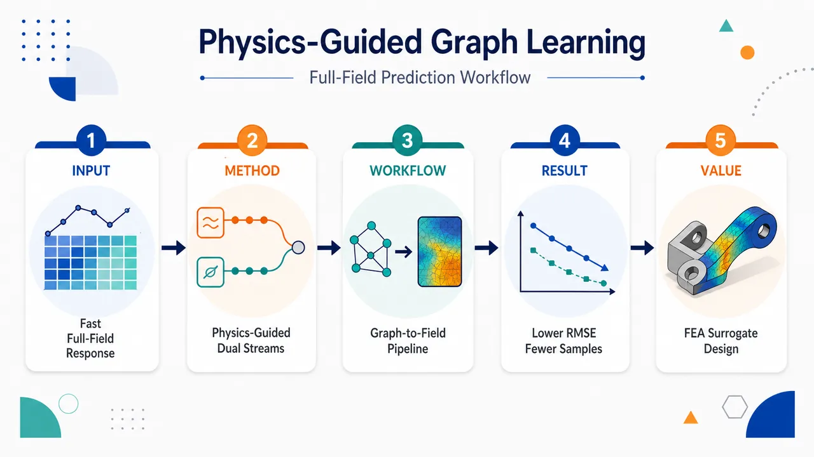
研究问题如何在几何拓扑、边界运动学、载荷条件和材料非线性都变化的加筋薄壁板结构中，替代高成本有限元分析，快速且准确预测每块板的全场 von Mises 应力与三维位移场。创新方法提出物理引导双流异构图神经网络 DS-HGNN：把加筋板表示为几何节点、边节点、载荷节点、边界节点组成的异构图；将物理边界和共享界面建成沿边采样的潜序列，显式编码边类型、空间位置和六自由度边界运动学；纵向与横向结构信息分别通过双流一维谱卷积传播，并用 crosstalk 交叉交换；几何与载荷通过 FiLM 对方向序列进行缩放和平移调制；最终用 spectral–bypass 低秩外积读出重构二维全场响应。工作流程输入加筋板几何、板件连接关系、外载荷、边界位移/转角采样值和边类型；构建包含 geo、edge、loading、boundary 四类节点的板级异构图；将每条物理边初始化为 S 个采样点的边界潜序列；按纵向关系和横向关系分别从边节点聚合到板件 geo 节点；用几何与载荷生成 FiLM 参数调制序列；经过多层双流谱卷积、跨流 crosstalk、geo-to-edge 写回和共享边状态更新；最后把纵向/横向潜序列解码成方向基矩阵，通过低秩外积生成每块板规范网格上的应力场或位移场。关键结果在不同几何、边界运动学、载荷条件和材料非线性数据集上，DS-HGNN 相比 6 个异构图神经网络基准取得最低应力 RMSE 和位移 RMSE；使用少 19%–38% 的训练样本即可达到最强基准相当精度；针对塑性响应的评估显示模型能捕捉屈服与屈服后应力特征，说明其不仅适合平滑弹性场，也能表达局部高梯度非线性应力重分布。应用价值可作为复杂薄壁结构设计优化中的快速结构响应代理模型，用于桥梁箱梁、飞机翼身、船体和海洋结构等由加筋板组成的工程系统；减少反复非线性 FEA 的计算成本，支持大规模候选方案筛选、参数优化、载荷与边界变化评估，并在拓扑可变和界面复杂的装配结构中保持较高预测精度与样本效率。第一部分：核心概览（Overview）
DS-HGNN 面向加筋板薄壁结构的全场应力与位移快速预测，把异构图消息传递、结构力学方向性先验、FiLM 条件调制与谱低秩重构结合起来。核心创新在于：边状态显式编码边界类型、空间位置、边界运动学；纵向与横向信息分双流传播并交叉交换；最终用spectral–bypass low-rank readout恢复板件全场响应。相较通用 HGNN，该架构更贴合加筋板中板边界、界面、载荷与方向耦合的物理角色。实验摘要显示，其相对 6 个 HGNN 基准取得最低应力与位移 RMSE，并以少 19%–38% 训练样本达到强基准相当精度，定位为面向复杂薄壁结构代理建模的物理引导图神经网络方法。
---
第二部分：结构化快速回顾
《Physics-Guided Dual-Stream Heterogeneous Graph Neural Network for Predicting Full-Field Structural Response of Stiffened Panels》（None，）
背景
大型薄壁结构，如桥梁箱梁、飞机翼身、船体与海洋结构，常由加筋板组成。高保真 FEA 能准确计算应力和位移场，但在优化设计中成本过高；设计空间包含几何、加筋布置、载荷与边界状态变化，现代优化可能需要 *“hundreds of thousands to millions of design evaluations”*。
方法
提出 Dual-Stream Heterogeneous Graph Neural Network（DS-HGNN）。加筋板被表示为包含 geo nodes、edge nodes、loading nodes、boundary nodes 的异构图。边节点初始化为沿边界采样的潜序列，融合边类型、位置编码和边界运动学。消息传递分为纵向流与横向流，通过 FiLM 融入几何和载荷条件，并通过 crosstalk 交换双向信息。
结果
摘要报告 DS-HGNN 在不同几何、边界运动学、载荷条件和材料非线性数据集上优于 6 个异构图神经网络基准，达到最低 stress 和 displacement RMSE；同时以 19%–38% 更少训练样本达到最强基准相当精度，并能捕捉屈服与屈服后应力特征。
讨论
优势来自结构力学先验进入架构内部，而非仅作为损失函数约束。双流机制保留板件纵向/横向响应差异，边状态共享机制在公共边界上传播界面信息，不依赖显式界面罚项。
局限
可见内容未给出完整实验表格、数据集规模、具体 RMSE 数值、训练超参数、消融结果和统计显著性。3.5.1 后内容被截断，实验章节无法逐项核验。
结论
DS-HGNN 是一种面向加筋板全场结构响应预测的物理引导异构图代理模型，目标是替代反复高成本 FEA，在复杂边界、载荷与材料非线性条件下实现快速、准确、拓扑可变的结构场预测。
---
第三部分：逐章节冷凝解析（Section-by-Section Condensing）
Abstract
Fast full-field prediction is the central target.
复杂结构迭代设计需要快速预测应力场、位移场及其他物理场，但 FEA 对该任务计算昂贵；摘要直接指出 *“Iterative design and optimization of large, complex structures require fast and accurate prediction of stress, displacement, and other fields”*，并进一步说明 *“Finite element analysis (FEA) is computationally expensive for this task.”*
Existing neural surrogates are insufficient under variable topology and boundary complexity.
传统神经网络代理模型在拓扑变化和复杂边界条件下表现受限；摘要给出问题定位：*"Existing neural network surrogates often struggle with varying topologies and complex boundary conditions."* 这为异构图结构与边界运动学显式编码提供动机。
DS-HGNN is proposed for thin-walled full-field stress and displacement prediction.
提出 Dual-Stream Heterogeneous Graph Neural Network（DS-HGNN），应用对象是薄壁结构中的加筋板箱梁；摘要明确称其为 *“the novel Dual-Stream Heterogeneous Graph Neural Network (DS-HGNN) for full-field stress and displacement prediction in thin-walled structures”*，示例为 *“box beams made of stiffened panels.”*
Panel-level heterogeneous graph representation is the modeling substrate.
DS-HGNN 在板级异构图上运行，而不是直接在规则网格、全 FE 网格或整结构上运行；摘要写明 *“DS-HGNN operates on panel-level heterogeneous graph representations”*。这种设计使板件、边界、载荷和边界运动学能作为不同节点或关系角色进入模型。
Physics-guided edge states encode relation roles and boundary kinematics.
边状态由边类型、空间信息、边界运动学初始化，而不是普通关系嵌入；摘要指出 *“introduces physics-guided edge states initialized from edge types, spatial information, and boundary kinematics.”* 这使边节点不仅是拓扑连接，还携带物理边界数据。
Dual-stream message passing separates structural directions while allowing exchange.
消息传递区分纵向 structural information 和 横向 structural information，但保留跨流交换；摘要给出核心机制：*"These states are updated through dual-stream message passing that separates longitudinal and transverse structural information while allowing cross-stream exchange."*
FiLM-conditioned 1-D spectral convolutions incorporate geometry and loading.
几何和载荷通过 Feature-wise Linear Modulation（FiLM） 调制一维谱卷积；摘要表述为 *“Geometry and loading effects are incorporated through Feature-wise Linear Modulation (FiLM)-conditioned 1-D spectral convolutions.”*
Spectral–bypass low-rank readout reconstructs physical fields.
物理场通过 spectral–bypass low-rank readout 重构；摘要写明 *“physical fields are reconstructed using a spectral–bypass low-rank readout.”* 该机制暗示平滑谱成分与局部 bypass 成分结合，以恢复全场响应。
Evaluation covers geometry, boundary, loading, and material nonlinear variation.
测试数据包括不同几何、边界运动学、载荷条件和材料非线性响应；摘要指出模型被评估于 *“stiffened panel datasets with different geometries, boundary kinematics, loading conditions, and material nonlinear responses.”*
Performance exceeds six HGNN baselines and improves sample efficiency.
摘要报告 DS-HGNN 相比 six benchmark heterogeneous graph neural network models 取得最低应力和位移 RMSE：*"DS-HGNN achieves the lowest stress and displacement RMSE compared with six benchmark heterogeneous graph neural network models."* 样本效率方面，使用 19%–38% 更少训练样本达到强基准相当精度：*"using 19%–38% fewer training samples."*
Plastic response prediction is explicitly tested.
针对屈服与后屈服应力特征进行专门评价；摘要写明 *“A targeted evaluation further shows that DS-HGNN captures yield and post-yield stress features.”* 这表明模型不只处理线弹性平滑响应，也覆盖材料非线性局部高梯度现象。
---
1 Introduction
Thin-walled structures are assembled from stiffened panels across major engineering domains.
加筋板是土木、航空、海洋工程中薄壁结构的基础组成；开篇列举 *“bridge girders, aircraft wings and fuselages, ship hulls, and offshore structures.”* 这些结构的应力场与位移场控制强度、疲劳与规范合规性：*"Their stress and displacement fields govern strength assessment, fatigue performance, and design compliance under diverse loading and boundary conditions."*
FEA remains accurate but computationally expensive for high-fidelity stiffened panel simulation.
加筋板包含多个板单元，几何、边界和载荷条件多变，因此 FEA 仍是标准工具：*"finite element analysis (FEA) remains the standard tool for computing their stress and displacement fields with sufficient accuracy."* 但高保真 FEA 需要解析构件交互、局部应力变化和材料非线性，通常依赖 *“fine spatial discretization and iterative nonlinear solvers.”*
Optimization workflows make repeated nonlinear FEA prohibitive.
结构优化涉及大量设计候选，包括几何、加筋布置、载荷与边界状态变化；现代优化算法可能需要 *“hundreds of thousands to millions of design evaluations to converge”*，且每次评估常需完整非线性 FEA：*"each evaluation often requires a full nonlinear FEA solve."* 因而 *“Repeated high fidelity FEA at this scale is therefore computationally prohibitive.”*
Traditional MLP and CNN surrogates lack suitable inductive bias for stiffened panels.
MLP/CNN 已用于结构响应预测，但加筋板涉及变化拓扑、异质构件、局部高梯度应力和位移响应，传统模型不足；原文指出这些结构 *“involve varying topologies, heterogeneous components, and localized high gradient stress and displacement responses.”*
GNNs improve structural surrogate modeling by representing relational dependence.
加筋板比较研究显示 GNNs 优于 MLP 和 CNN，因为消息传递能建模结构实体之间的关系依赖并适应可变拓扑；原文给出依据：*"Comparative studies on stiffened panels showed that graph neural networks (GNNs) outperform MLPs and CNNs."* 其原因是 *“message passing provides useful inductive biases for modeling relational dependence among structural entities.”*
HGNNs distinguish different structural entities and connection types.
异构图神经网络，包括 RGCN、HGT、HAN，通过关系感知聚合或注意力区分不同节点与连接；原文说明 *“heterogeneous graph neural networks (HGNNs), including relation aware and attention-based variants such as RGCN, HGT, and HAN, extend this capability by distinguishing different kinds of structural entities and their connections.”*
Prior graph surrogate work evolved from homogeneous graphs to heterogeneous panel-level surrogates.
前序研究路线包括：
- [24]：在理想边界条件下，用同构图进行高效应力预测，*"a homogeneous graph representation was proposed for efficient stress prediction under idealized boundary conditions."*
- [25]：扩展到异构图，适应非均匀边界运动学和压力分布，*"accommodates non-uniform boundary kinematics and pressure distributions."*
- [26]：嵌入船体分析的global–local framework，并在板级训练而非整结构训练，*"trained at the panel-level rather than on the entire structural system."*
Generic HGNNs remain mechanically under-specified for thin-walled structures.
通用 HGNN 能区分类型，但更新规则通常是通用消息传递，而不是结构响应模型；原文明确问题：*"their update rules are usually designed as generic message-passing operators rather than as structural response models."* 加筋板中不同关系有明确机械角色：*"Plate-edge interfaces transmit boundary information, while loading and boundary kinematics provide conditioning inputs."*
Longitudinal and transverse plate directions require separate treatment.
板件纵向与横向的应力/位移量级和空间分布可能不同；原文指出 *“The longitudinal and transverse plate directions could have different magnitude and profile of stress and displacement.”* 若几何、载荷、边界运动学和方向关系在传播前合并为单一隐表示，这些角色只能隐式学习：*"these roles are learned only implicitly."*
PINN-style residual losses are unsuitable for this heterogeneous panel surrogate problem.
PINN 通过 PDE 残差和边界罚项引入物理知识，但加筋板样本不是固定域上的单一 PDE 问题；原文指出 *“The extracted stiffened panels do not correspond to a single fixed PDE problem over a fixed computational domain.”* 响应还受复杂几何、离散空间变载荷、非线性本构和边界运动学支配：*"complex geometry, discrete and spatially varying loading, nonlinear constitutive models, and panel boundary kinematics."*
Problem-specific residual losses would introduce ill-conditioning and hyperparameter burden.
若通过 PDE、边界和界面残差强制所有物理效应，需要问题特定损失与权重策略；原文指出 *“would require problem-specific loss terms and weighting strategies”*，且 PINN 训练在竞争残差项下可能病态：*"PINN training can become ill-conditioned when competing residual terms are imposed."* 类似领域分解方法的界面罚项也会带来 *“additional hyperparameters”*。
Spectral neural operators inspire field reconstruction but cannot alone handle plate-interface interactions.
FNO 擅长参数 PDE 和物理场预测；LPFNO 通过一维 Fourier 分支和 outer-product lifting 做边界到域映射。可是在薄壁加筋板中，跨共享板界面的相互作用必须显式表示；原文指出 *“interactions across shared plate interfaces must be represented explicitly.”* 因此谱算子更适合作为图模型内部组件，而不是主建模框架：*"using spectral operator ideas as local architectural components within a graph-based model."*
DS-HGNN bridges mechanics-guided graph propagation and spectral field reconstruction.
提出 DS-HGNN，目标是预测薄壁结构，如桥梁箱梁与船体梁，加筋板的应力和位移场；原文称其为 *“a physics-guided neural network architecture for stress and displacement field prediction in thin-walled structures.”* 结构可分解为大量相互作用的板状组件：*"decomposed into a large number of interacting plate-like components."*
Five explicit contributions define the novelty.
贡献包括：
- 物理引导边状态初始化：*"encodes structural edge types, spatial information, and boundary kinematic values into edge states."*
- 双流异构图消息传递：*"separately processes field information along the two plate directions while allowing information exchange between the two directions."*
- 几何与载荷条件调制：*"geometry and loading information can modulate the field prediction for each panel."*
- spectral–bypass readout：*"combines learnable directional spectral bases with a bypass branch and outer product field reconstruction."*
- 全面验证设计：包括基准比较、消融、变体、超参数、代表性板件展示和塑性响应目标评估，原文列为 *“benchmark model comparison, ablation and variant studies, a hyperparameter study, representative panel demonstrations, and targeted evaluation of panels with plastic material response.”*
---
2 Preliminaries
2.1 Heterogeneous Graph Networks
A heterogeneous graph encodes nodes, edges, node types, and relation types.
异构图定义为 (G=(V,E,T,R))，其中 (V) 是节点集，(E) 是边集，(T) 是节点类型集，(R) 是关系类型集；原文定义 *“where (V) is the node set, (E) is the edge set, (T) is the node-type set, and (R) is the relation-type set.”*
Type mappings attach semantic or physical roles to graph elements.
每个节点有类型映射 (τ(v)inT)，每条有向边 ((u,v)inE) 有关系类型 (r=h̊o(u,v)inR)。该形式不仅编码连接，还编码节点/边的语义或物理角色；原文强调 *“encodes both connectivity and distinct semantic or physical roles through node types and relation types.”*
Relation-specific adjacency matrices formalize directed message passing.
对每种关系 (r)，定义 (A⁽r⁾in0,1|V|×|V|)，当 ((u,v)inE) 且 (h̊o(u,v)=r) 时 ([A⁽r⁾]ᵤᵥ=1)。行索引是源节点，列索引是目标节点；原文强调 *“the row index (u) denotes the source node and the column index (v) denotes the target node under directed message passing.”*
Relation-aware neighborhoods specify which source nodes send messages.
节点 (v) 在关系 (r) 下的邻域为 (Nᵣ(v)=uinVmid[A⁽r⁾]ᵤᵥ=1)。这使不同类型连接的消息来源被区分，而不是简单混合所有邻居。
Generic HGNN update includes relation-specific messages, aggregators, relation fusion, and node-type updates.
层 (ell) 的更新包含隐藏状态 (hᵥ⁽ell⁾)、关系特定消息函数 (ψᵣ⁽ell⁾)、聚合器 (AGGᵣ)、关系融合 (bigoplus) 与节点类型特定更新 (φτ₍ᵥ₎⁽ell⁾)。原文指出该通式覆盖 *“representative HGNN variants, including relation-aware and attention-based models.”*
HGNNs are structurally appropriate for mechanics with multiple entities and interfaces.
在结构力学中，异构图可以把多种物理实体和构件界面放在同一图内；原文写明 *“provide an effective representation of multiple physical entities and interfaces between components in a single graph.”* 关系感知传播有利于非均匀边界和载荷条件下的构件相互作用表示：*"represent interactions among components under non-uniform boundary conditions and loading conditions."*
Stiffened panels require explicit representation of plates, webs, flanges, and interactions.
加筋板中板、加筋肋腹板、翼缘及其相互作用会强烈影响应力和位移场；原文指出 *“the distinct physical roles of plates, stiffener webs, and flanges, together with their interactions, strongly influence stress and displacement fields.”*
---
2.2 Heterogeneous Graph Representation for Stiffened Panels
The stiffened panel graph uses four node partitions.
加筋板异构图节点分为 (Vgₑₒ)、(Vₑdgₑ)、(Vₗₒₐdᵢₙg)、(Vbc)，即几何节点、边节点、载荷节点和边界节点；原文给出分解：*"Each stiffened panel is decomposed into multiple plates and discretized as a heterogeneous graph with node partition: (V=Vgₑₒu̧pVₑdgₑu̧pVₗₒₐdᵢₙgu̧pVbc)."*
Each node type has a distinct physical meaning.
geo nodes 表示分解后的板状子域，edge nodes 表示每块板的物理边，loading nodes 编码外载，boundary nodes 编码边界运动学；原文说明 *“geo nodes represent decomposed plate-like subdomains, edge nodes represent physical edges of each plate, loading nodes encode external loads, and boundary nodes encode boundary kinematics applied at each edge.”*
Boundary kinematics are sampled along edges and include six degrees of freedom.
边界节点特征 (x_bbouⁿdaryinRS×⁶)，其中 (S) 是边界采样点数，6 对应六个边界自由度；原文写明 *“(S) is the number of sampling points along a plate boundary and 6 corresponds to the six boundary degrees of freedom.”* 边界运动学语境下指 *“the displacement and rotational degrees of freedom specified at the sampled points along an extracted panel edge.”*
Local plate coordinates define longitudinal and transverse directions.
每个板件的较长面内方向定义为局部纵向 (x)，垂直面内方向定义为横向；原文说明 *“the longer in-plane direction is defined as the local longitudinal ((x)) direction, and the in-plane direction perpendicular to it is defined as the local transverse direction.”*
Transverse directions may differ geometrically but are grouped as one relation family.
不同板件的横向方向，如板条的 (y₁) 和加筋肋腹板的 (y₂)，空间取向可能不同，但关系上归入同一横向集合；原文指出 *“These local transverse directions are grouped into the same transverse relation set.”*
Geo–edge relation types are grouped into longitudinal and transverse sets.
(Rₓ) 连接 geo 节点与沿板件长方向相关边界的 edge 节点；(R_y) 连接 geo 节点与垂直面内方向边界相关 edge 节点。原文分别定义为 *“Relations in the longitudinal set (Rₓ) connect geo nodes to edge nodes associated with boundaries along the longer in-plane direction”* 和 *“Relations in the transverse set (R_y) connect geo nodes to edge nodes associated with boundaries along the perpendicular in-plane direction.”*
Loading and boundary nodes inject conditioning information through one-way relations.
载荷节点连接 geo 节点，边界节点连接 edge 节点，且为定向单向关系；原文写明 *“loading nodes connect to geo nodes and boundary nodes connect to edge nodes through directed, one-way relations.”* 这些关系提供 *“conditioning information that injects loading and boundary kinematic data into the graph.”*
Each geo node predicts a canonical-grid physical field.
每个 geo 节点 (i) 输出 (hatYᵢᵢₙRⁿₓ× ⁿ_y× C)，其中 (nₓ,n_y) 是纵向与横向网格分辨率。应力预测时 (C=1)，对应 von Mises stress；位移预测时 (C=3)，对应三个位移分量；原文明确：*"In this study, (C=1) for von Mises stress prediction. For displacement prediction, (C=3), corresponding to the three translational displacement components."*
Canonical grids decouple prediction from FE meshes.
规范网格让预测域不依赖原始有限元网格，并为谱读出提供结构化网格；原文说明 *“This canonical-grid representation decouples the prediction domain from the FE mesh and provides a structured grid for the spectral readout.”*
---
2.3 Spectral Convolutions for Field Reconstruction
FNO learns function-space mappings in the spectral domain.
Fourier Neural Operator（FNO） 通过频域参数化算子学习函数空间映射；原文定义 *“FNO learns mappings between function spaces by parameterizing operators in the spectral domain.”* 输入函数先经逐点 lifting operator (boldsymbolQ:Rm→Rⁿₑ) 投影到隐藏嵌入。
FNO layers combine Fourier-domain linear operators with pointwise linear maps.
每层 FNO 包括 Fourier 变换、可学习频域算子 (boldsymbolR)、逆 Fourier 变换、逐点线性映射 (boldsymbolWᵢ) 和非线性激活；原文给出 (boldsymbolFθ_ᵢ(boldsymbolh)=σ(F⁻¹(boldsymbolRḑotF(boldsymbolh))+boldsymbolWᵢboldsymbolh))。这种形式适合 *“long-range spatial coupling and multi-scale field patterns.”*
LPFNO adapts FNO to boundary-to-domain learning.
Lifting Product Fourier Neural Operator（LPFNO） 处理边界函数 (boldsymbolg:Γ→Rm)，目标是映射到高维域 (Ømega) 上的解；原文指出 *“LPFNO adapts FNO to boundary-to-domain learning.”* 它用两个 FNO blocks 产生两个一维隐藏表示 (boldsymbolv₁,boldsymbolv₂ᵢₙRN× ⁿₑ)。
Outer-product lifting avoids direct dense mapping to the full domain.
LPFNO 对每个嵌入通道做外积：(boldsymbolw[:,:,j]=boldsymbolv₁[:,j]boldsymbolv₂[:,j]^→p)，生成 (boldsymbolwinRN× N× ⁿₑ)。原文指出 *“the reconstruction avoids a direct dense mapping from boundary embeddings to all domain grid points.”*
LPFNO motivates but does not define DS-HGNN.
FNO 和 LPFNO 在当前架构中只是参考，而不是主公式；原文明确 *“FNO and LPFNO are used as architectural references rather than as the formulation of the proposed model.”* 一维谱卷积启发 DS-HGNN 的方向潜序列更新，LPFNO 的 lifting-product 启发低秩外积读出：*"one-dimensional spectral convolutions motivate the directional latent-sequence updates in DS-HGNN, and the LPFNO lifting-product structure motivates the low-rank outer-product readout."*
Graph message passing remains the core for interface interactions.
谱处理只是局部架构组件，主计算仍是在共享物理界面上进行异构图消息传递；原文指出 *“the main computation remains message passing over shared physical interfaces.”* 这种组合使 *“spectral processing supports directional basis reconstruction on each plate”*，同时图消息传递表示不规则板基拓扑中的相邻板交互。
---
3 Proposed DS-HGNN Architecture
The prediction target is a plate-wise physical field tensor.
每个分解板件对应一个 geo 节点 (i)，预测 (hatYᵢᵢₙRⁿₓ× ⁿ_y× C)。场变量可以是 von Mises 应力 (C=1)，也可以是三平移分量位移 (C=3)；原文说明 *“it corresponds to either the von Mises stress field ((C=1)) or the displacement field ((C=3), three translational displacement components).”*
DS-HGNN has four main architectural components.
架构由四部分构成：physics-guided edge state initialization、dual-stream message passing with cross-stream crosstalk、geometry- and loading-guided FiLM conditioning、spectral–bypass low-rank readout；原文完整列出 *“DS-HGNN consists of four main architectural components.”*
The computation is organized into three operational stages.
第一阶段初始化边状态；第二阶段进行 (T) 层迭代双流消息传递；第三阶段读出全场。原文概括：*"These components are organized into three operational stages."* 其中隐藏维度为 (d)，边界序列长度为 (S)，低秩读出大小为 (K)，消息传递层数为 (T)。
Edge state initialization turns boundary edges into latent sequences.
每个 edge node 不是单个向量，而是沿预定义边界采样点的潜序列；原文写明 *“each edge node is initialized as a latent sequence over predefined boundary sampling points.”* 其输入包括边类型、位置和边界运动学值。
Iterative message passing reads edge states into directional geo streams and writes back to edges.
每层执行关系感知 read/write，边状态聚合为纵向与横向流，经过 FiLM 条件调制的一维谱卷积，并通过 crosstalk 交换信息；原文描述 *“Each layer performs relation aware read and write updates between geo and edge nodes, aggregates edge states into longitudinal and transverse streams, applies FiLM-conditioned 1-D spectral convolution, and uses cross-stream crosstalk.”*
Readout decodes refined directional sequences into fields through low-rank outer products.
最终 (Sₓ,ᵢ⁽T⁾) 与 (Sy,ᵢ⁽T⁾) 被解码为方向基函数并组合重构 (hatYᵢ)；原文说明 *“decoded through spectral and bypass branches into spatial basis matrices, which are then combined by a low-rank outer product decoder to reconstruct the output field.”*
---
3.1 Physics-Guided Edge State Initialization
Edge nodes represent physical edges and shared interfaces.
初始化对象是 edge nodes，它们代表板的物理边和共享界面；原文指出 *“edge nodes, which represent physical plate edges and shared interfaces.”* 这使界面不只是拓扑边，而是承载边界场信息的节点。
Each edge node is a sequence over (S) boundary sampling points.
每个 edge node 表示为 (S) 个边界采样点组成的序列，从而处理空间变化边界运动学；原文写明 *“Each edge node is represented as a sequence of (S) discrete sampling points along the boundary.”*
Initial edge state combines edge type, position, and boundary kinematics.
边初始状态 (Eₑ⁽⁰⁾inRS× d) 由三项相加：(Eₑ⁽⁰⁾=Bₑ₊P+Dₑ)。原文明确：*"The latent sequence combines edge type information, positional information along the boundary, and prescribed boundary kinematic values."*
Edge type term is constant along the sequence.
边类型项 (Bₑ₌₁φₑdgₑ(xₑedge)^→p)，即同一个边特征嵌入复制到全部 (S) 个位置。边类型区分自由边、给定位移/转角边界边、相邻板界面；原文写明 *“Edge type information specifies whether the edge is a free boundary, a boundary edge with prescribed kinematics, or an interface between adjacent plates.”*
Sinusoidal positional encoding gives each boundary sample a spatial identity.
位置编码 (P[s,2k]=sin(s/10000²k/d))，(P[s,2k+1]=o̧s(s/10000²k/d))，假定隐藏维度 (d) 为偶数。其作用是让网络识别边界上的采样位置和相对顺序；原文解释 *“allows the network to distinguish individual sampling points along the edge and exploit their relative spatial order.”*
Boundary kinematic term injects sampled six-DOF values into edge states.
边界运动学项 (Dₑ[s]=sum_binNbc(e)φbc(x_bbc[s]))，由连接的 boundary nodes 在每个采样点投影后求和；原文称其为 *“aggregates prescribed boundary values from connected boundary nodes.”* 无边界输入的 edge nodes 设为零：*"For edge nodes that do not receive any boundary kinematic input, this term is set to (Dₑ₌₀)."*
---
3.2 Physics Conditioning and FiLM Modulation
Geometry and loading features are embedded once per geo node.
对每个 geo 节点，几何与载荷分别嵌入为 (hᵢgeo=φgₑₒ(xᵢgeo))、(hᵢload=φₗₒₐd(xᵢload))，均映射到 (R^d)。原文说明这些条件特征 *“are computed once and reused across all (T) iterative dual-stream message passing layers.”*
Edge states are aggregated separately into longitudinal and transverse directional messages.
由于纵向与横向边状态代表不同方向场信息，关系类型被分为 (Rₓ) 与 (R_y)，分别聚合为 (Mᵢ,ₓ⁽t⁻¹⁾) 和 (Mᵢ,y⁽t⁻¹⁾)。原文指出 *“we group the relation types into a longitudinal set (Rₓ) and a transverse set (R_y) and aggregate them separately.”*
Directional aggregation preserves mechanical distinction before spectral processing.
聚合公式对每个方向集合内的关系求和并除以关系数 (|Rₓ|) 或 (|R_y|)。其设计目标是保留方向差异；原文说明 *“This aggregation preserves the distinction between the two directional groups while keeping the relation specification general.”*
FiLM modulates edge-derived sequences using geometry and loading instead of concatenation.
几何与载荷影响应力和位移的大小与空间分布，因此作为条件因子调制聚合后的边序列，而非简单拼接；原文明确 *“We therefore use them as conditioning factors to modulate the aggregated edge state sequences, rather than concatenating them with the edge features.”*
FiLM generates scale and shift vectors for pointwise affine modulation.
([γᵢ,βᵢ]=φcₒₙd([hᵢgeo,hᵢload]))，其中 (γᵢ,βᵢᵢₙR^d)。调制为 (widetildeMᵢ,α⁽t⁻¹⁾[s]=Mᵢ,α⁽t⁻¹⁾[s]ødot(1+γᵢ₎₊βᵢ)，(αinx,y)。原文称这是 *“pointwise affine transformation”*，用于在进入双流谱卷积前适配每块板的几何和载荷。
---
3.3 Dual-Stream Message Passing and Crosstalk
Longitudinal and transverse field variations are modeled as separate streams.
板件上的应力和位移沿纵向与横向可能不同，因此在谱更新前保留两个方向序列；原文指出 *“Stress and displacement fields on a plate component can vary differently along the longitudinal and transverse directions.”*
The longitudinal stream follows the longer in-plane direction.
对每个板件，包括基板板条、加筋肋腹板和翼缘，纵向流处理较长面内方向的信息；原文说明 *“the longitudinal stream processes information along the longer in-plane direction.”*
The transverse stream follows the perpendicular in-plane direction.
横向流处理垂直面内方向信息；原文写明 *“The transverse stream processes information along the perpendicular in-plane direction.”* 这种分离有助于在跨流融合前保留方向依赖场变化：*"helps preserve direction dependent field variations."*
Two separate 1-D spectral convolution blocks process the directional streams.
调制后的 (widetildeMᵢ,ₓ) 与 (widetildeMᵢ,y) 分别进入 (fₓ₍ḑot)) 和 (f_y(ḑot))，输出 (barXᵢ⁽t⁾)、(barYᵢ⁽t⁾)。两个块架构相同但参数分离；原文说明 *“with the same architecture but separate parameters, allowing each stream to learn spectral representations for one plate direction.”*
Cross-stream crosstalk exchanges information without fully merging sequences.
应力和位移场本质二维，两个方向仍耦合；原文指出 *“stress and displacement fields on a plate are two-dimensional and remain coupled across the two directions.”* 因此引入 crosstalk，在不完全合并方向序列的情况下交换信息：*"without fully merging the directional sequences."*
Mean pooling summarizes each stream before cross injection.
每个流沿序列维平均池化：(pₓ,ᵢ⁽t⁾=frac1Ssumₛ₌₁^SbarXᵢ⁽t⁾[s])，(py,ᵢ⁽t⁾=frac1Ssumₛ₌₁^SbarYᵢ⁽t⁾[s])。原文称 *“Each stream is first summarized by average pooling over the sequence dimension.”*
Opposite-stream summaries are linearly transformed and added as residuals.
横向摘要经 (Wyₓ, byₓ) 加到纵向流，纵向摘要经 (Wₓy, bₓy) 加到横向流；原文描述 *“The pooled summary from each stream is then linearly transformed and added as a residual to the opposite stream.”* 该机制使每个位置都接收另一方向的全局摘要，同时保持序列长度和顺序：*"while keeping the sequence length and ordering unchanged."*
---
3.4 Edge State Aggregation and Update
Refined geo streams are projected back to connected edge nodes relation-wise.
双流更新后，每个 geo 节点的方向潜序列通过关系特定投影 (Pᵣ) 写回边节点：(Qᵢ,ᵣ⁽t⁾=Pᵣ₍Sκ₍ᵣ₎,ᵢ⁽t⁾))，其中 (κ(r)inx,y) 把关系映射到对应方向流。原文称 *“projected back to connected edge nodes through relation aware projections.”*
Edge nodes aggregate incoming messages from geo nodes across relation types.
每个 edge node 聚合来自连接 geo 节点的消息：(Aₑ⁽t⁾=sumᵣᵢₙRsumᵢᵢₙN⁻¹ᵣ₍ₑ₎Qᵢ,ᵣ⁽t⁾)。这使边节点成为相邻板件之间的信息汇聚点。
Residual edge update stabilizes iterative message passing.
边状态通过缩放残差和层归一化更新：(Eₑ⁽t⁾=LN(Eₑ⁽t⁻¹⁾+η Aₑ⁽t⁾))，其中 (η) 是 residual step scale。原文写明 *“The edge state is updated with a scaled residual connection followed by layer normalization.”*
Shared edge states enable interface communication without explicit interface loss.
当多个板件共享同一 edge node，其消息合并到同一个边状态中；原文强调 *“When multiple plate components share the same edge node, their messages are combined in the same edge state.”* 这种共享允许跨界面传递信息，而不需显式界面一致性罚项：*"This allows information to pass across shared interfaces without an explicit interface consistency loss."*
Algorithm 1 formalizes the three-step iterative loop.
算法流程包括初始化 (Eₑ⁽⁰⁾)，为 geo nodes 计算 FiLM 参数，随后对 (t=1) 到 (T) 重复边到 geo 聚合、FiLM、双流谱卷积、crosstalk、geo 到 edge 写回和 edge update。原文算法标题为 *“DS-HGNN Iterative Dual-Stream Message Passing.”*
---
3.5 Spectral–Bypass Readout and Field Reconstruction
Final directional latent sequences are decoded into spatial basis matrices.
经过 (T) 层消息传递后，每个 geo 节点具有 (Sₓ,ᵢ⁽T⁾,Sy,ᵢ⁽T⁾inRS× d)，被解码为 (Vₓ,ᵢinRⁿₓ× K) 与 (Vy,ᵢinRⁿ_y× K)。原文说明 *“These sequences are then decoded into spatial basis matrices.”*
The readout must capture both smooth bending trends and local high-gradient features.
结构场既有整体板弯曲产生的平滑趋势，也有板交界或加筋边附近的局部高梯度变化；原文写明 *“Field prediction requires representing smooth trends from overall plate bending and local high-gradient variations near plate intersections or stiffener edges.”*
Linear upsampling and truncated Fourier-only reconstruction have complementary weaknesses.
单一线性上采样可能模糊局部变化，纯截断 Fourier 模式可能平滑高梯度；原文指出 *“A single linear upsampling can blur local variations, while reconstruction based only on truncated Fourier modes may smooth local high-gradient variations.”*
Spectral and bypass branches are combined to preserve global and local structures.
为兼顾平滑趋势与局部高梯度变化，每个方向序列通过两个并行分支解码：spectral branch 与 bypass branch。原文明确 *“we decode each sequence through two parallel branches, a spectral branch and a bypass branch.”*
---
3.5.1 Spectral Branch
The available text is truncated at the start of this subsection.
可见内容仅出现标题 “3.5.1 Spectral Branch” 及不完整句子 *“The following”*，后续公式、分支结构、参数设置和输出维度未提供。无法核验 spectral branch 的具体实现细节、傅里叶模式数、激活函数、层数、是否共享参数、与 bypass branch 的融合方式以及最终低秩外积公式。
---
第四部分：深度理解与语言支持（Understanding & Nuance）
1. 术语解析
Physics-guided edge state initialization
直译为“物理引导边状态初始化”。这里的 physics-guided 不是 PINN 式 PDE 残差约束，而是把结构力学相关信息直接写入架构：边类型、空间位置、边界运动学。语境中关键句为 *“edge states initialized from edge types, spatial information, and boundary kinematics.”* 微妙之处在于，“physics-guided”强调结构先验进入表示与传播机制，而非“严格满足物理方程”。
Boundary kinematics
指边界上的位移与转角自由度，而不仅是“边界条件”。原文定义为 *“the displacement and rotational degrees of freedom specified at the sampled points along an extracted panel edge.”* “Kinematics” 在结构力学中偏向运动/变形描述，不直接指力或应力；因此它与 loading 条件不同。
Dual-stream message passing
指消息传递分为纵向与横向两条信息流。这里的 stream 是方向性潜序列通道，不是数据流或输入模态。关键句为 *“separates longitudinal and transverse structural information while allowing cross-stream exchange.”* 微妙处在于：不是完全独立建模两个方向，而是先分离、再通过 crosstalk 交换。
Cross-stream crosstalk
“Crosstalk” 在神经网络和信号处理中指不同通道之间的受控信息泄露或交换。语境中是把一个方向流的平均池化摘要线性变换后加到另一方向流：*"added as a residual to the opposite stream."* 它比 concatenation 更轻量，也比完全融合更能保留方向结构。
Spectral–bypass low-rank readout
由三层含义组成：spectral 捕捉平滑/全局频域结构；bypass 保留局部高梯度或非谱平滑成分；low-rank readout 通过方向基矩阵外积重构二维场，避免全连接密集映射。摘要中的 *“physical fields are reconstructed using a spectral–bypass low-rank readout”* 是核心表述。
---
2. 疑难查证
为什么不用 PINN，而用物理引导架构？
PINN 通常适合固定 PDE、固定域或可明确写出残差的场问题。加筋板代理建模面对的是：几何变化、边界运动学变化、空间变化载荷、材料非线性、板间界面耦合。若强行写 PDE 残差，需要对每种边界、每种材料状态、每种界面关系设置损失项和权重；这些权重之间会竞争，训练可能病态。DS-HGNN 的策略是把物理结构变成网络拓扑和传播规则：边界是 edge/boundary 节点，载荷是 loading 节点，纵横方向是双流，界面共享 edge state。这样避免了显式残差权重调参。
为什么纵向和横向不能简单拼接？
薄板或加筋板中，纵向通常对应较长方向，弯曲、膜力、屈曲半波和应力传播模式可能与横向不同。若把所有方向信息拼成单个 latent vector，模型必须自己从数据中恢复方向角色，样本效率较差。双流设计相当于告诉模型：“这部分信息沿长方向传播，那部分沿横方向传播。” 随后的 crosstalk 又避免两个方向完全割裂，因为真实二维板响应仍由两个方向耦合决定。
为什么 edge node 是序列而不是单向量？
边界运动学可能沿边长变化，例如边界位移或转角在不同采样点不同。如果用单向量表示边，就会压缩掉沿边界的空间分布。用 (S× d) 序列表示 edge state，可以保留沿边界位置的局部信息，再通过一维谱卷积学习长程边界模式。
为什么低秩外积适合板场重构？
二维场 (hatY(x,y)) 可近似由若干个方向函数乘积求和表示，即 (sumₖ₌₁K aₖ₍ₓ₎bₖ₍y))。这类表达本质上是低秩分解。对板件而言，许多弯曲、膜力和局部响应模式具有可分离或近似可分离结构，用 (VₓᵢₙRⁿₓ× K)、(V_yinRⁿ_y× K) 外积重构，比直接输出 (nₓₙ_yC) 个点更参数高效，也更自然地衔接双流方向表示。
---
第五部分：创新评估与关联（Synthesis & Novelty）
1. 创新性判断
从通用 HGNN 到结构力学定制 HGNN。
近 2–5 年图神经网络在计算力学代理建模中已有大量应用，HGNN 也能处理多类型节点和关系。但多数模型仍采用通用聚合、注意力或关系变换，缺少面向板壳结构的力学分解。DS-HGNN 的新颖性在于把板边界、界面、载荷、边界运动学、纵横方向差异直接编码到消息传递流程中，而不仅是增加输入特征。
边状态从“关系标签”升级为“边界场载体”。
通用 GNN/HGNN 常把边作为连接或关系类型处理；DS-HGNN 把 edge node 表示为沿边界采样的 (S× d) latent sequence，并注入边界运动学。这解决了前人难以表达非均匀边界运动学沿边变化的问题。
双流消息传递解决方向各向异性与板件局部坐标差异。
薄壁加筋板天然存在局部纵向/横向方向。过去的 HGNN 若把方向、几何、载荷全部混入单一 latent space，方向角色只能隐式学习。DS-HGNN 的纵横双流和 crosstalk 在架构层面显式处理二维板响应的方向分解与耦合。
FiLM 条件调制比简单拼接更适合参数化结构场预测。
几何和载荷不是普通邻居信息，而是调节响应模式的条件变量。FiLM 通过 feature-wise scale/shift 改变边状态序列，能够在每块板级别调制应力/位移模式，比直接拼接更接近“参数化算子”的思想。
谱算子思想被局部嵌入图消息传递，而不是替代图结构。
FNO/LPFNO 擅长规则域场预测，但对加筋板共享界面和异构拓扑不天然适配。DS-HGNN 把一维谱卷积和低秩外积读出作为图模型内部模块，既保留频域建模优势，又通过图结构处理不规则板间连接。
避免显式 PDE/interface loss 的工程实用性。
相较 PINN 或神经领域分解方法，DS-HGNN 不依赖手写 PDE 残差、边界罚项和界面匹配损失，降低复杂装配结构中损失设计和权重调参负担。共享 edge state 自然承担界面信息交换功能。
样本效率提升具有实际设计优化价值。
摘要给出的 19%–38% 更少训练样本 表明架构先验可能减少数据需求。在 FEA 数据昂贵的结构优化场景中，样本效率本身就是核心贡献之一。
塑性响应评估扩展了代理模型适用边界。
目标评估显示能捕捉 yield 和 post-yield stress features。许多结构代理模型主要展示线弹性或平滑响应；材料非线性和屈服后局部应力重分布更难预测，因此该验证方向提升了工程相关性。
-
20
📊 含图深析
📖 展开分析 + 配图
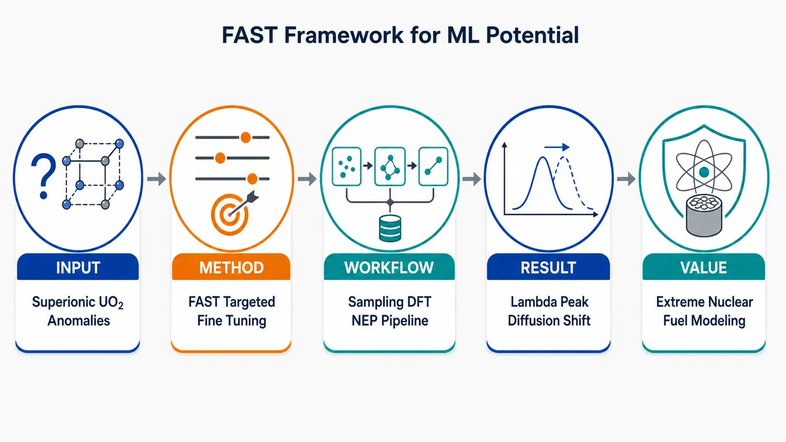
研究问题UO₂ 作为主流核燃料，在严重事故等极端高温条件下会发生超离子转变，氧离子子晶格强烈无序化，导致热膨胀、缺陷、力学响应和离子扩散出现异常；核心问题是如何用少量高质量第一性原理数据构建可靠机器学习势，既能预测这些极端条件性质，又能解释 LTEC λ 峰和非 Arrhenius 氧离子扩散的微观来源。创新方法提出 FAST 框架，即“主动学习微调 + 超离子转变靶向采样”：不盲目堆叠大规模 AIMD 数据，而是把最难、最关键的超离子转变区域作为采样靶点，再用主动学习挑选最有信息量的构型，仅用 500 个 DFT 标注构型微调基础模型，训练出面向 UO₂ 的 DFT 级神经演化势 NEP；DFT 标注中特别考虑铀 5f 电子强关联和反铁磁基态。工作流程输入为 UO₂ 晶体在低温固态、高温强非谐、缺陷、应变和超离子转变附近的候选原子构型；FAST 先进行超离子转变靶向采样，重点捕捉氧子晶格无序化和扩散构型，再通过主动学习筛选模型不确定性高的代表性结构；随后对约 500 个构型进行高精度 DFT 标注，包含能量、力和应力；最后微调基础模型得到 NEP，并用分子动力学输出力学性质、缺陷性质、热膨胀系数和氧离子扩散行为。关键结果仅用 500 个构型训练得到稳健的 DFT 级 UO₂ NEP，可在宽温区同时预测力学、缺陷、热物性和离子扩散性质；模型成功复现线性热膨胀系数中的 λ 形尖峰，以及氧阴离子扩散偏离 Arrhenius 直线的异常行为；机理分析表明，两类异常共同来自氧亚晶格预熔化，以及铀离子骨架与氧离子快速迁移之间的动力学解耦。应用价值该研究为核燃料 UO₂ 在极端事故条件下的多尺度模拟提供了高精度、低数据成本工具，可用于评估高温热膨胀、氧离子输运、缺陷演化和结构稳定性；FAST 思路也可推广到其他强关联、相变复杂、实验困难的核材料和功能氧化物，将机器学习势从单纯性质拟合推进到异常现象的机理解析。第一部分：核心概览（Overview）
该研究提出 FAST（Fine-tuning via Active-learning and Superionic-Targeting）框架，用仅 500 个构型微调基础模型，构建面向 UO₂ 极端条件的 DFT 级神经演化势 NEP。核心贡献在于以数据高效方式同时捕捉 力学、缺陷、热物性、离子扩散，并解释超离子转变导致的 LTEC λ 峰与 非 Arrhenius 氧离子扩散，将机器学习势从性质拟合推进到异常机理解析。
---
第二部分：结构化快速回顾
《The FAST Framework: Developing a Data-Efficient Machine Learning Potential to Decode Superionic Transition-Induced Thermophysical and Kinetic Anomalies in UO2 under Extreme Conditions》（None，）
背景
UO₂ 是全球主流核燃料，但在严重事故等极端条件下，其 力学行为、热物性行为、物种输运行为难以通过常规实验或传统计算全面评估。摘要明确指出：*"Uranium dioxide (UO₂₎ serves as the predominant nuclear fuel globally."* 同时，极端条件评估仍是难题：*"evaluating its mechanical, thermophysical, and species transport behaviors under extreme accident scenarios remains a formidable challenge for conventional experimental and computational methods."*
方法
提出 FAST 框架，全称为 Fine-tuning via Active-learning and Superionic-Targeting。该策略将 超离子转变靶向采样与 主动学习增强探索结合，用于构建紧凑训练集，并微调基础模型。关键数据规模为 500 个构型：*"efficiently construct a highly compact dataset comprising only 500 configurations for fine-tuning a foundation model."*
结果
训练得到面向 UO₂ 的 DFT-level neuroevolution potential（NEP）。DFT 标注中显式考虑 铀 5f 电子强关联与 反铁磁 AFM 基态：*"rigorously accounting for the strong correlation of uranium 5f electrons and antiferromagnetic (AFM) ground state during DFT labeling."* 该 NEP 可预测 力学、缺陷、热物性、离子扩散等性质，并覆盖较宽温度范围。
讨论
超离子转变触发两类异常：线性热膨胀系数 LTEC 的 λ 峰与 阴离子扩散的非 Arrhenius 行为。摘要给出明确表述：*"it reproduces both the łambda-peak in linear thermal expansion coefficient (LTEC) and 'non-Arrhenius' anionic diffusion."*
局限
可用材料仅包含摘要与 arXiv 元数据，未提供完整正文、方法细节、训练误差、DFT 参数、NEP 超参数、主动学习收敛标准、模拟系综、温度点、统计误差与对照基准。因此无法核验逐章节结论、图表数值、误差条、P 值或模型泛化边界。
结论
FAST 框架以极小数据集训练出可用于极端条件 UO₂ 模拟的 DFT 级 MLIP/NEP，并将宏观热物性和动力学异常归因于 氧亚晶格预熔化以及 U/O 离子动力学解耦：*"the pre-melting of oxygen sublattice and resultant kinetic decoupling between U and O ions."*
---
第三部分：逐章节冷凝解析（Section-by-Section Condensing）
可核验范围说明
可用文本只包含 标题、摘要、论文元数据，未包含完整 PDF 正文与原始章节标题。因此无法严格按原始章节如 Introduction、Methods、Results、Discussion、Conclusion 等进行逐节解析，也无法提供每节的全部关键点、图表细节、训练参数、统计显著性或完整英文引文。以下仅基于已给出的可核验文本进行结构化冷凝。
---
Title
#### Data-efficient MLIP for superionic UO₂ under extreme conditions
题名明确聚焦三个对象：FAST 框架、数据高效机器学习势、UO₂ 超离子转变诱发的热物性与动力学异常。完整题名为 *"The FAST Framework: Developing a Data-Efficient Machine Learning Potential to Decode Superionic Transition-Induced Thermophysical and Kinetic Anomalies in UO2 under Extreme Conditions"*。其中 data-efficient 表明核心方法学价值不只是构建势函数，而是在有限第一性原理数据下获得可用模型；decode 表明目标不止预测性质，还包括解释异常来源；extreme conditions 指向核燃料事故场景下的高温、高非谐、高扩散状态。
#### Superionic transition as the central physical event
题名将 superionic transition-induced anomalies 放在中心位置，意味着研究重点不是普通固态 UO₂ 的基态性质，而是 超离子转变附近的异常热膨胀和输运。该转变通常对应氧子晶格强烈无序化、氧离子扩散显著增强，而铀子晶格仍保持相对晶格框架。
---
Abstract
#### UO₂ nuclear-fuel relevance and extreme-condition challenge
UO₂ 的工程地位被定义为全球主导核燃料：*"Uranium dioxide (UO₂₎ serves as the predominant nuclear fuel globally."* 研究动机来自严重事故条件下的多物理性质难测难算问题，涉及 mechanical、thermophysical、species transport behaviors 三类性质。摘要中使用 *"under extreme accident scenarios"* 明确限定应用背景，说明该势函数需要覆盖远离平衡、强非谐、高温扩散甚至接近熔化的区域。
#### Conventional experiments and computations are insufficient
传统实验与计算方法面对极端事故场景存在明显瓶颈：*"evaluating its mechanical, thermophysical, and species transport behaviors under extreme accident scenarios remains a formidable challenge for conventional experimental and computational methods."* 这里的 formidable challenge 暗示两类困难：实验上高温放射性材料测量风险高、误差大；计算上 DFT 精度高但尺度和时间受限，传统经验势速度快但转移性和电子结构保真度不足。
#### FAST framework integrates active learning and superionic targeting
核心方法是 FAST，全称来自摘要：*"Fine-tuning via Active-learning and Superionic-Targeting"*。该框架包含两个互补机制：
- Superionic transition-targeted sampling：主动覆盖超离子转变相关构型，避免训练集只包含低温近谐振动状态。
- Active learning-enhanced exploration：通过模型不确定性或误差驱动方式扩展训练集，提高数据使用效率。
摘要原句为：*"Our 'FAST' framework integrates superionic transition-targeted sampling with active learning-enhanced exploration."*
#### Only 500 configurations for fine-tuning a foundation model
训练数据规模极小，仅 500 configurations：*"efficiently construct a highly compact dataset comprising only 500 configurations for fine-tuning a foundation model."* 该数字是全文方法学创新的关键证据。对于含强关联 5f 电子、反铁磁序、复杂缺陷与高温扩散的 UO₂，DFT 标注成本高；将数据集压缩到 500 构型意味着采样策略比盲目大规模 AIMD 采样更有针对性。
#### DFT labeling accounts for U 5f electron correlation and AFM ground state
UO₂ 的电子结构难点在于 Uranium 5f electrons 的强关联性，以及低温晶体的 antiferromagnetic ground state。摘要强调 DFT 标注并非普通 GGA 水平，而是严格考虑这些物理因素：*"By rigorously accounting for the strong correlation of uranium 5f electrons and antiferromagnetic (AFM) ground state during DFT labeling."* 这说明训练标签力图保持 UO₂ 的本征电子结构特征，避免机器学习势学习到错误势能面。
#### NEP reaches DFT-level robustness for UO₂
训练得到的是 neuroevolution potential（NEP），并被定位为 DFT-level：*"we train a robust DFT-level neuroevolution potential (NEP) for UO₂."* DFT-level 在这里表示势函数目标是复现 DFT 能量、力和应力标注，而非直接拟合经验实验数据。robust 表示模型应对多温区、多结构状态、多性质任务时仍保持稳定。
#### Predictive scope covers mechanical, defect, thermophysical, and ionic diffusion properties
NEP 的验证范围很广，摘要列出四类物性：*"mechanical, defect, thermophysical, and ionic diffusion over an extensive temperature range."* 这表明模型不是单任务势函数。
- Mechanical：可能涉及弹性常数、体模量、剪切响应等。
- Defect：可能涉及 Frenkel 缺陷、Schottky 缺陷、缺陷形成能等。
- Thermophysical：可能涉及热膨胀、热容、密度变化等。
- Ionic diffusion：重点应为氧离子扩散及高温超离子行为。
由于正文未提供，具体数值和误差无法核验。
#### Superionic transition produces LTEC λ-peak
热物性异常之一是 linear thermal expansion coefficient（LTEC） 中的 λ-peak：*"it reproduces both the łambda-peak in linear thermal expansion coefficient (LTEC)."* λ 峰通常意味着某个温区附近热膨胀系数出现尖锐增强，形状类似希腊字母 λ，常与相变或强烈涨落相关。对于 UO₂，这可对应氧亚晶格无序化带来的体积响应异常。
#### Anionic diffusion becomes non-Arrhenius
动力学异常表现为阴离子扩散偏离简单 Arrhenius 关系：*"and 'non-Arrhenius' anionic diffusion."* Arrhenius 扩散通常满足
[
D = D₀ exp(-Eₐ/k_BT)
]
即 (łn D) 对 (1/T) 呈直线。non-Arrhenius 表明有效活化能随温度变化，常见于接近相变、缺陷浓度突变、扩散机制转换或子晶格部分熔化时。
#### Microscopic origin: oxygen sublattice pre-melting
异常的微观来源之一是 oxygen sublattice pre-melting：*"the pre-melting of oxygen sublattice."* 这意味着氧离子在整体晶体熔化之前已经出现类似液体的高迁移性或强无序化，而铀子晶格仍保持较稳定的固态框架。该机制是 UO₂ 超离子相的典型物理图像。
#### Kinetic decoupling between U and O ions explains transport anomaly
第二个微观来源是 U/O 离子动力学解耦：*"resultant kinetic decoupling between U and O ions."* 这表示氧离子扩散已显著增强，而铀离子仍相对迟滞或保持晶格骨架。该解耦会导致氧扩散不再由简单热激活机制控制，而是受子晶格无序化和集体迁移影响。
---
arXiv metadata
#### Submission and classification
论文编号为 arXiv:2606.21796，学科分类为 Condensed Matter > Materials Science，提交时间为 19 Jun 2026：*"Submitted on 19 Jun 2026"*。主题标签为 *"Materials Science (cond-mat.mtrl-sci)"*。这些信息显示该研究定位于材料科学中的计算材料、核材料与机器学习势交叉方向。
#### Manuscript scale
元数据给出稿件规模为 51 pages, 14 figures：*"Comments: 51 pages,14 figures."* 这一体量通常意味着正文包含较完整的方法验证、多个物性基准、温度依赖模拟与机理分析。但在当前可用文本中，14 幅图的具体内容、坐标轴、数值趋势与误差条无法核验。
#### Authorship and accessibility
署名包括 Fengnian Zhuang、Gaosheng Yan、Hong Chen、Yi Zhang、Wenshan Yu、Minglong Xu、Shengping Shen。arXiv 页面提供 PDF 访问入口：*"View a PDF of the paper titled..."*，但当前输入未包含 PDF 正文内容，因此无法抽取原始章节标题和章节内引文。
---
第四部分：深度理解与语言支持（Understanding & Nuance）
1. 术语解析
#### Machine learning interatomic potential（MLIP）
MLIP 指用机器学习模型表示原子间势能面，从而在接近 DFT 精度的同时实现接近经典分子动力学的计算速度。语境中 *"develop a versatile machine learning interatomic potential (MLIP) for UO₂"* 的 versatile 强调多用途：不仅预测能量和力，还要跨越力学、缺陷、热物性和扩散问题。
#### Fine-tuning
Fine-tuning 在机器学习语境中指基于已有基础模型，通过少量任务特异数据进一步训练，使模型适配特定材料体系。这里的 *"fine-tuning a foundation model"* 表明不是从零训练 UO₂ 势函数，而是利用基础模型已有的化学/结构表征能力，再用 500 个 UO₂ 构型定向校准。
#### Active learning-enhanced exploration
Active learning 是一种让模型参与数据选择的策略。普通采样可能产生大量冗余构型；主动学习优先挑选模型最不确定、最可能带来信息增益的构型。短语 *"active learning-enhanced exploration"* 中的 exploration 表示对构型空间的搜索，enhanced 表示搜索过程被不确定性反馈机制强化。
#### Superionic transition-targeted sampling
该表达比普通 high-temperature sampling 更具体。Superionic transition-targeted 表示采样重点放在超离子转变附近，因为这里的势能面最复杂、性质变化最剧烈、模型最容易失效。普通温度均匀采样可能漏掉转变前后的关键无序构型。
#### Non-Arrhenius anionic diffusion
Non-Arrhenius 指扩散系数不再满足单一活化能控制的指数关系。Anionic diffusion 在 UO₂ 中主要指 O²⁻ 氧离子扩散，不是铀离子扩散。语境中的 *"'non-Arrhenius' anionic diffusion"* 暗示氧离子扩散机制随温度或结构状态发生变化，尤其与氧亚晶格预熔化相关。
---
2. 疑难查证
#### 为什么 UO₂ 的 5f 电子会让 DFT 标注变难？
铀的 5f 电子既不像普通价电子那样完全离域，也不像芯电子那样完全局域，存在强关联效应。普通 DFT 近似可能低估电子局域性，导致错误能隙、错误磁态、错误晶格常数和错误缺陷能。若 MLIP 的训练标签来自错误 DFT 设置，模型会以很高精度学习错误势能面。因此摘要强调 *"strong correlation of uranium 5f electrons"*，这不是装饰性表述，而是 UO₂ 势函数可信度的基础。
#### AFM ground state 为什么重要？
UO₂ 低温基态具有反铁磁特征。即使高温模拟最终可能进入无序或非磁平均状态，训练势函数的基准结构、能量层级和弹性响应仍受基态电子结构影响。摘要中的 *"antiferromagnetic (AFM) ground state during DFT labeling"* 表明 DFT 标签尽量从物理正确的基态出发，而不是用非磁或铁磁假设简化。
#### 什么是氧亚晶格预熔化？
UO₂ 是萤石结构，铀离子构成相对稳定的阳离子骨架，氧离子位于四面体间隙位置。超离子转变时，氧离子在晶格中大量跃迁、占位无序化，表现出类似液体的扩散能力，但铀子晶格尚未整体熔化。所谓 pre-melting 不是整个材料融化，而是氧子晶格先进入高迁移、强无序状态。该过程可同时影响体积响应和扩散机制。
#### 为什么 λ 峰和非 Arrhenius 扩散会同时出现？
两者共同根源是相变附近的结构涨落和子晶格无序化。
- λ 峰：氧子晶格无序化使晶体体积对温度异常敏感，线性热膨胀系数出现尖峰。
- 非 Arrhenius 扩散：氧离子迁移不再是孤立缺陷跳跃，而可能转向集体迁移、缺陷浓度剧增或近液态网络扩散。
因此热物性异常和动力学异常不是两个孤立现象，而是同一超离子转变的两个宏观投影。
---
第五部分：创新评估与关联（Synthesis & Novelty）
1. 创新性判断
#### Data efficiency beyond conventional MLIP training
近年材料 MLIP 常依赖大量 AIMD 构型、缺陷构型和高温构型堆叠训练，尤其对强关联锕系氧化物，DFT 标注成本极高。该研究以 500 configurations 完成基础模型微调，创新点在于将 foundation model fine-tuning、active learning 和 superionic-targeted sampling 结合，而不是单纯扩大数据集规模。
#### Superionic transition is treated as a sampling target rather than a posterior test
传统势函数开发常在训练后再检验高温相变或扩散性质，容易在超离子转变区域失效。FAST 的关键思想是把 superionic transition 本身纳入采样目标：*"superionic transition-targeted sampling."* 这使模型从训练阶段就关注最关键、最非谐、最难预测的构型区域。
#### Strongly correlated actinide physics is incorporated into MLIP labeling
UO₂ 与普通氧化物不同，U 5f 强关联和 AFM 基态决定势能面质量。摘要明确强调 DFT 标注考虑这些因素：*"strong correlation of uranium 5f electrons and antiferromagnetic (AFM) ground state."* 创新意义在于将机器学习势构建与锕系材料电子结构复杂性结合，而不是把 UO₂ 简化成普通离子晶体。
#### Prediction and mechanism decoding are unified
该工作不只追求拟合能量/力或复现实验扩散系数，而是解释异常来源。摘要中 *"decode Superionic Transition-Induced Thermophysical and Kinetic Anomalies"* 与 *"elucidate the microscopic origins"* 表明目标从 property prediction 推进到 mechanism resolution。具体机制被归结为 oxygen sublattice pre-melting 和 kinetic decoupling between U and O ions。
#### Thermophysical and kinetic anomalies are linked in one simulation framework
过去研究可能分别讨论 UO₂ 热膨胀、缺陷、氧扩散或超离子转变。该研究把 LTEC λ 峰和 非 Arrhenius 阴离子扩散放在同一 NEP-MD 框架中分析，统一解释为超离子转变引发的宏观异常。摘要证据为：*"it reproduces both the łambda-peak in linear thermal expansion coefficient (LTEC) and 'non-Arrhenius' anionic diffusion."*
---
可进一步核验的关键缺口
- DFT 设置：是否使用 DFT+U；U 值、J 值、赝势、平面波截断、k 点、磁构型。
- NEP 参数：网络结构、描述符截断半径、径向/角向基函数数量、训练损失权重。
- 主动学习规则：不确定性指标、候选池生成方式、停止标准。
- 500 构型组成：低温、高温、缺陷、应变、超离子转变附近构型的比例。
- 验证误差：能量 RMSE、力 RMSE、应力 RMSE，以及相对 DFT/实验的物性误差。
- 超离子转变温度：LTEC λ 峰位置、氧扩散突变温区、与实验或前人 MD 的对比。
- 统计可靠性：MD 时间尺度、体系尺寸、独立轨迹数量、误差条与有限尺寸效应。
- 21
- 22
- 23
- 24
- 25
- 26
- 27
- 28
- 29
- 30
- 31
- 32
- 33
- 34
- 35
- 36
- 37
- 38
- 39
- 40
- 41
- 42
- 43
- 44
- 45
- 46
- 47
- 48
- 49
- 50
- 51
- 52
- 53
- 54
- 55
- 56
- 57
- 58
- 59
- 60